| 西郷隆盛とは何者か１ 西郷は実像以上に美化されている（月聖出版） | |
| 小林弘潤 | |
| Gessei Shuppan (2015) | |
西郷隆盛とは何者か１
西郷は実像以上に美化されている
小林 弘潤
※更新履歴
2015/12/9 1版
※著者ツイッターで、「本の価格を上げる場合の時期の情報」等の情報を発信しています。ご興味ある方はどうぞ（携帯からも読めます）。
まえがき ～「西郷隆盛とは無私の人格者であり日本人は彼をお手本とするべきだ」と絶賛する風潮に「西郷マジック」の凄まじさが感じられる
幕末維新史上最大の英雄とも言われる西郷隆盛という人物に対しては、当時の時代から現代にかけて（戦場指揮官としても政治家としても、そして人間としても）一貫して高い評価が続いている」という言い方ができます。
西郷という人に対しては「江戸城無血開城の交渉では敵となった勝海舟が「100万の市民が殺されもせずにすんだのは実に西郷の力だ」と西郷を絶賛し、その後は西南戦争で朝敵となった西郷の名誉回復のために奔走した」とか「西郷が戊辰戦争で賊軍として敗れた庄内藩に寛大な処分を下したことで、その後の庄内藩は大の西郷びいきになった」というような「西郷と敵対した陣営すらも感服してファンになってしまうほどの寛容さや徳の高さ」がよく語られるため、「凡人には想像もつかないほどの巨大な器と人間的魅力を持った人格者」として認識されることが多いと言えます（西郷に会った人が次々とこの人に魅了されてしまう様子について、司馬遼太郎は「大磁石」、高橋英樹氏は「人間ブラックホール」と言っていたもの）。
ただ、その一方でこの人のことを詳しく調べてみると、この人が「自分に敵対する勢力に対して情け容赦なく叩きつぶそうとする非情さ」や「そうした相手に対しては陰険姑息な策謀すらも躊躇しない策略家」という側面も持っていることがわかります。
こう言いますと熱心な西郷ファンの方から「西郷さんはそんな人じゃない！ 敵だった勝海舟や庄内藩が西郷を絶賛したのはこの人の器の大きさや徳の高さに感服したからだ」という反論の声が聞こえてきそうですが、実際には現代で西郷を研究する人の多くは「西郷には人格者の側面だけでなく策略家という側面もある」ことを認めている雰囲気があり、例えばNHKBSで放送された「ＢＳ歴史館」で西郷を扱った回（2012年4月22日）に出演した３人の西郷研究者の全員（高橋英樹氏、加来耕三氏、青山忠正氏）が「西郷は相当な策略家だ」というトーンの話をしていたものです（一番印象的だったのが、ドラマで西郷を演じた経験がある俳優の高橋英樹氏が「江戸開城すらも西郷の策略ではないか」という趣旨の話をしていたこと）。
このことは「一般の人と（西郷を詳しく調べた）研究者の間には、西郷という人物に対する認識にギャップがある」ことを意味すると思いますが、そうしたギャップの象徴として紹介したいのが、「ＢＳ歴史館」において司会の渡辺真理氏と加来耕三氏の間であったこのやり取りです。
渡辺「西郷さんと駆け引きというのが（結びつかないのですけど）」
加来「すでに西郷マジックにかかっているわけです」
私自身は従来からの西郷研究者でも何でもなく、西郷という人物に関して本格的に調べてみようという思いになったのはごく最近なのですが（その意味で「素人が偉そうなことを言うな！」という批判を浴びるのは承知の上です）、調べていく中で「当時の関係者（例えば勝海舟や庄内藩）だけでなく現代の研究者であっても〝西郷マジック〟にかかっている人は想像以上に多いのではないか」という思いになったところがあります。
私がそう思ったきっかけは、番組で渡辺氏に対して「すでに西郷マジックにかかっているわけです」と指摘した加来氏本人が「西郷マジックにかかっていながらそれに気づいていないのではないか」と感じたことにありまして、というのも加来氏は「策略家としての西郷」を冷静に論評していながら、一方で「人格者としての西郷」を無条件に絶賛している雰囲気があり、「西郷さんを捨てたとき、日本人は最も大切なものをなくしてしまったのではないか」という主張を前面に出した著書まで書いているからです（そしてそうした雰囲気は、高橋氏、青山氏の論評を聞いていても感じたもの）。
加来氏らが「日本人は人格者のお手本として西郷を見習うべきだ」という心理になってしまった一因に、西郷が後世に残した有名な「命もいらず、名もいらず、官位も金もいらぬ人は、仕末に困るもの也」という言葉があると思います。この言葉に対して加来氏は「欲も何もかも捨てて国のために、人のために生きていく、そういう人間が政治をしなければならないとはっきり言っている。そういうリーダーが日本の歴史にいたのかなと思いますね」という論評をしていたのですが（高橋氏がこれに応えて「いないでしょうね。ほとんどが欲の中での戦いでしょうからね」と言っていたもの）、私はこの「人格者としての西郷を絶賛するやり取り」を聞いていて「この言葉には「策略家としての西郷を冷静に論評できる研究者」さえも魅了してしまう魔力のようなものが込められているな」という思いにさせられたところがあります。
個人的には西郷という人を徹底的に考えていく中で「以前かけられていた西郷マジックはかなり解けたのではないか」という感触が持てるようになったのですが（まだ完全ではないとも思うが）、そうした「マジックが解けた状態」で改めて世間に出ている西郷に対する論評に接してみると「西郷に対する美化や誤解に基づくものが多いんだな......」と痛感したものです。
例えば「西郷隆盛は、薩長同盟、あるいは江戸城の無血開城など、戦わずして勝つことを目指していた」という論評などは「すごい誤解だな」という気持ちになりますし、江戸開城を受け入れた西郷の判断に対して「慶喜を切腹させるなんてのは目的じゃないわけです。内戦を早く終わらせるんだと。そこからお互いの誠実さを付き合わせて、なるべく平和的に早く戦争を終わらせる道はないかと」という研究者の論評に対しては（明治大教授の落合弘樹氏）、「美化や誤解という問題に留まらず、本末転倒とさえ言えるな......」という思いになったところがあります。
あるいはこうした「西郷に対する批判的な論評」に対しては、「凡人には西郷のような大人物の本質はわからない。だから軽々しく論評してはいけない」というような思いを持たれた方もいらっしゃるかもしれませんが、こういう発想は一歩間違えると「自分たちに都合の悪い批判を封じるために権力者が行う言論統制」の口実に使われる恐れがあるので危険だと思います（確認しておくが、西郷という人は「幕末維新における薩長勢力・新政府側の中枢を担うほどの大権力者」であり、権力の座を降りてからも「圧倒的な人望によって聖人化され、当時から現代に至るまでに大変な数の支持者・信奉者を擁する巨大な権威の体現者」と言える）。
私が西郷という人を考える中で思ったのは「今の時代に必要なのは、かつてのように「人格者としての西郷を絶対化して聖人のように崇拝・信奉すること」ではなく、タブーを排して冷静で建設的な分析と批判をすることではないか」ということです。個人的に検討する中で「これはどうしても批判的な指摘をする必要がある」という思いになったことの一つに「西郷に敵対することになった人や組織がことごとく（というのは大げさかもしれないが）悪人のレッテルを貼られていること」があり、例えば西郷が執念深く討伐にこだわった徳川慶喜、薩摩藩の実質的な君主でありながら西郷がとことん嫌った島津久光、西南戦争までは西郷の盟友だった大久保利通、そして新政府に逆らった「朝敵」「賊軍」として悲惨な運命を辿ることになった会津藩はいずれも「西郷に敵対することになったことで悪のレッテルを貼られた」という言い方ができると思います。
そうした「彼らに対する悪のレッテル」（会津藩の場合は「朝敵」「賊軍」というレッテルと言った方が的確だが）が、その後の多くの日本人の認識に影響したことで彼らは不当な評価をされ続け、「現代に至るまで彼らの名誉回復はなされていない」と言えますが（一度は会津藩と同様に「朝敵」とされた西郷が、勝海舟などの力によってすぐに名誉回復がなされたことと比べると、不公平としか言いようがない）、私は「この問題はいずれ日本人は直視しなければならない。こうした現実から目を背け続けた場合、どこかで必ずしっぺ返しが来る」と思っています。
私としては西郷という人をことさら貶めるつもりはなく、「評価できるところももちろんある」と思っています（個人的に、この人の生き方や考え方を調べていく中で「これは心の底から共感できる」と感じた要素がある）。それでいて「これはどうしても指摘しておかないと、今後の日本の命運にも影響してしまうのではないか」という危機感を覚えたため、あえてこの本では「西郷という人（さらに、西郷を信奉する方々）に対するかなり辛辣な批判」もしているところがあります。
そうしたこともあり、この本は熱心な西郷ファンの方にとっては「ショッキングな内容」になっているかもしれず、正直「そうした方にはお勧めできない」という気持ちがあります。ただ、西郷という人に対してそれほど思い入れのない方であればこの本は「ハラハラドキドキのサスペンス」という感じで面白く読めると思います。多くの方にとって「それまで各人が抱いていた西郷像がひっくり返るような内容」になっていると思いますので、そうした「自分の認識が転換する様子」も味わってもらえればと思っています。
1 今の大半の日本人が抱いている幕末維新のイメージは「薩長という権力者が押しつけた薩長史観」から生まれている
西郷隆盛に関する話をする前に、「私自身の幕末維新史に関する印象」についての話を少し述べてみたいと思います。
日本の歴史には様々な時代があり、現代の日本でもそれぞれの時代が様々に語られていると言えますが、そうした様々な時代の中で現代の日本人に人気があるのは「戦国時代（江戸初期まで）」と「幕末維新」の二つと言えます。そのことは、最近のNHKの大河ドラマが「戦国と幕末維新の話を交互にやっているような状態になっており、他の時代はほとんど取り上げられなくなった」（最近10年の大河の場合、戦国と幕末維新以外の話は2012年の「平清盛」のみ）ことだけで判断できると思いますが、ある意味で「日本史における時代毎の人気度や注目度」というのは「戦国と幕末維新の二強独走態勢」という言い方ができます。
こうした状況では当然、日本史に関する物語や論評を作る側（作家やドラマ等の制作者、もっと言うと歴史研究者）の比重は「戦国と幕末維新に偏る」ということになり、現代の日本において戦国と幕末維新に関する物語や論評はあふれている、という言い方ができると思います。
ただ、こうした状況でありながら私は「幕末維新」という時代を考える中で、どこか「しっくりこない」という感じを味わってきたものです。今から25年ほど前の1990年頃（20代前半の時期）、「国民的作家」と言われる司馬遼太郎が描く幕末維新に関する小説や論評がブームになっていたことで、「司馬の著作はほとんど〝教科書扱い〟になっているから、社会常識を身につける意味でも何とか挑戦しなければ」という思いになって司馬の著作をいくつか読んでみたのですが（読んだ記憶があるのは『坂の上の雲』『翔ぶが如く』『花神』『峠』『最後の将軍』『明治という国家』あたり）、「多少はわかるんだけどどうもピンと来ない」「すんなり入って来ない」という印象しか持てなかったため、「もう一度読もう」という気持ちにはなれなかったものです。
その後、作家として「日本史に関する通史的な本を書こう」という思いになって『社会の学び方・日本史編』という本を企画してみたものです（2003年から04年頃）。この本は当初、「古代から現代までの日本史の流れを一冊にまとめる」というコンセプトで企画していたのですが、幕末のスタートである「黒船来航」の話を書いたところで方針が変わって「取りあえずこの本はここで終わりにしよう」という思いになり、「幕末以降の日本史は『社会の学び方・世界史編』を書いた後で、『社会の学び方・近現代史編』として出す」ということになったものです。
『世界史編』の最後には「『近現代史編』の予告」としてこういう言い方を入れてみたものです。
「なぜアジアの小国にしか過ぎなかった日本が、イスラム諸国や中国にできなかった改革を成功させて植民地化を免れることができたのか。そしてこの時代以降の日本や世界がどのような道を歩んで現代に至るのか。そうした近現代の歴史については、いずれ刊行する予定の『社会の学び方・近現代史編』の中で述べていきたいと思っています」
（紙の本としての）『日本史編』と『世界史編』を刊行したのが05年だったのですが、この時は「もう２、３年もすれば『近現代史編』は刊行できるだろう」と思っていたものです。ところがその後、「他に書きたい本が多くなってこの本を執筆するための基礎研究の時間が取れなくなる」とか「本が売れないことによる出版社の存続危機で本が簡単に刊行できなくなる」等の事情によって一向に執筆できる環境が整わなかったところがあります。
もちろん私の中には「『世界史編』で予告した以上、何とか『近現代史編』の執筆にかからなければ」という思いがあったので（たまに読者の方から「『近現代史編』の刊行を待っています」というリクエストもいただいていたので）、時おり構想を考えたり文献を読むなどして基礎研究を進めてみたところがあります。その結果「幕末維新と昭和の戦争に関する話を中心にしよう」「幕末維新編では阿部正弘と徳川慶喜にスポットを当てた話にし、昭和編では昭和天皇を軸にした話にしよう」という大まかな構想は浮かんだのですが、それでいて「どうも本気でやる気になれない」という状態が続いてきたものです。
最初はそうした「しっくりこない」「本気でやる気になれない」という思いがなぜ生じるのかわからなかったのですが、次第にそうした思いの正体が見えてきたところがあります。まず気づいたのは、今の日本で語られている幕末維新史の歴史観というのは大半が「幕末における権力闘争で勝利した側である明治政府（薩長勢力）が構築した「薩長史観」という歴史観であり、権力者によるバイアスがかかった偏った歴史の見方だ」ということです。
私がこの視点に明確に気づいたのは、幕末維新史の専門家である家近良樹氏が書いた『孝明天皇と「一会桑」』という文献を読んだことにあります（この本の刊行は02年１月だが、私がこの本を知ったのは2010年12月頃）。例えば、この本の冒頭にはこうした言い方が出てきます。
「薩長二大雄藩が土佐の坂本龍馬の仲介で同盟を結び武力討幕に邁進した結果、維新回天の偉業はなし遂げられた。これが明治以来、日本の大多数が信じてきた「史実」である。しかし、これは「薩長史観」「勝てば官軍史観」がでっち上げたフィクションにすぎない。幕末・維新の過程で大きな役割を果たしながら、公定の歴史叙述の中で何故か無視されてきた孝明天皇や、政治勢力としての一橋慶喜、会津、桑名両藩に光を当て、歴史の真実とは何かを問う」
私としても最初、家近氏が主張する「今の日本で当然のように語られている歴史の見方は薩長史観という偏ったものでしかない」という指摘はまったくピンと来なかったのですが、その後考えていく中で「確かに、今の日本で幅をきかせている幕末維新の見方は薩長という勝者が作った歴史の見方でしかないから、これを鵜呑みにするのは問題であり危険だ」という思いになっていったものです。
この「勝者が作った歴史の見方を鵜呑みにしない」という意識を持つのは当然のことで、というのもこれを意識できない人の場合「権力者が行う情報操作や情報統制に簡単に騙されてしまう」ことになるからです。ただ、私は今の幕末維新史の問題というのは「今の日本における幕末維新の見方が「薩長という勝者が作った歴史の見方だ（その影響力が大きい）」ということに大半の人が気づいていないことにある」と思っています。
例えば、保守陣営の人からは満州事変から敗戦に至るまでの日本史の見方に対して「これはGHQという勝者が押しつけた東京裁判史観（自虐史観、日本悪玉史観）だ」という批判が出ることがあります。
こうした批判が出る背景には「先の戦争で日本の指導部が犯した戦争犯罪を裁く裁判である東京裁判はGHQが主導したものであり、そうした勝者であり権力者であるGHQが流布した一方的な歴史の見方を鵜呑みにするのは問題であり危険だ」という意識があると言えるので私としても「こうした批判が出るのは当然」という思いになるのですが、それでいてこの「昭和史に対する東京裁判史観批判」と比べて「幕末維新史に対する薩長史観批判」はほとんど世間で聞かれないと思います（少なくとも私の場合、「今の昭和史は東京裁判史観という偏った見方だ」という指摘は以前から何度も聞いていたが、「今の幕末維新史は薩長史観という偏った見方だ」という指摘は2010年に家近氏の著書を読むまでまったくと言っていいほど聞いたことがなかった）。
2 坂本龍馬が日本史上屈指の英雄になっている理由は「司馬遼太郎がことさら英雄扱いして描いた」ことにある
そしてもう一つ、私は今の日本で多くの日本人が当たり前のように信じている幕末維新史の見方は「もう一つの史観の影響を強く受けている」と思っています。それは、〝国民的作家〟司馬遼太郎が構築した「司馬史観」という見方で、私がそれに明確に気づいたのは「幕末維新史の英雄で、日本史全体の中でも織田信長と並んで人気度ナンバー１とも言われている坂本龍馬は、実績以上の過大評価がされている（美化されている）」という論評に接した時です。
私が最初にこの見方に気づいたのは2012年末という時期で、この年の12月23日付の産経新聞に掲載されていた日本中世史が専門の本郷和人氏による「龍馬は司馬遼太郎氏がスターダムに押し上げた人で、歴史学の研究においてはさほど重要視されていない。フィクションの世界で有名になった人」という論評に接したことあります。
この「龍馬は美化されている」という指摘は他のところからも出たところがあり、朝日新聞13年３月４日付の記事には「龍馬が主導したことで成立した」という見方がある薩長同盟に関して「坂本は薩摩の意を受けて動いたエージェントとして動いたのだろう。両藩とも重要な交渉は正規の藩士が行っており、坂本はその下働き」とか、「この構想は龍馬の独創」というような見方もある大政奉還に関しては「龍馬にそうした構想はあっただろうが、1867年ならば当たり前の考え方。独創とは言えない」という専門家の論評が出ていたものです（ちなみに、こうした意見に対しては「（熱心な龍馬ファンから）大バッシングを受けるため、なかなか世間に紹介されない」という話もあったもの）。
私がこれらの論評を接した際に思い出したのは、2010年に放送されたNHK大河ドラマ「龍馬伝」の制作者による大政奉還の描き方です。あくまでも個人的な印象ですが、このドラマにおける大政奉還は「あたかも龍馬が主導して実現させたような描き方」になっており、私はこうした描き方を見て「大政奉還というのは提言した側ではなくそれを受け入れた側（徳川慶喜）の判断の方がすごく、とても龍馬の業績とは思えない。龍馬が主役の物語である以上仕方がないとは思うけど、主客が転倒しているのでやはり抵抗を感じる......」という思いになったものです（さらに、このドラマでは慶喜が「些細なことで部下を怒鳴り散らすような小人物」として描かれており、慶喜を完全に悪役扱いしていることにも反発を覚えたもの）。
この描き方を見て私の中に何となく「龍馬は実像以上に美化されているのでは」という意識が芽生えたのですが、その後12年12月と13年３月の新聞報道に接したことで「どうやら龍馬が実像以上に美化されているのは間違いなく、その大きな要因は司馬遼太郎が龍馬をことさら英雄扱いして描いたからだ」ということに気づいたものです（念のため言っておくが、私は以前から龍馬という人物に対して好意的印象を抱いており、「美化されている」ことに気づいた後もこの人自身に悪感情を持ったことは一度もない。私が反発したり悪感情を持つのは「龍馬を美化するあまり平気で慶喜を悪人として描くようなドラマの制作者」とか「龍馬に対する冷静な論評に対して大バッシングを浴びせるような過激な龍馬ファン」に対してなので、誤解なきよう願いたい）。
ちなみに、「龍馬をスターダムに押し上げた」司馬遼太郎の小説『竜馬がゆく』の本紹介にはこうした言い方があったものです。
「薩長連合、大政奉還、あれァ、ぜんぶ竜馬一人がやったことさと、勝海舟はいった。坂本竜馬は幕末維新史上の奇蹟といわれる。かれは土佐の郷士の次男坊にすぎず、しかも浪人の身でありながらこの大動乱期に卓抜した仕事をなしえた」
この表現を見ますと「薩長同盟や大政奉還は龍馬の主導だ」という見方は勝海舟の論評から生まれているという見方ができますが（この論評に司馬が影響を受けたとも言えるが）、それでいて「坂本竜馬は幕末維新史上の奇蹟」というような大げさな論評は司馬の価値観が反映されている感じがするので、「龍馬が実像以上に美化されて多くの人に認識されているのは司馬の影響が大きい」ことが感じられるのではないかと思います。
間違いなく言えることはこの「龍馬の美化」という現象は「薩長史観によるものではない」ということです。というのも、龍馬が熱心に提言した大政奉還（龍馬は大政奉還を主導したわけではないが、この政策を熱心に提言していたのは間違いない）というのは当時の薩長勢力（その中でも西郷隆盛と大久保利通）の政策とは正反対のものだったと言えるからです。
龍馬に対しては「薩長同盟の仲介者」という印象が強いため、ともすれば「薩長同盟を実現させた以上、その後の薩長勢力の政策に賛同したり支援していた」という認識が持たれやすいと思いますが、実際には（少なくとも大政奉還の時期の）龍馬は「薩長側（厳密に言うと西郷・大久保側）と敵対していた慶喜側の人間だった」と言うことができ、そうした人物を権力奪取後の薩長側が「実像以上に美化して伝える」ことはまずないと言えると思います（この辺の認識の曖昧さは「龍馬が王政復古クーデター直前に暗殺された」ことによって生まれていると思う。この視点に関しては「龍馬暗殺の真相」に関する話も含めて９節で詳しい話をする予定）
ここで言いたいのは「坂本龍馬を幕末維新史の英雄としてスターダムに押し上げただけでなく、（少なくとも現代における）日本史上屈指の人気者の地位に上げたのは司馬史観の影響が大きい」ということですが（さらに言うと、司馬遼太郎は龍馬だけでなく新選組や吉田松陰もかなり持ち上げた、という感じがする）、それでいてこれは「司馬はもっと公平に、客観的に歴史を描くべきだった」というような司馬に対する批判ではないので誤解なきよう願います。というのも、司馬という人は「最初から権力を持った政府の要人」とはまったく違って一作家という立場でしかなく、この人の好みと価値観に基づいた歴史を描くことは何の問題もないと言えるからです。
ここで「史観」という概念の説明をしてみたいと思います。「史観」というのは「特定の人物や組織の好みや価値観に基づく歴史の見方」という定義づけができ、例えば「司馬史観」というのは「司馬遼太郎の好みと価値観に基づく歴史の見方」で、「薩長史観」というのは「幕末維新の勝者である明治政府の好みと価値観に基づく歴史の見方」という言い方ができます。好みや価値観というのは人（組織）それぞれ違うものを持っているところがあり、例えば現代日本で出回っている飲み物の種類としては「コーヒー」「紅茶」「緑茶」「牛乳」「炭酸飲料」「スポーツドリンク」「天然水」など様々なものがありますが、こうしたものは基本的に「各人の価値観に基づいて好きなものを選ぶのが筋」と言えます。
ところが、かつての明治政府だけでなく現代の（官僚主導の）日本政府であっても「俺はコーヒーが好きだからお前（国民）もコーヒーを好きになれ！」というような「好みの押しつけ」をしがちになるところがあり、そうした「権力者が行う好み（史観）の押しつけには注意する必要がある」ということが言えると思います。
大事なことは、薩長史観にせよ司馬史観にせよ「今の幕末維新史というのはそうした特定の好みや価値観に基づいた見方が数多く入っている」ことを、受け手である我々が自覚し、「どの辺に好みの押しつけが入っているか」（もっと言うと「権力者の情報操作や情報統制がどれだけ入っているか」）を慎重に検討した上で受け止めることだと思います。
こうした「幕末維新史における薩長史観と司馬史観の影響力の大きさ」については、「この時代の代表的人物の中で誰が重要人物か」という問題を考えればかなり見えてくると思います。例えば、今これを読まれている方が「以下の20名の人物のうち幕末維新の重要人物を３名ほどあげよ」という問いかけをされた場合に「誰を選ぶか」を意識していただければと思います。
阿部正弘、徳川斉昭、井伊直弼、吉田松陰、高杉晋作、木戸孝允、大村益次郎、坂本龍馬、勝海舟、小栗忠順、徳川慶喜、近藤勇、土方歳三、沖田総司、大久保利通、西郷隆盛、岩倉具視、三条実美、孝明天皇、明治天皇
これが「龍馬ファン」の方であれば龍馬の名前は必ず入ると思いますし、「新選組ファン」の方であれば、「近藤、土方、沖田の３人」という答えになるかもしれませんが（もちろん「好きな３人」ということならそれでいいのだが）、おそらく幕末維新史に対して一般的な認識を持っている方の場合「龍馬と西郷の名前を入れる人が多いのではないか」という思いになります。
それに対して少し前の私の場合（『日本を千年王国にした女性・持統天皇』を書いていた13年頃の認識）、「阿部、慶喜、岩倉」という感じになると思います。こううした感覚や認識は一般の人のそれとかなり違うだろうなという思いになったものですが、少なくとも当時の私の場合「龍馬や西郷が幕末維新史における重要人物に入るとは思えなかった」ところがあります（ただ、こうした認識がその後変化したところがあり、現在の認識はまた違うものになっていることも言っておきたい）。
ただ、そうした私であっても「自分の歴史認識が薩長史観と司馬史観の影響をもろに受けていたことに気づかなかった頃」である20代前半の頃であれば、「龍馬、西郷、勝」という感じになっていたと思います（勝と松蔭がほぼ同じくらいという印象）。当時は「この人は幕末維新史で相当重要な人物ではないか」と後になって思い知らされた阿部正弘の名前などまったく知りませんでしたし、岩倉に対しても「旧五百円札の肖像画になった人」という程度の認識しか持てなかったので「そういう情報にしか接していなかったから仕方がなかったとは思うけど、あの頃は本当に無知だったな」という思いになります。
3 今の「薩長史観と司馬史観に基づいた歪んだ幕末維新史観」に勇気を出して立ち向かわないと、未来が暗いものになってしまう
こうした話から言いたいことは、「今の世間で幅をきかせている薩長史観と司馬史観に基づいた偏った史観では本質が見えない」とか「本質を踏まえていない近現代史の本など書いても意味がない」という私の深層心理下にあった思いが、「『近現代史編』を書く気になれない」という思いにつながっていたということです。
そうしたことで、2013年末の頃は「阿部と慶喜を中心にした近現代史（幕末維新史）を書けばいいのでは」という思いになっていたのですが、その後もどこか「やる気にならない状況」が続いたものです。電子書籍を刊行するようになってもそうした状況は続き、14年の電子書籍の売上を分析していく中で「自分が出している様々なジャンルの本の中で歴史関連の本が突出して売れている状況」「他のジャンルを出しても売れない」という状況でありながら、なぜか近現代史編を書こうとは思えなかったところがあります。
そうした「やる気にならない理由」を考えていく中でさらに思ったのは、「幕末維新史に関する史料や先行研究は膨大なものがあるから、ろくに調べずに本を書いても説得力のない本になってしまう」という思いもあったのだろうな、ということです。
これは決して「調べるのが面倒」という意味ではなく、「相応の必要性があれば徹底的に調べる意欲は出るだろうけど、今の自分が置かれている〝お金も時間もない状況〟では現実的に考えて無理」という感じです。幕末維新史関連の史料の膨大さについてはプロの研究者であっても手を焼いている雰囲気があり、例えば家近良樹氏はこうした指摘をしていたものです。
「幕末期というのは、とにかく非常に短い歳月の間に、実に様々な出来事が起こる。しかもそれは複雑な様相を呈する。また、現代の我々にとって、そう旧い時代ではないので、史料も多く残っている。そのため、皮肉なことに、勉強すればするほど、深く知れば知るほど、どうしても膨大な史料に振り回されがちになる」
「そういう人たち（幕末維新ファン）と話をしてみて、不思議に思うのは、自分に関心のある対象については驚くほど詳しいが、幕末期全体にまたがる知識は、それほど持ち合わせてはいないか、もしくは皆無に近いということである。幕末期全般にまたがって正確な知識を有している人は、それほどいないのではなかろうか」
「しかし、なにしろ、ちょっと見には釣り糸が複雑にからまっている状況に等しいものだから、私らのようにそれで飯を食っている者か、趣味人でもなければ、到底つきあいきれない。そして、さらにやっかいなのが、これを単純化するという作業である」（『孝明天皇と「一会桑」』７頁）
ということで、私としては「お金も時間もない状況では近現代史編（幕末維新史の本）を書くために必要な研究は不可能」という思いを持ち続けてきたのですが、これに関しては次第に「発想の転換も可能ではないか」という気持ちになってきまして、それは「近現代史に関する本格的な本を書く前に、その序論となるような本を（最小限の研究で）書く」という発想です。
そうした発想をする中で、2015年５月頃から「西郷隆盛を論評した本を書く」という企画が浮かび上がったのですが、その後も様々な経緯があって何度も〝中断〟とか〝挫折〟を繰り返したものの、ようやくこの年の11月頃になって「本格的な執筆を始めよう」という気持ちになれたところがあります。
こうした事情もあり、この本に対しては「史料検討などが徹底されておらず、様々に不備がある内容になっているかもしれない」ことを最初にお断りしておきます。近い将来、「お金と時間」が用意されて『社会の学び方・近現代史編』が書ける状況になった時は「自分なりに納得いくまで調べた内容の本」にするつもりですので、それまでご容赦いただければと思っています。
前置きはこのくらいにしまして、ここから西郷という人物に関する話に入ってみたいと思います。私は「幕末維新において美化されている人物」について、当初は坂本龍馬と新選組がそうだと思ってきたのですが、次第に「ひょっとしたらそれ以上に美化されているのでは」という思いになってきた人物が出てきたものです。それは吉田松陰と西郷隆盛の二人です。
幕末維新の人物の中では松蔭と西郷のファンも多いと思うのでこう言うと抵抗を感じる方もいらっしゃると思いますが、この二人についてまず言っておきたいことは「幕末維新の勝者であり、その後の日本の中央権力の担い手となった薩摩と長州出身の多くの人たちが慕う人物である」ことです。さらに言いますと、松蔭と西郷というのは「情報戦における勝者である」ということも言えると思います。
この二人の実人生に対しては「敗者」という見方もできますが（松蔭は獄死したし、西郷は西南戦争という反乱を起こしたことでしばらくの間は朝敵扱いだった）、それでいて二人とも「その悲劇性によって英雄視されており、長期的に見れば圧倒的な勝者」と言えると思います。ともあれ、この二人に関して世間で出回っている情報の背後には「明治政府の中枢を担った薩長という巨大な権力者によるバックアップがあり、そうした情報統制や情報操作の影響が現代でも続いている」ことは間違いないと思います。
ここで言いたいのは、私自身は人物論評をする際、「できるだけ埋もれてきた人、実績の割には脚光が当たっていない人をクローズアップさせたい」という意識を持っているということです。「権力者が美化してことさら英雄視する人物」を取り上げて高評価の論評を加えることなど、他の人がいくらでもやっているのでそうした人たちに任せたいという気持ちがあり、幕末維新の場合「松蔭とか西郷とか、龍馬とか新選組とか、勝海舟や高杉晋作などをことさら持ち上げる物語や論評」はいくらでもありますが、「そうしたものに追随しようとは思わない（自分がやる必要はない）」という気持ちを持っています。
これは決して「勝者や権力者には高評価を与えたくない」という意味ではなく、私の場合「勝者や権力者の中でも、実績に比べて脚光が当たっていない人であればそうした論評をしたくなる」ところがあります。例えば、私は飛鳥時代の持統天皇と藤原不比等の二人を高く評価していますが（前者は電子書籍『日本を千年王国にした女性・持統天皇』で、後者は『社会の学び方・日本史編３』に記載）、この二人は「実人生」だけでなく「その後の日本史に与えた影響」という意味においても間違いなく勝者と言えます。
ただ、持統と不比等の二人は「その後の日本史に与えたとてつもない功績の割には目立たない」ところがあり、そう考えますと「情報戦における勝者」とは言えないと思います。この二人をクローズアップさせた一番の理由は「この二人が現代まで連綿と続く〝日本〟という国を作った一番の立役者で、この二人がわからなければ日本の本質は決してわからない」という気持ちになったことにありますが、それだけでなく「その後の日本に与えた影響力の巨大さに比べるとあまりにも脚光が当たっていないから、何とかしたい」という気持ちも働いていたと思います。
そうした私が「幕末維新の中でも屈指の英雄であり、世間的にも大変な高評価が定着している西郷を論評する本を書きたい」という思いになった理由は「西郷は相当なまでに美化されており、ひょっとしたらこの人の実体や実像は世間で言われているものとは違うのではないか。そうした西郷の〝実像〟に関する意見を提示する必要は大いにあるのではないか」と思ったことにあります。
こうした「西郷は美化されている」という主張は世間であまり聞いたことがなく（というより、西郷に対しては「批判」すらほとんど聞いたことがない）、日本全国には西郷の熱心なファン（場合によっては信奉者）が数多く存在することを考えると「こういう主張は大バッシングを浴びるかもしれないな......」という気持ちにもなったのですが（「龍馬は美化されている」という指摘をすると熱心な龍馬ファンから大バッシングを受けるという話を考えると、そういう結果になる可能性も大いにあると思う）、私としては「それだけのリスクを覚悟する価値はあるかもしれない」という思いになってきたところがあります。
この本を最後まで読んでもらえれば理解してもらえると思いますが、私としては、ことさら西郷という人を貶めようとは思っていないつもりです。私の中には「西郷がどこまで美化されているか」という問題を考えてもらうことを通じて「今の日本で定着している幕末維新史観は権力者の押しつけによって相当歪んでいるから、それを自覚することが大事だ」という問題提起をしたいという気持ちがあり、大事なことは「そうした歪みに対して勇気を出して立ち向かう姿勢」だと思います。
このことに対しては「そうした史観の歪みに立ち向かわなければ未来が暗いものになってしまう」という言い方もできると思います。例えば戦前の日本では「皇国史観」という史観が世間を覆っていたと言えますが（この史観がかなり歪んだものであることに対して説明の必要はないと思う）、「皇国史観の〝歪み〟が太平洋戦争の敗戦をもたらした」という言い方もできると思います。そうしたことを考えても、まずは「今の幕末維新史観には歪みがある」という現実を直視し、少しでも改善する努力をすることが「今後の明るい未来を作る」ために重要なのではないか、ということです。
4 「憲政の神様」尾崎行雄など「西郷は日本人がお手本とすべき人格者であり聖人」と論評する人はたいてい西郷の信奉者である
ここで、世間に出ている西郷隆盛に関する論評をいくつか紹介してみたいと思います。まずはまえがきでも紹介しました、作家の加来耕三氏の著作にある論評です。
「西郷は日本が生んだ最後の英雄だ、と当時の新聞は綴る。なるほどと頷けなくはない。もとより以後も、それぞれの分野で大きな業績を残した偉人は輩出した。が、単に業績ばかりではなく、人格において清廉潔白、無欲恬淡の高風をもち得た人物、筆者が小書であげる三つの条件、「人物的識見」「原理的教養」「道徳的気魄」、つまり「英雄」は、西郷以降絶えてしまったのかもしれない。
次の西郷自身の言葉が、いみじくも渇望される「英雄」の定義をよく表している。
命もいらず、名もいらず、官位も金もいらぬ人は、仕末に困るもの也。此の仕末に困る人ならでは、艱難を共にして国家の大業はなり得られぬなり。（『西郷南洲遺訓』）
一説には、西郷が山岡鉄舟を指して語った言葉ともいわれるが、それはともかく、西郷は内外の問題の山積する中、唯一、救世主として日本中の人から仰がれた」
「（西郷の到達した武士道とは）西郷が天を仰ぎながら「無私」「無欲」「至誠の心」に徹した一事に尽きるであろう。また、幾多の試練を乗り越えた西郷の、人を惹きつけてやまない魅力、いわば手品のタネが、「無私」「無欲」「至誠の心」であると会得したのではあるまいか。
人間には等しく私利私欲はあるもの。およそ、完全な「無私」などあり得ようはずもない。にもかかわらず、西郷は額に油汗を流し胆を練り、独自におのれを虚しくする、あるいは虚無に徹するこころ構えを身につけた。己を〝無〟にすれば、ブラックホールではないが、その空間へ無限に有能な人物を受け入れることができる」（加来耕三『日本人は何を失したのか』講談社22頁、227頁。1990年刊）
次に、『西郷隆盛』という著作がある作家の安藤英男氏の論評を紹介してみたいと思います。
「隆盛は、その生前から今にいたるまで、「西郷さん」といって親しまれている。およそ人望というものは、いくら工作しても、すぐに焼きが剥がれるものである。隆盛のように、永く久しく人々から親しまれ、追慕されるというのは、決して製造したものではない」
「（西南戦争）当時、薩軍に投じて負傷し、政府軍に捕らえられ獄に下された長谷場純孝（薩摩出身、後年の衆議院議長、文部大臣）のごときも、隆盛を評して、「いわゆる威あって猛からず、温容じつに珠のごとし。かりそめにも傲慢な振舞はなく、極く平民主義の人で、誰しもアノ人の為なら、一身を抛つを辞しないという敬慕の心が起こった」（『大西郷秘史』）とし、かの西南役に「父を失ひ兄に別れ、夫に先立たれた遺族が数うべからず。路頭に迷はんとする者があったが、一言半句といえども、怨言を放ったものがなかったのに徴しても、それは明らかであろうと思ふ」（同上）と述べている」
「隆盛に対する毀誉は、昔から数かぎりなくある。隆盛の業績、その行蔵進退を、どう受け止めるかについて、その拠って立つ立場によって、論証を異にするおもむきがあるが、隆盛の品性が高潔で、玲瓏玉のごときものがあり、その徳性が豊かで、人をして覚えず欽慕せしむ風格が、自然に流露していたことについては、誰人も異存はあるまい」
「隆盛は、参議・陸軍大将という、維新政府の頂点に立っても、邸宅を構えず、粗衣・粗食して、清貧な生活を送っていた。彼の個人的収入のほとんどは、これを公共のために費やして、全く平然としていた。彼は「新生日本の指導者は、かくあるべし」と、みずから範をたれていた。また彼は、人に接するに謙譲、私的なことで人を咎めたことはなく、言い争ったこともなかった。内村鑑三は彼を称して、「道徳的な偉大、偉大の最善のものである」といっている（『代表的日本人』）」（安藤英男『西郷隆盛』学陽書房人物文庫462頁、465頁。初出は1988年）
もう一つ、これは少し時代が下って大正時代の論評になりますが、明治、大正、昭和期にかけて護憲運動を進めて「憲政の神様」とも呼ばれた大政治家・尾崎行雄の西郷評を紹介してみたいと思います。
「どうして西郷隆盛の事が頭に浮んだかといって、その経歴の御話をいしますると、私は子供の時から英雄豪傑に興味を持っておったのであります。色々な豪傑を書物や何かで見て、その性質・容貌・風采等を色々に想像して、ひとり自分から喜んで居る癖が子供の時分からあった。西郷隆盛なるものは、丁度私が物心を覚える時分に、日本においては最も有名な人であって、殊に私が初めて新聞紙で論説を書いたという時分に、西郷隆盛及び薩摩に関係して書いたのである。
即ち「西郷隆盛討つべし、薩閥打破すべし」ということが、初めて筆を執って新聞紙にのせた論文であります。処女論文がそれであります。今でも薩閥打破を行っておる者で有ります。随分古い者であります。即ちその時においては、西郷隆盛の我ままを憎んで、如何なる豪傑であらうとも、薩摩の一隅に割きょして隠然敵国の観をなしている以上は、討滅してしまへという単純の理窟によって‥単純なる文章を書いたのであります。
西郷隆盛という人は、私の脳中を数十年来往来しておりましたが、その間に最も疑問とする所は、西郷隆盛という人はどこが偉かったのであるか、その人望から申しますると、恐らくは日本の歴史上、二千有余年の間、西郷隆盛翁ほど人望の広く、深く、厚い人はなかつたらうと思います。大層名望家と言われた人は、昔から歴史に大分有りますけれども、何れを見ても西郷隆盛ほどの人望は無かつたようであります。
西郷隆盛が朝廷の官職を辞し、薩摩に帰って百姓をして肥桶などをかついで田を耕しておった時分ですらも、日本全国の人は、皆西郷隆盛翁を尊敬して、見ず知らずの人までも西郷さんのためなら命を捨てようという者が、日本全図におりました。見ておる人、世話になったとか、話を聴いて感服したがために、命を捨てようというならば、それは有りそうな事である。然るに、写真を見たことも無い、唯西郷翁という名を聞いただけで、あの人のためなら命を捨てようという者が東西南北各地にあった」
「何も持たない西郷隆盛の如き者が起って、而も統一したる日本全国の力を以て征伐することの出来る場合に、半年以上支へたという事は、朝敵となったのは憎むべきことであるけれども、その力に至っては実に驚くべきものが有る。この力はどこから来たかといえば、たゞ西郷翁に伴う所の徳望というより外にない。世間には唯、西郷のためなら死なう、何のためか分らぬけれども、西郷先生のためなら、官軍でも朝敵でも何でも構わぬ、とに角、西郷先生のためなら順逆を問わずして死のうという。西郷が正しい方に立って朝廷を助ける場合において、西郷のために死のうという者がたくさん有ることは是は当たり前である。然るに、朝廷に反対する場合においても矢張り死なうというのである。事の善悪はさておき、西郷翁一人の徳望に至っては、実に驚くべきものであります」
「そこで初めて（尾崎が訪問した）養育院で、西郷隆盛という人の、徳望のある所以の一端が、電光石火の如く解った。それから以後、西郷翁の伝記を少しづつ読んで見ると、それまで解らなかったことが、皆分ります。あの人は、徹頭徹尾、同情ということを以て満たされた人であった。その同情なるものは、高い人のみに向う同情では無い。朝廷のためにも注げば、島津候のためにも注ぐ。さりとて自分の使っておる仲間のためにも、上下貴賎の別はない。誰にでも平等に、一身を以て之を救うという風の同情がありますから、全国の人は皆、大西郷に感服して、これがために命を棄てるようになったのであるといふ点を押へてその伝記を読みますと、誠に善く解るやうに感じております」（日本リーダーパワー史84 尾崎行雄の傑作人物評「西郷隆盛はどこが偉かったのか下」より。大正３年２月15日の講演会の演説。尾崎愕堂全集第５巻収録・昭和30年刊）
私としては「読まれた方がこれらの論評をどう受け止めるだろうな」と考えてみるのですが、おそらくこれらの論評を読まれた方の９割以上の方は何の抵抗もなく受け止め、「西郷というのは万人に慕われた聖人のような人だったんだな」という印象を持たれるのではないかと思います。
世間に出ている西郷評をまとめてみますと「日本史上屈指の英傑」「豪快で包容力があってどんな人でも心を許してしまう魅力を持った大人物」「私心を持たず誰に対しても情け深い高徳の人格者」「清廉潔白で、権力の頂点を極めても奢ることなく質素で無欲の聖人」という感じになると思いますが、一言で言うと「日本人がお手本とすべき人格者であり聖人」と言えると思います（加来氏は「救世主」とまで言っているが、ここまで来ると「さすがにそれは大げさだ」と感じる人もいると思う）。
尾崎行雄の西郷評が大正３年（1914年）のものですが、おそらく明治期の西郷評の主流もこんな感じだったと思うので、西郷という人は「幕末維新から現代にかけての150年の間、ずっと人格者であり聖人と思われてきた人物」という言い方ができると思います（というより加来氏や安藤英男氏によると、戦後は西郷の評価がかなり下がったらしい）。
かく言う私自身もこうした「西郷を人格者であり聖人として絶賛する論評」を子供の頃から何度も聞かされてきたため、（この本を書く数年前までは）こうした論評に対してもほとんど疑問を抱くことなく素直に受け止め、「西郷という人は万人に優しい無私無欲の人格者だったんだ」という認識を持っていたものです。ところが、今の私がこれらの論評に接してみますと「相当なところまで美化されており、この３人は西郷の信奉者（「西郷教の信者」とも言えるが）としか思えない」という思いになります。
この３人の中では加来氏の場合、西郷に対して「単なる人格者ではなく策略家としての側面もある」という冷静な論評もしているので、私は当初この人に対して「西郷の信奉者」とは思っていなかったものです。さらにこの人は「世界一の量を誇るといわれる西郷隆盛の評伝、研究書の類に反発する気持ちもあって当初は大久保利通の本を執筆した」という言い方もしているため（『日本人は何を失したのか』23頁）、「それならこの人の西郷を絶賛する論評も中立的な立場からのものと言えるから、十分説得力はある」と思っていたのですが、その後じっくり考えてみる中で「美化しているとしか言いようがないな」という結論に達したものです。
それは、先に紹介しました加来氏の「英雄は、西郷以降絶えてしまったのかもしれない」とか「唯一、救世主として日本中の人から仰がれた」という言い方から感じられます。これは「昔はこういう立派な人物がいたが、今は誰もいなくなってしまった」という論法で、こういう論法を使う人の場合、その人物をやたらと「理想化」「聖人化」しているところがあり、こういう発想をする人の深層心理には「現在の世情を嘆くあまり、過去を美化してノスタルジーに浸る傾向」があると思います。
加来氏は著書『日本人は何を失したのか』の中で「今（1990年頃）の日本では西郷の再来が必要」という言い方をしているのですが、そう思うようになったきっかけは「日本が経済大国になり、何でもお金で解決できるという発想に覆われるようになってしまったことで、昔ながらの日本人の心である武士道、節義廉恥を失ってしまった」と感じたことにあったようです（24頁）。
加来氏は「西南戦争で西郷を失ったことが、その後の日本にとって埋めがたい大きな損失であった」という言い方もしているのですが、私はこれを読んで「よくこんな結果論を言えるものだ......」と嘆息してしまったものです。これはほとんど「イエス・キリストが十字架上で死んだことが、その後の世界にとって埋めがたい大きな損失であった」という論法と同じですが、私などは「その場合はキリスト教の魅力である悲劇性やドラマ性が一切なくなってしまうだけでなく、「なぜ救世主であるイエスが十字架という残酷な殺され方をしたのか？」という〝謎効果〟も出ないので、キリスト教が世界中に広まることとはなかったんじゃないかなあ」と思ってしまうので、こうした論評に対しては「現実を無視した結果論にしか見えない」という思いになります（ひねくれた見方ですみません......）。
これは加来氏に限った話ではないですが、「昔いた立派な人は今は誰もいなくなってしまった」とか「ぼくは、日本人は変わったと思っている。美しい人を見なくなった。正しい人も、潔い人も、清廉な人も、やさしく、にこやかな、勤勉な人さえいなくなった」などと嘆息する人（特に世間に対して相応の影響力を持った知識人とか権力者の方々）に対して言いたいのは「現実には、今の時代にもそうした立派な人（少なくともその卵）はゴロゴロいて、あなたの目には入っていないだけの話ですよ。そんなくだらないことを嘆いているヒマがあったら、自分の力でそういう人物を発掘したり教育して世間に知らしめたらどうですか？」と言いたくなります（ちなみに、名前を出して恐縮だが、後者の論評は故・阿久悠氏が産経新聞05年12月26日付のコラムに書いていた論評。この論評は電子書籍『人間関係のコツ４ 人間理解のため必要な主観的世界という視点』５節でも紹介）。
少なくとも私だったら「それなら自分の力で有望な人物を発掘し、〝西郷の再来〟とか〝イエスの再来〟に近いレベルにまで育ててやるか！」という発想をすると思いますが、今も昔もこういう前向きの発想をする人は少なく、大半の人は「〝今時の若い者には困ったものだ〟とかいう定型句の愚痴をまき散らしたりただ嘆くだけ」か「現実から逃避してフィクションや空想の世界に逃げこむ」という道を選んで終わってしまうと思うので、私などは時おり「世の中にもう少し前向きで骨のある人はいないものかな......」という思いになります（それこそ「今時の年寄りには困ったものだ」などという愚痴の一つも言いたくなることがある）。
5 「西郷の品性が高潔であることに誰も異存はあるまい」等の論評が「完全な美化」であることは同時代人の批判的な西郷評を読めばすぐにわかる
あるいは、こうした私の「西郷は美化されている」という主張とか「西郷を絶賛する論評に対する批判的意見」に対して抵抗や反発を感じられた方もいらっしゃるかもしれませんが、こうした状況で必ず出てくるのが「凡人が西郷という大人物を軽々しく論評してはいけない」という論法だと思います。例えばネットで調べていた際、こうした意見を見つけたものです。
「とにかく西郷の人物を知るには、西郷ぐらいの人物でなくてはいけない。俗物には到底わからない。あれは政治家やお役人ではなく、一個の高士だもの。西郷は政治家ではないのである。高士だという。高士とは何か、俗物にはわからないという。それならば聖人か聖者であろう」（前坂俊之オフィシャルウェブサイトより）
ここまでの話を読まれた方の中で「何を偉そうに！ お前のような人間に西郷という大人物の真価がわかるわけがない。口を慎め！」などという思いになられた方もいらっしゃるかもしれませんが、まえがきでも述べましたようにこうした論法は「権力者の批判を封じる情報統制の口実」に使われるので危険だと思います（何度も繰り返して恐縮だが、西郷という人は何の権力も持っていない弱者ではなく「権力側の人間」であり「巨大な権威の体現者」ということを忘れてはいけないと思う。その意味で、こうした論法を使って西郷に対する批判を封じようとする人は結果的に「権力者が行う悪辣な情報統制を肯定して容認する」ことになるので、注意が必要だと思う）。
私自身は当然、西郷のような〝聖人〟ではなく〝俗物〟でしかありませんが、それでも多少の知識と経験を積んだ人間として西郷に対する「批判的な論評」をする資格はあると思っています（もちろん、「自分がする批判はすべて正しい」などと思っているわけではなく、的確な批判になっているかどうかはこれを読まれた各人が判断することだと思う）。もしこうした考え方に理解を示していただける場合、もう少しおつき合いいただければ幸いです。
もちろん私も、先に紹介しました加来耕三、安藤英男、尾崎行雄の西郷評に対して「すべてが美化された大げさな論評で、まるで実態とは違う」とまで思っているわけではなく、「部分的には実態に合っているものもある」と思っています。例えば、加来氏も紹介していました有名な「命もいらず、名もいらず、官位も金もいらぬ人は、仕末に困るもの也」の言葉は西郷の素直な心情から出ており、西郷自身が「命もいらず、名もいらず、官位も金もいらぬ」という心境に達していたのは間違いないと思っていますし、そうした西郷の「命も名誉も地位もお金も求めない心境」によって彼に接した一部の人が「この人のためなら命も惜しまない気持ちになった」ことも確かだと思っています。
それでいて、先に紹介した西郷評の中では「明らかに実態とは違い、完全に美化している」と判断できるものもあり、その代表が安藤英男氏が言っていた「隆盛の品性が高潔で、玲瓏玉のごときものがあり、その徳性が豊かで、人をして覚えず欽慕せしむ風格が、自然に流露していたことについては、誰人も異存はあるまい」とか「私的なことで人を咎めたことはなく、言い争ったこともなかった」という論評だと思います。
こうした論評が「完全な美化」であり、「西郷の実態とはまったく違う」ことは、以下の「西郷と同時代に生きた人の批判的な西郷評」を読むだけで判断できると思います。
「世人の多くは西郷を目して英傑と称し、豪雄と称すれど、余は不幸にして未だその英傑と称し豪雄と称する所以を知るに及ばず」（明治政府で参議として西郷と同列だった大隈重信）
「西郷は兎角射手を取る性質がある。これは西郷の悪いところである。自分にもそれは悪いということを云って居た。そうしてその相手をばひどく憎む塩梅がある。西郷という人は一体大度量のある人物ではない。人は豪傑肌であるけれども、度量が大きいとは云えない。いわば度量が偏狭である。度量が偏狭であるから、西南の役などが起こるのである。世間の人は大変度量の広い人のように思って居るが、それは皮相の見で、矢張り敵を持つ性質である。（中略）いったん自分の敵と見た者は、どこまでも憎む。古の英雄豪傑も皆そういうものだろう」（薩摩藩で西郷との交流も深かった重野安繹。両者とも安藤優一郎『西郷隆盛伝説の虚実』日本経済新聞出版社11頁より）
これらの論評を紹介している安藤優一郎氏は他にも「批判的な西郷評」として「激情家」（大久保利通）とか「自分と意見を異にする者と交わることは少なく、いったん人を憎むとずっと憎み続ける」（西郷と同時代の藩士である市来四郎）等の論評を紹介しており、優一郎氏自身は西郷に対して「すなわち、「敬天愛人」に象徴される包容力のある人物というのは仮の姿で、本来は好き嫌いの感情が激しく、敵も多い人物だったのだ。その性格を自分でもわかっていたからこそ、表に出さないように務めた。今なお世間一般が持つ西郷のイメージは、その実像とはほど遠いものと言わざるを得ない」という論評をしていたものです（『西郷隆盛伝説の虚実』12頁）。
おそらく、今これを読まれている方の多くは「西郷に対するこうした（批判的な）論評は聞いたことがなかった」と驚かれたのではないかと思いますが、こうした論評を紹介することを通して私が一番言いたいのは「実際の西郷は人格者でも聖人でもなかった」ということではなく（批判的な論評をする側も「大げさに言っている」という可能性があるため）、「西郷を絶賛するだけの論評はかなり偏っていて相当な美化が入っているので、（尾崎行雄のような〝大政治家〟が行った論評であっても）そのまま鵜呑みにしてはいけない」ということです。
安藤英男氏の「（西郷の品性が高潔であることに）誰人も異存はあるまい」とか「私的なことで人を咎めたことはなく、言い争ったこともなかった」という論評が「完全な美化」であることは、大隈、重野、大久保、市来の論評に接すれば誰でも判断できると思いますが、尾崎の「（西郷は）上下貴賎の別はない。誰にでも平等に、一身を以て之を救う」とか「全国の人は皆、大西郷に感服して、これがために命を棄てるようになったのである」という論評を考えてみても、「こういう西郷を絶賛するだけの論評をする人は、批判的な論評を聞いても素通りしてしまう（あるいはそうした自分に都合の悪いものを最初から遮断している）のだろうな」という思いになったところがあります（正直、尾崎行雄に対しては「明治政府の重鎮だった大隈とか大久保の西郷評すら知らなかったのか......」と愕然としたところがある）。
6 西郷の信奉者が西郷を過度に美化することで「彼の政敵が悪人と認識されたり抹殺されてしまう傾向」が生じている
こうした傾向は「イメージの力」という視点から分析できると思います。おそらく、安藤英男氏とか尾崎行雄の心の中（私なりの言葉で言うと「彼らの主観的世界の中」）には「西郷は万人に慕われた人格者であり聖人」というイメージ（認識）ができていてそれが強固に根付いているため、そうしたイメージに反する「度量が偏狭」とか「いったん人を憎むとずっと憎み続ける」というような論評を聞いても素通りしてしまい、「その人の世界の中には存在しないことになってしまう」のだろうと思います。
私は『イエスと弟子たち・第二部中』（電子書籍では『イエスと弟子たち第二部６』）の「注と解説」で古代ローマ時代のネロ帝という人物に対して「この人はイメージの力の犠牲者のようなものだ」という指摘をしたことがあります（ネロに対して多くの人が抱く「暴君」「極悪人」という認識は、ネロの実態ではなく他の人がネロに抱いたイメージから生まれているという意味。さらには、「裏切り者」として世界中のキリスト教徒から憎まれているユダも同じだと思う）。ネロやユダが「イメージの力の犠牲者」と言えるのに対し、西郷はその逆で「イメージの力の恩恵を受けた人物」という言い方ができると思います。
というのも、西郷に対して多くの人が抱いている「万人に慕われた人格者であり聖人」という強烈なイメージによって、「激情家で敵も多かった」とか「人をずっと憎み続ける」等の欠点が覆い隠されていると言えるからです（ただ、それでいて西郷自身はそれを「恩恵」とは思っていないと思う。先にも指摘したが、私は西郷という人は「自分の命や名誉に何の執着もない人物」と思っているので「自分に対する評価が上がろうが下がろうが関係ない」と諦観している可能性があるため）。
それでいて、多少なりとも西郷を学問的に研究したことがある人であれば、こうした「西郷に対する批判的な論評」は受け入れざるを得ないと思います。それは「西郷が自身の政敵に対してどういう態度に出たか」を見てみればすぐに判断できるところがあり、例えば徳川慶喜という人物に対して西郷は「相手が鳥羽伏見以降は武力対決をあきらめて薩長軍（新政府）に対して恭順の姿勢を示したにもかかわらず、異常なまでの執拗さで討伐にこだわっている」という雰囲気がありますし（西郷は江戸城無血開城寸前まで、白旗を上げた慶喜を殺してさらし者にしようとしていた雰囲気がある）、さらには薩摩藩の実権を握っていた島津久光に対しては「生涯を通じて敵対関係だっただけでなく、激しい憎しみの感情を持っていた」と解釈するのが普通だと思います（これは「憎しみを持つのが悪い」という意味ではなく、私は「西郷が久光を終始憎んでいたのも無理もない」と思っている）。
さらに、一般的には「武力討幕に奔走していた頃の西郷は薩摩藩を掌握しており、薩摩藩士の大多数は（久光ではなく）西郷に忠誠を尽くしていた」というイメージがあると思いますが、実際には「武力倒幕派である西郷と大久保は藩の中では少数派で、薩摩藩の中では孤立していた」だけでなく（この視点はものすごく重要なので覚えておいてもらえたら）、「自分たちと意見が違う主流派（徳川家との融和路線を目指す穏健派）とは激しい対立関係にあった」ようです。例えば、安藤優一郎氏はこうした論評をしています。
「天皇が徳川家を将軍に任命した以上、幕府を支える立場を固守することが尊王にもつながるという考え方が薩摩藩の総意だった。繰り返しになるが、武力討幕を唱える西郷は藩内で孤立していた。よって、（江戸開城、彰義隊壊滅で徳川家の処分が決まった後）徳川家と姻戚関係にありながら不本意にも倒幕の首謀者となり、徳川家から深い恨みを買ってしまったことに危機感を抱いた薩摩藩士は少なくなかった。融和をはかるべく、市来四郎や内田政風らが徳川家臣団との和解に奔走したという。市来も内田も西郷が敵視した人物であった」
「久光は西郷の敵役として描かれることが多いが、久光だけが敵ではなかった。藩内には西郷に反発し、敵視する者が大勢いた。というよりも、西郷が武力倒幕路線に突き進んでいた頃は、まわりは敵ばかりだった。（中略）西郷がヒーローになったことで、反対派は切り捨てられていった。本書にも登場した内田政風、奈良原繁、そして市来四郎たちである。それが久光には我慢ならなかった。明治維新後、彼らが徳川家臣団との和解に奔走した事実も、そもそも薩摩藩に徳川家との融和路線を志向する穏健派の藩士が大勢いたことも、従来の幕末維新史ではまったくと言ってよいほどふれられていない」（『西郷隆盛伝説の虚実』131、225頁）。
こうした「西郷と大久保のような武力倒幕派は薩摩藩の中でも少数派だった」という話は「西郷信奉者」と言える加来氏も指摘していたので（NHKBS・2012年４月22日放送の「ＢＳ歴史館 西郷隆盛 命もいらず、名もいらず」で加来氏は「薩長同盟や討幕が成功すると思っていたのは薩摩の上層部の中でも少数派。幕府は400万石、朝廷は４万石で薩摩と長州を合わせても100万石にも満たない。まともに戦って勝てるはずがないと多くの人は思っていた。追い詰められていたのは西郷の方」という論評をしていたもの。あと、日本史全般に詳しい磯田道史氏もまったく同じ指摘をしていたのを聞いたことがある）、事実と考えてまず間違いないと思いますが、このことからまず言えることは、西郷信奉者が言うような「すべての人が西郷を尊敬し、皆が西郷のためなら命も捨てられると思っていた」という話は大げさだ、ということです。
先に紹介しました安藤英男氏や尾崎行雄の西郷評には「誰しもアノ人の為なら、一身を抛つを辞しないという敬慕の心が起こった」とか「日本全国の人は、皆西郷隆盛翁を尊敬して、見ず知らずの人までも西郷さんのためなら命を捨てようという者が、日本全図におりました」というような言い方がありますが、私はこうした論評を読んだ時に「それが本当なら、幕末における薩摩藩は全員が西郷を尊敬して武力倒幕派になっていなければおかしいんじゃないかなあ」という思いになったところがあります。
さらに言いますと、もし尾崎が言っている「（西南戦争の際に）全国の人は皆、大西郷に感服して、これがために命を棄てるようになった」ことが事実なら、「西郷挙兵」の報を聞いた全国各地の「西郷のためなら命も惜しまない不平士族や平民」が各地で一斉に蜂起して（そうなった場合は明治政府としてもどうしようもない）西南戦争は西郷率いる薩軍の圧勝に終わると思うので、私などは尾崎に「ではなぜ、そうした方々が全国各地で一斉に蜂起しなかったんでしょうかねえ」と言いたくなってしまうところがあります（実際は「全国各地はおろか、薩軍の中でも途中から西郷を見捨てた人も多かった」ようで、当初薩軍の兵力は３万人規模に膨れ上がっていたものの、敗色濃厚になってからは脱落者が相次ぎ、最後の城山籠城戦時には300人程度しか残っていなかったらしい）。
もちろん、幕末時の薩摩藩にも西南戦争時の日本全国にも「西郷のためなら命を捨てようとした人々」が一定の割合で存在したことは確かだと思います。ただ、そうした「西郷のためなら命を捨てようとした人々」というのは甘く見積もってもせいぜい全体の２割か３割で（薩軍の戦死者は7000人ほどのようで、仮にその全員が「西郷のためなら命も捨てられると思っていた人」だとしても「23％しかいない」という計算になる。個人的には「せいぜい１割程度だろうな」と思っている）、「誰しも」とか「日本全国の人は皆」というのはどう考えても「大げさ」であり「誇張」であることが判断できるのではないかと思います（それでいて、「仮に１割でも大変な数」ということも言えると思う）。
同様に、西郷信奉者が主張する「敵を憎まず、どんな人に対しても平等に敬慕の情を持っていた」とかいう論評が「大げさであり誇張」であることも明らかで、実際には西郷は徳川慶喜、島津久光、さらには穏健派薩摩藩士など「自分のやり方に逆らう政敵」に対してかなり厳しい態度（時には「優しさのカケラもない非情な処遇」を行ったり、「悪辣な策略を仕掛ける」こともあったと思う）で臨んでいたと思います。ただ、ここで私が言いたいのは「西郷は政敵に対して厳しい態度を取るべきではなかった」ということではありません。
というのも、重野安繹の「いったん自分の敵と見た者は、どこまでも憎む。古の英雄豪傑も皆そういうものだろう」という論評にもあるように、幕末維新という「文字通り命を賭けた権力闘争」の渦中にいる以上、どうしても必要がある場合は「非情な処遇を行う」とか「悪辣な策略を仕掛ける」ことも現実的に考えればやむを得ないからです（「ＢＳ歴史館 西郷隆盛」で青山忠正氏が紹介していた西郷の言葉に「詐略（策略や陰謀）は平生はやるべきではない。ただし事にのぞんでは詐略がなくてはならない」というものがあるようだが、この考え方は私も大いに同感）。
問題なのは、安藤英男氏とか尾崎行雄のような「過度の西郷崇拝者」の人たちというのは、西郷を美化したり聖人君子化するあまり「あれだけ高徳で私心がなく、万人に好かれた聖人である西郷である以上、西郷はどんな敵に対しても常に優しかったはずだ」という考え方をしてしまうことです。こうした人たちが「慶喜や久光や穏健派薩摩藩士などが西郷と対立していた様子」を見た場合、「万人に優しい聖人のような西郷に敵対した以上、彼らは最初からどうしようもない悪人だったのだ」という解釈をせざるを得なくなってしまうため、「彼らに最初から悪のレッテルを貼り、長所や美点があってもそれには目をつぶって〝絶対悪的な人間〟として扱う」（あるいは、市来四郎や内田政風ら穏健派薩摩藩士のように「存在自体を抹殺する」）という心理になってしまうところがあると思います。
7 遺骨が帰郷を拒否され続けた大久保は、西郷信奉者による「聖人である西郷に敵対した人間は絶対悪」という思考形態の犠牲者である
この「西郷の信奉者が西郷を過度に美化することで、彼の政敵が悪人と認識されたり抹殺されてしまう傾向」は慶喜や久光に対する世間の人の「誹謗中傷まがいの悪評」にも出ていると思いますが、それが顕著に出ているのが大久保利通に対する評価だと思います。ご存じのように、大久保という人は幕末では西郷の「盟友であり戦友」として共に武力倒幕に邁進した関係だったものの、明治政府の方針を巡って対立して西郷が下野しただけでなく、「西郷が西南戦争を起こして大久保がそれを鎮圧する」という敵対関係になったことで「一転して悪人として認識される結果になってしまった」と言えます。
私がそれを最初に感じたのは、漫画の『るろうに剣心』の作者である和月伸宏氏の大久保評に接した時です（作品におけるキャラとして大久保が登場するが、それに関して単行本に収録された和月氏のコメント）。個人的に「今まで接してきた大久保評」の中で一番本質を突いた論評（あくまでも「維新後の大久保」についてだが）だと思っているので、引用してみたいと思います。
「大久保は西郷隆盛の親友として有名なのですが、日本人の西郷びいきのせいか悪役や、ずる賢い男に思われるのが、和月としては残念です。確かに大久保は、幕末の頃は策を弄する一面もあるのですが、維新後の大久保はとにかく誠実で、国策には私利私欲はおろか、私情すらはさまない（原注：そのために、親友の西郷を死に追いやることになるのですが）、まさに政治家の鑑の様な男だったというのが、和月のイメージです。
紀尾井坂で暗殺された後、大久保の財産整理があり、明治政府の頂点にいた男の財産はこれいかにと日本中の注目を集めたが、なんと現金はたったの五百円（現在の金額で約二千万円）。それどころか、借金がなんと六千円（現在の金額で約二億四千万円）。しかも全て、不足した公金を賄うための自分名義の借金...。大久保よりも格下の政治家が、財閥とつるんで巨万の富を手にして当たり前のように思われていた当時から、現在に至るまで、これほど私利私欲を捨てきった政治家は他にいないでしょう。
それ程の男が、死後「西郷を殺した張本人」として故郷の人達から忌み嫌われ、遺骨の帰郷を拒否され続け、なんと大久保がやっと故郷に帰れたのは、平成になってから。百年先の日本の繁栄を願って全てを賭け、全てを捨てた男が百年経っても故郷に帰ることすら許されなかった。大久保利通、もっともっと人から愛されてもいい人物だと、和月は思います」（『るろうに剣心７』集英社）
ここで指摘されている「大久保の遺骨は帰郷を拒否され続け、平成になってやっと許された」という話はどうやら事実のようで、鹿児島では以前から「大久保は自分の権力のために郷里を見捨て西郷さんを陥れた卑劣な政治家だ」という認識が根強くあったようです（以前の鹿児島には大久保を称えた銅像のようなものが一切なく、1979年になってようやく西南戦争100年を記念して西鹿児島駅近くのライオンズ広場に大久保の銅像が建てられたものの、その時の評判は非常に悪かったらしい。ただ現在の鹿児島では大久保の評価は見直されているようだが）。
私も和月氏の意見に同感で「維新後の大久保は公務において私利私欲はおろか私情すらはさまなかった（だから盟友の西郷を討つことさえ躊躇しなかった）」という印象を持っているのですが、もしそうだった場合は大久保も西郷と同様に「無私無欲の政治家」として高く評価されるのが普通だと思います。それなのに、大久保が「故郷の鹿児島の人々から極悪人として断罪され続け、遺骨の帰郷すら許されなかった」ことはひとえに（過度の）西郷崇拝者による「万人に優しい聖人である西郷に敵対した人間は、すべて絶対的な悪なのだ」という思考形態にあり、以下に紹介する安藤英男氏の論評にもそうした雰囲気が出ていると思います（安藤英男氏は鹿児島ではなく東京出身の人のようだが、思考形態は同じだと思う）。
「隆盛らを卑劣な手段で廟堂から一掃した後、いわゆる大久保政府は何をしたか。形は近代化を唱えながら、実体は民権を圧迫し、言論統制を強化し、有司専制の警察国家を志向している。腐敗官僚は跋扈し、露骨な藩閥生成がなされ、国も社会も甚だしく功利的となり、道義性が失われた。これに対し隆盛が志向したものは、道義国家の建設であり、仁愛に基づく政治であった。
岩倉・大久保・木戸らが欧米から帰朝する前の、いわゆる西郷内閣での実績が示すように、西郷・江藤・副島らの政治は、大久保らの政治に比べはるかに近代的・民主的であって、多くの進歩的民衆の支持と期待は隆盛の側にあった。隆盛は個人としても、高徳の君子であって、正義感が強かった。彼が睨みをきかせている限り、政治は腐敗することなく、金権化は避けられたに違いない」
「（大久保）政府はいたずらに法網をめぐらし、その網に人民をひっかけては、罪に陥れる始末である。それに、人民の模範となるべき政府の高官は、すでに都下の悪習に染まって、品行の下劣なること、良民の顰蹙を買っている。このように大久保政府の内政・外政には、条理に合わないことが多かった。（中略）しかし大久保は、稀に見る権柄の政治家である。いったん手にした権勢は、決して他に分かつつもりはない。
とくに当時の大久保にとっては、隆盛は恐るべきライバル、嫉妬の標的であった。隆盛は、その抱懐する天の思想からいって、人を憎まず、天をとがめない。国家の大局から是非を判断し、進退を決しようとする。大久保は人一倍、私欲、ことに権勢欲が強い。権勢の上で自己を凌ぐような者は、たとえ多年の盟友といえども、これを陥れるのにやぶさかではない」（安藤英男『西郷隆盛』15頁、444頁）
他にもこの『西郷隆盛』という本には、大久保に対する誹謗中傷まがいの悪評が「これでもか、これでもか！」という勢いで書かれているのですが（引用した記述だけでも感じられると思うが、はっきり言って「とても読むに堪えない」という気持ちになってしまうほどの誹謗中傷・罵詈雑言の連続）、おそらくこの人の心の中では最初から大久保という人物の認識が「聖人である西郷を裏切った極悪人」というものに固定化されているため、和月氏が指摘していた「大久保は国策に私情すらはさまなかったから西郷を討った」とか「大久保は私腹を肥やすところか、不足した公金を賄うために多額の借金をしていた」（前者は「個人の印象」でしかないので別の解釈も当然成り立つが、後者の話は調べればすぐにわかることなので、ウソという可能性はまずないと思う）というような擁護論は素通りしてしまう（あるいはそうした自分に都合の悪いものを最初から遮断している）のだろうと思います。
こう言いますと「ここまで擁護するということは、この人は熱烈な大久保ファンなのだろう」と勘違いされる方もいらっしゃると思うので言っておきますと、私は大久保をそれほど評価しているわけではなく、特に「幕末時の革命家としての大久保」をほとんど評価していないところがあります。私は幕末時の大久保に対して「西郷がいなければ徳川慶喜に完敗していた二流の策士」という印象を持っており、正直後世の大久保が悪評に晒されたことに対して時おり「二流の分際で権力の頂点を極めた罰だ！」という気持ちになってしまうほど「大久保には冷たい人間」なので、誤解なきよう願います（ただ、維新後の大久保の政治家としての実力は一流と思っており、「二流」というのはあくまでも「慶喜に比べると」という意味）。
こうした話から「西郷の信奉者が行う西郷の美化や聖人君子化は問題だ」という私の主張が多少は理解してもらえると思います。もちろん、個人のレベルで「西郷を聖人のように美化し、信奉する」ことは一向に構わないと思うのですが（宗教と同じ思考形態であるため）、こうした人たちはともすれば「自分たちが信じ込んでいる西郷像」を「すべての人に通用する客観的事実であり真実なのだ！」と主張しがちになったり、「聖人である西郷に敵対した人間はすべて極悪人だから、いくら断罪しても構わないのだ！」という理屈で暴走する傾向があるため（尾崎行雄がそこまでひどいかどうかは判断できないが）、彼らに対して「それでは人々の反発を買って社会にいらぬ争いの種を蒔いてしまうだけでなく、西郷が大事にした「敬天愛人」の精神にも反しているのではありませんか？」と言いたくなってしまう、ということです。
ただ、ここで言いたいのは「西郷の信奉者はすべて問題だ」という意味ではないのでこれも誤解なきよう願います。西郷に対する「信奉」（信仰と言った方が的確かもしれないが）の程度にも様々あり、個人的には「最初から大久保に極悪人のレッテルを貼って断罪する鹿児島の（一部の）人々とか、安藤英男氏のような人は問題だ」と思っているものの、それでいて加来氏のような「西郷を信奉していながら、この人が持つ非情な部分や策略家としての側面を認めている人」であればそれほど問題はない、という判断をしています。
というのも、西郷に対して「万人に優しい人格者であり聖人」というイメージを根強く持っている人の場合、「西郷には策略家という側面がある」ことを避けて通ろうとする傾向があり、それに対して「西郷が持つ策略家という側面を受け止められるほどの現実感覚がある人」なら問題ないと思っているからです。
ではなぜ、西郷を聖人と思っている人は西郷が持つ「策略家」という側面から避けようとするのかと言いますと、「策略家」（策士とか陰謀家と言ってもいいが）という要素が「徳高い人」とか「聖人」というような言葉が持つ〝聖なるイメージ〟と合わないからだと思います（過度の信奉者になると「徳の高さで人々を感化した西郷さんが陰険姑息な策略など使うはずがない」という認識から「西郷が策略を使ったという意見をすべてシャットアウトして西郷の生涯をイメージしている」こともあると思う）。
これは人間の面白いところと言いますか「怖いところ」だと思うのですが、人は誰でも「聖なるもの」に対して敏感になってしまうもので、各人が大事にする「聖なるもの」を他者によって傷つけられたり踏みにじられた場合、深刻な怒りを抱くところがあると思います。
それがよくわかるのが「戦争の中でも（神や仏という聖なるものに関与した）宗教戦争は長期化・泥沼化しやすい」という傾向で、日本史上では川中島の戦い、応仁の乱、石山合戦などが10年以上続いたのは「聖なるものを踏みにじられた深刻な怒り」がベースにあると言えますし、世界史上でも十字軍やドイツ30年戦争、さらには現代の中東紛争の象徴としての「聖地エルサレムを巡るユダヤ教、キリスト教、イスラム教の争い」の事例からも理解できるのではないかと思います（「川中島の戦いが宗教戦争」という発想にはピンと来ない人が多いと思うが、私は上杉謙信と武田信玄が戦った川中島の戦いの本質は「善光寺如来強奪戦」だと思っている。詳細は電子書籍『善光寺１ 頼朝、信玄、信長、秀吉を翻弄した独立不羈の地方寺院』５節）。
その意味で、もちろん私としても「西郷隆盛を聖人のように思っている方」が西郷に対する批判的な論評とか、「西郷を聖人と認識する人は西郷信奉者であり宗教と同じ発想だ」という指摘に対して反発してしまう気持ちもわかるのですが、そうした〝信奉〟とか〝信仰〟によって生じるエネルギーは暴走しやすいところがあり、「社会に無用な争いを起こさせないためにも、こうした現実的な視点はどうしても必要だ」という判断をしているところがあります。
大事なことは「無私無欲の人格者」と「策略家」は矛盾するわけではなく、一つの人格の中にこの二つの要素は両立する、という発想をすることだと思います。加来氏も出演していたNHKBS・2012年４月22日放送の「ＢＳ歴史館 西郷隆盛」では、西郷が持つ「非情な策略家としての側面」もかなり取り上げていたのですが、それに対する加来氏のコメントを聞いていて「この人は西郷の中に非情な策略家という側面もあることを十分認識している」という印象を感じたので、「これができる人なら問題はない」という思いになれたところがあります（おそらく、『日本人は何を失したのか』を刊行した1990年頃と比べて「西郷に対する認識が多少変化し、以前より現実的な認識ができるようになった」のだろうと思う）。
ただそれでいて、2012年の「ＢＳ歴史館」での加来氏の話を聞いていて「やはりこの人は西郷の信奉者だな」と感じてしまったところもあり、それはまえがきでも紹介しました「欲も何もかも捨てて国のために、人のために生きていく、そういう人間が政治をしなければならないとはっきり言っている。そういうリーダーが日本の歴史にいたのかなと思いますね」というコメントから判断できるところがあります。
というのも、こうした「無私無欲の政治家」というのは「不足した公金を賄うために多額の借金をしていた大久保の事例」を見るだけでもわかるように、「目立たないだけで、実際には日本史の中で他にそういう政治家はいくらでもいる」というのが現実的な見方と言えるからです。
和月氏が指摘していた「大久保が不足した公金を賄うために多額の借金をしていた」という話は世間でほとんど知られていないと思いますが（個人的に、様々な研究者や識者の論評とか、幕末維新について取り上げたテレビなどの企画で大久保に関する話を様々に聞いてきたつもりだが、漫画家である和月氏以外の人からこのエピソードを聞いたことが一度もない）、歴史の中にはこうした「目立たないことで多くの人が知らない話」はいくらでもあると思います。
それに対して西郷の場合「命もいらず、名もいらず、官位も金もいらぬ人は、仕末に困るもの也」等の言葉が有名になったことで、「こうした西郷が残した言葉がこの人の無私無欲ぶりを目立たせている」という言い方ができると思いますが、仮に西郷がそこまで計算してこうした言葉を残していたとしたら私などは「大した策士だ」と心底感心してしまいます（ある意味、「歴史的にどう評価されるか」ということも政治における権力闘争と同じで「いかに自分に有利な情報を発信するかで決まる情報戦」という見方ができ、ドライな言い方をすると「西郷と大久保の評価がここまで分かれたのは、歴史における情報戦で西郷が勝ち、大久保は敗れただけ」ということになると思う）。
ともあれ、加来氏は大久保を論評する本（『不敗の宰相 大久保利通』）を書いたほどの人なので、「大久保が不足した公金を賄うために多額の借金をしていた話」を知らないはずがないと思うのですが（知っていた場合、まず間違いなく「大久保も西郷と同じくらいの無私無欲の政治家だ」という印象を持つと思う）、それでも「そういう（無私無欲の）リーダーが日本の歴史にいたのかなと思いますね」と言ってしまうということは、「西郷を信奉しており、特別扱いしているからではないか」というのが私の印象です（ちなみに、この加来氏のコメントに対して「いないでしょうね。ほとんどが欲の中での戦いでしょうからね」と応えた高橋英樹氏も同じだと思う。私だったら迷わず「不足した公金を賄うために多額の借金をしていた大久保もそうだと思いますよ。あと、目立たないだけでそうした無私無欲の政治家は日本史の中でいくらでもいると思いますけどね」と皮肉っぽく答えると思うので。もっとも、そうした〝野暮なコメント〟をした場合は番組の制作者に「番組の趣旨に合わない」と判断されてカットされるだろうとも思うが）。
8 敵だった勝海舟の「西郷を絶賛する論評」が西郷マジックに絶大な威力を与える効果をもたらしている
この本のまえがきでは、「すでに西郷マジックにかかっているわけです」と渡辺真理氏に指摘した加来氏さえも「西郷マジックにかかっていながらそれに気づいていない」という指摘をしましたが、「憲政の神様」尾崎行雄までが見事にこの「西郷マジック」にかかっていることを考えても「西郷マジックというのは本当に凄まじいな......」という思いになります（この「西郷マジック」という概念を定義してみると「西郷とは万人から好かれた人格者であり聖人で、日本史上最も徳高い人だという思い込み」という感じになると思う）。
私としては「なぜ西郷マジックはここまで絶大な威力を発揮しているのだろう？」といろいろ考えてみたところがあります。その要因として「命もいらず、名もいらず、官位も金もいらぬ人は、仕末に困るもの也」に込められた言葉の力とか、「薩長勢力で構成された明治政府の情報操作（当然政府内には「熱烈な西郷信奉者」も多かったと思うので）」の影響も大きかったと思うのですが、様々に考える中で思ったのは「勝海舟の西郷評が相当大きな影響を与えているのではないか」ということです。
勝海舟という人物に対しては識者や研究者からの評価が高く、「一般的な人気では龍馬や西郷には及ばないだろうが、玄人筋では幕末期の日本人の中で最も評価されている人物なのでは」という気持ちになることがあります。
例えば山本七平は「勝海舟こそ第一等の日本人である」「彼のことを少しでも知った外国人で、彼に感嘆しない人間はいない。私なども、イスラエルの歴史に、こういう人がひとりでも居てくれたらと思う」という絶賛の論評をしているようですし（1970年頃に言論界で一世を風靡した『日本人とユダヤ人』にある論評らしい）、井沢元彦氏も「私は幕末のあらゆる志士および政治家の中で、一番優れていたのは勝海舟だと考えている」という論評をしています（『逆説の日本史20 幕末年代史編Ⅲ』小学館100頁）。
その勝が、有名な回想録である『氷川清話』の中で「江戸城無血開城（江戸開城）における西郷の対応と姿勢」を回顧してこうした論評をしているところがあります。
「西郷におよぶことのできないのは、その大胆識と大誠意とにあるのだ。おれの一言を信じて、たった一人で、江戸城に乗り込む。おれだってことに処して、多少の権謀を用いないこともないが、ただこの西郷の至誠は、おれをしてあい欺くことができなかった。このときに際して、小籌浅略を事とするのは、かえってこの人のためにはらわたを見すかされるばかりだと思って、おれも至誠をもってこれに応じたから、江戸城受け渡しも、あのとおり立談の間にすんだのさ」
「西郷の大度洪量について、維新当時のもようを、もう少し細かにいうと、官軍が品川まで押し寄せてきて、今にも江戸城へ攻め入ろうという際に、西郷は、おれが出したわずか一本の手紙で、芝、田町の薩摩屋敷まで、のそのそ談判にやってくるとは、なかなか今の人ではできないことだ。あのときの談判は、実に骨だったよ。官軍に西郷がいなければ、話はとてもまとまらなかっただろうよ」
「いよいよ談判になると、西郷は、おれのいうことを一々信用してくれ、その間一点の疑念もはさまなかった。「いろいろむつかしい議論もありましょうが、私が一身にかけてお引き受けいたします」 西郷のこの一言で、江戸百万の生霊（人間）も、その生命と財産とを保つことができ、また徳川氏もその滅亡を免れたのだ。もしこれが他人であったら、いやあなたのいうことは、自家撞着だとか、言行不一致だとか、たくさんの兇徒があのとおり処々に屯集しているのに、恭順の意はどこにあるかとか、いろいろうるさく責めたてるに違いない。万一そうなると、談判はたちまち破裂だ。しかし西郷はそんなやぼはいわない。その大局を達観して、しかも果断に富んでいたには、おれも感心した」
「この東京が何事もなく、百万の市民が殺されずにすんだのは実に西郷の力で、その後を引き受けて、このとおり繁昌する基を開いたのは、実に大久保の功だ。それゆえにこの二人のことをわれわれは決して忘れてはならない。あのとき、おれはこの罪もない百万の生霊をいかにしようかということに、一番苦心したのだが、しかし、もはやこうなってはしかたがない。ただ至誠をもって利害を官軍に説くばかりだ。官軍がもしそれを聴いてくれねば、それは官軍が悪いので、おれの方には少しも曲がったところがないのだから、その場合には、花々しく最後の一戦をやるばかりだと、こう決心した」（勝海舟・勝部真長編『氷川清話』角川文庫ソフィア55頁、57頁、277頁）
ご存じのように、勝と西郷というのは「新政府軍の東征決定から江戸開城までは敵対関係になった」ところがあり、勝にとって西郷という人は「敵」と言えます。勝という「幕末期においてナンバー１の評価を得ている相当な大人物」が「敵である西郷を絶賛している」ところからこの論評に対しては「凄まじいまでの説得力」が込められており、この論評が「江戸開城が成功して江戸百万の人民の命が救われたのは西郷の誠意と決断にあった」という多くの人々の認識を生んでいる（それによって西郷マジックに絶大な威力を与える効果をもたらしている）という言い方ができると思います。
私の場合「自分にかけられていた西郷マジックはかなりのところまで解けたのではないか」と思っているのですが、その段階に行くまでには相当な試行錯誤があったものです。最後までネックになっていたのがこの「勝の西郷評」で、これによって「交渉に臨んだ当事者である勝が言っているのだから、江戸開城によって多くの人民の命が救われたのは西郷の誠意と決断にあったのだろう」とずっと思っていたものです。
ところが、徹底的に考えていく中で「これは違う」という思いになれたところがあり、それは「勝も西郷マジックにかかっている」と気づいたことにあります。そこに気づいた時点で「自分にかかっていたマジックはかなり解けた」という感触が得られたことを覚えています（もちろん完全ではないとも思うが）。
この本のまえがきでは、明治大教授の落合弘樹氏の「慶喜を切腹させるなんてのは目的じゃないわけです。内戦を早く終わらせるんだと。そこからお互いの誠実さを付き合わせて、なるべく平和的に早く戦争を終わらせる道はないかと」という論評を紹介し、それに対して「美化や誤解という問題に留まらず、本末転倒とさえ言えるな......」という言い方をしたものです。
この「本末転倒」という私の言い方に対しては９割以上の人が「何を言っているんだ？」という違和感や抵抗感を覚えたと思いますが、それは「西郷マジックにかかっているからそういう印象になってしまう」だけのことだと思います。何が本末転倒なのかと言いますと、私は「西郷という人は内乱を早く終わらせるどころか、内乱を泥沼化させて日本全土を焦土にしても構わないとさえ思っていたんじゃないか」と感じているからで、西郷が最後の最後で勝の申し出に応じたのも「西郷の策略の一環か、ちょっとした心変わりとか迷いの所産でしかないだろうな」と思っているからです（そして、勝は西郷のそうした心理が見えていなかったから、「大絶賛の西郷評」をしてしまったのだろうと思う）。
ただ、これだけではこの論評が「本末転倒」であることは納得してもらえないと思いますので、順を追ってこの論評が「本末転倒」であることの説明をしてみたいと思います。おそらく、私と同様に「勝も西郷マジックにかかっているからこういう西郷評をしてしまったのだ」という思いになれた時点で、「確かにこの論評は本末転倒で、西郷は内乱を早く終わらせるなんてことをまるで考えていなかったのだろうな」と納得してもらえると思います。
9 内乱防止に腐心した慶喜に対し、西郷は「内乱を起こすためにありとあらゆる手段を用いた」雰囲気がある
ここで、幕末後期の歴史の流れについて大まかに紹介してみたいと思います。1866年（慶応２年）１月、それまで犬猿の仲だった薩摩藩と長州藩が「薩長同盟」の密約を結んだだけでなく、その年の６月に長州が第二次長州征討によって派遣された幕府軍を奇跡的に打ち破ると、その後は「武力倒幕を目指す薩長」と「それを迎え撃つ幕府」という流れで進んで行くと言えます。
幕府側ではその年の12月に「最後の将軍」となる徳川慶喜が将軍職に就いて薩長との様々な駆け引きを繰り広げることになりますが、まずは1867年（慶応３年）10月に慶喜が「大政奉還」という妙手を使って薩長が進める倒幕の大義名分を失わせると、薩長側はその反撃として12月に「王政復古クーデター」を決行して慶喜を新政権から排除しようとする動きを見せます。この頃の薩長（特に西郷）は「慶喜や旧幕府側を執拗に挑発して内乱を起こさせようと画策していた」ところがあり、1868年（慶応４年）１月に遂にその挑発に乗った旧幕府側が戦端を開き、「鳥羽伏見の戦い」が勃発します。
戦力的には圧倒的に有利だった旧幕府側が敗北しただけでなく（ほとんど「一発逆転勝利」という雰囲気）、それを知った慶喜が大坂城を退去して江戸に逃亡してしまったため、勢いに乗った薩長側（その中の西郷、大久保、岩倉を中心とした勢力）は「官軍」を名乗って天皇の権威を背景にした全国支配を画策し、「新政府」に降伏しない佐幕派勢力が多数存在する東日本の諸藩を武力で降伏させるための「東征」を敢行します（東征開始が２月15日と言われているが、この頃、既に西日本の多くの諸藩は新政府に降伏していたらしい。ちなみに、私はこの時期の新政府軍に対して「官軍」という呼称をするのが嫌いで、安直にこの呼称を使っている人に対して「この時点ではまだ賊軍であり反乱軍だろうが！」と言いたくなってしまうこともある）。新政府は東征軍を３つに分け、それぞれの軍が各地で転戦しながら最終的に幕府の中枢である江戸を総攻撃するために合流する、というプランを立てたようです。
その頃、旧幕府側では戦意を喪失して謹慎した慶喜に代わって勝海舟が総責任者となって東征軍（大総督府）との交渉に臨み、大総督府参謀（実質的な総責任者）である西郷との様々なやり取りの末に「江戸城無血開城」で両者が合意する、という展開になります（しかしその決定に不満を高めた旧幕臣や会津藩など北陸・東北の諸藩は徹底抗戦の構えを見せ、その後の上野戦争、北越戦争、会津戦争、箱館戦争等の内乱へとつながっていく）。
こうした（後半の）幕末史の流れを見ていく際は、「薩長と幕府の対決」という構図で見ていけばいいと思いますが、特に慶喜が将軍に就任した後は「西郷と慶喜の対決」と考えるとわかりやすくなると思います。もちろん、これはかなり単純化した構図ですが、少なくとも私の場合「西郷と慶喜を軸にして見ることで幕末後半の流れがかなりつかめるようになった」という思いを持っています。
そこで指摘したい視点が「当時の日本全国の志士や政治家の中で、大半の人が日本人同士の内乱を望んでいなかった」ということです。それは、黒船来航以降の幕末の時代における日本人の総意というのが「このままでは日本は西欧列強の植民地になってしまう。もし日本人同士が争って泥沼の内乱にでも突入したら多数の犠牲者が出て日本が焦土と化してしまうだけでなく、虎視眈々と隙をうかがっている外国の介入を許し、清国のように植民地化されてしまうかもしれない」というところにあり、おそらくは当時の志士や政治家の大多数（個人的印象では８割以上）がこの「内乱を起こしてはいけない」という意識を持っていたと思います。
研究者からはたまに「（明治維新における内乱である）戊辰戦争の犠牲者数は7000人から8000人程度で、これは世界の革命期における内乱の犠牲者数と比較すると極めて少ない（例えばフランス革命における犠牲者数が60～100万、アメリカ南北戦争のそれが62万、ロシア革命にいたっては数百万から数千万単位。さらに言うと、明治維新の４年ほど前に終結した清国における「太平天国の乱」では2000万とも3000万と言われる大変な数の犠牲者が出たらしい）」という言い方がされることがありますが、これはあくまでも「結果的にそうなった」だけの話だと思います。
そうした結果がわからない当時の人々が「一度内乱が起こったら規模が拡大して泥沼化し、犠牲者が際限なく増えてしまう」という危機感を持っていた可能性は高く、おそらく当時の世界の情勢に通じていた志士や政治家の中では「清国の内乱である太平天国の乱では大変な数の犠牲者が出てしまい、国土が荒廃してさらに植民地化が進む結果になった」ことも知っていたと思うので、「内乱は一度起こったら泥沼化してしまう恐れもある以上、絶対に起こしてはならない」という思いを持っていた人も少なくなかったと思います。
ここで言いたいのは「その代表的人物が慶喜だった」ということです。これは当時の史料に明確に書かれている話ですが、旧幕臣だけでなく佐幕派である会津藩や桑名藩などが薩長の執拗な挑発に対して爆発寸前になっている中、慶喜は内乱の防止を強く望み、側近や親藩の大名たちに対して「絶対に内乱を起こしてはならない」と念を押していたようです（例えば、「淀稲葉家文書」という慶喜の側近の手紙にそうした話が書かれているらしい）。
それに対して西郷がどう思っていたかと言いますと、当時の状況を見ますと「内乱を防止するどころか、内乱を起こすためにありとあらゆる手段を用いた」という雰囲気があります。こう言いますと、西郷の信奉者や彼を擁護する気持ちを持つ方々は「西郷さんはそんな人じゃない」という反発の思いを感じるだろうと思いますが、その辺は「当時の状況を現実的に冷静に見ていく」ことで判断していただければと思います。私は西郷という人が「内乱を起こすためにありとあらゆる手段を用いた」ことは共に慶応３年12月に起こった「王政復古クーデター」と「江戸における薩摩藩の挑発行為」という二つの出来事を見ていくだけで判断できると思っています。
まずは王政復古クーデターですが、これは「大政奉還によって倒幕の大義名分を失った西郷たちが、慶喜を排除するために行ったリベンジであり謀略」という言い方ができます。私は「このクーデターの首謀者が西郷という可能性も大いにある」と思っているのですが（少なくとも、その推進に深く関わっていたことは間違いない）、この事件に関して印象に残っている識者論評を紹介したいと思います。それは、脳科学者の中野信子氏が言っていた「理詰めで考えたこととは別次元のことが起きている」という言い方です。
これはNHKBS・2014年７月10日放送の「英雄たちの選択 最後の将軍徳川慶喜の決断」でのスタジオにおける出演者の議論の中であったやり取りですが、慶喜はクーデターが起こる数日前にその計画を事前に知っており、その対抗策として彼がどんな選択をしたかに関して「（先手を打って西郷たちを攻撃して排除する）武力鎮圧策がいいか、それとも静観策か」に関する４人の出演者（家近良樹氏、高橋源一郎氏、宮崎哲弥氏、中野信子氏）の討論が行われていたものです。
その一人である中野氏は（他の３人がすべて静観策を主張している中で）「武力鎮圧策しかない」と主張し、さらに静観策を主張した出演者に対して「後出しジャンケンに見える」という批判めいた言い方さえしていたものです（普段は学者らしく冷静な語り口をする中野氏が、この時だけは妙に感情を出していたのが印象的だったもの）。
中野氏は「武力鎮圧策しかない。（慶喜から見ると）大政奉還という一手を打ったのに（西郷や大久保たちは）まだやるか、となると思う。そうなると、話し合いが通用しない相手だということがわかる。そこで話し合いがないとなったら武力しかない。会津とか桑名とか暴発しそうな爆弾を抱えているから、戦争にならざるを得ない。今起こっている事態は理詰めで考えたこととは別の次元のことが起きている。別の次元で起きていることに理詰めで返したら思いもよらないことが起きる可能性がある」という言い方をしていたのですが、私はここで中野氏が言っていた「こんなことを考えつく以上、この人たちは話し合いが通用しない相手なんだ」という指摘を聞いて「王政復古クーデターの本質が見事に表現されており、これを主導した西郷が常識外れの過激な発想（「人間離れしたぶっ飛んだ発想」という言い方もできるが）をしていることがよくわかる」という思いになったところがあります（こういう西郷の発想というのは「よく言って過激派、悪く言ってテロリスト」という言い方ができると思う）。
もっとも、中野氏はこの話の中で「西郷」という名前を出していたわけではなかったので、この人の心の中で「話し合いが通用しない相手」と「西郷」が結びついていなかった可能性もありますが（大久保か岩倉を意識していた可能性の方が高いと思う）、少なくとも個人的には「薩長同盟という日本全国が驚倒するようなぶっ飛んだ同盟を主導したのが西郷であることを考えても、こういう発想を思いついて主導したのが西郷であることは間違いない」という認識を持っています（もちろん大久保や岩倉も推進に深く関わっていたとは思うが、彼らのような「普通の人間」ではこういう発想自体が出てこないと思う）。
ちなみに、世間ではこの「慶応３年12月９日に起こった王政復古クーデター」という出来事に対して「朝廷から王政復古の大号令が発せられる」というような表記がされることがありますが、これでは「このクーデターを主導したのが朝廷とか天皇」という印象になってしまうので、この出来事の本質がまったくわからなくなってしまうと思います（このクーデターでは薩摩藩兵などが御所の門を封鎖して親幕府的な朝廷首脳も参内を禁止されていたが、常識的に考えれば「朝廷が（ましてや、この時点でわずか15歳という若い明治天皇が）こんな命令を出すなどありえない」ことが判断できると思う）。
先ほど、「慶喜将軍就任以降の幕末の流れは西郷と慶喜の対決と考えるとわかりやすい」という言い方をしましたが、これを一段具体的に言いますと「何としても内乱を防止しようとする慶喜と、何としても内乱を起こさせようとする西郷の対決」ということになります。
これはある意味「火を煽る西郷とそれを消火しようとする慶喜の対決」という言い方ができますが、この「西郷と慶喜の攻防戦の戦況」はめまぐるしく変化したところがあり、それまでは一進一退の攻防が続いたものの慶喜が決断した大政奉還によって西郷らは「倒幕のための大義名分」を失ったため、「慶喜が大きくリードする状況になった」と言えます。
そしてこの大政奉還という一手は普通に考えたら「慶喜勝利、西郷敗北が確定する決め手になってもおかしくなかった」と言えるものの（ほとんど「奥の手」という雰囲気）、それでもあきらめなかった西郷は王政復古クーデターという〝理詰めで考えたこととは別次元〟の謀略によって巻き返しを図った、という言い方ができます。
話が少し脱線しますが、ここで「坂本龍馬は薩長側（西郷側）の人間か、それとも幕府側（慶喜側）の人間のどちらか？」という問題提起をしてみたいと思います。龍馬の業績としては「薩長同盟の仲介」と「大政奉還の働きかけ」が有名であるため、「西郷にも慶喜にもどちらにも近い」というイメージがあると思いますが、私は「龍馬は慶喜側の人間だったと考えた方がいい」と思っています。
というのも、（時には過激な言動をする）龍馬であっても西郷のように「内乱を起こすためにありとあらゆる手段を用いる」ほどの過激な人間とはとても思えず、もし龍馬が暗殺されずに生きていて西郷らが行った「王政復古クーデター」や「江戸における薩摩藩の挑発行為」の報に接した場合、西郷ら倒幕派に対して「あんたらは日本を内乱の淵に引きずり込みたいのか！」などと彼らを激烈に批判していたことは間違いない、という感じがするからです（龍馬が大政奉還を実現しようと命懸けで奔走したのも、慶喜と同様に「内乱は絶対に起こしてはならないと思っていた」ことにあり、西郷の発想とは正反対であることは明らかだと思う）。
龍馬の西郷評については勝海舟の『氷川清話』で紹介されている「なるほど西郷という奴はわからぬ奴だ。少し叩けば少しく響き、大きく叩けば大きく響く。もし馬鹿なら大きな馬鹿で、利口なら大きな利口だろう」という論評の影響で（その後に書かれた勝自身の「西郷に及ぶことの出来ないのは、その大胆識と大誠意とにあるのだ」という西郷評の影響もあって）「龍馬は西郷を高く評価していた」というイメージが定着していると思いますが、私としては「もし龍馬が暗殺されず、（王政復古クーデターや江戸における薩摩藩の挑発行為に激怒したことで）西郷ら倒幕派を徹底批判した内容の手紙などが残っていた場合、このイメージは大きく変わっていただろうな」という思いになることがあります（あるいは、それによって「西郷マジック」の効力が薄れて現代の西郷の評価はかなり低くなっていた可能性もあると思う）。
今でも議論が続いている「龍馬暗殺の真相」については「京都見廻組が犯人」という説が定説になりつつある雰囲気がありますが、私としては「王政復古クーデターが決行される直前の、慶応３年11月というタイミングで龍馬が暗殺されたことの意味をもっと考えるべきでは」という思いになります。
今も昔も犯罪が行われるのは「それが犯罪の実行者にとっての利益や得になるから（少なくとも、犯罪の実行者がそう判断するから）」であり、龍馬暗殺の謎を検討する際はもっと「龍馬を暗殺することで本当に得をしたのが誰か」という視点を考えた方がいいと思います（少なくとも、龍馬がこのタイミングで暗殺されたことで「その後の時代に日本史上屈指の人気者になる龍馬が、西郷を徹底批判する論評を残さなかった」という結果になったことは間違いないと思う）。
とはいえ、私としては別に「龍馬暗殺の黒幕は西郷だ」などと主張するつもりはなく、こうした話を通して「歴史の流れとか人物評価というものはちょっとしたことで変わってしまうものだ」ということを考えてもらうきっかけになれば、と感じた次第です（龍馬暗殺の真相については新史料が発見されればまた状況が変わってくると思うので、現時点で結論を出すのは時期尚早だと思う）。
10 西郷が江戸の薩摩藩に指示した乱暴狼藉は、普通の感覚で考えたら「人道に反した卑劣なテロ行為」にしか見えない
話を戻しますと、王政復古クーデターの計画を知った慶喜は、こういう「人間離れしたぶっ飛んだ発想」で巻き返しを図った西郷に対して（もっとも、慶喜であっても「倒幕派を主導していたのは西郷」という認識を持っていなかった可能性もあるが）、「一体なんなんだ、この連中は？」と唖然として驚愕したと思いますが、慶喜のすごいところは「この絶体絶命の状況からさらに巻き返しを図って自分に有利な状況に持っていった」ことだと思います。
西郷らが突きつけた「慶喜に辞官納地（内大臣剥奪と天領800万石の没収）を迫っただけでなく、新政府から慶喜を排除する」という強硬手段に対して慶喜に同情する諸大名などが「厳しすぎる」と反発したため、そうした空気を読んだ慶喜は巧みな手法で西郷らの謀略を骨抜きにしてしまい、王政復古クーデターから２週間後の12月下旬の時期には岩倉具視さえ「慶喜を新政府の要職（議定）に迎えるしかない」と考えるようになっていたようです。
その意味で「理詰めで考えたこととは別次元の謀略」である王政復古クーデターをもってしても「西郷対慶喜の勝負」は決せず、慶喜が見事に巻き返して再び慶喜有利の状況になったと言えますが、ここで西郷はさらなる謀略を決行する判断をします。それが「江戸における薩摩藩の挑発行為」（西郷が江戸の薩摩藩士や浪士に命じて江戸の各所で放火や略奪などの乱暴狼藉を仕掛け、旧幕府側を挑発して暴発させる行為）で、井沢元彦氏によりますと西郷の命を受けた薩摩藩士や浪士たちはこういうことをやっていたようです。
「白昼堂々、江戸の商家に押し入り、「御用金を出せ」と白刃を振りかざして強要する。そして千両箱を受け取ると「文句があれば薩摩屋敷に参れ」と言い捨てて堂々と引き上げる。相手が浪人でも、町方は大名屋敷に踏み込むことは出来ない。つまり、捕縛されないということだ。こういうことをすれば必ずマネする奴も出る。江戸の治安は極端に悪化した。
伊牟田（西郷の命を受けた薩摩藩士）は、薩摩出身の将軍未亡人天璋院（篤姫）の女中の手引きで江戸城へ侵入し、二の丸に放火し全焼させた。さらに関東各地で、浪士隊が集団で略奪行為を行ない、役人の手が迫ると抵抗し、生き残った者は薩摩藩に逃げ込んだ」（井沢元彦『逆説の日本史21 幕末年代史編Ⅳ』小学館272頁。ちなみに、井沢氏によると西郷はこうした幕府への挑発行為を11月の時点から既に指示していたらしい）。
この井沢氏の話がどこまで事実かどうかはわかりませんが（基本的に井沢氏は信頼できる研究者だとは思うが、著書にこうした話の元になった史料などの出典明記がされているわけではなく、私としても原史料まで読んでいるわけではないため）、こうした話から、西郷という人が「内乱を防止するどころか、内乱を起こすためにありとあらゆる手段を用いた」という人物であった（その可能性が高い）ことが多少なりとも理解してもらえると思います。
結局、こうした度重なる西郷の挑発行為によって我慢の限界に達した佐幕派諸藩が暴発することになります。
まず、この年の12月25日に庄内藩による「江戸薩摩藩邸焼き討ち事件」が起こり（この結果によって西郷らはようやく「旧幕府側に対する武力行使の大義名分」を得たと言える）、さらに西郷らの度重なる挑発行為に旧幕臣たちや会津藩や桑名藩も堪忍袋の緒が切れたため、それが翌年１月の「鳥羽伏見の戦い」につながっていったと言えます（結局、この鳥羽伏見で負けたことで慶喜は戦意を喪失することになり、結果として悪名高い「大坂城退去と江戸逃亡」という道を選ぶことになるが、私などは「ここまで無茶苦茶なことをされた以上、精神的にも限界に達していただろうから、こういう行動を取るのも無理もない」と慶喜に同情したくなってしまう。あと、この時の慶喜の判断についてはいずれ機会があれば詳しく論じてみたいと思っている）。
もし井沢氏が紹介した話が事実であれば（こうした乱暴狼藉が西郷の指示だったことも含めて）私にはこうした行為が「人道に反した卑劣なテロ行為」にしか見えないところがあります。さらに言いますと「庄内藩や会津藩など佐幕派諸藩が西郷の挑発に乗り、何としても内乱を防止しようとした慶喜の意向に逆らった」ことも仕方がないという気持ちになってしまうところがあります（こうした状況を考えると「相手が卑劣だった」としか言いようがないため）。
この「江戸における薩摩藩の挑発行為」が「かなり卑劣なやり方だった」とか「西郷の指示だった」という話は研究者だけでなく一般レベルからも結構聞かれるところがあるのですが、それでいて「こんな卑劣なテロを指示していた（少なくともその可能性は大いにある）以上、西郷という人は聖人どころかテロリストみたいなものだ」という声はほとんど聞かれない感じがします。
私はこれも「イメージの力だな」という気持ちになってしまうところがあり、西郷という人には「人格者であり聖人」というイメージが強烈にあることで、こうした話も目立たなくなってしまうのだろうと思います。そうした雰囲気は、この「江戸における薩摩藩の挑発行為」について論じた以下の論評にも出ていると思います。
「大政奉還を決断して、平和的に新しい体制に移行しようとした徳川慶喜に対して、あくまで戦いによって徳川を潰したい薩摩が、西郷の指令で、江戸で放火強盗をさせて挑発したのは事実でしょう。それに対して、犯人が逃げ込んだ薩摩藩邸を焼き討ちしたのが、江戸を警固していた庄内藩であり、上方で堪忍袋の緒を切った、旧幕臣達の決起が鳥羽伏見の戦いです。
しかし、西郷さんは上野に銅像が立っているように、江戸っ子の子孫から決して嫌われていません。最終的には、江戸城攻撃を回避して戦火から救ってますし、その後はむしろ徳川家に好意的な施策をとろうとしたフシもあります。最後は（西南戦争で）薩摩の不平士族に担がれて敗死するように、乗せられやすい性格だったのではないでしょうか？」（ネットＱ＆Ａにあった論評）
この論評をした方は「西郷の指令で、江戸で放火強盗をさせて挑発したのは事実」という言い方をしていながら、「そうした行為をした西郷を批判する」という段階には行っていないと言えます（「乗せられやすい性格だったのではないでしょうか？」という言い方から「西郷を擁護したい心理がある」という見方もできる）。
こうした「これだけ卑劣なことをした西郷を擁護する論評」は他にも聞かれるところがあり、例えば「あれは現地の薩摩藩士の暴走で、西郷は止めようとしたが間に合わなかった」とか「それもいろんな意味での時代。時代というのは合理的に理解できないところがある」という見方を聞いたことがあります（両者とも2014年７月10日放送「英雄たちの選択」に出演した家近良樹氏の論評だが、私は研究者としての家近氏を高く評価しているので、前者はともかく後者の話を聞いた時は「時代のせいにするなんて、それはないんじゃないかな......」と落胆させられたものだった）、私などはつくづく「本当にイメージの力というのは大きいな......」という思いになってしまうところがあります。
11 薩長同盟と江戸開城のパターンは同じで、西郷は「最初は強攻策を唱え後に寛大な処分にする」ことを最初から画策していたところがある
こうした話から「確かに、西郷の中に内乱を防止しようとする気持ちはそれほどなかったのかもしれない」という気持ちになってきた方もいらっしゃるのではないかと思いますが、ここで「策略家としての西郷の真骨頂」という話をしてみたいと思います。
私は、策略家としての西郷の真骨頂（得意技と言ってもいいが）は二つあると思っており、それは「最初は強攻策を唱え、後に寛大な処分にすることで相手の心をつかむ」というやり方と「単身敵地に乗り込んであえて自分の命を危険に晒す」ことだと思います。西郷はこの二つのやり方を「薩長同盟」と「江戸開城」で共に実践しているところがあり、まずは薩長同盟実現までの西郷の判断と行動について述べてみたいと思います。
1866年（慶応２年）１月に結ばれたと言われる「薩長同盟」という出来事はあまりにも有名なので説明の必要もないとは思いますが、この同盟に関して押さえておいて欲しいのは「それまで犬猿の仲だった薩摩藩と長州藩が同盟を結ぶ」ことなど誰も予想しておらず、幕府関係者だけでなく当時の多くの日本人にとっても「あの薩摩と長州が手を組むなんて、信じられない......」という思いになるほどの驚天動地の出来事だったということです。
現代のような後世の時代になれば「薩長同盟の密約があったことは事実」という認識が定着してしまうので「薩長同盟が成立したのは当たり前」という印象になってしまうと思いますが、それがわからない当時の幕府にとっては「薩摩と長州が手を組むなど考えられず、そんな噂はデマに違いない」という思いがしばらく続いたと思うので、それによって相当ペースが乱されたことは間違いないと思います。ある意味、「第二次長州征討の敗北」というのは「西郷が実現させた薩長同盟の〝意外性〟が幕府のペースを乱した結果」という言い方ができると思います（研究者の中では「第二次長州征討における長州藩の奇跡的勝利はひとえに高杉晋作の力だ」という声も大きいと思うが、個人的には「西郷が薩長同盟という道を選んでいなければ長州藩の勝利もなかったのでは」と思っている）。
ではなぜ幕府の中で「あの薩摩と長州が手を組むなんて、信じられない」という雰囲気がしばらく続いたのかと言いますと、「それ以前に（薩摩藩の代表である）西郷が、長州に対しては徹底抗戦して潰してしまうべきだと強く主張していたから」という言い方ができます。
1864年（元治元年）７月に「禁門の変」という騒乱を起こした当時の長州は「攘夷論者である孝明天皇も嫌うほどの過激な攘夷派」だったことで「朝敵」として幕府に征討されることになったと言えますが（第一次長州征討）、禁門の変では幕府や会津藩と組んで長州と戦った西郷も当初は「この機会に長州を徹底的にたたくべきだ」とか「今、長州を潰さなければ、将来に禍根を残す」という主張をしていたようです（当時の大久保に送った手紙には「長州をこらしめ領地を取り上げ、北の地に転封したらどうか」という考えを述べているらしい。あと、西郷は多くの人が聞いている宴会の席でそうした話をしていた、という指摘もある）。
ところが、この年の10月になって西郷が征討軍参謀として長州処分を委任されると「戦闘ではなく、長州と交渉して和解の道を選ぶようになった」ところがあり、まず西郷は「敵地で行われた交渉の場に自ら出向く」という相手の意表を突く行動に出ます（これは明治大教授の落合弘樹氏が指摘していた視点だが、敵地での交渉に指揮官自らが出向いた場合、その場で殺される可能性もあるので普通は代理人としての軍使を派遣すると言える）。
そして西郷は交渉の結果、長州側から「三家老の切腹や山口城の取り壊し」という和解案を引き出したことで講和が成立しますが、これがきっかけとなって「不倶戴天の敵であり犬猿の仲」だった薩摩と長州が接近するようになり、1866年（慶応２年）１月の薩長同盟の密約につながったと言えます。
ただ、当時はこの同盟は「密約」だったことで幕府はその存在を認知することができず、さらに噂を聞いた者がいても「禁門の変では幕府と共に長州を撃退し、さらに長州を潰すべきとまで言っていた西郷（薩摩）が長州と手を組むはずがない」という認識になってしまったため、これによって「薩摩は最後は幕府の味方をするはずだ」と思っていた幕府の目論見が外れ、それが「この年６月の第二次長州征討の敗北」という結果を招いたという言い方ができます。
その意味で「第一次長州征討における交渉成立がなければ薩長同盟もなかった」と言えますが、この時の長州が「三家老の切腹や山口城の取り壊し」という処分を受け入れた主な理由は、当初西郷が主張していた「長州を徹底的にたたく」とか「藩を縮小して北の地に転封する」という強攻策や厳罰案よりも軽かったからという言い方ができると思います。
そこで指摘したいのは、この「長州に対して最初は強攻策を主張しながら、結果として寛大な処分で済ませた」ことは「当初からの西郷の策略だったのではないか」ということです。こうした指摘は研究者からも聞かれるところがあり、例えば佛教大教授の青山忠正氏はこの時の西郷の判断について「長州に対して最初は少なくとも討つという姿勢を見せる。それはブラフ、脅しみたいなものだが、そうやっておいて和解の話を持ちかける。これがうまいところ」という論評をしていたところがあります（2012年4月22日「ＢＳ歴史館 西郷隆盛」で青山氏が指摘していた話だが、加来氏も高橋英樹氏もこれを同じような意見を言っていたので、私としては「第一次長州征討から薩長同盟への流れは当初からの西郷の策略と認識している人は結構多いんだな」という思いになったところがある）。
次に言いたいのは「西郷は江戸開城でも、これとまったく同じパターンの策略を使っている」ことです。薩長同盟成立から２年後の1868年（慶応４年）１月の「鳥羽伏見の戦い」で奇跡的な勝利を収めた薩長側は、勢いに乗って天皇の権威を背景にした全国支配を画策し、東日本の諸藩を武力で降伏させるための「東征」を敢行しますが、「新政府」はこの時の遠征の主目的を「幕府の本拠地である江戸を総攻撃すること」に定めたと言えます。
この「東征から江戸開城への流れ」について解説した教科書とか研究者の論評とか歴史番組とか小説やドラマなどではやたらと「このままでは江戸が火の海になる」とか「官軍が総攻撃をかけたら民間人も巻き込んだ市街戦になり、江戸の一般庶民はことごとく殺されて江戸は焦土になってしまう」というようなセンセーショナルな表現が出てきますが、個人的には「こんな誇張した表現が頻出する不自然さを考えると、これは当時の薩長側が仕掛けた情報操作の結果なのではないか」という思いになってしまうところがあります。
というのも、これは軍事の常識に照らして考えればすぐに判断できると思いますが、侵略する側というのは（これも世間では言われない視点なので驚かれる方もいらっしゃると思うが、この時の東征軍というのは江戸の人々から見たら明らかに「侵略者」だったと言える）、普通「武器を持った者とは徹底的に戦うものの、武器を持たない民間人にはできるだけ手を出さない」と言えるからです（不必要に民間人に手を出したら、数では圧倒的に多い一般庶民を刺激して反乱の土壌を作ってしまい、その後の支配がやりにくくなってしまうため）。
おそらく、こうしたセンセーショナルな話は「東征軍は着々と江戸に向けて進軍している」という話を聞いた江戸の民衆がパニックになり、それによって江戸中に広まった〝噂〟の類の話だろうと思いますが、私としてはその背後に「意図的にそうした噂を煽って回った黒幕がいるのではないか」という思いになってしまうので「これが薩長側の情報操作という可能性は大いにある」と感じています（仮にこの見方が事実だった場合、こうした表現を平気で使っている現代の教科書執筆者とか研究者とかドラマや映画の監督というのは、「未だに当時の薩長側が仕掛けた情報操作の影響下にある」という言い方ができると思う）。
そして、この「江戸が火の海になるというような表現は薩長側（西郷）の策略の一環ではないか」という指摘もまた（第一次長州征討での話と同様に）世間で聞かれるところがあり、それに関して印象に残っているのが、「ＢＳ歴史館 西郷隆盛」に出演していた俳優の高橋英樹氏が言っていた「江戸は火の海になるぞ、薩摩軍が大挙して押しかけてくるぞ、江戸はもう消滅するぞと思わせていくというのが一つの手なんじゃないですか」という話です。
私は最初にこの高橋氏の指摘を聞いた時はまったく気に留めなかったのですが、その後「これが策略だと考えると、西郷が薩長同盟を実現するために使ったパターンとまったく同じになるから、その可能性は大いにある」と得心できるようになったものです。さらに西郷が言ったと言われる「事にのぞんでは詐略がなくてはならない」という言葉を考えても、私としては次第に「あるいは江戸の民衆に「江戸は火の海になるぞ」とか「江戸はもう消滅するぞ」という噂を流すよう指示したのも西郷かもしれない」という思いになっていったところがあります（西郷には「慶応３年11月から12月にかけて、江戸の薩摩藩に旧幕府に対する挑発行為をするよう指示した」という〝前科〟があるため）。
10節では「江戸における薩摩藩の挑発行為」に関する「西郷の指令で、江戸で放火強盗をさせて挑発したのは事実」という言い方をしていながら、「そうした行為をした西郷を批判する段階には行っていない論評」を紹介しましたが、この方がそういう判断をした根拠は「西郷さんは江戸っ子の子孫から決して嫌われていません」というところにあると言えます。
しかし、もし江戸開城という出来事が「最初は江戸を火の海にするという強攻策を唱え、後で江戸総攻撃を中止することで江戸の民衆の心をつかむ」という西郷の当初からの策略だった場合、江戸っ子の子孫が西郷を嫌っていない理由は「まんまと西郷の策略にはまったから」ということになると思います。
もう一つ言いますと、「新政府に降伏した庄内藩が大の西郷びいきになり、有名な西郷の語録である『西郷南洲遺訓』まで編纂した」ことの理由も、西郷の「最初は強攻策を唱え、後に寛大な処分にすることで相手の心をつかむ」という策略にあったという言い方ができると思います。
佐幕派である庄内藩は慶応３年12月に「江戸薩摩藩邸焼き討ち事件」を起こしただけでなく、新政府にも最後まで抵抗したことで降伏後は「相当厳しい処分が下されるのではないか」と恐れていたようですが、予想外に寛大な処置が施され、さらに「この寛大な処置は西郷の指示によるものだった」と伝わったことで、「西郷隆盛とは何と寛容で包容力のある人物なのだろう」という認識が藩全体に広まったようです。その影響で、今でもかつて庄内藩があった山形県鶴岡市では熱心な西郷ファンが多いという話ですが、私などはつくづく「ここまで多くの人の心をつかむとは、本当に見事な策士だな」と心底感心する思いになります（まあ、この言い方は鶴岡市の西郷ファンの方にとって「褒め言葉ではなく皮肉に聞こえる」かもしれないが）。
12 勝が絶賛の西郷評をしてしまった背景に「西郷は過激派に反発する穏健派で、命を賭けて江戸総攻撃を止めた」と勘違いしたことがある
ここで、８節で触れました勝海舟の「西郷を絶賛する論評」に関する私なりの分析と、「勝も西郷マジックにかかっている」という指摘の根拠を説明してみたいと思います。
勝はこの西郷評の中で「あのときの談判は、実に骨だったよ。官軍に西郷がいなければ、話はとてもまとまらなかっただろうよ」とか「いよいよ談判になると、西郷は、おれのいうことを一々信用してくれ、その間一点の疑念もはさまなかった。「いろいろむつかしい議論もありましょうが、私が一身にかけてお引き受けいたします」 西郷のこの一言で、江戸百万の生霊（人間）も、その生命と財産とを保つことができ、また徳川氏もその滅亡を免れたのだ」という言い方をしていますが、こうした論評から勝は新政府内における西郷の立ち位置を「旧幕府との徹底抗戦を叫ぶ（多数の）過激派を懸命に抑えた（少数の）穏健派」という認識を持っていた感じがします。
しかし実際はそうではなく、薩摩藩の中でも武力倒幕という「日本を泥沼の内乱に引きずり込むかもしれない過激な政策」を推進していたのは多数派ではなく少数派で、「西郷は少数派として薩摩藩の中でも孤立した状況にあった」と言えます（この視点は非常に大事なので私も徹底的に検討したのだが、「安藤優一郎氏、加来耕三氏、磯田道史氏などが口を揃えて言っている以上、どう考えてもこちらの方が実態」としか思えない）。「多数派である穏健派の意向に逆らって、西郷と大久保らが過激派として〝理詰めで考えたこととは別次元の謀略〟とか〝人道に反した卑劣なテロ行為〟を平気で行っていた」という状況だったにもかかわらず、勝にはそうした現実認識ができていなかった感じがします（正直、勝海舟よりも中野信子氏や井沢元彦氏の方がこの時代の状況に関する現実認識ができていると思う。この辺は「当時の時代に生きた人間よりも後世の人間の方が過去の時代を客観的に把握できる」という視点に通じるが）。
あるいは勝の中には「新政府の中には旧幕府に対する徹底抗戦を主張する大物か黒幕がいて（そしてその大物が一大派閥を作っていて新政府はその大物の支配下にあったというイメージ）、西郷はそうした大物の意向に反発しており、自分の命と引き換えにしても江戸総攻撃を止めるつもりだったのだろう」という認識があった可能性もあると思いますが、そこで聞いてみたいのが「新政府内に西郷以上の大物がいると思いますか？」ということです。
候補としては「大久保と岩倉」しかいないと思いますが（わずか15歳の明治天皇が黒幕ということはありえないし、公家の三条実美とか天皇の外祖父である中山忠能も候補にすらならないと思う。もっとも、彼らが黒幕である可能性がゼロとも言い切れないが）、少なくとも私の場合「とてもこの二人（大久保と岩倉）が西郷以上の大物とは思えない」という気持ちになります。
それは後世の評価を見てみれば判断できるところがあり、大久保や岩倉に対しては「西郷を殺した極悪人」とか「陰険姑息な陰謀家」というイメージが強く、「西郷が勝てなかったほどの大物ぶり」とか「西郷ほどの人物を手玉に取った黒幕としての威厳」（というのも変な言い方だが）などどこにも感じられないところがあります。
後世の人々から「大磁石」とか「人間ブラックホール」と言われるほどの（少なくとも一部の人を）魅了してしまうほどの西郷の圧倒的カリスマ性を考えますと、「新政府内で一番の大物は大久保や岩倉ではなく西郷で、当初から西郷が実質的な薩長勢力（新政府）のリーダーとして武力倒幕とか東征という過激な政策を主導していた」としか思えません。
おそらく勝の心の中では「東征や江戸総攻撃を決めてそれを主導した大物」と「その実行者としての西郷」が別人と認識されており、その認識を元に西郷の「いろいろむつかしい議論もありましょうが、私が一身にかけてお引き受けいたします」という言葉（さらには交渉における西郷の態度）を解釈した結果、「西郷は江戸総攻撃を主導した人物（とその派閥）に逆らって総攻撃を中止する決断をしてくれたのだから、西郷こそが江戸百万の命を救った恩人だ」という認識になってしまったのだろうと思います。
もう一つの可能性として、勝の中に「薩長の中には幕府や会津藩に恨みを持っている者も多かった以上、今の新政府というのは「旧幕府側とは徹底抗戦して絶対に慶喜を切腹させ、江戸を火の海にするべきだ！」という過激な空気が充満しており、西郷であってもそうした空気を抑えられなかった。それなのに西郷は、そうした過激派から恨みを買うことを承知の上で江戸開城を決断してくれた」という認識があったことも考えられますが、実際に西郷の判断というのは新政府内の過激派から見ると「ここまで味方の士気が上がっている状況で、それはないだろう......」という不満が残るものだったという言い方ができます。
ただそれでいて、仮に「江戸開城を決断した西郷に不満を高めた過激派が暴発し、西郷を殺す」ような結果になったとしても、それは〝自業自得〟と言えます。なぜなら、西郷は「穏健派」ではなく「過激派」であり（例えば安藤優一郎氏は西郷のことを「最強硬派」と言っている）、「徹底抗戦」とか「江戸を火の海にする」という新政府内の過激な空気を作ったのは西郷本人だからです。この「新政府内の過激派のリーダーは西郷」「仮に西郷が新政府内の過激派に殺されても、それは西郷の自業自得」ということに最後まで勝は気づかなかった感じがします。
私の場合、勝の後年の回想録である『氷川清話』などを隅々まで読んでいるわけではないので確かなことは言えないのですが、「どうも勝は「薩長における過激派のリーダーは実は西郷であり、新政府内の徹底抗戦の空気を作ったのも西郷本人だった」ことに死ぬまで気づかなかったんじゃないか」という思いになってしまいます。
ただ、それでいて勝は「西郷という人物に対する違和感」も覚えていた雰囲気があり、それは『氷川清話』に出てくる「西郷は、どうにも人にわからないところがあったよ。大きな人間ほどそんなもので......小さい奴なら、どんなにしたってすぐ腹の底が見えてしまうが、大きい奴になるとそうでないのう」（勝海舟・勝部真長編『氷川清話』56頁）という論評にも出ていると思います。
ある意味、西郷という人は「自分で内乱を仕掛けておいて、自分でやめる（少なくとも江戸総攻撃は）」という〝自作自演〟をやっていたところがあり、これはもう現代のマスコミがよく行う「マッチポンプ」という行為そのものだと思います（「マッチで自ら火事を起こして煽り、それを自らポンプで消す」という意味で、自身の行為がその根源であるにもかかわらず、そ知らぬ顔で巧妙に立ち回って利益を得る人を批判する際に使う言葉）。
ただ、現代のマスコミが行うマッチポンプは「マスコミはマッチポンプをよく行う」という批判があるように「そういう策略を使っていることを既に見抜かれている」ところがありますが、東征から江戸開城において西郷が仕掛けた「西郷流マッチポンプ」（辛辣な表現で申し訳ないが）は勝海舟という強力な〝援軍〟もあったことで多くの人に気づかれず、当時だけでなく現代に至るまでの大半の人に見抜かれていないと言えるので「見事なまでの成功を収めた」という言い方ができると思います。
こうしたことが、個人的に感じる「勝も西郷マジックにかかっている」という印象の根拠ですが、西郷という人はこの手の策略がものすごくうまいと思います。西郷の真骨頂の一つは「西郷流マッチポンプ」（最初は強攻策を唱え、後に寛大な処分にすることで相手の心をつかむ策略）にあり、薩長同盟もこのやり方で成功させたと言えますし、勝や江戸の民衆や庄内藩の人々の心をつかんだこともすべて同じパターンだと思います。
この人のすごいところは、それが「策略」だと多くの人にまったくと言っていいほど気づかせず、自分に対する印象を「誠実さ」とか「寛容さや包容力」とか「無私無欲の政治家」というプラスの方向に持って行ってしまっていることだと思います（「ＢＳ歴史館 西郷隆盛」で加来氏が渡辺真理氏に「既に西郷マジックにかかっているわけです」と言った後、青山氏が「駆け引きをやりそうに見えたら駆け引きはかからない」とコメントすると、加来氏が「おっしゃる通りです」と納得するやり取りがあったのだが、私も本当にその通りだと思う）。例えば、勝海舟や江戸の民衆や庄内藩とは違って「江戸開城は西郷の策略ではないか」という（ひねくれた）主張をしている高橋英樹氏でさえ、「（日本史の中に無私無欲の政治家など）いないでしょうね。ほとんどが欲の中での戦いでしょうからね」というコメントをしているほど「人格者としての西郷を絶賛している」と言えますが、こうしたことを考えても「本当に見事だな」という思いになります。
誤解のないよう言ってきますが、私は西郷という人を「大人物などではなく小物だ」と言いたいわけではありません。私はこの人を「とんでもない策士」という意味で大変な人物だと思っています。
個人的に策略家は結構好きで、その代表が電子書籍『イエスと弟子たち第二部７』『８』『９』で描いた「二千年前のイスラエルで勃発したユダヤ戦争をまずはユダヤ人側に立って戦い、その後ローマ側に転じただけでなくこの戦争の詳細な記録を後世に残したフラウィウス・ヨセフス」という人物です（この人は日本ではほとんど知られていないので、私としては「是非この人の魅力が日本でも知られるようになって欲しい」と思っている）。
ヨセフスも西郷も策略家としては相当なレベルだと思いますが（共に世界史上屈指の「超一流の策士」だと思う）、大きく違うのは「ヨセフスは策略家の側面が強調されていることで多くの人から嫌われている（少なくとも賛否両論状態）なのに対し、西郷は策略家という印象をまったくと言っていいほど持たれていない」ところだと思います。ヨセフスに対しては同情したくなるのでどちらかというとこちらの方が好きなのですが、それでいて「策略家であることを多くの人に気づかせない西郷」に対しても「実に見事だ......」と心底感服してしまうところがあります。
もう一つ言っておきたいのは、私としてはこうした話を通じて「江戸開城にまで策略を巡らした西郷は、勝海舟が言うような誠実な（至誠の）人ではなかった」と言いたいのではない、ということです。「策略家」というと「誠実ではない」という印象になってしまうと思いますが、７節でも指摘しましたように、「策略家」という要素と「人格者」とか「聖人」とか「誠実な人」というような要素は十分両立するところがあり、少なくとも私は「西郷は間違いなく誠実な人だ」と思っています（ただ、「聖人」とは思っておらず、「人格者」というのもちょっと違うかな、と思っている）。
というのも、こうした「西郷流マッチポンプ」という策略を、西郷自身が明確には自覚していなかった可能性があるからです（この視点は説明するのが難しいのだが、機会があったら続編の２で説明してみたいと思っている）。さらに言いますと、「誠実だ」とか「寛容で包容力がある」とか「無私無欲」とか「徳が高い」というような評価は、西郷自身が言ったのではなく「勝海舟や庄内藩や高橋英樹氏や尾崎行雄など、他者から見たらそう見えた」だけの話と言えますが（当然と言えば当然だが）、西郷自身は「策略を仕掛けた結果として他者からの評価を得たい」とはまったく思っていなかったと思います。
これが「他者や後世の評価を気にするあまり、自分が策略家であることに気づかれないようにしようとする人物」だったら「誠実」とは言えませんが（さらには大人物とも言えず、「単なる小物」だと思う）、この人は「命もいらず、名もいらず」の言葉にもあるように「他者とか後世の評価などまったく気にしていなかった」と思うので（５節でも触れたように、私は西郷がこうした心境に到達していたことは間違いないと思っている）、十分「誠実」の部類に入ると思います（皮肉に聞こえるかもしれないが、私としては心底「西郷という人は誠実な人だ」と思っている）。
13 「なぜ西郷は内乱を起こそうとしたのか？」という問題を解明する鍵は、西郷研究者が避けて通っている「大物識者の論評」にある
８節の最後では、「確かにこの（明治大教授の落合弘樹氏の）論評は本末転倒で、西郷は内乱を早く終わらせるなんてことをまるで考えていなかったのだろうな、と納得してもらえると思います」という言い方をしましたが、ここまでの話がそれなりに理解できた方であっても、まだ「納得できる」という段階には行っていないと思います。
それは「ではなぜ西郷は、この状況で内乱を起こそうなんて考えていたのか？ 仮に江戸開城が西郷の策略だったとしても、一歩間違えれば内乱が泥沼化して日本が焦土と化したり外国の植民地になってしまう可能性もあったのだから、なぜそこまで内乱を起こしたかったのか理解できない」という疑問がくすぶってしまうからだと思いますが、それに関して説得力のある識者論評を紹介したいと思います。
この論評はある意味「西郷という人物のタブーに切り込んでいる」ところがあるため、西郷信奉者はもとより、冷静な西郷研究者であっても大半の人が避けて通っている視点だと思います（例えば、「ＢＳ歴史館 西郷隆盛」において「西郷は相当な策略家だ」という主張をしていた高橋英樹氏、加来耕三氏、青山忠正氏の討論の中でもこれに関する話は一切出なかったので、「この論評を知らないか、意図的に避けているのだろうな」という思いになったもの）。
ではその論評を紹介したいと思います。「どんな人が言った論評か」ということを意識しながら読んでいただければ幸いです。
「西郷という思想的存在のもっともラディカルな突角は、彼が、「少なくとも十年間内乱を続けて、日本を焦土にしてしまわなければならない。その焦土の中からこそ、新しい文明が生まれる」と維新後にいったことです。ところが彼の思惑は外れて、戊辰戦争がたった一年で終ってしまって、維新政府が成立した。だから西郷は一大失望をして、北海道に渡って百姓になろうと考えたりします」
「日本の方は日本刀一本ぶちこんだ薩摩隼人や士族の数は当時、老若合わせて五十万といわれていた。五十万のうち壮年が二十万いるとしたら、それだけで何かできるのではないか。これが西郷の理論です。それによって国が経済的にも破綻する、あるいはイギリスが干渉して、薩英戦争のように袋叩きにあってもいい。新しい国民は焦土の中から成立するんだ、という考え方です。これはたいへんな哲学になってきます。ホー・チ・ミンみたいになってくるんです。
当時の庶民階級というものは、いまの中学教科書で書かれているようなけっこうな存在ではない。人民といったところで、その人民は横浜の商館の裏口あたりで外国人のカスリをもらうためにペコペコしている。江戸期に無害なるものとして教育されてきたものですから、卑屈で、世界観がなくて、国家意識もない。民族がどうなっても知ったことではない、という、とにかく使いものにならない存在が人民だったという一面があります。戦国時代には面白い人民もいたと思うんですけれども、江戸二百七十年ですっかりだめになった。五か条の御誓文に「万機公論に決すべし」とあり、世の中のいろんな意見を採用せよ、ということになっていたのですが、その中に熊公、八公は入っていなかったと思います。士族だけが担当できる、といって何も士族エリート主義ではなくて、どうしようもない現実だったんです。
西郷さんは全部士族にしたかった、それも薩摩士族にしたかったんです。そのための焦土なのでしょう。そういう思いのタケがずっと積っている人なんです」
この論評の中にはかなり過激で差別的な発言も含まれているので（例えば「とにかく使いものにならない存在が人民だった」とか「その中に熊公、八公は入っていなかった」という言い方など）、読まれた方の中には「どこぞの左翼の過激派の論評じゃないのか？」というような印象を持たれた方もいらっしゃるかもしれませんが、この論評の主はあの「国民的作家」司馬遼太郎です（司馬遼太郎『歴史を考える 司馬遼太郎対談集』文春文庫39頁、169頁。前者は評論家の萩原延壽氏、後者は小説家の綱淵謙錠氏との対談で出てきた発言）。
ここで司馬が指摘している「（西郷が）少なくとも十年間内乱を続けて、日本を焦土にしてしまわなければならない。その焦土の中からこそ、新しい文明が生まれると維新後にいった」という話は、（先に紹介した井沢氏の指摘と同様に）出典明記がされているわけではないので私としても「事実かどうか判断できない」という思いがあるのですが、それでいてこの論評は（少なくとも私にとって）実に説得力があり、私としてはこの論評を見つけたことで「それまで何を考えているかつかめなかった西郷という人物」の判断や行動の奥にあるものがかなり見えてきた、という思いになれたものです（別に「国民的作家・司馬遼太郎」という権威の影響でそうした認識になったわけではないと思っている）。
それでいて、こうした「西郷はあえて日本に内乱を起こすことで日本を焦土にすることを考えていた」という司馬の西郷評が研究者の間で認知されているとはとても言えないので、私としては検討する中で「冷静な西郷研究者であってもこの論評を知らないか、知っていても避けて通っているとしか思えない」という思いになったところがあります。
例えば「ＢＳ歴史館 西郷隆盛」で青山氏は「西郷が薩長同盟を推進した理由」に関する話で「外国が日本をねらっている状態で内乱はできるだけ避けるべきだと、木戸（孝允）をなだめるわけです」という言い方をしていたのですが、これは落合氏と同様の「西郷は内乱を避けようとする意識を持っていた」という認識を前提にした発言と言えます。
さらに加来氏も「江戸開城を決めた西郷の判断」に関して「今後の日本をどうするかということを考える上で、一番いい形で終わらせるには無血開城なんですよ。西郷は現実を見ており、（慶喜切腹とか江戸総攻撃のような）非情な行動をしたいわけではないんです」とか「薩摩人でありながら、今後の日本をどうするかを考える上で、全部平等に見ているような感じがします。でないと、あれだけ人に好かれるということが理解できませんよね」という言い方をしていたのですが、私はこれらの発言を聞いて「どうやら青山氏も加来氏も司馬の西郷評に出ているような発想はまったく持っていないようだ」という思いになったところがあります（最初は「番組の収録の中で出演者からこれに類する発言が出たものの、番組の制作者が「これはとても放送できない」と判断してカットした可能性もある」とも思ったのだが、青山氏と加来氏の発言を検討する中で「別にカットしたわけではなく、西郷研究者の大半がこの発想を避けていると思った方がいい」という思いになったところがあります。
私が接した中で唯一「これは司馬の西郷評に近い論評だ」という気持ちになったのが、2015年６月13日放送の「英雄たちの選択 勝海舟の秘策」で磯田道史氏が言っていた「勝も西郷も（さらには勝の前に西郷と交渉した山岡鉄舟も）全員禅に接近した人。半分、この人たちが交渉しているのが怖い。勝も西郷も、すべてを無に帰するというニヒリスティックな虚無主義がある。だから彼らは、全面戦争になって燃えちゃうんなら燃えてもいいと思っていたのでは」という話で、私はこれを聞いて「磯田氏は司馬の西郷評を知っているのかもしれないな」という思いになったところがあります。
ただ、私は西郷の発想は「虚無主義」とは違うと思っています。虚無主義と言うと「すべてを無に帰した後は何も残らない」という無責任な雰囲気がありますが、西郷はそこまで無責任な発想をしていたわけではなく、「内乱が泥沼化して日本が焦土となっても、その後で力強い日本人が数多く出てきて日本はそれまで以上の立派な国家になる（立派な国家にするために一度焦土にするんだ）」という考え方をしていたのだろうと思います。
これはあえて言いますと「不死鳥主義」とか「不死鳥理論」というような考え方で（不死鳥とは「自分の身を焼いて灰の中から生まれ変わる伝説の鳥」だが「生焼けでは再生はできず、一度すべてを焼いてしまってこそ力強い再生を得られる」という発想と言える）、これはこれで一つの考え方と言えるのではないかと思います（もちろん、「かなり過激で危険な発想」であることは間違いないが）。
つまり（あくまでも司馬の西郷評が事実であればの話だが）、西郷が「内乱を起こしてはいけない」という当時の日本人の総意に反して「内乱を起こすためにありとあらゆる手段を用いる」という道を選んだのは、「（生焼けでは再生は得られないように）慶喜や龍馬が主張するやり方では改革が中途半端に終わって元の木阿弥になってしまうだけだ。社会を抜本的に改革し、日本を本当に立派で力強い国家にするにはあえて内乱を起こして日本を焦土にした方がいい（そして、その過程で生じる犠牲はやむを得ない）」という考え方をしていたのではないか、ということです。
ただ、それでいてこの「不死鳥主義」が西郷の中で徹底していたとは思えず、私としては「ひょっとしたら、不死鳥主義を徹底できない西郷の〝迷い〟が江戸開城という結果になったのかもしれない」という思いも持っているところがあります。
勝海舟は西郷との交渉に臨む際に「あえて自分たちで江戸に火をつける捨て身の焦土戦術」を切り札にしていた（最悪の場合はその切り札を切ることで、西郷から譲歩を引き出そうとしていた）ところがありますが、司馬の西郷評を前提にしますと西郷としては最初から「勝が焦土戦術を選んで江戸が火の海になっても一向に構わない」と思っていたことになるため、この焦土戦術は切り札にも何にもならず、西郷としては「譲歩する必要は一切なく、終始自分のペースで交渉を進められた」と言えます。
その意味で、私としては「もし西郷が不死鳥主義を徹底していた場合は江戸開城という道を選ぶはずがなく、こういう結果になったのは西郷の中に〝迷い〟があったからではないか」という思いも持っている、ということです（その場合、「西郷の迷いによって江戸の民衆も救われた」という言い方ができる。この立場に立った場合は「江戸開城は西郷の策略の一環」とは言えなくなるが、個人的には「この可能性も多少はあるだろうな」と思っている）。
もう一つ、この「冷静な西郷研究者であっても司馬の西郷評をまったくと言っていいほど認知していない」という現状を考えますと「西郷マジックは司馬史観を凌駕している」という見方ができると思います。
３節では「現代の日本人の幕末維新史に対する認識は、薩長史観と司馬史観によってかなり偏ったものになっている」という言い方をしましたが、それでいて「西郷の美化や聖人君子化」とか「西郷が持つ〝世界史上屈指の策士〟という側面がまったく認知されていない状況」というのは司馬史観の影響ではなく（さらに言うと、薩長史観ともちょっと違うと思う）、「西郷自身から出ているものではないか」という感じがしてしまいます。
私は「現代で龍馬や新選組や吉田松陰が持ち上げられているのは司馬史観の影響が大きいから」と思っているのですが、それでいて西郷に関する認識になると「司馬の論評が見事に無視されており、それによって西郷の実像が把握できない」という事態になっている感じがするので、改めて「西郷マジックというのは本当に凄まじいな......」という気持ちになってしまうところがあります。
14 西郷が「日本史上稀に見る英雄」であることがよくわかるのが「単身敵地に乗り込んであえて自分の命を危険に晒す判断」と言える
ここまでの話から「西郷は内乱を早く終わらせるなんてことをまるで考えていなかった」という私の主張がかなり理解してもらえたのではないかと思いますが、それでいてこうした話は「一般的な西郷隆盛のイメージを根本からひっくり返すような爆弾的要素」があると思うので、「西郷信奉者の方だけでなく、西郷に対して愛着や尊敬の思いを持っている方にとっても、かなりショッキングな話になっているだろうな」という気持ちになってしまうところがあります（特に「司馬の西郷評」にはこの人独自な洞察に基づいた相当な説得力が含まれているため、相当なショックだったろうと思う）。
私としてはこの『西郷隆盛とは何者か１ 西郷は実像以上に美化されている』という本に対して、西郷に愛着を持っていない人が読めば「ハラハラドキドキのサスペンス」として面白く読めるだろうけど、西郷信奉者の方が読むと「とても読むに堪えない悪質なホラー」に感じるだろうな、と思っています（もちろん「とても読むに堪えない」と判断された方は、途中で読むのをやめても一向に構わないと思っているが）。
そこで、そうした「ここまでの話にショックを受けた方」の多少の慰めになればと思いまして、ここから「西郷が日本史上稀に見る英雄であることがよくわかる話」を紹介してみたいと思います。それは、11節の最初で「策略家としての西郷の真骨頂」の二つ目として触れました「単身敵地に乗り込んであえて自分の命を危険に晒す」という発想をこの人が心がけていたことです。
西郷はこの「単身敵地に乗り込んであえて自分の命を危険に晒す」というやり方も、「最初は強攻策を唱え、後に寛大な処分にすることで相手の心をつかむ」（西郷流マッチポンプ）と同様に、薩長同盟と江戸開城の双方で実践しているところがあります。ただ、こちらの策略（と言えるかどうかは微妙だが）は「マッチポンプ」の方と違って普通の人間では（一流の策士であっても）そう簡単には実行できないところがあり、「これが本気でできる人は滅多にいないだろうな」という感じがします。
７節では「無私無欲の政治家は西郷だけでなく日本史上いくらでも存在し、維新後の大久保もその一人だ」という言い方をしましたが、こちらの「あえて自分の命を危険に晒す」という判断（その中でも「巨大な組織のトップとか指揮官のような地位にある人が行う」というケース）が出来る人は日本史全体の中でも滅多にいないと思うので（例えば、秀吉は信長の部下だった頃はこれをやったことがあるが、自分がトップになった後はやらなくなったと言える。もし秀吉がこの策を躊躇なく使える人物であれば「朝鮮出兵では部下に任せず自分が遠征した」と言えるから。さらに言うと、秀吉だけでなく信長にも家康にも無理だと思う）、「ある意味、これこそがまさに西郷の真骨頂だろうな」という思いになることがあります。
11節では第一次長州征討の交渉において西郷が「敵地で行われた交渉の場に自ら出向いて相手の意表を突いた話」を紹介しましたが（これが相手の意表を突いたのは「敵地での交渉に指揮官自らが出向いた場合、その場で殺される可能性もあるので普通は代理人としての軍使を派遣するから」と言える）、これをされた相手は西郷に対して「なんと肝が据わった人物なんだ......」という感嘆すると同時に「これは敵である自分たちを信用してくれているということだから、何とかその誠意に応えねば」という気持ちも引き出すと思うので、その時点で講和が成立しやすくなる、という言い方ができると思います。
そして西郷は、江戸開城における勝との交渉でもこのやり方を使っていると言えます。そうした西郷の判断に勝も感嘆したことは、勝の西郷評にある「西郷におよぶことのできないのは、その大胆識と大誠意とにあるのだ。おれの一言を信じて、たった一人で、江戸城に乗り込む。おれだってことに処して、多少の権謀を用いないこともないが、ただこの西郷の至誠は、おれをしてあい欺くことができなかった」とか「西郷は、おれが出したわずか一本の手紙で、芝、田町の薩摩屋敷まで、のそのそ談判にやってくるとは、なかなか今の人ではできないことだ」という言い方から判断できると思いますが、こうした西郷の判断（策略）が勝の「江戸開城によって江戸百万の命が救われたのは西郷の力だ」という認識にも影響しているという言い方ができると思います。
講和が成立して「江戸城明け渡し」が行われる際の両軍の対峙でも「西郷が自ら乗り込んできた」ところがあるようですが、その時の江戸城内は「明け渡しに納得しない旧幕府の徹底抗戦派が殺気をみなぎらせており、新政府軍を代表した６人の委員を斬り殺して城を枕に玉砕しようという考えが、一瞬すべての人の（旧幕府側だけでなく新政府側にも）脳裏を走った」というような状況だったようです（これは山本七平が紹介していた話のようだが、おそらく勝の回想録に書かれた話だと思う）。
そうした「一触即発の状況」の中、新政府の６人の委員の一人は「気が動転したためかぞうりを片方だけぬいで片方はいたまま城内に入る」という所業をしてしまったようですが、その中で西郷だけは平然としていて、「席につくと居眠りをはじめ、やがてぐっすりと寝てしまった」ようです（西郷が居眠りをした話を紹介した勝は「西郷は偉いやつじゃ」と褒めていたようだが、私であれば「真面目に仕事しろ」と言いたくなる）。
こうした西郷の「敵地に指揮官である自分が乗り込む判断」と「殺気がみなぎる状況での平然とした態度」に勝が感嘆して西郷に対する評価を上げたのは「こんなことができる人は滅多にいない以上、西郷とはとんでもない大人物だ」という意識になったからと言えますが、ではなぜ西郷にこんなことができたのかと言いますと「それまでの人生の中で何度も死を覚悟しただけでなく、実際に自殺を試みたのに死にきれなかった体験をしている人間だから」という言い方ができると思います。
西郷は前半生の中で何度も死を覚悟する経験をしており、特に「友人だった月照と共に入水自殺をしたものの西郷だけ助けられた事件」では「覚悟という段階に留まらず、実際に死のうとした」と言えます（さらに、恩人である島津斉彬の後を追って殉死しようとしたことや、沖永良部島での獄中生活においても西郷は死を覚悟している）。西郷という人は死に直面する経験を何度も積んでいることで「自分の生死は自分で決められるわけではなく、天の意向に委ねるべきものだ」という心境に到達していたのだろうと思いますが、だからこそこうした「あえて自分の命を危険に晒す」という策が躊躇なく実行できたのだろうと思います。
加来耕三氏は「ＢＳ歴史館 西郷隆盛」で「これは持論なのだが、（どんな人でも）努力すれば大久保のようにはなれるが、西郷のようにはなれない。死にかけてもらわなければ、西郷にはなれない」という指摘をしていたのですが、この指摘には私もまったく同感で「大久保は西郷のように本気で死のうとした経験をしていない以上、あえて自分の命を危険に晒す判断はできないだろうな」と思っています（よっぽどの必要性を感じれば「敵地に自ら乗り込む」ぐらいは決断するかもしれないが、西郷のように「いつ殺されるかわからない状況でぐっすり寝入ってしまう」のは無理だと思う）。
ちなみに、日本史上で「西郷と同じ心境に到達した可能性がある人物」として個人的に思い浮かぶのが、戦国時代の武将である上杉謙信です。この人は「自分は神によって守られている（あるいは毘沙門天の生まれ変わりである）から、戦場でも弾がよけて通るに違いない」という絶対の自信を得ていた雰囲気があります（少なくともそういうエピソードが残っている）。
これに関して覚えているのが、2007年に放送されたNHK大河ドラマ『風林火山』でこの「謙信の周囲では矢や弾がよけて通る」というエピソードが描かれていたことで、それが「謙信が敵の城門の前で単身座って酒を飲んでいたところ、城門から敵兵の矢や弾が飛んできたものの全部それが避けて通って謙信は傷一つ負わなかった」という感じで描かれていたのですが（うろ覚えなので違っているかもしれないが）、私はこの描き方を見て「そういう奇跡のようなことは〝必要性〟がなければ起こるものではない以上、これではいくらなんでもリアリティーに欠けるな......」という思いになったところがあります。
電子書籍『イエスと弟子たち第二部９』の「注と解説」ではこうした「戦場でも弾がよけて通るに違いない」という謙信の心境について「この心境は私も味わったことがなく、一生かかっても到達できないんじゃないかと思っている」という言い方をしましたが（この論評を書いたのは2009年から10年頃）、最近(2015年12月）になって「到達はしていないだろうが、多少は理解できるようになってきたかも」という思いになってきたところがあります。
例えば謙信が取ったと言われる「敵が弓や鉄砲を射掛けることを承知の上で、単身で敵の城門の前まで近寄った行動」というのは「自分を殺せるものなら殺してみろ！」という開き直りとも挑発とも取れる思いがあったからではないか、と思っています。
ポイントはこういう思いが「敵に対して」ではなく「自分を守護する神のような存在」に対して向けられていることだと思います。謙信の「毘沙門天への信仰」は有名ですが、西郷も「敬天愛人」という言葉に象徴されるように「自分を守護する神のような存在」を明確に自覚していたからこういう行動が取れたのだと思います（さらに言うと、先に紹介したヨセフスもこの心境に到達しているが、ヨセフスの場合は西郷や謙信以上に「（ユダヤ教の）神に対する信仰が篤かった」と言える。ヨセフスがこうした心境に到達した様子は電子書籍『イエスと弟子たち第二部８』で描いた「ヨセフスの皇帝預言」の話で詳しく描写しているので、ご興味ある方は読んでいただければ）。
その意味で、「神仏（あるいは西郷の言う〝天〟）への信仰」を深いところまで持っていない人は絶対にこういう心境に到達することはできない、（というか、到達する必要はないと思う）ということを言っておきたいと思います。
西郷はこの「単身敵地に乗り込んであえて自分の命を危険に晒す」という策略を、薩長同盟や江戸開城だけでなく他の状況でも実践していると思いますが、明治政府が成立した後で西郷が政府から下野する直前（1873年） にあった「政府が対朝鮮問題で紛糾した際、西郷は自分が全権大使として朝鮮に乗り込んで交渉することを志願したこと」もその一つだと思います。
この「西郷が自ら望んだ遣韓大使としての派遣」は一度閣議で決まって決定事項になったものの、その後で岩倉らが反対して明治天皇が「西郷派遣を無期延期する裁可」を出したことでお流れになりますが（そしてこれを機に西郷は明治政府から離脱）、私としては「もしこの時に西郷派遣が実現していたら、日本と韓国（朝鮮）はものすごい友好関係になっていた可能性もある」という思いになってしまうところがあります。
というのも、もし西郷派遣が実現していれば当時の朝鮮の人々は勝海舟のように「単身敵地に乗り込んで命懸けの交渉をした西郷」を絶賛し、それによってその後の日韓関係はまったく違った関係になっていた可能性があるからです（最低限、今の日米関係ぐらいの友好関係は築けたと思う。もちろん、これは「仮に西郷が殺されなければ」という話で、西郷が殺された場合はまったく話が違ってくるが）。
もし西郷派遣が実現して成功していた場合、現代の日韓関係を覆っている「泥沼化した慰安婦問題」のような深刻な問題など影も形もなかったと思うので、そう考えると私などは「西郷派遣を潰した方々」に対して「なんともったいないことをしたんだ！」と文句の一つも言いたくなってしまうところがあります（まあ、岩倉だけでなく裁可を出した明治天皇にも責任の一端はあると思うので、批判のトーンも鈍ってしまうところがあるが）。
15 西郷が敢行した「東征」に対して「なぜこんな無謀な判断をしたんだ？」という問題意識を持たなければ、幕末維新の本質は決してわからない
ここまで様々な話をしてきましたが、この『西郷隆盛とは何者か１ 西郷は実像以上に美化されている』で私が一番言いたいことは「西郷を人格者や聖人としか認識できず、この人が〝世界史上屈指の策士〟であることがわからなければ、薩長同盟や王政復古クーデターや江戸開城をはじめとする、幕末維新の流れや本質は決してわからない」ということです。
ただ私の中には「この説明だけではまだ幕末維新の流れはつかめないだろうな」という思いがあり、それは私自身が「これが幕末維新の大きなターニングポイントだ」と判断している部分の説明をまだしていないからです。
それは、西郷が主導する「新政府」が慶応４年１月の鳥羽伏見の戦いで奇跡的勝利を収めた後で行った「東征」という判断です。これは幕末維新の研究者や識者の中で誰も指摘する人がいないので、こう言われても「はあ？」という感じでピンと来ない人が多いと思いますが、私は「いくら鳥羽伏見の勝利があったと言っても、この状況でこんな判断をするのは正気の沙汰ではなく、ある意味王政復古クーデターよりも〝理詰めで考えたこととは別次元〟の判断と言えるんじゃないか」という思いになってしまうところがあります。
というのも、いくら鳥羽伏見で勝ったと言っても当時の新政府というのは「大規模な軍を長距離遠征させられるような予算」など一切なく、しかも「敵である慶喜が恭順なり講和なりの姿勢を見せている」という状況であるからです（これが「慶喜が徹底抗戦の構えを表明して江戸城にでも籠城した状況」であれば無理をしてでも遠征軍を派遣する必要も生じるが、私などは「なぜ慶喜が降伏した状況で大規模な遠征軍など派遣するんだ？」という気持ちになってしまう）。
さらに言いますと、新政府がこの「東征」という判断をする際に「遠征のために必要な財源を確保する」とか「勝算がどれだけあるかを徹底検討する」という作業をまったくと言っていいほどしていない「見切り発車であり一か八かのギャンブル」という性質のものであることは明らかで（この時の新政府が見切り発車で東征を決めていたことは「赤報隊の悲劇」を見るだけで明らか）、私などは「冷静で常識的な発想をする人間であれば、こんないい加減で無謀な判断はまずしないだろうな」という思いになってしまうところがあります。
こう言われてもピンと来ない人が多いと思うので「最近あった政治の話」に絡めて言いますと、「この時の新政府の発想というのは、「政権を取れば財源が出てくるはずだ」という見切り発車で「子ども手当」などの大甘の公約を掲げ、それによって2009年から３年３ヶ月の間政権を担った民主党政権の発想と同じ」（あるいはそれ以下かもしれない）ということです。
ある意味「同じ発想をしていながら、民主党政権は酷評され、明治政府は称賛されている」と言えますが、これは「民主党政権は失敗し、明治政府は（奇跡的に）成功したから」というだけの話だと思います（プロ野球の監督としての評価が高い野村克也氏は「勝ちに不思議の勝ちあり。負けに不思議の負けなし」ということをよく言っていたが、明治政府の成功というのはまさに「不思議の勝ち」に位置づけられると思う）。
あるいは「この時の新政府が決めた東征という判断は、太平洋戦争でアメリカと戦った日本が財源が不足して勝算もない状況で「アメリカ本土への遠征軍を派遣して敵の首都であるニューヨークを総攻撃する判断をした」こととほとんど同じだ」と言うとわかりやすいかもしれません。
今の日本で「当時の日本政府がアメリカ本土への遠征軍を派遣することを決め、ニューヨークを総攻撃するという作戦を敢行した場合、成功すると思いますか？」という問題提起をした場合、100人中100人が「成功するはずがない」とか「無謀な作戦だ」などと答えると思いますが、私としては「そうである以上、明治新政府が敢行した東征も同じなんじゃないでしょうか？」と言いたくなってしまう、ということです。
こうした状況で、なぜ新政府の「東征」という判断に対して「成功するはずがない」とか「無謀な作戦だ」という声が出ないのかと言いますと、「成功したという結果が出ているから」と言えます。人間というのはどうしても「結果を基に物事を解釈してしまう」ところがあるので、東征という判断に対しても「成功」という結果に惑わされて、この作戦が「見切り発車であり一か八かのギャンブル」という類のものであることがわからなくなってしまうのだろうと思います（逆に言うと、もし「太平洋戦争におけるアメリカ本土への遠征軍派遣」が敢行されて「成功」という結果に終わっていた場合、その結果に惑わされて「成功するはずがない」とか「無謀な作戦だ」という声も出なくなると言える。私などは「もし西郷が太平洋戦争時の日本政府の中にいたら、この作戦を敢行して成功させてしまうんじゃないか」とさえ思ってしまうところがある）。
ここで言いたいことは、「この時の新政府（私はこれを決めたのは西郷だと思っているが）が決めた東征という判断は常識的に考えるとあり得ないぶっ飛んだ発想であり、そこにもっと問題意識を持つべきだ。それができなければ幕末維新の本質は決してわからない」ということです。
ところが、この「東征は幕末維新における重要なポイントだ」という主張が世間で聞かれることなど皆無で、幕末維新の研究者や識者の中で指摘する人が誰もいないだけでなく（その影響で、幕末の大まかな流れが紹介される際は「鳥羽伏見の戦い」の後で即「江戸城無血開城」という展開になるものが多く、「新政府、東征決定」という出来事はたいていすっ飛ばされてしまうと思う）、テレビの歴史番組とか小説やドラマなどでもテーマとして取り上げられることなどまずないと言えるので（例えば、NHKBSの「英雄たちの選択」で「なぜ西郷隆盛は東征という無謀な選択をしたのか？」という企画が出たら面白いと思うのだが、まず出ないだろうと思う）、私としては「なんで皆さんこの出来事の重要性に気づかないんだろう？」と不思議で仕方がない思いになります。
「幕末維新史上最大の事件は江戸開城」という声はよく聞かれますが（例えば司馬遼太郎の小説『花神・下』新潮文庫193頁にそうした指摘が出てくる）、「東征という判断がなければ江戸開城もなかった」という言い方ができます。江戸開城が幕末最大の事件と言うなら、その前提である東征という出来事に対して「この判断は常識的に考えると理解できるものではないので、その裏には相当な秘密が隠されているのではないか」という問題意識を持つべきではないか、というのが私の意見です。
私は明治維新が成功した秘訣はこの「東征」と、その後に行われる「東京遷都」の成功にあると思っているのですが、そこで紹介したい視点が「この東征と東京遷都が、日本のはるか昔にあった出来事と重なって見える」ことです。その「日本のはるか昔にあった出来事」と、そこで浮かび上がってくる「西郷とある人物との類似」という視点を、この本の続編である『西郷隆盛とは何者か２ 西郷が敢行した「東征」に込められた意味』で論じてみたいと思っています。
※『西郷隆盛とは何者か２』に続きます。
※『西郷隆盛とは何者か２ 西郷が敢行した「東征」に込められた意味』目次
まえがき ～明治維新が成功した秘訣は「東征」とその後に行われる「東京遷都」の成功にある
1 鳥羽伏見の戦いは「起死回生の逆転満塁弾」ではあるが、「薩長側の勝ちを決定づけた出来事」とは言えない
2 西郷が敢行した東征とは「狂気の発想であり大義がなく、さらに民主党政権よりひどい見切り発車の無謀な判断」である
3 敵である慶喜が徹底抗戦ではなく恭順の姿勢を示している以上、東征の判断は「過激」を通り越して「狂気」と言える
4 パークス発言を考えると「既に降伏している敵を討つ行為」は当時の国際基準だけでなく武士道にも反している
5 西郷研究者が行っている「権力者にひたすら遠慮している論評」など「大本営発表の垂れ流し」と大して変わらない
6 同じ軍事指揮官でも「大村益次郎は勝算のない戦いはしない」のに対し、西郷はギャンブルのような戦いもするタイプと言える
7 大義がなく財源の裏づけもない状況で大軍を長距離遠征させる東征を「既定路線で当たり前」と見るのは結果論にしか過ぎない
8 民主党政権の失敗の一番の要因は「財源問題」にあり、その背後に「お金は後からついてくる」式の発想がある
9 鳥羽伏見以降の「諸藩の反抗を封じた迅速で苛烈な方針」や東征軍の進軍速度の速さから「果断速攻も西郷の真骨頂の一つ」と言える
10 西郷の要請を受けて「年貢半減令」を各地に触れ回った相楽総三と赤報隊は「太政官札発行による財源捻出の成功」によって暗転する
11 西郷という人が無謀な判断をしない「徹底的な事前準備をする現実主義者」だった場合、「赤報隊の悲劇」は絶対に起きていない
12 西郷が「凡人の及ばぬ御知恵の御方」と評して心底恐れたほどの慶喜は「錦の御旗程度の策略で冷静さを失う」ほどバカではない
13 慶喜に対する世間のバッシングが「一方的であり不公平」なのは明らかで、バランスを取るためにも慶喜には擁護論が必要
14 東征と東京遷都は「2500年前に行われた神武東征と橿原遷都に似ている」だけでなく、日本史上唯一という要素さえある
15 東京遷都の公式発表がない理由は「明治新政府が京都市民を騙すことで成功させた出来事」だから
16 「京都還都」程度の発想さえできないような政治家が、憲法改正のような抜本的改革を成功させるのは無理
17 東京遷都は「臣下が主導した日本史上唯一の遷都」でありながら、大した抵抗もなく不思議なほどスムーズに進んでいる雰囲気がある
18 「15年の強制的引きこもりを脱し、自らの意思で急激な成長を遂げた明治天皇の凄さ」についてはもっと世間でアピールされていい
19 摂関家廃絶や東京遷都における岩倉や大久保は「プランを出したり実行した」だけで、「彼らが千年物を終焉させた」わけではない
20 西郷が敢行した東征も神武東征も実際は悲惨な侵略戦争でありながら、侵略の生々しさが前面に出ていない点で見事に似ている
21 神武という人物は「幕末期に突如としてクローズアップされて日本史の表舞台に登場した」という雰囲気がある
22 前提を変えなければ「辞官納地を押しつけたり慶喜や会津藩を朝敵と決めつけた新政府の判断」など盗賊の論理と同じになってしまう
23 明治以降の万世一系の考え方から「西郷は不比等が敷いたレールの上に乗る判断をした」ように見えるが、そうではない可能性もある
※関連する電子書籍（Kindleストアで購入できます）
西郷隆盛とは何者か２ 西郷が敢行した「東征」に込められた意味
日本を千年王国にした女性・持統天皇１ 天皇家存続の背後にある持統の強烈な意志
社会の学び方・日本史編３ 聖徳太子虚構説と古事記偽書説から浮かび上がる日本の黒幕
人間関係のコツ４ 人間理解のため必要な主観的世界という視点
イエスと弟子たち第二部６ 「暴君」ネロの迫害、ペテロの逆十字架
イエスと弟子たち第二部７ ユダヤ戦争開戦、緒戦の奇跡的勝利
イエスと弟子たち第二部８ ウェスパシアヌス登場、ヨセフスの皇帝預言
イエスと弟子たち第二部９ ネロの死、ローマの内乱終結と神殿炎上
善光寺１ 頼朝、信玄、信長、秀吉を翻弄した独立不羈の地方寺院
著者紹介と出版社紹介（17/2/8更新）
小林弘潤
横浜国立大学教育学部卒。小学校教諭、専任家庭教師を経て2004年４月に月聖出版を設立。
同年９月から紙の本『勉強のコツ』『人間関係のコツ』『情報処理のコツ』『社会の学び方・日本史編』『世界史編』『政治経済編』『精神的価値とは何か』『イエスと弟子たち』『小沢一郎と平清盛』『日本を千年王国にした女性・持統天皇』等の本を刊行。
2014年からは電子書籍の刊行も始め、アマゾンKindleストアで『日本のマスコミの実態』『日本の官僚支配の実態』『橋下市長・大阪都構想敗北の分析』『善光寺』『勉強のコツ３ 秘伝編』『西郷隆盛とは何者か』『日本国憲法の実態』『月聖出版とは何か』等、70タイトル程の電子本を刊行。
「イエスと弟子たちシリーズ」では阿川弘聖氏の構想を受けて執筆を担当（非キリスト教徒）。
月聖出版
2004年4月設立の出版社で、学習参考書、人間心理系、自己啓発系、ビジネス関係、日本史、世界史、政治経済、宗教、歴史小説等の多彩なジャンルの本を紙の本16タイトル、電子書籍で約70タイトル刊行しています（2016年までの売上は紙の本約3000部、電子書籍約3000部。販売事例『社会の学び方・日本史編１』約250部、『日本を千年王国にした女性・持統天皇１』約220部）。一時的な流行にとらわれず、多くの人の協力を得ることで後世に残る本の刊行を目指しています。
※月聖出版刊の電子書籍では「広がってメジャーになってはいけないと思われる内容を持った本（「不健全な内容」という意味ではなく「物事の核心部分に踏み込んでいるため秘密にする必要がある内容」という意味）」を「非メジャー系の本」と位置づけ、安易な購入を防ぐために1250円～5000円という高額の値段をつけています。そうした非メジャー系の本は他の一般向けの本と区別するため、表紙に大きなロゴマーク（色が濃いほど秘密度が増していく）を入れています（詳細は電子書籍『月聖出版とは何か』本論５節）。
・ホームページアドレス→http://www7.plala.or.jp/koujun
付録：13年前に既存の出版社に認められなかった悔しさが今の「人材発掘に力を入れる行動」につながっている (17/1/17)
～月聖出版ホームページ「舞台裏288」より
年が変わって2017年になっても「昨年６月から始まった副業先の問題にかかりきりの状態が続き、本業の執筆活動にかけられる時間がまったくと言っていいほど取れない」という感じで、現時点では「もう数ヶ月は新刊の刊行ができないだろうなあ」という思いです（おそらく次の新刊は「仕事術に関する本」になると思うが、４月か５月あたりに刊行できればと思っている）。
実は、昨年11月の段階で「こうなったら今の副業先の店を辞めるしかない」という気持ちになり、店のオーナーにも話して12月15日付か１月15日付のどちらかで辞めるつもりでいたのですが、様々な人から引き留め工作などがあって次第に「これはもう少し続ける必要がある」という気持ちになっていっただけでなく、最後に「どんでん返し」のようなことが起こって「もう少し続けることが決まる」という結果になったものです（それが決まったのが１月４日で、月聖出版を作る決断をした時と同じように「決めた」ではなく「自然に決まった」という感じだった）。
ただ、前回の舞台裏でも少し触れましたが、私としては副業先の問題を「本業の執筆活動や出版活動とは違う別の世界の出来事として認識している」わけではなく、「副業先で様々にやっていることが将来的に見て本業に役に立つ結果になることは間違いない」と思っています（本の執筆は滞っているものの、その代わりに「今後の執筆や出版の力になる環境作りや基礎研究」に力を入れているというイメージ）。
副業先で主にやっている活動というのが「人材発掘」と「ある特殊能力の研究」ですが、前回の舞台裏でも触れましたようにそれに関する具体的な話を「非メジャー系の本を熱心に読んでくれているコアな読者の方を対象にしたメール」という形でまとめて送信していまして、「関心のある方は連絡していただければ」と思っています（ただ、「人材発掘」はともかく「ある特殊能力の研究」というのは相当ヤバイ話なので、そのメールの中でも核心部分の話は書いていない）。
そのメールは「副業先の問題の報告」というタイトルで昨年の12月２日までに３回ほど送信したのですが（続きもきっかけがあれば書くつもりだが、優先度はそれほど高くないので３回で終わってしまう可能性もある）、その中の「第２回」で「副業先の店で私がやっている人材発掘とスカウト活動の話」に関して触れたものです。
これはその第２回の分を読まれた方に対する補足説明になりますが、私自身が「人材として高く評価している」のは自分の職場で見つけた３人（その後さらに増えているが）だけでなく、そのメールを送信している方々に対しても「相当な素質と能力を持った有望な人材として高く評価している」ことを言っておきたいと思います（そうでなければそうしたメールを送る判断はしていないので）。
現時点でそのメールを送信しているのは３人ですが、この３人の方はいずれも「電子書籍『善光寺２』『月聖出版とは何か』などの非メジャー系の本を熱心に読んでいる」ことと「こちらに連絡をしてくれている」という条件を満たしており、私としては「この条件を満たしているだけで十分評価できる」と思っています。
非メジャー系の本の中でも私が「必読書」という位置づけをしているのが3000円の値段をつけた『善光寺２』と『月聖出版とは何か』ですが（ただ、「この２冊は必ず読んでくれないと条件は満たされない」と思っているわけでもなく、臨機応変に判断しているつもり）、現時点での販売状況は『善光寺２』が９部、『月聖出版とは何か』が７部なので、私としては「もう数人は候補がいると思うけど、こちらに連絡をしてくれれば相応の評価ができる可能性もあるんだけどな......」という思いです。
特に『月聖出版とは何か』の場合、タイトルから「私や月聖出版という出版社に関心がある人でないとまず購入しようとは思わない」と言えるので（何せ値段が3000円で、現時点でこの本は「無料読み放題のKindle Unlimited」には登録していないので、それまで月聖出版の本を知らなかった方が「ちょっと読んでみるか」程度の軽い気持ちで購入することはまずないと思う）、「この本を購入して読んでくれただけで相応の評価はできる」という気持ちになれるのですが、「連絡をしてくれない以上はどうしようもない」という気持ちです（さらにこの本は「６月の段階でアメリカとカナダでも売れていた」のでそれも驚きで、著者としては「どういう方がどういう経緯で購入されたのか、是非事情が知りたいなあ」と思ってしまう）。
『月聖出版とは何か』本論14節では「この〝私塾〟（チーム孫悟空）に入門するためのハードルはかなり高く、相当な人を門前払いしている「狭き門」という雰囲気がある」という言い方をしていますが、私としては以前から「本を熱心に読んでくれる方であっても、こちらに連絡することに対して抵抗を感じてしまう傾向があるのではないだろうか？」という疑問（ある意味不安）を感じてきたところがあります。
それに関して、「以前から交流を持っていただけでなく、こちらの本を熱心に読んでくれた読者の方」から聞いた話を紹介したいと思います。その人は月聖出版の本を「自分で読む」だけでなく、「知り合いの人に本を勧めてくれて大量の注文を取ってくれる」という行動をしてくれたところがあり、紙の本の刊行に力を入れていた2010年頃までに合計110部ほどの注文を取ってくれたものです（この人の行動力と実績はダントツで、今思い出しても「本当にすごいな」という気持ちになる）。
これは酒席の場でその人から聞いた話ですが（たぶん2007年か08年頃だったと思う）、その人が「自分のところに、小林さんの本を読んでくれた人から本に対する感想が届くことがある。最近はこういう好意的な感想があった」という話があったのですが、そうした感想はこちらには一切届いていなかったので「そうなの？」という思いになり、その人に「そういう感想が聞かれることは嬉しいけど、なんで自分に直接来ないんだろう？ 直接そうした話を聞けた方が嬉しいし、返事も書けるのに」という話をしたものです。するとその人から「どうも小林さんに直接感想を伝えることには抵抗を感じるようです」という話があったので「ええ？ どうして？」という気持ちになったものです。
その後はその人に何度も「本を読んでくれた方々に「小林さんが直接感想を聞きたがっているので、もしよかったらどうですか？」という話をしてもらえないか」と頼んだのですが、結局「その人の知り合いの読者の方」からはほとんど感想が来なかったので、「なんでそうなるんだろう？」という思いになったものです。
ちなみに、その話をしてくれた読者の方とは、08年４月刊行の紙の本『社会の学び方・政治経済編』の「あとがき」に名前を紹介することになった人で（この本を持っている人なら名前を確認できると思う）、私は以前から「この人は将来の日本を抜本的に変えるほどの大政治家になる」と思っていたものです（今は「雌伏の時」という感じで苦労しているが、どこかで必ず道が拓けて「日本を変える有能な政治家として全国各地にその名が知れ渡る」ことになると思う。個人的には「安倍首相とか橋下前大阪市長以上の大変な力を持っている」と高く評価している）。
ただ、最近はその人からも連絡が来なくなったところがあり、「こちらから連絡をしてもなしのつぶて」という状態なので、「なんでだろう？」という気持ちです（以前は頻繁に連絡を取ったりサシで酒を飲んだりもしていたのに、「突然連絡が来なくなった」という感じ。「こちらで何か彼を怒らせるようなことでもしたのかな」とも思っているが）。
こうした現象についてはこちらから検証することは難しいので「そう簡単に結論は出ないだろう」とも思っていますが、仮に「熱心な読者の方でもこちらに連絡することに抵抗を感じてしまう傾向がある」（何者かが意図的にそうした処置を施しており、相当高いハードルができている）ことが事実だった場合、「連絡しようという思いになってくれただけでなく、それがこちらに届いて返事なども受け取っている方はそうしたハードルを乗り越えた方だ」と思えるので、その結果「十分評価できる」という気持ちになれるということです。
これから本が売れて収入が増えれば「従業員を雇う」ことも真剣に考えたいと思っていまして、現時点では「せめて１人や２人は雇ってちゃんとした給料を払うところまで持って行きたい」「とにかく出版社に関連した雑務とか情報集めなどをやってくれる秘書が欲しい」という気持ちを持っています（そうした従業員になるためには「相応の素質がある」「本を読んで月聖出版の思想をある程度理解している」等の条件を満たす必要があり、一般的な「情報誌などで募集をかけて人を集める」というようなやり方はまったく考えていないことを言っておきたい）。
「副業先の問題の報告」のメールの第２回では「副業先の職場で「この人は相当な素質がある」と思えた人をスカウト活動している」という話をしましたが、現時点では「副業先にいる方々は月聖出版の本をほとんど読めていない」（中には「本そのものが読めない」という変な人もいる）ので、「月聖出版の思想をどれだけ理解しているか」に関しては基本的に「副業先で見つけた人材よりも、そのメールを送信している３人の方が上だろうな」と思っています。
ただ、それでいて私としては「今メールを送信している３人」に対しては「出版社に入ってもらいたい」という気持ちではなく、「各人の持ち場で頑張ってもらいたい」と思っていることを言っておきたいと思います。
この辺は電子書籍『人間関係のコツ１』第四章４で少し触れました「適度な距離を取ることの重要性」という発想に関連するのですが、人間関係においては「深く理解し合えた者同士が距離を近くするといい結果が出る（例えば、「深く愛し合った男女が結婚すれば必ず幸せになれる）」とは限らず、「相当な信頼関係ができた人とは少し距離を離した方がいい」こともあるものです。
最近はこの「人間同士の距離の取り方」についてよく考えるのですが、痛感するのは「家族として生活を共にしている人や、職場で日常的に会うような人とはあえて距離を離した方がよく、できるだけ本音を言わない方が良好な関係が保てる」ということです。
この「適度な距離を取ることの重要性」という発想は世間ではまったくと言っていいほど言われないため、私が見る限り99％以上の人が「人間というのは距離を近くすればするほどいい関係になれる」とか「深く愛し合った男女が結婚すれば必ず幸せになれる」というような認識を持っていると思います。その意味で、「良好な関係を保つためには距離を離した方がいい」と言われても「何を言っているんだ？」という感じでピンと来ない人が多いと思いますが（『人間関係のコツ１』第四章にも書いたが、この発想を聞いた大半の人が反射的に「冷たい」という印象を持つと思う）、この辺の理論はいずれ本としてまとめたいと思っています。
この「人材発掘」の話に関連して紹介したいのが、最近世間で話題になった「講談社編集次長が妻を殺害した容疑で逮捕された事件」に関するニュースです。
この事件を最初に報道したのは週刊文春のようですが、文春が報道した「「進撃の巨人」産みの親 別冊少年マガジン元編集長の妻が怪死」というタイトルの記事の一部を引用してみたいと思います。
「大ベストセラー漫画「進撃の巨人」(講談社)を立ち上げたカリスマ編集長A氏(41)の妻が、変死を遂げていたことが「週刊文春」の取材により明らかになった。A氏は警察の事情聴取を受けているという。
「進撃の巨人」は2009年、A氏が編集長として立ち上げた「別冊少年マガジン」で、創刊と同時にスタートした作品。昨年12月に刊行された同作の最新単行本は初版202万部で、累計発行部数は6千万部を突破した。講談社関係者は「いまや社の業績を支える屋台骨。無名の若手で実績の無かった諫山創さんの起用を決断し、『進撃の巨人』を世に送り出したAさんのセンスは並外れていると言わざるを得ません。社内では畏敬の念を込めて"鬼才"と呼ぶ人もいるくらいです」と話す」（週刊文春2017年1月19日号『スクープ速報』より。その後、警察はこの「A氏」である朴鐘顕容疑者が妻の死亡に関与した疑いが強いと判断して１月10日に逮捕に踏み切り、講談社の朴容疑者の机などを家宅捜索したらしい）
文春がこの記事に「「進撃の巨人」産みの親 別冊少年マガジン元編集長の妻が怪死」というタイトルをつけ、人気漫画「進撃の巨人」と関連づけた報道をしていたことに対し、「進撃」のファンの方からは「進撃の巨人は関係ないから結びつけるな」とか「編集者は産みの親ではない」という批判も出ていたものです。ただ、個人的にはそうした批判に対して「進撃の巨人の産みの親は作者であり、編集者は関係ないという論法は極端ではないか」という思いになったものです（ちなみに私は「進撃」の大ファンです）。
というのも、先に引用した記事の中にある「無名の若手で実績の無かった諫山創さんの起用を決断」という話が事実なら、「この作品が世に出たのは元編集長の功績が大きい」ことは間違いなく、おそらく作者の諫山氏もこの元編集長には多大な恩を感じているという感じがするからです（そうである以上、「妻殺害を擁護する気はさらさらないが、それとこれとは話が別という発想が必要で、作品にこの人が果たした功績は認めるべき」というのが私の立場）。
この事件に対して私がこう感じてしまうことには理由がありまして、というのも私自身が月聖出版という出版社を作った理由が「既存の出版社や編集者から、自分の本（さらに言うと自分の能力）を認められなかった」ことにあるからです。
出版社を作る決断をした2004年３月当時の私も「無名の若手で実績の無かった作家」ですが（というか今でもそうだが）、もし私がこの時期に「諫山氏の起用を決断した元編集長」のような編集者と出逢って自分の作品を世に送り出させてもらっていた場合（そしてそのおかげで社会に認められていた場合）、その編集者の人に対して「一生かけても返したくなるような多大な恩を感じていた」ことは間違いないと思っています。
私の場合「既存の出版社や編集者からは認められなかった」と言えますが、それでいて「早くから自分の素質や能力を認めてくれた人」は存在するため、「そういう人がいてくれただけでも本当にありがたい」と思っています（その人に対してはそれこそ「一生かけても返したくなるような多大な恩」を毎日のように感じているところがある）。
その意味で、今の私が「人材発掘」に力を入れている理由は「13年前に既存の出版社や編集者から認められなかった悔しさ」（とはいえ、今では「既存の出版社が自分の素質を見抜くなど、最初から無理な話だから仕方がない」と開き直っているが）と「自分がある人から素質を認められたことの恩返しとして、何とかして自分の周囲にいる素質のある人材を見つけ出したい」という気持ちの表れなのかもしれないな、という思いになります。
今の私としては「副業先の店に勤務している従業員」だけでなく、本を読んでくれる読者の方の中からも「一人でも多く素質や能力のある人を見つけたい」と思っていますので、是非そうした機会を生かしてもらいたいという気持ちです。
※「舞台裏」の他の文章は、月聖出版ＨＰから閲覧できます。
月聖出版刊の電子本の紹介（17/3/7更新）
※イエス本シリーズは「小林弘潤・阿川弘聖」著で、他は小林弘潤著です
※アマゾンのトップ画面やKindleストア画面から「小林弘潤」で検索すればタイトル一覧が表示されます。
※本の価格は変更する場合があります。予めご了承下さい。
・善光寺４ 家庭や職場など身近な生活空間から「天才」を発掘する方法 2017年５月刊行予定 予価1250円
・イエスと弟子たち第二部上廉価版 250円
・イエスと弟子たち第一部廉価版 250円
・月聖出版とは何か・序論 250円
・日本国憲法の実態１～３ 100円～2500円
・西郷隆盛とは何者か１～２ 250～350円
・社会の学び方・日本史編１～３ 250円
・社会の学び方・世界史編１～３ 250円
・日本を千年王国にした女性・持統天皇１～３ 250円
・たった2ヶ月で勢力を1000倍に拡張させた男・源頼朝 350円
・善光寺１～３ 250円～3000円
・社会の学び方・政治経済編１～４ 250円
・イエスと弟子たち第一部完全版１～３ 1250円
・イエスと弟子たち第二部上完全版１～３ 中完全版１～３ 下完全版１～４ 1250円
・なぜ戦争は起こるのか 100円
・世界最大のベストセラー・聖書の問題点１ 250円
・中高生のための勉強のコツ１～３ 100～350円
・精神的価値とは何か１～３ 100～2500円
・人間関係のコツ１～５ 250円
・情報処理のコツ１～７ 250円～350円
・日本のマスコミの実態１～２ 100～250円
・橋下徹論序論２ 橋下市長・大阪都構想敗北の分析 350円
・橋下徹論序論１ 上西議員除名問題の考察 250円
・八紘一宇発言問題の考察 250円
・運転免許取得に30万円かかる日本のシステムはおかしい 1250円
・小沢一郎と平清盛 350円
・小沢一郎の政治とカネの疑惑と裁判を解明する 250円
・日本の官僚支配の実態１ 250円
・サッカー日本代表を惨敗させた「信じれば奇跡が起こる」の弊害 250円
・Jesus and his Disciples: beta version100円
※月聖出版刊の電子書籍では「広がってメジャーになってはいけないと思われる内容を持った本（「不健全な内容」という意味ではなく「物事の核心部分に踏み込んでいるため秘密にする必要がある内容」という意味）」を「非メジャー系の本」と位置づけ、安易な購入を防ぐために1250円～5000円という高額の値段をつけています。そうした非メジャー系の本は他の一般向けの本と区別するため、表紙に大きなロゴマーク（色が濃いほど秘密度が増していく）を入れています（詳細は電子書籍『月聖出版とは何か』本論５節）。
善光寺４ 家庭や職場など身近な生活空間から「天才」を発掘する方法
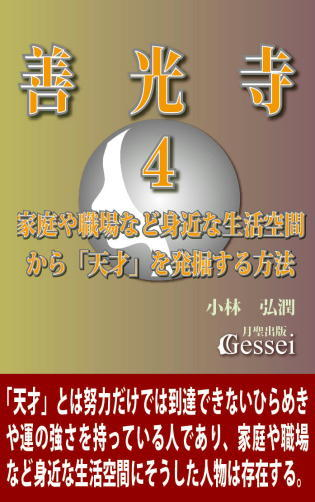 「天才」という言葉は「あの人は天才だ」とか「天才とは１％の閃きと99％の努力」というような用法で世間でもよく使われますが、この言葉には「普通の人とは違った特別な人で、探しても滅多にいないレアケース」（偉人や英雄とほぼ同義語）というイメージが付随しているために、「そういう人は今の自分がいるような世界とは全然違った社交界のような場所（例えば若い人があこがれる「芸能界」とか「マスコミが注目する名の売れた政治家とか著名人とか知識人などの社会的影響力を持った人たちの集まり」など）にいるのだろうから、自分には関係がない」という印象になってしまう人が大半だろうと思います。
私も以前はそう思っていましたが、2015年９月に刊行した電子書籍『善光寺３』で紹介したある知識を「人材発掘」という概念に応用しながら自分の周囲の人々の様子を見るようになってからは「本当にすごい人というのは自分の家庭や職場など身近な生活空間にも結構いるものだ」とか「それが実態であることを考えた場合、わざわざ社交界のような場所に行く必要はない（行っても「なんだこのレベルの低さは......」と幻滅するだけ）」と思えるようになったものです。
世間で相応の社会的影響力を持った「知識人」と呼ばれる方々は、ともすれば「自分たちはいつも勉強しているから偉いが何も勉強していない一般庶民はダメだ」と言いたがるところがあり、例えば、『ゴーマニズム宣言』等で政治に関しても様々な問題提起をしている漫画家の小林よしのり氏はブログで「馬鹿な愚民ども」とか「庶民は無知」という露骨な言い方をしていていたものです。
この人は「知識人がしっかりエセ知識人や権力の横暴を食い止めなければならない」とか「知識人やジャーナリストはその役割を果たしているだろうか？ 暗澹たる状況と言うしかない」という言い方もしていたのですが、私にはこうした言い方が「現実を知らない理想主義的な愚痴」に見えたので、「こんな理想主義的で簡単に絶望してしまう底の浅い知識人よりも、自分の職場にいる人物（よしのり氏の言う「無知な庶民」）の方がよっぽど大人物に見えるんだけどな......」という思いになったところがあります。
「馬鹿な愚民ども」とか「庶民は無知」とか言っているよしのり氏に対しては「あなたの周りにいる一般庶民の方の中に「安倍首相以上の大人物」がひょっこりいる可能性もあると思いますよ。「庶民は無知」などと決めつけず、まずはそうした人がいないか探してみたらどうですか？」と言いたくなったのですが、おそらくよしのり氏をはじめとする「自分は社交界の人間（貴族）だから一般庶民とは違う」というエリート主義に凝り固まった人たちというのは「自分の身近にいる人の中から大人物を発掘するやり方を知らない（というか、そういう発想すら思い浮かばない）」のだろうと思います。
私がこうした「人材発掘」の仕事を本格的に始めるようになったのは2016年６月ですが、中には「この人はまぎれもない天才で、今は素質の段階でしかないが将来的には日本や世界を変えるような大人物になる！」と心底思えた人もいるもので、その職場内において2017年３月までにそうした人物を２人ほど見つけています（他にも「天才的な素質を持った人」であれば５人ほど発掘している。私がその職場で出会った人の数はせいぜい20～30人なので、かなりの高確率で人材の発掘ができていると思っている）。
ちなみに、私はこの「天才」という概念を「努力だけでは到達できない特殊な才能や運を持った人」と定義していまして、「学校の勉強ができる」という意味での頭の良さ（記憶力の良さ）はほとんど関係がないと思っています。普通「天才」と言いますと「東大とか早大とかを最優秀の成績で卒業するような頭のいい人」とか「野球のイチロー選手のようなスバ抜けた能力を持った人」というようなイメージが先に立ってしまうと思うので、実際には素質はありながら「自分でその素質に気づかないだけでなく、他の人からも指摘されたことがない」という人がかなり多いと思います。
私は自分の職場で出会った「天才」たちに対して「あなたには努力だけでは到達できないすごい才能がある」という話をした後、「今までに他の人から、あなたはすごい能力を持った天才だと言われたことがあるか？」と聞いてみたのですが、全員がきょとんとした表情で「自分にそんな才能があるとはとても思えない」とか「そんなこと今まで一度も言われたことがなかった......」という答えを返してきたものです。私としてはその度に「やはり自分にしかわからないんだろうな」と思いになったと同時に、「世間では人材発掘のノウハウ（ましてや「天才」を発掘する方法論）なんてまったく言われないから、こういう反応になってしまうのも無理もない......」と苦笑いしてしまったものです。
この本では「身近な生活空間から天才を発掘する」ことに関して様々な角度から論じていきたいと思っていますが、たいていの方（特に今までの『善光寺』シリーズを読まれてきた方）は『善光寺４』というこの本のタイトルを見て「なんで善光寺がこのテーマに関係あるんだ？」という疑問を持たれたのではないかと思います。
この「天才を発掘する方法」と「善光寺」という２つの概念は最初はまったく結びつかなくて困惑するだろうと思いますが、この両者がどう結びつくのかは本を読まれていく中で徐々にわかっていくと思います。それは私自身が「2015年５月に本格的に善光寺に関心を持ったこと」に関連しているのですが、最後の結論を読んだ段階で「確かに、この人にとって人材（天才）発掘という概念は善光寺と密接に結びついているんだな」と納得してもらえると思っています。
あと、『善光寺』シリーズ（２巻と３巻）は妙に漫画と縁がある（『カードキャプターさくら』『ジョジョの奇妙な冒険』等、かなりの漫画を紹介している）ことも大きく、私が「人材発掘に関する本は『善光寺』シリーズの続編である４巻の中で論じよう」という思いになったきっかけは、2016年12月に刊行されたある漫画の新刊（少女漫画です）を読んだことにあったものです。その際、「この漫画で展開されているテーマは善光寺シリーズのコンセプトに見事につながる以上、これなら善光寺シリーズの中に組み込める」という思いになったものです。
この本のキーワードとして最重要なのが「天才」という概念ですが、他のキーワードとして意識して欲しいのが「タイミングがいい」「持っている人」「運がいい人」「閃きやインスピレーション」という概念で、これらの概念と「ある漫画で紹介されているテーマ」が結びついた時に「世間で言われる「天才」とはこういう人のことを言うのか......」ということが理解できるのではないかと思っています。
ちなみに、この本で論じているのは「教育（世間でたまに言われる「わが子を天才にする教育法」のようなもの）」とは違いますのでご注意願います。ここで言っている「人材発掘」とは「誰でも教育によって天才にしてしまうノウハウ」ではなく「本人も気づかない天才的な素質を発掘するためのノウハウ」でしかないので、誤解なきようお願いいたします。
私としては、この本を読まれた方々が「ひょっとしたら自分の周囲にも「天才」は存在するかもしれない」と思ってもらえればそれで十分だと思っています。参考になれば幸いです。
イエスと弟子たち第二部上廉価版
 現代の人口の３分の１に相当する20億人以上の信者を擁する世界一の巨大組織・キリスト教は「絶対的リーダーだったイエスが十字架で処刑される」という衝撃的な出来事をきっかけに始まった。しかもそれを始めたイエスの弟子たちは、当時の社会において何の力も持っていない人々だった......。
現代の人口の３分の１に相当する20億人以上の信者を擁する世界一の巨大組織・キリスト教は「絶対的リーダーだったイエスが十字架で処刑される」という衝撃的な出来事をきっかけに始まった。しかもそれを始めたイエスの弟子たちは、当時の社会において何の力も持っていない人々だった......。
なぜ何の力もなかったイエスの弟子たちが、過酷な迫害に耐え抜いて教えを広めることができたのか？
一時は消滅寸前だったイエスの教団が、なぜ次々と外の世界に拡張していくようになったのか？
現代のキリスト教が「世界一の宗教」であることは世界中の誰もが認める事実だと思いますが、不思議なことに一般の人だけでなく教会関係者の方でさえ「イエスの死後に弟子たちが教えを広め、キリスト教が世界宗教になる基盤を作ったこと」がごく当たり前の話として認識されている感じがします。
ただ、聖書に書かれた記述を元に当時の状況を冷静に考えた場合、絶対的リーダーだったイエスに頼り切っていた弟子たちにとってイエスの処刑による衝撃と失望は計り知れないものがあったと思うので、そのショックで彼らは散り散りになり、教団は消滅して終わるのが普通の流れだと思います。
ところが、弟子たちはその後結束してイエスの教えを各地に広める行動を起こし、やがて教団はローマ帝国の隅々にまで広がって国教となり、徐々に世界各地に浸透していって最終的に「全世界に数十億の信者を持つ世界一の宗教」になってしまいます。このことは私たちが認識している世界史の中では「史上最大の大逆転劇」ではないかと思います。
なぜイエスと比べて何の力もなかった弟子たちが結束し、過酷な迫害に耐え抜いて教えを広めることができたのか。そして、なぜ一時は消滅寸前だったイエスの教団が勢力を蓄えて外の世界に拡張していくようになったのか。この『イエスと弟子たち第二部』ではそうした過程を描いていきたいと思っています。
今までの電子書籍版では「注と解説をつけたものを分割して刊行する」という方針でやっていましたが、その後「注と解説を切り離したものを廉価版として刊行した方がいい」という思いになりまして（詳細は電子書籍『月聖出版とは何か』本論16節に記載）、第二部一～六章（紙の本の『第二部上』と同じ）を一冊にまとめた形で刊行することにした次第です。
「注と解説」（執筆する際に聖書や資料のどこを引用したのかを明記した注と、小説で描いたエピソードが実際にあった可能性の検討などの解説）は「完全版」の方に収録していますが、これを読めば「小説で描いた話が現実にあったかもしれないリアリティー」が感じられると思うので、この『イエスと弟子たち』を一層楽しんでもらえると思っています。
ローマ帝国の支配下にあったイスラエルの地で独自の教えを説き始めたイエスは、伝統あるユダヤ教を冒涜し民衆を扇動する危険人物としてユダヤを統治するエルサレム衆議会に敵視され、様々な妨害を受ける。そして「奇跡を起こしてイスラエルを解放する王」であることをイエスに期待した民衆たちも、期待に応えないイエスの姿を見て失望する。
過越の祭りにおいて民衆は再びイエスを熱狂的に支持するが、策謀によってヘロデ・アンティパスを操り、洗礼者ヨハネを葬ったアンナスがユダを利用してイエスを逮捕する。そしてピラトの公開裁判で民衆を扇動して十字架刑の判決を出させ、最大の敵を処刑することに成功する。
ペテロは追いつめられた恐怖のあまりイエスを知らないと言ってしまったことを後悔し、自信喪失状態に陥ってしまう。そして、イエスの弟子たちは誰もが精神的支柱を失って虚脱状態となり、教団はいつ分裂してもおかしくない瀬戸際に立たされていた。
『イエスと弟子たち第二部上』目次
第一章 復活
第二章 始動
第三章 殉教
第四章 回心
第五章 離脱
第六章 懇願
イエスと弟子たち第一部廉価版
 ユダはなぜイエスを裏切ったのか？
ユダはなぜイエスを裏切ったのか？
民衆の支持を集めたイエスがなぜ十字架にかけられたのか？
『イエスと弟子たち』は2006年12月に刊行した小説で（聖書の研究書とか、学術的な論考ではありません）、キリスト教の始祖イエス・キリストの生涯のドラマ性と「裏切り」を行うユダの心中を詳細に描いた物語です。聖書研究の成果を踏まえて聖書に描かれたイエスの生涯の枠内はしっかり守りながら、物語としての面白さを十分に取り入れたつもりなので、普通の物語として読んでも面白いという印象を持ってもらえると思います。
刊行部数が少なくまだ世間的には認知されていませんが、この本を最後まで読まれた方からはかなりの高評価をいただいており、「とにかく面白い」「最初から止まらなかった」「２日で読み終えた」「今４回目に入っている」「非常に惚れ込んだ」「名著と言っても過言ではない」「続編が読みたい」などの声が届いたり、「面白くてどこにでも持っていって暇さえあれば読んでいるので、本が傷んでしまった」という理由で２冊目の注文（2940円の本）をしてくれた方すらいたものです。
今までの電子書籍版では「注と解説をつけたものを分割して刊行する」という方針でやっていましたが、その後「注と解説を切り離したものを廉価版として刊行した方がいい」という思いになりまして（詳細は電子書籍『月聖出版とは何か』本論16節に記載）、第一部全十二章を一冊にまとめた形で刊行することにした次第です。
「注と解説」（執筆する際に聖書や資料のどこを引用したのかを明記した注と、小説で描いたエピソードが実際にあった可能性の検討などの解説）は「完全版」の方に収録していますが、これを読めば「小説で描いた話が現実にあったかもしれないリアリティー」が感じられると思うので、この『イエスと弟子たち』を一層楽しんでもらえると思っています。
洗礼者ヨハネの後継者として独自の活動を開始したイエスの周囲にユダ、ペテロ、ヨハネらの弟子たちが集うが、「救世主宣言」によってエルサレム衆議会に敵視され、パリサイ派や祭司から執拗な妨害を受けるようになる。愛の教えが民衆に受け入れられず失意のイエスの前に現れるマグダラのマリア、保身からイエスを逮捕しようとする大祭司カヤパ、必死の思いで論戦を挑む祭司ボアズ、そして敵たちを背後から操る黒幕の存在......。
「ラザロの復活」によって民衆は再びイエスを熱狂的に支持するが、衆議会はユダを利用してイエスの逮捕に成功し、ピラトの公開裁判で民衆を扇動して十字架刑の判決を出させる。「裏切り」を行ったユダの心中には「過去の体験で刻まれた強い決意」があった。
二千年来の「謎」である、「ユダはなぜイエスを裏切ったのか」「民衆の支持を集めたイエスがなぜ十字架にかけられたのか」という問いに対する一つの答えがここにある。
序 章
第一章 洗礼
第二章 説法
第三章 宣言
第四章 捕縛
第五章 論戦
第六章 失墜
第七章 涙
第八章 過去
第九章 エルサレム
第十章 裁判
第十一章 十字架
第十二章 イエスとユダ
月聖出版とは何か・序論
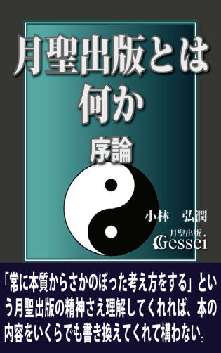 私（小林弘潤）は自分の著作を世に出そうと志して2004年４月に独自の出版社である「月聖出版」という出版社を作り、2014年からは電子書籍に軸足を移して現在までに「16タイトルの紙の本と70タイトル程の電子書籍」を刊行してきましたが、12年が経過した2016年４月になっても「本が売れない状態」が続いているため（販売実績は紙の本3000部と電子書籍2500部程度で、年平均になると500部弱しか売れていないことになる）、今の私の立場（社会的地位）は「社会に何の力も持たない無名の一作家」になると思います。
おそらく、私が刊行してきた「月聖出版の本」を読まれた方の多くは本に対して「世間に無数に存在する作家の一人が書いた本で、読んでみて何か参考になったり面白いと感じられるところがあれば十分」という認識を持ってこられたと思います。私としては「本をどう読むかは著者ではなく読者が決めることなのだから、そうした見方で一向に構わない」という気持ちをずっと持ってきたのですが、最近になって見方が変わってきまして、もっと「月聖出版の本を読むことがどういう意味を持つのか」とか「本を読むことで何が得られるのか」を読者の方に積極的にアピールした方がいいのかもしれない、という思いになってきたものです。
私がそれを感じるようになったのは、2016年２月に電子書籍『日本国憲法の実態２』を書いていく中で「本質と表面の違いを見分けることの大切さ」に気づいたことにあります（20節に記載）。この本では「憲法改正問題を考える際は「日本の憲法の特殊性」とか「（様々な団体の新憲法草案の中によく出てくる）元首規定の危険性」について真剣に検討した方がいい」という主張をしているのですが、私はずっと以前から「この「日本の憲法の特殊性」とか「元首規定の危険性」なんて話は、自分の中ではとっくの昔に〝当たり前〟になっている話なのに、なぜ世間の人はこれらの話の重要性に気づかないのだろう？」という疑問を持っていたものです。
それに関して思ったのは「これは認識の仕方に大きな要因があり、世間の人の多くは本質からさかのぼった認識ができておらず、表面的な事象をバラバラの状態で認識しているからだ」ということです。例えば「元首規定の危険性」の場合、私の場合は「元首規定と統帥権規定は本質が同じもの」として認識しているものの（統帥権規定とは「戦前の日本を悲惨な戦争に導いた軍部の暴走の元凶」とさえ言える明治憲法第11条のこと）、世間の多くの人は「元首規定と統帥権規定は何の関連もないバラバラのもの」として認識していることで、「元首規定の危険性に気づかない」という現象が起こっているのだと思います。
さらに考えていく中で思ったのは「あるいは〝国民的作家〟と呼ばれて今でも絶大な社会的影響力を持っている司馬遼太郎であっても、軍部の暴走の本質や統帥権規定がなぜ問題なのかということに気づいていなかったのではないか」ということです（これに関しては司馬が昭和前期の日本を論評する際に「魔法の森」とか「魔の季節」というようなオカルト的な表現を使っていることに出ていると思う。詳細は『日本国憲法の実態２』21節）。これは決して「自分は司馬より偉い特別な人間だからこの人が気づかなかったことに気づいた」という意味ではなく、「自分の場合、常に物事の本質と表面の違いについて徹底的に考え、本質からさかのぼって人間や世界を認識しようとする考え方をしているから気づいただけ」ということです。
私自身は自分のことを「普通の人とは違う特別な人間」とは思っていませんし（というか「思いたくない」というのが本音）、「エリート主義」とか「選民思想」というような「自分たちを特殊な人間とみなして他の人と差別化する発想」が大嫌いなところがあります。大事なことは、こうした「本質からさかのぼった認識を心がけ、常に訓練を積み重ねた人であれば、こうした発見をすることは誰でもできる」ということですが、私としては「月聖出版の本には様々なところで、こうした本質からさかのぼった発想の重要性を盛り込んでいるから、本を読むことでそうした発見ができる人が増えていくのではないか」（そうである以上、もっと月聖出版の本の〝効用〟のような話を積極的にアピールした方がいい）という思いになった、ということです。
電子書籍『勉強のコツ３ 秘伝編』14節では、受験勉強を経て晴れて大学に入学した方を対象に「大学の勉強など最低限の時間と労力で済ませ、浮いた時間をアルバイトや「月聖出版の本の内容の分析や解読」に使ってもらえれば」という言い方をしましたが、私は月聖出版から出ている様々なジャンルの本を読みこなせば「大学の勉強以上に様々な知識が身につく可能性も大いにある」と思っているところがあり（それでいて「授業料」などほとんどかからないと言える）、ある意味月聖出版の本を「一種の天才教育の場」とさえ思っているところがあります（例えば月聖出版から出している歴史系や政治系の本を読み込んで相当な理解をした人であれば「司馬遼太郎の〝司馬史観〟に匹敵するような歴史観を打ち出す」ことも十分可能だと思う）。
こうした話から「月聖出版とは単なる出版社ではなく、様々な可能性が秘められている」ことを感じてもらえればと思いますが、私としては「月聖出版の本を読んだ人の中から今後の日本や世界を変える人が出てくる」と本気で思っているところがあります。参考になれば幸いです。
日本国憲法の実態１ なぜ憲法は改正できないのか
 自民党の安倍晋三政権が安定した政権運営を続けている中（2016年１月現在）、「憲法改正の気運が高まっている」と言えます。
自民党の安倍晋三政権が安定した政権運営を続けている中（2016年１月現在）、「憲法改正の気運が高まっている」と言えます。
戦後日本の最高法規である「日本国憲法」を改正するためには「国会発議のための衆参両院それぞれで総議員の３分の２以上の賛成」と「その後国民投票で過半数の賛成」が必要という厳しい条件が課せられており、今まではどの政権であっても「国会発議のための改憲勢力による３分の２以上の議席」がクリアーできずに「憲法改正の必要性を痛感する政治家や政党であってもことごとく断念してきた」と言えますが、2012年12月に発足した第二次安倍政権ではまず衆院の３分の２の（自民と公明の連立与党による）議席確保をクリアーし、2016年７月に行われる参院選によって自公合わせて３分の２の議席が確保できれば（さらに改憲派であるおおさか維新の会などと連携すれば）「安倍首相の悲願だった憲法改正のための国会発議の条件が満たされる」ことになると言えます。
安倍氏も2016年初頭のテレビ討論の場で「与党だけで３分の２の確保は大変難しい。改憲に前向きな人たちと３分の２を構成していきたい」と語ったようですが、メディアからは「改憲勢力による３分の２の確保は十分可能」という事前予測も出ているため、長年憲法改正の必要性を訴えてきた改憲派の中には「ついに我々の悲願だった憲法改正が実現する時が来た。この機会を生かして何としても改憲を実現させなければ！」という気持ちになっている方々も少なくないのではないかと思います。
そうした改憲派の方々にとっては水を差すような言い方になると思いますが、私としては改憲の必要性を感じている人間でありながら、「現実的に考えるとこの時期の憲法改正は不可能に近く、安倍政権のみならず今後10年や20年の間の改憲は無理だ」と思っています。
念のために言っておきますが、私は「９条改正絶対反対！」を叫ぶ護憲派ではなく、改憲派が言われる「９条をはじめとする現憲法の内容には時代に合わない部分が数多く出てきている」という主張はその通りだと思っており、「憲法改正の必要性」を訴える改憲派の方々の気持ちもよくわかるという気持ちを持っている人間です（私も2010年３月までは「バリバリの改憲派」だったので）。
ただ、それでも私は「今の時期の憲法改正は不可能」と思っており、改憲派の方々に言いたいことは「まずはそうした現実を逃げずに受け止めるべきだ」ということです。なぜ私が「今の時期の改憲は不可能」と思っているのかと言いますと、まずは「改正条項という条件さえ満たせば改憲はできる」という認識を持っている改憲派のほとんどの方が「日本の憲法の特殊性に気づいていない」という気がしてならないことにあります。
改憲派がよく使う論法に「日本以外の他国では何度も改憲を行っている。だから日本も改憲するのは当然だ」というものがありますが、この論法は「日本の憲法と他国の憲法は同じようなものだ」という発想から生まれていると言えます。私はこういう意見を聞く度に「日本の憲法の特殊性について本当に知らないんだな」という思いになりますが、まずは「日本の憲法は他国の憲法（特にアメリカやフランスやドイツなどの憲法）とは根本から違う」ということをしっかり押さえる必要があると思います。
改憲論者からはよく「憲法は〝不磨の大典〟ではない。改正をタブー視してはいけない」という意見が出ます。例えば、民主党の前原誠司議員は2013年に「96条先行改正の動き」が話題になった際の新聞インタビューで「同じ第二次大戦敗戦国のドイツは何十回も憲法を改正しているのに、日本は60年あまり何も変わっていない。憲法96条が規定する改正手続きが憲法を「不磨の大典」にしている要因となっています」と言っていたのですが、こんな意見などピント外れもいいところだと思います。なぜなら、「不磨の大典」と呼ばれたのは現憲法だけでなく明治憲法も同じであり、「両方の憲法が同じように「不磨の大典」と呼ばれて手をつけられなかったのは、(96条の問題ではなく）日本の憲法にはそうなってしまう特性があると考えるのが自然」だからです。
もう一つ、改憲派が改憲の必要性を訴える際の論法としてよく「現憲法は占領下でGHQが作ったものだ。だから日本人の手で作り直すべきだ」というものがあります。私としてはこうした主張をする人たちに「もし現憲法が本当にGHQが作った〝占領憲法〟なら、そうした憲法が70年近くも存続しているのはおかしいと思いませんか？」と言いたくなります。
〝バリバリの改憲派〟と言える石原慎太郎元東京都知事は「思い返してみるがいい。敗戦の後占領された国家で、占領支配による有効な国家解体の手立てとして一方的に押しつけられた憲法なるものが独立を取り戻した後にも正統性を持つ訳がどこにあるのだろうか。前文からして醜く誤った日本語でつづられた法律が、自主性を取り戻した国家において通用するといった事例は人間の歴史の中でどこにも見当たらない」と言っていたことがありましたが（産経新聞2012年３月５日付）、私はこれを読んだ時に石原氏に対して「占領下にアメリカ人の手によって作られた占領憲法が、70年近くもまったく改正されないなんて、おかしいとは思いませんか？」と言いたくなったものです。
これが「憲法ができて10年や20年の話」ならわかります。しかし現実は、「憲法ができてから70年近くが経っている」のです。現憲法が本当に「アメリカ人が軽い気持ちで作った占領憲法」なら96条に書かれた条件など関係なく、有事など何らかの危機をきっかけにして「何としても日本人の手による自主憲法を！」という声が出てとっくの昔に改正されるのが自然だと思います（仮に日本人が「外国人が軽い気持ちで作った憲法を後生大事にし続けるほど、愛国心のない薄情な民族」であればそうなるのもわかるが、私には日本人がそこまで薄情な民族だとは思えない）。
石原氏はよく「歴史を勉強しておらず、歴史認識ができていない政治家が多いのには困ったものだ」という愚痴を言っていましたが、「憲法に関してはあなたも同じだ！」と言わせていただきます。
私がこの『日本国憲法の実態１ なぜ憲法は改正できないのか』を通じて改憲派の方々に言いたいことは「なぜ憲法は改正できないのか」ということに対する問題意識がなさすぎる、ということです。本当に憲法を改正したいのなら、まずはこのことに対する問題意識を持つべきで、「この問題を徹底的に考えない限り憲法改正など未来永劫できない」と断言させていただきます。
日本国憲法の実態２ 憲法と天皇はどちらが上か？
 現代においては世界中のどの国でも「憲法」というものを持っていると言えるため、「国家であれば憲法を持つのは当たり前だ」という認識が世界中で浸透していると言えますが、実際にはそうした政治体制は「世界における文明国家が誕生した当初から存在した絶対普遍の真理」でもなんでもなく「18世紀末のフランス革命以降に生まれた、ここ200年あまりの現象にしか過ぎない」と言えます（一時的な流行、という言い方もできる）。
現代においては世界中のどの国でも「憲法」というものを持っていると言えるため、「国家であれば憲法を持つのは当たり前だ」という認識が世界中で浸透していると言えますが、実際にはそうした政治体制は「世界における文明国家が誕生した当初から存在した絶対普遍の真理」でもなんでもなく「18世紀末のフランス革命以降に生まれた、ここ200年あまりの現象にしか過ぎない」と言えます（一時的な流行、という言い方もできる）。
憲法（近代憲法）に対しては「フランスで生まれ、アメリカで花開いた」という言い方がされることもありますが、この「憲法に基づいた政治体制」が近現代の世界を席巻した理由は単純で、それは「憲法を整備した国が（大まかには）国力を増大させ、その国の国民が幸福を享受するようになったから」と言えます。幕末期の日本が「黒船来航」を象徴とする欧米列強の脅威を痛感して明治維新という社会変革を起こし、その後「明治憲法（大日本帝国憲法）に基づく国家作り」という道を選んだのも「当時の列強国であるアメリカ、フランス、イギリス、ドイツなどの国が憲法に基づいた政治体制の国であり（イギリスは多少違うが、「立憲主義に基づいた国」であることは間違いない）、彼らに倣って憲法に基づいた政治体制を作れば独立が確保できるだけでなく、国力が増大する可能性が高い」という算段をしたから、という言い方ができると思います。
憲法という概念を一言で定義しますと「国家の枠組みを定めた法律」という言い方ができますが、運用が軌道に乗ってその国に定着した場合は「全国民だけでなく為政者や君主の行動や判断すらも縛る圧倒的な権力を持った存在」と化すため、憲法とはある意味「専制君主や独裁者よりも強大な力を持つ、権力の塊」という言い方すらできます。
フランスと並んで「近代憲法発祥の国」と言えるアメリカの場合、20世紀前半から世界のトップとして君臨し続けたと言えますが、そのアメリカの発展と繁栄の背後に「合衆国憲法」の存在が大きく影響している（それをアメリカ人の圧倒的多数が認めている）ことは「1787年に制定された合衆国憲法が230年近くが経過した現在でも生き残っている」（もちろん、日本の憲法と違って何度も部分改正はしているが）ことが如実に示していると思います。世界における憲法の平均寿命は約20年と言われているため、この「合衆国憲法が230年もの長寿を保っている」ことは「合衆国憲法が（他国の憲法の中でも突出して）権力の塊となり、絶対的な存在として世界で君臨している」という意味になるのではないかと思います。
ただ、この「合衆国憲法が230年もの長寿を保っている」ことは憲法の歴史から考えると「異例であり特殊」という言い方ができ、というのも他国の憲法は一般的にもっと寿命が短いと言えるからです（ジェファーソンは大体の憲法の寿命を19年と見積もっていたようだが、大まかにはその程度と言える）。
基本的に、憲法が廃止されたり全面改正（部分改正ではなく根本的に入れ替わる事態）される時というのは「国内におけるクーデターとか対外戦争の敗戦や侵略によって、政治体制がひっくり返された時」という言い方ができます。日本の場合も、1945年の太平洋戦争の敗戦で「それまでの体制がひっくり返された」ことによって「明治憲法が廃止されて現憲法が制定された」と言えますが、それでも56年という年月の間継続したので「明治憲法は世界的に見ると〝長寿〟の部類に入る」と言えると思います。
そして現憲法も「占領期にアメリカ人の手で作られた〝占領憲法〟」などと散々に言われながら、悠々と70年近い長寿を保っていると言えますが、それでいて日本の憲法（現憲法だけでなく明治憲法も含む）は「230年の長寿を保っている合衆国憲法以上に異例であり特殊な憲法」という言い方ができると思います。
それが言わずと知れた「制定以来一度も改正（部分改正）がされていない」という要素で、前作『日本国憲法の実態１ なぜ憲法は改正できないのか』でも触れましたが、合衆国憲法は1992年５月までに18回改正してこの間27ヶ条を追補、ドイツは09年７月までに57回、フランスも08年７月までに24回改正しているのに対し、現憲法は施行から69年の年月が経っていながら「ただの一度も改正されていない」と言えます。
第１巻では「現憲法が70年近く一度も改正されない理由についてもっと問題意識を持つ必要がある」という主張をしましたが、そこで続編である『日本国憲法の実態２ 憲法と天皇はどちらが上か？』では、その「理由」の一つとして私が考えている「日本の憲法が持つ、他国の憲法にはない特殊性」という視点について詳しく述べてみたいと思います。
第１巻の最後では「それに関する踏み込んだ話は改憲派の方々に衝撃を与えてしまうため、自分としても公開するかどうかを慎重に考えてきた」という言い方をしましたが、この部分を読まれて「何を偉そうに......」とか「衝撃を与える？ できるものならやってみな」というような気持ちになられた改憲派の方々も少なくないと思います。
私としては、「こういう挑発的な言い方をした方が改憲派の方々の注意を喚起するのではないか」と思ってあえてこうした言い方をしてみたのですが、取りあえず本書を読まれる前にこの本の副題にしました「憲法と天皇はどちらが上か？」という問題を考えていただければ、と思っています。
言っておきますが、この質問に対する答えは一つしかなく、「もう一つの答えが成り立つ余地はない」と言えます（個人的にこの６年ほど「もう一つの答えが成り立つ余地があるか」を徹底的に考えてきたつもりだが、「どう考えても成り立つ余地はない」という結論に達したところがある）。この時点でも「この質問が意味する恐ろしさ」を多少なりとも感じられた方がいらっしゃるのではないかと思いますが、この質問に対する答え（それに付随する恐ろしい現実）を突きつけられても動揺せずに耐えられるという覚悟を決められた方のみ、本書を読む資格があると思います。改憲派の方々は、どうか安易な気持ちで本書を読むことのないよう、お願いいたします。
日本国憲法の実態３ 現憲法を作ったのはマッカーサーではない
 1947年５月に施行された日本国憲法に対しては「敗戦後の占領下でアメリカ人に押しつけられた憲法で、日本人が自主的に作ったものではない」という意見が根強く、例えば安倍首相は2013年４月の新聞インタビューで「憲法を戦後、新しい時代を切り開くために自分たちでつくったというのは幻想だ。昭和21年に連合国軍総司令部（GHQ）の憲法も国際法も全く素人の人たちが、たった８日間でつくり上げた代物だ」という言い方をしています。
1947年５月に施行された日本国憲法に対しては「敗戦後の占領下でアメリカ人に押しつけられた憲法で、日本人が自主的に作ったものではない」という意見が根強く、例えば安倍首相は2013年４月の新聞インタビューで「憲法を戦後、新しい時代を切り開くために自分たちでつくったというのは幻想だ。昭和21年に連合国軍総司令部（GHQ）の憲法も国際法も全く素人の人たちが、たった８日間でつくり上げた代物だ」という言い方をしています。
安倍氏が総裁を務め自民党は1955年の結党以来、60年にわたって憲法改正を党是に掲げ続けていますが、自民党が結党以来「憲法改正、自主憲法制定を悲願にしてきた」一因に「現憲法は日本人が作ったわけではなくアメリカ人によって押しつけられたものだから、日本人が独立の精神を取り戻すためにも日本人の手による改憲は必要であり当然」という意識があることが推測できます。
安倍首相だけでなく自民党の政治家の中にも「現憲法が実質的にはGHQ（その総司令官であるマッカーサー）が作ったものであることは事実」という認識を持っている方々が少なくない雰囲気があり、例えば自民党の礒崎陽輔議員は「GHQが作った憲法で日本は良いのか。だから自主憲法を制定するというのが党是だ。多くの国民は憲法制定の経緯を知らない。善しあしではなく、英文で米軍が書いた憲法を訳せと言われたことを歴史の事実として知って欲しい」という言い方をしています。
ただ、私としてはこの「現憲法はGHQやマッカーサーが作った」という説が事実とは限らないという認識を持っており、関係者の方々に対して「現憲法はマッカーサーが作ったという前提に立つといろいろ違和感や不審な点が出てくるところがあるから、そうした前提をもう一度考えてみる必要があるのではないでしょうか？」と言いたくなることがあります。
その「違和感や不審な点」の象徴が、このシリーズの第１巻でも指摘しました「そうした〝外国人が作った占領憲法〟が70年近く一度も改正されない（他国の憲法は頻繁に改正しているのに、現憲法は70年近く一度も改正したことがない）」「しかも憲法草案を作った当時のGHQのスタッフであっても、そうした事態を夢にも思っていなかった」ことだと思います。この『日本国憲法の実態』シリーズの第１巻では「改憲派の方々は、〝占領憲法〟が70年近く一度も改正されないことにもっと問題意識を持つべきだ」という主張をしましたが、私はこの「なぜ外国人が作った憲法なのに一度も改正されないのか？」という〝謎〟に対する納得の行く答えを出すことはそれほど難しくないと思っており、それは「外国人ではなく、日本人が作った（そしてその日本人が「この憲法はそう簡単には改正させないぞ」という強烈な意志を込めた）」と考えれば辻褄は合う、と言えるからです。
実は私は「現憲法を作ったのはマッカーサーではなく、正真正銘の日本人だ」という認識を持っています（2010年３月に気づいて以来様々な検討を重ねた結果「どう考えても間違いない」という結論に達したところがある）。私としては「仮にこの説が世間で認められて定説になったらどうなるかな」と想像してしまうこともあるのですが、「現憲法や憲法改正に対する多くの人の認識が根本からひっくり返ってしまう」ことになるだけでなく、自民党の結党以来の党是と言える「自主憲法制定」という概念の前提がなくなってしまうことになるため（自主憲法制定という概念は「現憲法は外国人が作った」という前提で成り立っているため、「日本人が作った」となると必要性が一気に低下してしまうと言える）、「安倍首相をはじめとする改憲派がショックを受けてやる気をなくすだけでなく、自民党の存立基盤にまで影響するだろうな」という思いになってしまうところがあります。
この「現憲法は押しつけ憲法ではなく日本人が作った」という説は世間でも出ることがあり、それは「現憲法のベースとなっているマッカーサー草案は鈴木安蔵などが作った「憲法草案要綱」をモデルにしている以上、鈴木をはじめとする憲法研究会が作ったと言っても過言ではない」という意見です。私もこの説は検討してみたのですが、「もちろんマッカーサー草案が憲法草案要綱に影響を受けている可能性はあるだろうけど、この説に立った場合は「現憲法が70年近く一度も改正されずに続いている」ことの説明がまったくできないだろうな」という思いになったものです（この草案には「遅くても10年以内に国民投票による新憲法を制定すべき」という条項があり、この草案を作った人々の中に「暫定憲法という意識しかなかった」ことが明らかだから）。
その意味で、この本で私が紹介したい「現憲法を作った日本人」というのは鈴木安蔵や憲法研究会ではなく、別の人物だと言っておきたいと思います。もちろんそれは「当時の日本人の総意」というような抽象的な概念ではなく「ある特定の人物」で、少なくとも個人的には「この人が作ったと考えれば、現憲法が70年近く一度も改正されない理由が全部納得できる」という思いを持っています（ちなみに、この人は鈴木安蔵よりもずっと名前が知られている）。
ただ、私が提示する「現憲法を作ったのはマッカーサーではなくこの人だ」という説については、「確実な証拠」まで出せるわけではなく、「傍証（間接証拠）の積み重ねしかできない」ことを言っておきたいと思います。それは「この説については自分でも半信半疑」という意味ではなく、個人レベルでは「100％の確信」は得ているのですが、「その確信（証明）というのは自分自身の中でしかできず、客観的な証明ができる段階には行っていない」ということです。
ですから、この第３巻を最後まで読み終えた方でも「現憲法を作ったのがこの人であることに対する確信が持てる」という段階に行かないと思います（というより、「そう簡単に納得してもらっては困る」という気持ちがある）。さらに言いますと、私は宗教的な発想はしない人間なので、自分が確信できたこと（自分にとっての事実）に対して「これは事実なのだから皆さんも信じるべきだ」という言い方を一切しません。それは「自分にとっては事実でも、他の人にとっては事実にならない」ことが最初からわかっており、「そうした場合は世間で様々な議論をする中で各人の判断を大事にしてくれればいい」と思っているからです。
ただ、「現憲法を作ったのはマッカーサーではなくこの人だ」という説が「解釈として成り立つ」という段階に行くことは間違いなく、あとは「この本で書いた話を参考意見として、各人が判断するなり世間の中で議論して決めてくれれば」という気持ちです。
おそらく、今まで「現憲法を作ったのはマッカーサー」という認識を長年抱いてきた方々にとっては第２巻だけでなくこの第３巻も相当な衝撃をもたらすと思いますが、私としては「一時的な産みの苦しみは仕方がない」という覚悟を決めているところがあります。そうした衝撃を耐え抜いた人にはおそらく「未来への希望」が見えてくると思いますので、この本が「未来の日本の針路を指し示すための一里塚の役割」を果たせればという気持ちです。
西郷隆盛とは何者か１ 西郷は実像以上に美化されている
 幕末維新史上最大の英雄とも言われる西郷隆盛という人物に対しては、当時の時代から現代にかけて（戦場指揮官としても政治家としても、そして人間としても）一貫して高い評価が続いている」という言い方ができます。
幕末維新史上最大の英雄とも言われる西郷隆盛という人物に対しては、当時の時代から現代にかけて（戦場指揮官としても政治家としても、そして人間としても）一貫して高い評価が続いている」という言い方ができます。
西郷という人に対しては「江戸城無血開城の交渉では敵となった勝海舟が「100万の市民が殺されもせずにすんだのは実に西郷の力だ」と西郷を絶賛し、その後は西南戦争で朝敵となった西郷の名誉回復のために奔走した」とか「西郷が戊辰戦争で賊軍として敗れた庄内藩に寛大な処分を下したことで、その後の庄内藩は大の西郷びいきになった」というような「西郷と敵対した陣営すらも感服してファンになってしまうほどの寛容さや徳の高さ」がよく語られるため、「凡人には想像もつかないほどの巨大な器と人間的魅力を持った人格者」として認識されることが多いと言えます（西郷に会った人が次々とこの人に魅了されてしまう様子について、司馬遼太郎は「大磁石」、高橋英樹氏は「人間ブラックホール」と言っていたもの）。
ただ、その一方でこの人のことを詳しく調べてみると、この人が「自分に敵対する勢力に対して情け容赦なく叩きつぶそうとする非情さ」や「そうした相手に対しては陰険姑息な策謀すらも躊躇しない策略家」という側面も持っていることがわかります。
こう言いますと熱心な西郷ファンの方から「西郷さんはそんな人じゃない！ 敵だった勝海舟や庄内藩が西郷を絶賛したのはこの人の器の大きさや徳の高さに感服したからだ」という反論の声が聞こえてきそうですが、実際には現代で西郷を研究する人の多くは「西郷には人格者の側面だけでなく策略家という側面もある」ことを認めている雰囲気があり、例えばNHKBSで放送された「ＢＳ歴史館」で西郷を扱った回（2012年4月22日）に出演した３人の西郷研究者の全員（高橋英樹氏、加来耕三氏、青山忠正氏）が「西郷は相当な策略家だ」というトーンの話をしていたものです（一番印象的だったのが、ドラマで西郷を演じた経験がある俳優の高橋英樹氏が「江戸開城すらも西郷の策略ではないか」という趣旨の話をしていたこと）。
このことは「一般の人と（西郷を詳しく調べた）研究者の間には、西郷という人物に対する認識にギャップがある」ことを意味すると思いますが、そうしたギャップの象徴として紹介したいのが、「ＢＳ歴史館」において司会の渡辺真理氏と加来耕三氏の間であったこのやり取りです。
渡辺「西郷さんと駆け引きというのが（結びつかないのですけど）」
加来「すでに西郷マジックにかかっているわけです」
私自身は従来からの西郷研究者でも何でもなく、西郷という人物に関して本格的に調べてみようという思いになったのはごく最近なのですが（その意味で「素人が偉そうなことを言うな！」という批判を浴びるのは承知の上です）、調べていく中で「当時の関係者（例えば勝海舟や庄内藩）だけでなく現代の研究者であっても〝西郷マジック〟にかかっている人は想像以上に多いのではないか」という思いになったところがあります。
私がそう思ったきっかけは、番組で渡辺氏に対して「すでに西郷マジックにかかっているわけです」と指摘した加来氏本人が「西郷マジックにかかっていながらそれに気づいていないのではないか」と感じたことにありまして、というのも加来氏は「策略家としての西郷」を冷静に論評していながら、一方で「人格者としての西郷」を無条件に絶賛している雰囲気があり、「西郷さんを捨てたとき、日本人は最も大切なものをなくしてしまったのではないか」という主張を全面に出した著書まで書いているからです（そしてそうした雰囲気は、高橋氏、青山氏の論評を聞いていても感じたもの）。
加来氏らが「日本人は人格者のお手本として西郷を見習うべきだ」という心理になってしまった一因に、西郷が後世に残した有名な「命もいらず、名もいらず、官位も金もいらぬ人は、仕末に困るもの也」という言葉があると思います。この言葉に対して加来氏は「欲も何もかも捨てて国のために、人のために生きていく、そういう人間が政治をしなければならないとはっきり言っている。そういうリーダーが日本の歴史にいたのかなと思いますね」という論評をしていたのですが（高橋氏がこれに応えて「いないでしょうね。ほとんどが欲の中での戦いでしょうからね」と言っていたもの）、私はこの「人格者としての西郷を絶賛するやり取り」を聞いていて「この言葉には「策略家としての西郷を冷静に論評できる研究者」さえも魅了してしまう魔力のようなものが込められているな」という思いにさせられたところがあります。
個人的には西郷という人を徹底的に考えていく中で「以前かけられていた西郷マジックはかなり解けたのではないか」という感触が持てるようになったのですが（まだ完全ではないとも思うが）、そうした「マジックが解けた状態」で改めて世間に出ている西郷に対する論評に接してみると「西郷に対する美化や誤解に基づくものが多いんだな......」と痛感したものです。
例えば「西郷隆盛は、薩長同盟、あるいは江戸城の無血開城など、戦わずして勝つことを目指していた」という論評などは「すごい誤解だな」という気持ちになりますし、江戸開城を受け入れた西郷の判断に対して「慶喜を切腹させるなんてのは目的じゃないわけです。内戦を早く終わらせるんだと。そこからお互いの誠実さを付き合わせて、なるべく平和的に早く戦争を終わらせる道はないかと」という研究者の論評に対しては、「美化や誤解という問題に留まらず、本末転倒とさえ言えるな......」という思いになったところがあります。
私が西郷という人を考える中で思ったのは「今の時代に必要なのは、かつてのように「人格者としての西郷を絶対化して聖人のように崇拝・信奉すること」ではなく、タブーを排して冷静で建設的な分析と批判をすることではないか」ということです。個人的に検討する中で「これはどうしても批判的な指摘をする必要がある」という思いになったことの一つに「西郷に敵対することになった人や組織がことごとく（というのは大げさかもしれないが）悪人のレッテルを貼られていること」があり、例えば西郷が執念深く討伐にこだわった徳川慶喜、薩摩藩の実質的な君主でありながら西郷がとことん嫌った島津久光、西南戦争までは西郷の盟友だった大久保利通、そして新政府に逆らった「朝敵」「賊軍」として悲惨な運命を辿ることになった会津藩はいずれも「西郷に敵対することになったことで悪のレッテルを貼られた」という言い方ができると思います。
そうした「彼らに対する悪のレッテル」が、その後の多くの日本人の認識に影響したことで彼らは不当な評価をされ続け、「現代に至るまで彼らの名誉回復はなされていない」と言えますが（一度は会津藩と同様に「朝敵」とされた西郷が、勝海舟などの力によってすぐに名誉回復がなされたことと比べると、不公平としか言いようがない）、私は「この問題はいずれ日本人は直視しなければならない。こうした現実から目を背け続けた場合、どこかで必ずしっぺ返しが来る」と思っています。
私としては西郷という人をことさら貶めるつもりはなく、「評価できるところももちろんある」と思っています。それでいて「これはどうしても指摘しておかないと、今後の日本の命運にも影響してしまうのではないか」という危機感を覚えたため、あえてこの本では「西郷という人（さらに、西郷を信奉する方々）に対するかなり辛辣な批判」もしているところがあります。
そうしたこともあり、この本は熱心な西郷ファンの方にとっては「ショッキングな内容」になっているかもしれず、正直「そうした方にはお勧めできない」という気持ちがあります。ただ、西郷という人に対してそれほど思い入れのない方であればこの本は「ハラハラドキドキのサスペンス」という感じで面白く読めると思います。多くの方にとって「それまで各人が抱いていた西郷像がひっくり返るような内容」になっていると思いますので、そうした「自分の認識が転換する様子」も味わってもらえればと思っています。
西郷隆盛とは何者か２ 西郷が敢行した「東征」に込められた意味
 1868年（慶応４年）１月、西郷隆盛が主導する薩長軍は旧幕府軍との間で行われた鳥羽伏見の戦いで奇跡的勝利を収めると、勢いに乗った薩長は「官軍」を名乗って天皇の権威を背景にした全国支配を画策し、「新政府」に降伏しない佐幕派勢力が多数存在する東日本の諸藩を武力で降伏させるための「東征」を敢行します。
1868年（慶応４年）１月、西郷隆盛が主導する薩長軍は旧幕府軍との間で行われた鳥羽伏見の戦いで奇跡的勝利を収めると、勢いに乗った薩長は「官軍」を名乗って天皇の権威を背景にした全国支配を画策し、「新政府」に降伏しない佐幕派勢力が多数存在する東日本の諸藩を武力で降伏させるための「東征」を敢行します。
（薩長同盟以降の）幕末維新史の流れが大まかに紹介される際は「薩長同盟、第二次長州征討、大政奉還、龍馬暗殺、王政復古クーデター、鳥羽伏見の戦い、江戸城無血開城」という展開になることが多く、これらの出来事は「それぞれが本になるほど様々な議論が繰り広げられている」と言えますが、それに対して「鳥羽伏見の戦い」の後で新政府が決めた「東征」という判断についてはほとんど議論になることがなく、「この出来事は幕末維新における重要なポイントだ」と指摘する研究者や識者など皆無という言い方ができます。
私は「この東征の判断というのは幕末維新における重要なポイントで、ある意味で王政復古クーデターや鳥羽伏見、さらには江戸開城よりも重要な、幕末維新史の中でも一番のターニングポイントなのではないか」と思っているのですが、こう言われても「はあ？」という感じでピンと来ない人が多いと思います。
なぜ私が「東征は幕末維新における重要なポイントだ」と考えているのかと言いますと、「いくら鳥羽伏見の勝利があったと言っても、この状況でこんな判断をするのは正気の沙汰ではなく、常識的に考えてあり得ない」と思っているからです。
というのも、いくら鳥羽伏見で勝ったと言っても当時の新政府というのは「大規模な軍を長距離遠征させられるような予算」など一切なく、しかも「敵である慶喜が恭順なり講和なりの姿勢を見せている」という状況であるからです（これが「慶喜が徹底抗戦の構えを表明して江戸城にでも籠城した状況」であれば無理をしてでも遠征軍を派遣する必要も生じるが、私などは「なぜ慶喜が降伏した状況で大規模な遠征軍など派遣するんだ？」という気持ちになってしまう）。
さらに言いますと、新政府がこの「東征」という判断をする際に「遠征のために必要な財源を確保する」とか「勝算がどれだけあるかを徹底検討する」という作業をまったくと言っていいほどしていない「見切り発車であり一か八かのギャンブル」という性質のものであることは明らかで（この時の新政府が見切り発車で東征を決めていたことは「赤報隊の悲劇」を見るだけで明らか）、私などは「冷静で常識的な発想をする人間であれば、こんないい加減で無謀な判断はまずしないだろうな」という思いになってしまうところがあります。
こう言われてもピンと来ない人が多いと思うので「最近あった政治の話」に絡めて言いますと、「この時の新政府の発想というのは、「政権を取れば財源が出てくるはずだ」という見切り発車で「子ども手当」などの大甘の公約を掲げ、それによって2009年から３年３ヶ月の間政権を担った民主党政権の発想と同じ」（あるいはそれ以下かもしれない）ということです。
ある意味「同じ発想をしていながら、民主党政権は酷評され、明治政府は称賛されている」と言えますが、これは「民主党政権は失敗し、明治政府は（奇跡的に）成功したから」というだけの話だと思います。
私が言いたいのは、「この時の新政府（私はこれを決めたのは西郷だと思っているが）が決めた東征という判断は常識的に考えるとあり得ないぶっ飛んだ発想であり、そこにもっと問題意識を持つべきだ。それができなければ幕末維新の本質は決してわからない」ということです。
ところが、この「東征は幕末維新における重要なポイントだ」という主張が世間で聞かれることなど皆無で、幕末維新の研究者や識者の中で指摘する人が誰もいないだけでなく（その影響で、幕末の大まかな流れが紹介される際は「鳥羽伏見の戦い」の後で即「江戸城無血開城」という展開になるものが多く、「新政府、東征決定」という出来事はたいていすっ飛ばされてしまうと思う）、テレビの歴史番組とか小説やドラマなどでもテーマとして取り上げられることなどまずないと言えるので、私としては「なんで皆さんこの出来事の重要性に気づかないんだろう？」と不思議で仕方がない思いになります。
「幕末維新史上最大の事件は江戸開城」という声はよく聞かれますが、「東征という判断がなければ江戸開城もなかった」という言い方ができます。江戸開城が幕末最大の事件と言うなら、その前提である東征という出来事に対して「この判断は常識的に考えると理解できるものではないので、その裏には相当な秘密が隠されているのではないか」という問題意識を持つべきではないか、というのが私の意見です。
電子書籍『西郷隆盛とは何者か１ 西郷は実像以上に美化されている』では、「西郷を人格者や聖人としか認識できず、この人が〝世界史上屈指の策士〟であることがわからなければ、幕末維新の流れや本質は決してわからない」という主張をしてみましたが、私は明治維新が成功した秘訣はこの「東征」と、その後に行われる「東京遷都」の成功にあると思っています。
私がそういう判断をしている理由は「この東征と東京遷都が、日本のはるか昔にあった出来事と重なって見える」ようになったことにあります。そこでこの『西郷隆盛とは何者か２ 西郷が敢行した「東征」に込められた意味』では、その「日本のはるか昔にあった出来事」と、そこで浮かび上がってくる「西郷とある人物との類似」という視点について論じてみたいと思っています。この本は前作以上に「西郷という人物の秘密に深く切り込んだ内容」になっていると思いますので、楽しんでいただければと思っています。
社会の学び方・日本史編１ 古代、飛鳥、奈良、平安、鎌倉時代
 歴史好きの人はともかく、学校で教えられる「社会」や「歴史」という科目に対して「意味がわからない人名や用語を暗記するだけのつまらない勉強」という印象を持っている人は少なくないと思います。
歴史好きの人はともかく、学校で教えられる「社会」や「歴史」という科目に対して「意味がわからない人名や用語を暗記するだけのつまらない勉強」という印象を持っている人は少なくないと思います。
私がこの『社会の学び方・日本史編』で主張しているのは「本来の歴史とは面白い勉強であり、ちょっとした基礎知識を入れるだけで印象はまったく変わる」ということですが、同時にこの本では「人間社会の成り立ちや政治という概念を根本的なところから説き明かし、それを古代からの日本史の話につなげている」という要素もあるため、元々歴史が好きで様々な歴史物語や解説書を読まれてきた方であっても「こんな見方は今まで聞いたことがなかった」という思いになることもあると思います。
日本の政治体制の歴史には「古代から現代にかけて一貫して続いている一本の流れ」があります。この視点を考慮することなく各時代ごとの人物や出来事に関心を持つだけでは「日本の歴史が理解できた」とは言えないと思いますし、「日本を知った」ことにもならないと思います（この「一本の流れ」とは、世界の様々な国の中で日本という国だけが持つ特殊性と言えるから）。
この本で紹介している様々な視点が「日本という国を理解する」ための参考になれば幸いです。
日本という国には革命思想が成り立ちにくいという事情があるために、日本において社会の変革が行われる際には、「天皇が頂点に存在する」という政治体制はそのままに、その下の機関が実権を握るという「権力と権威の分離」というやり方が発明されたのです。それはまず摂関政治や院政という形で行われ、それを発展させて「日本の政治を、皇族や中央貴族ではない人間が行う」という形を明確にうち立てたのが源頼朝ですが、その後の日本における統治のやり方はすべてこの流れの中にあります。
「天皇が担う権力と権威の比重」は時代によって様々に変わりますが、鎌倉時代、室町時代、戦国時代、江戸時代の「武士政権の時代」を経て、さらにそれが終わった後にできた明治新政府においても、さらに太平洋戦争の敗戦によるアメリカ軍占領によってできた「日本国憲法を中心とする統治システム」すらも、「権力と権威を分離し、天皇は権威を体現する存在」という流れの中にあるのです。
つまり、この「天皇が頂点に存在する」という日本の政治体制は、太古の昔から現代にかけて気が遠くなるような長い時間の中、一貫して続いてきたと言うことができるのです。
～「第二章12 日本史で王朝交代が起こらないのは「革命思想が成り立ちにくい」という事情があるから」より
社会の学び方・日本史編２ 室町、戦国、安土桃山、江戸時代
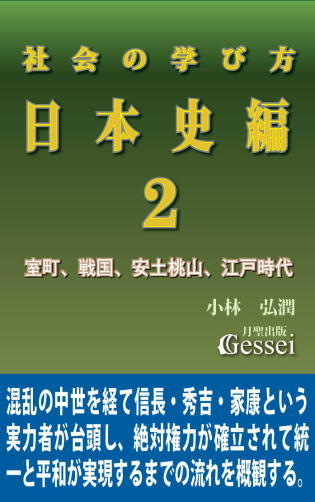 この『社会の学び方・日本史編』シリーズ（全３巻）は、古代から江戸時代までの日本史の大まかな出来事を概観する中で「日本史の背後に流れる一本の筋と様々な出来事のつながりを解き明かす」という内容で、第１巻では鎌倉時代までの主要な出来事を取り扱っているのに対し、この第２巻では室町時代から江戸時代後期までの大きな流れを論じた内容になっています。
現代の日本では、根本法である憲法を基軸にした法治主義と、「自分たちは日本という国家に所属する日本人」という国家意識が社会の隅々にまで浸透していますが、昔の日本はそうではなかったと言えます。
古代の飛鳥時代に聖徳太子、天武天皇、持統天皇らによって天皇を頂点にした国家のしくみ（この中には律令を基軸にした法治主義の要素も含まれていた）ができたと言えますが、その後の日本は次第に国家としてのまとまりを欠き、各地の様々な勢力が独立意識を持つ分裂国家のようになってしまったと言えます（鎌倉幕府の支配力と統制力が増した時期であっても、全国には幕府の統制下に服さない独立勢力が多数存在した）。
そうした分裂状況は室町時代になるとさらに加速し、「日本史上最弱の幕府」と言える室町幕府の権威と統制力が地に墜ちた後は、戦国時代と呼ばれる「地域の実力者が大名となってそれぞれの領土を支配し、そうした戦国大名たちが覇を競う群雄割拠の時代」に突入していくことになります。
長く続いた分裂状況を解消して「統一による平和」を実現するためには「絶対権力の確立」が必要だったと言えますが、それを最初に推し進めてあと一歩という段階まで達したのが織田信長と言えます。信長の死後、彼の後継者である豊臣秀吉が天下統一を実現し、さらに徳川家康が徳川家を中心にした絶対権力の確立に成功したため、その後の日本は２６０年ほど大きな戦乱がない平和な時代（江戸時代は古代ローマ帝国の「パクス・ロマーナ」になぞらえて「パクス・トクガワーナ」と呼ばれることもある）となります。
ただ、この「平和を実現するためには絶対権力の確立が必要だった」という言い方には違和感を覚えた方も多いと思います。それは「絶対権力」という言葉には悪いイメージがあり、それが「平和」という言葉から生じるイメージと合わないからだと思いますが、そうした違和感は「現代では憲法を基軸にした法治主義と、民主主義的政治体制が絶対権力となっており、それが現代の社会秩序を根本から支えている」という現実に気づいていないことで出てくる感覚だと思います。
その意味で、室町から江戸時代にかけての日本史は「最初は混乱していたものの、絶対権力が確立されたことで混乱が収まって平和になっていった時代」という言い方ができますが、この『社会の学び方・日本史編２』ではそうした「混乱期から絶対権力の確立へと向かう歴史の流れ」を概観してみたいと思います。
社会の学び方・日本史編３ 聖徳太子虚構説と古事記偽書説から浮かび上がる日本の黒幕
 「聖徳太子はいなかった」
「聖徳太子はいなかった」
十七条憲法や冠位十二階を制定し、「和を以て貴しと為す」の精神はその後の日本の〝国是〟となるなど、日本史に大変な影響を与えた聖徳太子という人物に対する「虚構説」が、21世紀に入って専門研究の世界だけでなく世間でも話題になり、 新聞の社説に「近代の実証的歴史学の結論は『聖徳太子はいなかった』で、どうやら決定的らしい」という論評が載ったり、歴史教科書にもこの説が記載されるなど、大変な反響を巻き起こしたと言えます。
個人的には「聖徳太子虚構説」に対しては「どこかピントがずれている」という印象を感じているのですが、それに関連した「十七条憲法は太子作ではなく、『日本書紀』の編纂者による創作である」という説には相当な説得力を感じています。もちろん、この説に対しても世間では賛否両論あると言えますが、この問題を考える際のポイントは「もしこの説が事実だった場合、なぜ日本書紀の編纂者はそうした創作をしたのか」という部分だと思います。
もう一つ、これは世間ではまったく話題になっていませんが、「日本最古の歴史書」として日本書紀よりも人気がある『古事記』という書物に対して「序は８世紀に書かれたわけではなく、後世の人間が書いたニセモノである」という「偽書説」があり、私はこの説にも説得力を感じています。ただ、この「古事記偽書説」は「聖徳太子虚構説」に比べると不思議なほど世間で認知されていないため、私としてはずっと「なぜだろう？」という違和感を抱いていたものです。
私は最近まで「十七条憲法が日本書紀の編纂者の創作である可能性」と「古事記偽書説が世間で認知されない理由」を別々の問題として考えていたのですが、やがてこの二つの問題が「一人の人物を介して一つにリンクする」ことに気づいたものです。その人物とは「1300年の間埋もれていたものの、近年になって徐々に研究者の間で注目を浴びるようになった古代の大物政治家」で、私は「この人が日本史に与えた影響は凄まじいものがあり、聖徳太子よりもはるかに重要な人物と言えるのでは」という思いになったところがあります（ちなみに、その人物とは私が『日本を千年王国にした女性・持統天皇』の中で「日本史における最重要人物」と指摘した持統天皇ではありません）。
古代から鎌倉時代までの日本史の流れを概括した『社会の学び方・日本史編１』では、「日本の政治体制の歴史には、古代から現代にかけて一貫して続いている一本の流れがあり、それは日本という国の頂点に天皇がいる天皇制である」という指摘をしていますが、私は「天皇制が現代でも続いているのは持統天皇の意志とこの人物の実行力にある」と思っています。
『日本史編１』では「天皇制を理解しなければ日本という国を理解したとは言えない」という指摘もしていますが、この『日本史編３』で紹介しています「古代の大物政治家」がどんな人物かを知ることは「日本という国を理解する」ためにも重要になると思います。参考になれば幸いです。
社会の学び方・世界史編１ 世界史の基礎知識「根本思想とその権威化」について
 2001年にアメリカで「9・11テロ事件」が起こった際、イスラム教の過激派が何千人もの民間人を残酷に殺すという事件を起こしたことに対して「イスラム教そのものにテロの温床がある」という意見が聞かれたものです（特に欧米で多いと思う）。こうした意見に対しては「イスラム教の経典であるコーランに戦争を奨励するような記述がある」という事情を考えれば当たっていると言えますが、それによって「イスラム教だけに問題があり、キリスト教など他の宗教には何の問題もない」という考え方になってしまった場合、的外れもいいところになると思います。
2001年にアメリカで「9・11テロ事件」が起こった際、イスラム教の過激派が何千人もの民間人を残酷に殺すという事件を起こしたことに対して「イスラム教そのものにテロの温床がある」という意見が聞かれたものです（特に欧米で多いと思う）。こうした意見に対しては「イスラム教の経典であるコーランに戦争を奨励するような記述がある」という事情を考えれば当たっていると言えますが、それによって「イスラム教だけに問題があり、キリスト教など他の宗教には何の問題もない」という考え方になってしまった場合、的外れもいいところになると思います。
キリスト教を擁護する人からは「聖書には平和や隣人愛を奨励する素晴らしい話が数多く書かれている以上、キリスト教は（イスラム教と違って）世界平和に貢献する正しい宗教なのだ」という論法が出ることがありますが、そうした論法に反論するために聖書に書かれた一つの文章を引用してみたいと思います。
それは新約聖書のヨハネ福音書8・44にイエスが語った言葉として書かれている「あなたたちは悪魔である父から出た者であって、その父の欲望を満たしたいと思っている」という文章です。
この「あなたたち」というのはユダヤ人を指します（この箇所はイエスがユダヤ人を相手に語っている状況であるため）。これは「ユダヤ人は悪魔から出た者だ」という、ある意味最低のユダヤ人批判と言えますが、このヨハネ伝の文章が「ナチスドイツが行ったホロコーストという残虐行為を正当化する理論になった」という指摘があります。
これは大澤武男『ユダヤ人とローマ帝国』に書かれていた話ですが、ドイツでユダヤ人の強制輸送が始まった頃の1941年12月の反ユダヤ宣伝紙に「この神に呪われたユダヤ人の血統繁殖の危機に本当の終止符が打たれるべきであるなら、その道はただ一つ、つまりこの民族を絶滅する他はない。なぜなら彼らの父は悪魔だからである」という記述があるようです。
この中にある「彼らの父は悪魔だからである」という表現がヨハネ8・44のそれを指していることは明らかである以上、「聖書の文章がホロコーストという残虐行為を正当化する結果になった」という可能性は高いと思います。
ただ、私がここで言いたいのは「実際の聖書には平和に反した悪辣で差別的な記述が様々にあり、キリスト教そのものに問題がある」とか「聖書にこうした記述を入れた作者の責任は重い」ということではありません。
なぜかと言いますと、新約聖書というのは二千年も前に書かれた書物であり、「後世のキリスト教徒が聖書に書かれた辛辣なユダヤ人批判の記述を削除していれば問題はなかった」と言えるからです。
しかし、現実問題として歴史と伝統がある宗教が「経典の編集や削除をする」のは非常に難しいと言えます。というのも、そうした宗教の関係者は経典の内容を「神の言葉」と認識しており、そうした「神の権威の力」に逆らうことは容易ではないからです。
この『社会の学び方・世界史編１』では、世界史の流れを知るために必要な基礎知識を紹介していますが、その中でも「根本思想（宗教思想）とその権威化」という視点は、世界史を本質的なところから理解するためには避けて通れない知識だと思います。世界史に関心のある方だけでなく、「歴史上、なぜ宗教が様々な問題を起こしてきただろう？」という疑問を持たれている方にも参考になるところがあると思います。
旅客機ごと高層ビルに突っ込み、何千人もの民間人を残酷に殺すという９・11テロ事件を実行した犯人たちは、「自分たちは悪いことをやっている」とはまったく思っていなかったと思います。なぜなら「すべては神の言葉であり絶対的な権威」である『コーラン』に、このような「戦争を肯定して敵を殺すことを奨励するように解釈できる記述」が存在するからです。
こうした残虐な事件を起こした人たちが「自分たちは悪ではなく正義だ」と思ってしまう原因は、ひとえに「権威の悪用」にあります。歴史上だけでなく現代の世界でも頻繁に起こる「宗教に関係した犯罪や戦争や残虐行為」を行う人はほとんどすべてが、この「権威の悪用」をしています。ここで紹介した内容を元に様々な事件が起こった過程を見ていけば、すべてがこのパターンに当てはまっていることがよくわかると思います。
人は何の拠り所もなく「悪」を行うことはできないものです。自分一人の判断で「大変な悪」「残虐な行為」というものをすれば、どんな人間であっても「自分は大変なことをしてしまった」という罪悪感で苦しむことになるからです。しかし、「権威の悪用」をして「残虐な行為であっても、権威によって正しいと認められているのだから、自分に罪はない。自分がやっていることは正しい」という発想をしてしまった場合、「罪悪感を抱くことなく平気で」残虐な行為ができてしまうのです。これが権威の悪用の恐ろしいところだと思います。
～「5 権威化の弊害における最大の問題点は「権威の悪用をして悪を正当化すること」にある」より
社会の学び方・世界史編２ 儒教国家中国とイスラム教国家の興亡
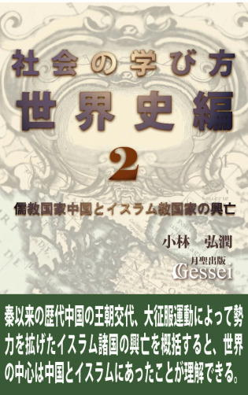 学校の授業に「道徳」という科目があるように、日本では昔から「徳」という概念が重要視され、理想的人間や目標とすべき人間像に対して「徳ある人」という言い方がされてきたと言えます。
この「徳」という概念の出所は古代中国の思想（キリスト教、仏教、イスラム教と並ぶ根本思想の一つ）である儒教にあると言えますが、中国の歴史を作ってきた漢、魏、隋、唐、宋、元、明、清などの歴代王朝はこの「徳ある人（その一族）が天命を受けて中国を統治できる」という儒教的な有徳者王思想をベースに政権を握ってきたという言い方ができます。
有徳者王思想というのは「中国という広大な領土を統治する一番の条件は徳があることで、徳のない人（一族）は皇帝になれず中国を統治できない」という考え方と言えますが、私は学校の授業や中国史について書かれた文献などでこうした知識を学んだ際「何か違うのではないか......」という違和感を覚えていたものです。
というのも、中国の王朝や皇帝の中には「徳ある人」には見えない人が多いからです。歴代皇帝の中には人民に過酷な徴税義務を負わせたり部下の大量粛清をするなど、相当ひどいことをやっている人物も少なくないため、中国史を知れば知るほど「中国の統治原理は『徳ある人が皇帝になれる』という有徳者王思想にあるというが、なぜ中国では、こんな理想と現実が乖離した状況が延々と続いてきたのだろう？」という疑問を持っていたものです。
そうした疑問が解決したのは『社会の学び方・世界史編１』で紹介した「思想の権威化」という視点に気づき、「儒教が権威化したことでその中にある有徳者王思想が悪用され、新興勢力に前王朝を倒すための大義名分として使われたのだ」という思いになったことにあります。
あと、現代の「ヨーロッパやアメリカという欧米諸国が世界のトップに立つ国際秩序」の中に生きている私たちはつい「世界の中心はいつも欧米だったのだろう」と思いがちになりますが、現実には欧米諸国が世界をリードしたのはここ2～300年の間だけで、それ以前の1000年ほどの時代で世界のトップの地位を争っていたのは「中国とイスラム教諸国だった」と言えます（当時のヨーロッパなど、中国やイスラム諸国と比べると文明が発達していない辺境の田舎でしかなかった）。
こう言いますと「なぜ中国とイスラム諸国が世界のトップでいられたのか？」という疑問が出てくると言えますが、同時に「なぜ以前は世界のトップだった中国とイスラム諸国が、勢力を衰退させて欧米に支配されるようになってしまったのか？」ということも興味深いテーマになると思います。
この『社会の学び方・世界史編２』では、そうした「かつての世界のトップ」であり、欧米などよりもはるかに「先進国」として高度な文明を誇っていた中国とイスラム教国家の興亡を概括してみたいと思います。高校の世界史で習う知識や用語をベースにしながら、様々な出来事のつながりがわかる記述を心がけてみましたので、読んでいく中で「歴史の流れが生き物のように見えてくる」という感覚が味わえると思います。
社会の学び方・世界史編３ キリスト教国家の発展と世界征服への道
 この『社会の学び方・世界史編３』は、古代のギリシャ・ローマ時代から19世紀末までのヨーロッパ史（欧米史）を時代順に概説した内容で、古代からの大まかなヨーロッパ史を把握したい方にとっては気軽な入門書になっていると思います。
この『社会の学び方・世界史編３』は、古代のギリシャ・ローマ時代から19世紀末までのヨーロッパ史（欧米史）を時代順に概説した内容で、古代からの大まかなヨーロッパ史を把握したい方にとっては気軽な入門書になっていると思います。
中学や高校で習うヨーロッパ史に出てくる用語や知識をベースにしていますので、「世界史の勉強とはひたすら用語を暗記し、無味乾燥な知識を頭に詰めこむしかない」という認識を持ってきた方にとっては「断片的だと思っていた知識が様々につながっていくことによる面白さ」を味わえると思います（世界史を専攻する受験生だけでなく、既に学校で世界史を学び終えた社会人の方にとっても「歴史ってこんなに面白いものだったのか」という思いを持ってもらえると思う）。
ヨーロッパ史は中国史やイスラム史と違って「小国の動きが様々に絡み合って全体の歴史を作っている」ところがあって非常に複雑で、時代ごとのつながりを理解することは容易ではありません。それに対し、この本ではヨーロッパ史の流れが理解しやすくなるために様々な工夫をしてみましたので、世界史を理解するための基礎知識を紹介した『社会の学び方・世界史編１』の内容も参考にすると、様々な場面で「そういうことだったのか」という手応えがつかめると思います。
「人類史上最大の文明国家」ローマ帝国の体制変革に成功したオクタヴィアヌスの手法、十字軍という侵略行為の背後にある「キリスト教の地獄観による人々の罪悪感」の影響、大航海時代の先駆けとなったポルトガルの未知の世界の開拓は「生き延びるための必死の努力」だったこと、宗教改革によるキリスト教思想の変化がその後のヨーロッパの発展の土台になったこと、世界の覇権国がポルトガル・スペイン・オランダ・イギリスと変遷する様子、ピューリタン革命・アメリカ独立革命・フランス革命が起こった経緯とその後の歴史への影響、フランス革命後に登場したナポレオンが民衆の支持を確固たるものにしたのは「所有権の不可侵」にあったこと、当初は綿織物工業という一分野から始まった技術の進歩が「産業革命」として社会全体を変えていった様子、南北戦争でリンカーンがこだわった「連邦維持」の方針がアメリカを世界の覇権国にする結果になったこと、そして国民国家体制によって「列強国」となった欧米諸国が植民地獲得競争をする帝国主義の時代が到来し、それが「かつて世界一の国力を誇った中国」を屈服させ、幕末の日本にもその波が押し寄せてそれ以降の日本史が変わっていく様子。そうした「19世紀末までのヨーロッパ史や世界史の流れ」が一望できる本になっていると思います。
日本を千年王国にした女性・持統天皇１ 天皇家存続の背後にある持統の強烈な意志
 「千年王国」という言葉があります。
「千年王国」という言葉があります。
これはキリスト教の新約聖書に出てくることで欧米のキリスト教国で有名になった概念で、ここから「千年という時間を一区切りとして考え、千年続いたものには特別の価値が付与されている」という考え方が生まれていると言えます。
日本で「千年以上続いたもの」として「天皇」という存在があることは、大半の日本人が知っていると思います。多くの日本人から「天皇家が千年以上存続してきたのは大変なことだ」とか「なぜ天皇家や天皇制はここまで末永く続いてきたのだろう？」という問題提起がなされていると言えますが、個人的にも2005年に刊行した紙の本『社会の学び方・日本史編』の中で、古代から鎌倉時代までの歴史の描き方として「天皇制をベースとした描き方」を心がけてみたところがあります。
これは05年当時の私も意識していなかったことですが、日本には他にも「国家規模で千年続いたもの」がいくつか存在します。それは「律令」という名の根本法、「日本書紀」に基づく歴史観、そして「平安京」という都です。
日本には「天皇」「律令」「日本書紀」「平安京」という４つの〝千年物〟が存在すると言えますが、注目していただきたいのが「この４つが始まった時期」です。
「天皇」の場合、この名称が成立したのは天武・持統期という説が有力と言えますが、律令も日本書紀も同じ時期に編纂が始まっているため、「天皇」「律令」「日本書紀」「平安京」という４つの〝千年物〟のうち３つまでが「天武・持統期という時代（飛鳥時代後半）に起源がある」という言い方ができます。
「日本史の中で最も重要な時代は何時代だと思いますか？」という質問をした場合、「戦国から安土桃山時代（織豊政権から江戸幕府成立まで）」とか「幕末から明治維新の時代」という答えはよく出ると思いますが、「飛鳥時代」と答える人はほとんどいないと思います。ただ、私としては「天皇、律令、日本書紀という３つの〝千年物〟がこの時代に集中して生まれている」ことを考えた場合、「飛鳥時代が最も重要な時代としか思えない」という気持ちになります。
ただ、一方でこの「飛鳥時代」に対しても偏った見方が蔓延している雰囲気があり、それは「飛鳥時代と聞いて真っ先に思い浮かべる人物は誰ですか？」という問いかけをすれば見えてくると思います。大半の人はこの問いに対して「聖徳太子」という人物を意識すると思いますが、私はこれは「日本書紀史観から生まれた偏った見方」だと思っています。
個人的に、日本書紀史観から多少なりとも自由になれた現在では「飛鳥時代で最も重要な人物は誰か」と問われた場合、迷わず（聖徳太子以外の）一人の人物の名前を出せるようになれたものです。
その人物とは、天武天皇の皇后として日本の大改革に邁進した後、自ら皇位に就いた持統天皇という「女帝」です。
私が「日本史で最も重要な時代は飛鳥時代」「飛鳥時代で最も重要な人物は持統天皇」と思っているということは、「日本史における最重要人物は持統天皇」という認識を持っていることを意味しますが、実を言いますと私がこうした認識が持てるようになったのはごく最近で、2013年に入って飛鳥時代のことに関心を持ち、様々に調べていく中で「飛鳥時代こそが日本史における最も重要な時代で、さらにこの時代を引っ張っていたのは持統天皇じゃないか」ということに気づいたものです。
現代人に人気のある日本史上の人物と言えば、聖徳太子、源義経、織田信長、豊臣秀吉、徳川家康、坂本龍馬、西郷隆盛などがあげられますが、私は彼らよりも持統天皇の方が日本史に与えた影響ははるかに大きいという認識を持っています。現代の「戦国時代と幕末に関心が集中した偏った歴史観」（例えば「ＮＨＫの大河ドラマでは、戦国と幕末以外の時代の話はなかなか視聴率が取れない」というような状況）ではこうした話はなかなかピンと来ないと思いますが、本書の内容がそうした認識を激変させるきっかけになればと思っています。
日本を千年王国にした女性・持統天皇２ 古代最大の内乱・壬申の乱勃発の真相
 「日本史における天下分け目の決戦」と言いますと、現代日本人の大半の人は「豊臣秀吉亡き後に徳川家康と石田三成が戦った関ヶ原の戦い」を思い浮かべると思いますが、個人的には「関ヶ原の戦いより、古代日本で起こった壬申の乱の方がはるかに重要な事件だ」という認識を持っています。
「日本史における天下分け目の決戦」と言いますと、現代日本人の大半の人は「豊臣秀吉亡き後に徳川家康と石田三成が戦った関ヶ原の戦い」を思い浮かべると思いますが、個人的には「関ヶ原の戦いより、古代日本で起こった壬申の乱の方がはるかに重要な事件だ」という認識を持っています。
というのも、壬申の乱の前と後では「歴史が完全に分断している」という可能性があるからです。その雰囲気が多少はわかるのが「日本号と天皇号が成立したのが壬申の乱後の天武・持統期である（その可能性が高い）」ことで、例えば「日本」という国号は紀元689年の飛鳥浄御原令から701年の大宝律令の制定へと至る過程で生まれたという説が有力なようですが、これは「天武・持統期にそれまでの『倭』という国号を『日本』に変更した」ことを意味します。
この「国号を変更する」ことは余程のことがないと起こらないと言うことができ、それは「天武・持統期から現代にかけての1300年の間、一度も『日本』という国号が変更されていない」ことから判断できます。関ヶ原の戦いに勝った家康だけでなく、様々な抜本的改革を成功させた織田信長でさえ「日本」という国号には手をつけていないと言えますが、さらに言いますと「日本史上最大の構造改革」と言われる明治維新の諸改革を成功させた明治政府であっても「日本」という国号を変えることはできなかったと言えます。
仮に現代の日本に「カリスマ的能力のある政治家」が現れて様々な抜本的改革を成功させたとして、その後で「日本という国号は古いしいろいろ問題もあるから、抜本的改革の象徴として国号を変更しよう」という動きを起こしたとしても、成功するのはまず無理だと思います。
さらに「天皇号」が成立したのも天武・持統期という説が有力なようですが、このことから「天武・持統期にそれまで『大王』だったこの国の君主の称号が『天皇』に変更された」「この時期に国号変更と君主の称号の変更が同時に行われた」ことがわかると思います。
この「国号と君主の称号の変更を同時に行う」というとてつもない大改革が成功した背景に、「壬申の乱で〝反乱者〟だった大海人皇子が勝って近江朝廷を滅ぼしたことで、それまでの秩序が根本からひっくり返って大改革がやりやすくなった」という事情が考えられると思います。
こうしたことが私の「壬申の乱の前と後では歴史が完全に分断している」という印象につながっているのですが、そこでこの『日本を千年王国にした女性・持統天皇２』では、「古代最大の内乱」であり「歴史を完全に分断した（その可能性がある）戦い」でもある壬申の乱勃発の真相に迫ってみたいと思います。
日本を千年王国にした女性・持統天皇３ なぜ式年遷宮は1300年続いているのか
 2013年、三重県伊勢市にある伊勢神宮はこの年に行われた「式年遷宮」と昨今のパワースポットブームの影響もあり、参拝者数が激増したそうです。
2013年、三重県伊勢市にある伊勢神宮はこの年に行われた「式年遷宮」と昨今のパワースポットブームの影響もあり、参拝者数が激増したそうです。
記録が残る1895（明治28）年以降、参拝者数が最も多かったのは2010年の約883万人だったようですが、13年の参拝者数はこの数を500万人以上も上回る1420万にのぼったようです。式年遷宮が行われる年は参拝者数が増えると言えますが、それでも戦後に３回あった遷宮の年の参拝者数は、1953年が約482万人、73年が約859万人、93年が約839万人だったようなので、いかに13年の参拝者数が突出しているかがわかると思います。
この年に伊勢神宮への参拝者が激増した一因に、伊勢神宮という存在が「行けば元気をもらえるパワースポットとして注目され、リピーターが増えた」という事情があるようです。
式年遷宮の報道の中では「週末のバスツアーを使って関東から何度も伊勢神宮を参拝している熱心な神宮ファン」の人の話があったのですが、その人は「いつもと違う空間にいた感じで、癒されたり不思議な力が得られる」「日常生活に戻った後も、ここでの雰囲気がしばらく持続する。前向きな気分で働けたり生活が送れる」と語っていたものです。
この「平成のお伊勢ブーム」の影響もあり、13年10月に行われた「第62回式年遷宮」は新聞やテレビをはじめとするメディアの関心もかなり高く、「内宮の遷御の儀が行われる10月２日」を中心に様々な報道で取り上げられていたものです。
ただ、私は式年遷宮に関する一連の報道に接していて「肝心なことが語られていないのでは」という違和感が拭えなかったものです。式年遷宮に関しては「伊勢神宮の内宮と外宮で20年に一度行われる御神体を新しい神殿に遷すための一連の儀式で、それに伴ってすべての社殿を新しく造り替えるだけでなく、社殿の中の宝物などもすべて新しいものと入れ替える」とか「飛鳥時代の690年に第１回が挙行されて以来、途中で中断期間はあったものの1300年以上続けられて現在に至っている」という話は頻繁に報道されたのでご存じの方も多いと思いますが、「神宮や式年遷宮に詳しい人であってもこの問いかけには即答できないんじゃないかなあ」と思ってしまう話があります。
それは「式年遷宮という発想を考えて実行した人物は誰か？」という問いかけです。この「誰が式年遷宮を考え、実行したのか」という視点はメディアの報道ではほとんど取り上げられていなかったので、遠距離から神宮に何度も参拝するような熱心な神宮ファンの人でも知らない人が多いと思いますし、神宮や式年遷宮に詳しい人であっても「天武天皇か持統天皇のどちらか」という歯切れの悪い答えしか出せないのではないかと思います（当時の史料を分析するとどちらの解釈も成り立つため）。
ただ、私はこの問いかけに対して躊躇なく「それは持統天皇だ」という答えを出すことができます。それは、式年遷宮というものが「20年に一度、莫大な費用がかかることを承知の上ですべての社殿を新しく造り替える」という常識外れのぶっ飛んだ発想から始まっていることを考えた場合、「こういうとんでもない発想を思いついて実行に移せるのは持統以外に考えられない（常識的で慎重な性格の天武では無理）」と言えるからです。
そこでこの『日本を千年王国にした女性・持統天皇３』では、「持統天皇が式年遷宮という発想を思いついて制度化した理由」や「常識的に考えたらぶっ飛んだ発想である式年遷宮が1300年以上も続いている理由」に関する話を述べてみたいと思っています。
伊勢神宮ブームは式年遷宮があった年だけでなく翌年（「おかげ年」と言うらしい）にも続くという話があり、「おかげ年にお伊勢さんに参拝するのが一番御利益がある」という伝承もあるようです。私は「この本は神宮に参拝したことのある人や、これからしようと思っている人にとってのガイドブックとして役に立つのでは」と思っているところがあります。参考になれば幸いです。
たった2ヶ月で勢力を1000倍に拡張させた男・源頼朝
 源頼朝という人物に対しては「鎌倉幕府の創始者」「その後700年に及ぶ武家政治を始めた人物」として知らない人はいないと言えますが、それでいて多くの人が持っているこの人のイメージはいいとは言えず、たいていは「弟であり、しかも平家滅亡に多大な功績があった源義経を追放した」という出来事に象徴される「部下を冷酷に粛清する非情な人物」というものだと思います。
源頼朝という人物に対しては「鎌倉幕府の創始者」「その後700年に及ぶ武家政治を始めた人物」として知らない人はいないと言えますが、それでいて多くの人が持っているこの人のイメージはいいとは言えず、たいていは「弟であり、しかも平家滅亡に多大な功績があった源義経を追放した」という出来事に象徴される「部下を冷酷に粛清する非情な人物」というものだと思います。
これはあまり知られていないと思いますが、2000年にアメリカの雑誌「ＴＩＭＥ」が「この1000年間の世界史で、世紀ごとに偉大な業績を残した人物を選ぶ」という特集を行ったところ、日本人でただ一人選ばれたのが頼朝だったようです。私はこれを知った時に「我が意を得たり」という思いになったのと同時に、「案外日本人より外国の人の方が、頼朝の実態をよくわかっているのかもしれないな」という思いになったものです。
というのも、日本人に同じ質問をした際に「頼朝」を選ぶ人はほとんどいないことが推測できるからです。この話に対しては「え？ なんで頼朝が選ばれるんだ。ここ1000年の日本史なら信長とか家康が選ばれる方が自然じゃないのか？」という思いになられた方も多いと思いますが、そこでこの本ではそうした「頼朝に対するイメージ」が多少なりとも変わるような話をしてみたいと思います。
この本では頼朝という人物が持っている「普通の人には考えつかないような常識外れのぶっ飛んだ発想をする人物」という側面と、「世界史的にも類例のない、たった２ヶ月で1000倍という空前絶後の勢力拡張を成功させた人物」という側面を紹介していますが、特に後者の話に関しては「そんな話、一度も聞いたことがない」とか「ホントかよ？」と思われる方も多いと思います。
重要なのは「こういう常識外れの現象が起こった原因や理由を突き止めること」ですが、私としては考えていく中で「冷静に考えてみるとそれなりに合理的な説明はできる」という思いになっていったところがあります。合理的な説明ができるということは「条件さえ整えば他の人であっても再現ができる」ことを意味するので、私としては次第に「こうした現象が現代でも起こる可能性は大いにある」という気持ちになっていったところがあります（もちろん「条件さえ整えば」の話ですが）。
「なぜ２ヶ月で1000倍の勢力拡張が可能になったのか？」の話は、組織拡張を志している経営者や組織の長の方にとっても参考になると思いますが、個人的には「未だ世に出ず埋もれている有望な政治家や、組織拡張ができずに悩んでいる政党の方々に飛躍のヒントを与えられれば」という気持ちを持っています。
善光寺１ 頼朝、信玄、信長、秀吉を翻弄した独立不羈の地方寺院
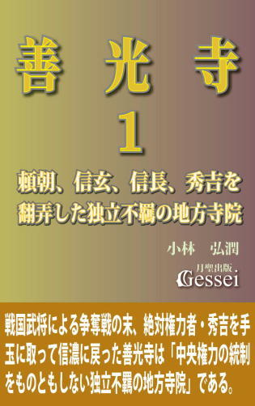 2015年の４月から５月にかけて「数え年で７年に一度の御開帳」が実施された善光寺では全国から多くの参拝者が訪れ、たった２ヶ月で約700万人の参拝者が長野の地を訪れたようです。
善光寺という寺院は現代において「全国有数の集客力のある観光スポット」であるだけでなく、昔の時代から「牛に引かれて善光寺参り」「一生に一度は善光寺参り」等の宣伝文句が有名になるほどの「全国から数多くの参拝者を集める寺院」と言えますが、それでいて「中央（関東だけでなく、古代の中央である近畿という意味でも）から遠く離れた長野（信濃）の地にある一地方寺院」という地味な印象もあるため、善光寺については「よく知らない」「なぜそんなに人気があるのかピンと来ない」という印象を持たれている方も多いと思います。
かく言う私も善光寺に対してそうした思いを持ってきたところがあり、善光寺がある長野市で生まれ育った人間（善光寺には車で20分で行ける距離に在住）でありながら、「善光寺についてはよくわからないし、ピンと来ない」という印象を持ち続けてきたものです。
そうした（ある意味罰当たりな）人間でありながら、御開帳が終わる寸前の５月下旬になって「これは善光寺について本格的に調べないといけない」という気持ちになったので調べてみたのですが、とにかく「40年ほど善光寺の近くで生活していながら、初めて知ることばかり」という感じで驚かされたものです。
特に驚いたのが「様々な時代の数多くの〝ビッグネーム〟が善光寺を熱心に信仰し、時には争奪戦さえあった」という話で、例えば「源頼朝と北条政子が善光寺如来を熱心に信仰し、善光寺では頼朝の彫像まで造られた」こともまったく知りませんでしたし、「戦国時代には上杉謙信、武田信玄、織田信長、徳川家康、豊臣秀吉というビッグネームの戦国武将が善光寺如来の争奪戦を繰り返し、信濃の地から離れて各地を転々としていた」という話にも「まさか、そんなことがあったとは......」という思いだったものです。
そうした話の中でも私が一番驚いたのが「秀吉が地震で倒壊した方広寺の大仏に代わる本尊として善光寺如来を京都に迎えたものの、夢のお告げがあったことで信濃の地に戻した」という話です。
前後の事情から推測するに、善光寺如来は秀吉が「混乱した仏教界統合の象徴」として京都に迎えたシンボルだったと言えます。しかも秀吉は一度「方広寺大仏の倒壊」という大失敗による屈辱を味わっており、善光寺如来を京都に迎えた際は「大仏倒壊で失われた豊臣家の威信を上げるためにも今度こそ成功させてやる！」という並々ならぬ思いがあったと思います。それなのに秀吉はそのシンボルを「すぐに信濃に戻す」という判断をしたわけですが、当時の秀吉は〝絶対権力者〟だったことで、部下とか近親者が「善光寺如来は信濃に戻した方がいいのではないですか」という進言をしたことでそうなった可能性はまずないと言えますし、秀吉が自発的にそうしようという気持ちになったことも考えられません。
当時の史料には「秀吉が善光寺如来から、信濃に帰るという夢のお告げを受け、秀吉がそれに従った」という話があるようですが、それ以外に考えられないと思います。つまり、信濃に戻ることは善光寺如来の意思で、絶対権力者の秀吉であってもその意向には従わざるを得なかった、ということだと思います（さらに言うと、善光寺如来を送り返した翌日に秀吉は亡くなっている）。
このことは「当時の日本の中では誰一人逆らえなかった絶対権力者の秀吉」を善光寺如来が手玉に取ったことを意味すると思います。個人的に、善光寺如来が戦国武将の元を転々としながら最後に秀吉の手によって信濃に戻ったことに対して「最初から、信玄、信長、家康、秀吉という権力者の所有欲を利用して計画した軽い旅行のつもりだったんじゃないか」という気持ちになったところがあります（本尊が「絶対秘仏」であるだけに「たまには浮き世を見に外に出てみるか」と思っても不思議はないと思う）。
世間に出ている善光寺関連の文献の多くは「善光寺のありがたさ」を論じていると思いますが、それに対してこの本では「善光寺のすごさ」に焦点をしぼった内容になっていると思います。私がこの本を書く際に一番悩んだことは「どうすれば自分が体験した驚きを読者の方にわかってもらえるだろう......」ということにありまして、おそらく、読まれた方の大半は「善光寺とはこんなすごい寺院だったのか」と驚かれると思います。参考になれば幸いです。
善光寺２ 絶対権力者さえ思い通りに操れる善光寺の特殊能力
 『善光寺１』では「上杉謙信と武田信玄による川中島の戦いの本質は善光寺如来争奪戦である」「豊臣秀吉が死の前日に善光寺如来を信濃に送り返したことを考えると、善光寺如来は絶対権力者の秀吉を手玉に取ったと言っても過言ではない」等の「善光寺が日本史に与えた影響力の大きさ」に関する話を紹介しましたが、続編であるこの『善光寺２』では「頼朝、信玄、信長、秀吉、家康という歴史上の多くの権力者を思い通りに操れるほどの善光寺如来の能力とは何なのか？」という問題に切り込んでみたいと思います。
『善光寺１』では「上杉謙信と武田信玄による川中島の戦いの本質は善光寺如来争奪戦である」「豊臣秀吉が死の前日に善光寺如来を信濃に送り返したことを考えると、善光寺如来は絶対権力者の秀吉を手玉に取ったと言っても過言ではない」等の「善光寺が日本史に与えた影響力の大きさ」に関する話を紹介しましたが、続編であるこの『善光寺２』では「頼朝、信玄、信長、秀吉、家康という歴史上の多くの権力者を思い通りに操れるほどの善光寺如来の能力とは何なのか？」という問題に切り込んでみたいと思います。
この「絶対権力者さえ思い通りに操れる善光寺如来の能力の解明」に関しては、善光寺研究者の間でもまともな研究が行われていない雰囲気があり、例えば「神秘的霊力があるから」（内田恒夫氏）というような抽象的な分析で終わってしまっている感じがします。それに対して私は「こうした抽象論ではなくもっと現実的な視点から分析することはできないか」という思いになりまして、検討した結果「善光寺の歴史だけでなく、様々な分野の知識を使えばこうした善光寺如来の能力にかなり肉薄できるのではないか」という思いになったところがあります。
私は「善光寺如来の能力を解明するために必要な知識は二つある」と思っていまして、まず必要なのは「宗教的知識」だと思います。これに関しては『逆説の日本史』で有名な井沢元彦氏が「今の歴史学者は歴史研究において宗教的知識をあまりにも軽視している」とよく嘆いていますが、歴史学者に限らず今の日本人は全体的に宗教に関する知識があまりにもなさすぎると言えるため、「怪しげな新興宗教に簡単に引っかかってしまう」などの宗教に関するトラブルが続発しているのが現状だと思います。
「宗教的知識」と言いますとオカルト的な印象を感じてしまう人もいるかもしれませんが、私の立場は「常識では理解できないオカルト的な現象であっても、タブー視せずに科学的な手法を取り入れて徹底的に分析してみる」というもので、それはちょうど深層心理学において「オカルト的な現象に真っ正面から向き合って自らの学問体系に入れようとした」ユングの立場に近いと言えると思います（それに対してフロイトは、オカルトをすべて拒絶して排斥したと言える）。
そしてもう一つ、私が「善光寺如来の能力を解明するためにどうしても必要」と感じた知識に「日本の漫画の知識」があります。というのも、私は善光寺如来の力を考える中で「どうやら善光寺如来は何らかの〝特殊能力〟を持っている雰囲気がある」と感じたところがあり、そうした能力を分析し解明するには「そうした〝特殊能力〟を様々に描いた日本の漫画を比較検討するのが手っ取り早い」という思いになったからです。
この本で中心的に分析しているのが「思い通りに夢を見させる力」ですが、こうした「夢を自在に操る能力」としては例えば『ジョジョの奇妙な冒険』第三部に出てくる「デス13」というスタンドの能力、『カードキャプターさくら』に出てくる「ドリーム」というカードの力など、日本の漫画やアニメで様々に描かれているところがあり、日本の漫画の知識が大変参考になることがわかると思います（まあ、善光寺を研究する人の中で「日本の漫画の発想を取り入れる」なんてことを考えた人など一人もいないと思うので、個人的には「史上初であり前代未聞の試みだろうな」と思っているが......）。
「漫画」と聞きますとそれだけで「子供っぽくてレベルが低い」という印象を抱く人も多いと思いますが、私としては「そうした日本の漫画をバカにしている人は、この本の内容はさっぱり理解できないだろうな」と思っています。
ただ、同時にこの本は「漫画に親しんでいて漫画の知識を数多く持っている人」であっても理解できないような「ヤバイ内容」にまで踏み込んでいるところがあり、「読む前にそうした〝ディープな世界〟に入る心の準備をしてもらった方がいいかもしれないな」と思っています。本文でも触れましたが、この本を読んだ途端に「偶然とは思えない非常識な現象」が続出する可能性もありますので、事前に覚悟を決めていただければと思っています（ただ、それは「不幸や試練の連続」という意味とは限らず、「幸運の連続」になる可能性もあると思うが）。
この本の分析でどこまで「善光寺の特殊能力」に肉薄できたかどうかはわかりませんが、「日本の神々における善光寺如来の位置づけ」だけでなく、「日本という国を動かしているメカニズム」に深く切り込んだ内容になっていることは間違いないと思います。参考になれば幸いです。
善光寺３ 「善光寺を参詣した者は誰でも極楽往生できる」は本当か？
 善光寺は平安時代後期から中央にもその存在が知られるようになり、源信、重源、親鸞、一遍など全国各地の高僧が「京都から遠く離れた辺境の一地方寺院」でしかない善光寺を参詣するようになったと言えますが、個人的にそうした参詣客の記録として印象に残った話に「江戸時代に善光寺に参詣した中村吉蔵夫婦の話」があります。
善光寺は平安時代後期から中央にもその存在が知られるようになり、源信、重源、親鸞、一遍など全国各地の高僧が「京都から遠く離れた辺境の一地方寺院」でしかない善光寺を参詣するようになったと言えますが、個人的にそうした参詣客の記録として印象に残った話に「江戸時代に善光寺に参詣した中村吉蔵夫婦の話」があります。
それは「善光寺への参詣の道中で死んだはずの妻が善光寺如来の前で姿を現した」という話で、肥前国長崎から善光寺に参詣しようとした中村吉蔵の妻が道中で病気になり、やがて２歳の息子を残して死んでしまったため、吉蔵は息子を抱えながらよろよろと善光寺に着いたところ、善光寺如来の前で死んだはずの妻が姿を現して息子をあやし、如来を拝んだ後で息子を夫に返し、そのまま消えてしまったとのことです。
この話は「善光寺如来にまつわる霊験談」として有名になり、境内でそのいわれを木版刷りの土産物として売っていたということですが、私がこの話に対して一番考えさせられたのは「長崎にいた彼らが大変な遠距離を歩いて善光寺を参詣した」ことです（しかも源頼朝のような権力者とか、親鸞や一遍のような高僧でもない一般庶民が）。
交通網が整備された現代であっても「西日本に住んでいる方々が善光寺がある信州（長野市）に行く」のは大変で、例えば大阪に居住していた司馬遼太郎は佐久市で療養している知人を見舞おうと思い立った際に「信州へは大阪からどう行けばよいのかについても、知るところがなかった」とか「大阪からはるかに信州を望むとなると、橋もなにも架かっていないような印象を受けるのである」という言い方をしていたものです。
こうした話から、今以上に交通網が整備されていなかった江戸時代の人々が「大阪からさらに遠く離れた長崎から善光寺を参詣する」のがいかに大変なことだったかがわかると思いますが（飛行機も電車も車もない当時の人々が旅行をするには徒歩しか手段がなく、あるいは「現代人がネパールやチベットやインドの奥地にある由緒ある寺院に参詣する」よりも大変だった可能性もある）、逆に言いますと「それでも彼らが自発的に善光寺を参詣する気持ちになったということは、善光寺にはそれだけの労力を覚悟する価値があったことを示している」と言えると思います。
では、なぜ彼らがそれだけの労力を覚悟して善光寺に参詣する気持ちになったのかと言いますと、それは彼らが「善光寺に参詣すれば極楽往生が約束される」と考えていたからだと思います。昔の時代から現代に至るまで、宗教者ではない一般の人々が仏教的な寺院をはじめとする宗教施設に参詣する主な理由は「商売繁盛や家内安全などの現世利益を期待する心理」からと言えますが、善光寺の場合は少し違って「自分が死んだ後に地獄という苦しみの世界に行くことなく、極楽浄土（キリスト教的に言うと天国）という安心と喜びの世界に行けることを期待する心理」にあると言うことができます。
善光寺をはじめとする宗教施設が末永く存続していくためには「参詣客が訪れることによって生じる収入や経済効果」が不可欠と言えるため、「善光寺が現代に至るまで存続してきたのは、多くの人の極楽往生を期待する心理にあった」という言い方ができると思います。そして、この「極楽往生を期待する心理」というのは「死への恐怖」から生じているとも言えるため、ある意味善光寺という存在は「人間が抱く死への恐怖によるエネルギーによって成り立ってきた」（人間が死に対して恐怖を感じなかったら、善光寺は存続できなかった）と言っても過言ではないと思います。
物心ついた人間なら誰でも「人はいつか必ず死ぬ」という厳粛なる事実に直面することになるため、どんな人でも「死ぬのは嫌だ」という思いに苛まれたり、「人は死んだらどうなるのだろう」とか「人はなぜ死を恐れるのだろう」という疑問を抱いたことがあると思います。
そこでこの『善光寺３』という本では、人間にとって最大の恐怖心の一つである「死」というテーマに取り組み、現時点での私ができる範囲での「死への恐怖を克服するための考え方」を提示してみたいと思っています。
私は2004年に月聖出版という出版社を作り、紙の本で16冊、電子書籍で50冊以上の本を刊行してきましたが、この「死」というテーマを本格的に論じる本はこれが初めてとなります。
私自身はそれまでの人生の中で「死という概念」については徹底的に考え続けてきた人間なのですが、今まで刊行してきた本の中ではあえてそれには触れなかったところがあります。一応、「将来の予告」として05年に刊行した紙の本『人間関係のコツ・パート２』（電子書籍『人間関係のコツ３』）の最後に「これだけの基礎ができれば大丈夫という判断ができたところで、この「もう一つの根源的な恐怖心」を克服するための知識を紹介したいと思っています」という言い方を入れたのですが、結局この「もう一つの根源的な恐怖心」である「死」について本格的に論じる段階になるまでに10年かかってしまったことになるので、「やっとここまで来たか。長かったなあ......」としみじみ思います。
前作『善光寺２』では「絶対神が存在する可能性」という話もしてみましたが、私はこの「死」という概念をとことん分析する中で「絶対神（仮にそうしたものが存在すれば、ですが）が死という概念に込めた思惑」が少し見えてきた、という思いになったところがあります。その意味で、この「死」という概念を分析することを通して「宗教の本質に迫る」だけでなく、「人間という存在の本質に肉薄する」ことも可能ではないかと思っています。参考になれば幸いです。
社会の学び方・政治経済編１ 政治の根本とその仕事の概略
 私は政治や経済に関しては専門知識を持っていない素人で、20年ほど前までは「政治の知識などゼロに等しく、新聞の政治面や経済面を読んでもまったく理解できず、一般の人が当然持っているような常識すら持っていなかった」ような人間です。
私は政治や経済に関しては専門知識を持っていない素人で、20年ほど前までは「政治の知識などゼロに等しく、新聞の政治面や経済面を読んでもまったく理解できず、一般の人が当然持っているような常識すら持っていなかった」ような人間です。
そうした素人がなぜ政治や経済の本を書くという「無謀で不埒なこと」を企んだのかと言いますと、世間にある政治や経済の情報や知識に納得できなかったからです。新聞やテレビなどの報道で紹介される情報は断片的なものばかりで「全体のつながり」がまったくわからなかったため、「つながりが把握できるような政治や経済の本がないだろうか」と書店や図書館などで探してみたのですが、「専門的すぎて素人には理解できない本」や「多少はわかるが肝心なことが書かれていない本」ばかりという印象になってきまして、「こうなったら自分で書くしかない」という結論に達したということです。
この『社会の学び方・政治経済編』シリーズ（全５巻予定）の特徴としてあげておきたいのは、「政治というものの全体像が一望できる」「政治や経済に関する全体的なつながりがわかり、一本の筋が通る」という内容になっていることです。そうした内容にするために、最初の説明として「政治の根本理念はどこにあるか」というところから始め、そこであげた本質的な視点を様々な項目に具体化し、展開させていくという書き方をしています。
学校で使われる政治（中学では公民）の教科書の場合、たいていは「民主主義」「人権」「憲法」のどれかから始まりますが、私はこうした項目が「本質的な視点」とは思えなかったので、別の項目を政治の根本理念として設定しています。この本では「民主主義」「人権」「憲法」等の項目は、（私が設定した）根本理念が具体的に展開する一過程として位置づけられていますが、こうしたアプローチは今の世間の常識とは違うので不思議な感じがするかもしれません。こうした政治の描き方をどう判断するかは人それぞれだと思いますが、何らかの参考にはなるのではと思っています。
また、世間によくある「政治の入門書」の場合、「戦後日本の日本国憲法で規定された政治体制の話から始まる」ことが多いですが、この本では「現代の政治体制に至るまでの歴史的経緯」という視点もところどころに入れています。それによって、「昔の時代から現代までの政治体制のつながりや流れ」もかなり感じられると思うので、政治が本来持っているダイナミックな動きが実感できるようになると思います。
この本を読まれた方は、それまで各人が断片的に持っていた様々な知識がつながって一つの流れの中に融合していく感触が得られると思います。それによって、従来持っていた「政治」に対するイメージが変わり、「政治ってこんなに面白いものだったんだ！」という感じが持てるようになると思います。
私は政治に対して「下手な物語や娯楽などよりよっぽど面白くて奥が深い」というイメージを持っています。世間によくある「底が浅くてすぐに飽きる娯楽」に対し、政治というのは「様々な面白さを内包した、奥が深い総合的娯楽」という印象を感じていますが、おそらくこの本を読まれた多くの方が同じような印象を持てるようになると思います。参考になれば幸いです。
社会の学び方・政治経済編２ 政治における「権力の固定化と暴走」という問題
 最近の日本では「今年の流行語大賞」というものが年末に選出されるイベントが続いており、毎年毎年「その年に流行した言葉」が生まれては消えていっていると言えますが、これを「１年」ではなく「20世紀全体」にまで広げ、さらに「日本ではなく世界中で流行した言葉」となりますと、私は「民主主義」という言葉がグランプリを獲得するのではないかと思っています。
最近の日本では「今年の流行語大賞」というものが年末に選出されるイベントが続いており、毎年毎年「その年に流行した言葉」が生まれては消えていっていると言えますが、これを「１年」ではなく「20世紀全体」にまで広げ、さらに「日本ではなく世界中で流行した言葉」となりますと、私は「民主主義」という言葉がグランプリを獲得するのではないかと思っています。
日本だけでなく現代の世界における「民主主義」という概念は、知名度が高いだけでなく絶対的な権威として社会の中で揺るぎのない地位を得ていると言えますが、このことは「今の日本政府が民主主義の尊重や擁護を教育方針として掲げている」ことからも裏づけられると思います。
国の教育方針である学習指導要領に「尊重し擁護」という言葉が入っているということは「学校で民主主義を否定したり批判的に教えることは許さない」という意味になるため、現代の社会で「民主主義」という概念が絶対的な権威として君臨していることがよくわかると思います。
ただ、それでいてこの「民主主義」という概念は「世界中の人々が昔の時代からずっと尊重し擁護してきた普遍的な価値がある概念」というわけでもなく、そのことは「民主主義という概念が流行し始めたのは20世紀初頭からで、それ以前の世界の人々は民主主義に大した価値を見出していなかった」ことから判断できると思います。
これはあまり知られていないと思いますが、20世紀までの世界における民主主義には「危険思想」のイメージすらあったそうで、19世紀のヨーロッパにおける民主主義（共和制のニュアンスが強い民主主義）には、フランス革命後期におけるロベスピエールの独裁政治や恐怖政治のイメージがあり、「この言葉を聞くとテロによる支配を意味して恐怖心を呼び起こす」とすら思われていたようです。
こうしたことから、私は「日本などの国家が『普遍的な価値でも何でもない民主主義』を絶対的な価値として国民に押しつけようとする傾向」はあまり好きではないのですが、それでいて「確かに現代の状況では民主主義以外の政治制度を選ぶのは非現実的と言えるから、少なくとも民主主義という政治制度を理解する必要は大いにある」という思いを持っています。
学習指導要領にも「民主主義に対する理解を深める」という文言があり、私はこれには賛成なのですが、それでいてこうした指導要領を元に作られた教科書の内容を見てみても「本質的な理解ができるような話になっているとは言えないな」という不満を感じてしまいます。
というのも、教科書に書かれた「民主主義」の説明の中に「権力とのつながりを論じたもの」はほとんどない感じがするからです。私は「民主主義（少なくとも近代民主主義）とは、権力の固定化と暴走を防ぐために生まれた制度」だと思っており、権力に関する知識がなければ民主主義を理解することは絶対にできないと思います。
流行に流されただけの薄っぺらな知識ではなく、本質からさかのぼった知識を学べば「民主主義を尊重し擁護する思い」も自然に芽生えてくるものだと思います。参考になれば幸いです。
社会の学び方・政治経済編３ 経済の基礎知識と社会における官民の役割分担
 2009年９月から３年３ヶ月続いた民主党政権が12年12月の総選挙の大敗によって下野し、政権を奪還した安倍総裁率いる自民党は13年７月の参院選で「衆参ねじれ」を解消する議席数を確保したことで盤石の政権基盤を確保することに成功したと言えます。その後の政界は「（自民党だけ強くて対抗する野党がすべて弱い）一強多弱」という勢力図になったと言えますが、これでは与党が調子に乗って暴走しても力のない野党には何もできない事態になってしまうため、世論調査でも「８割近い人が一強多弱は良いと思わないと答えた」という結果も出ているようです。
2009年９月から３年３ヶ月続いた民主党政権が12年12月の総選挙の大敗によって下野し、政権を奪還した安倍総裁率いる自民党は13年７月の参院選で「衆参ねじれ」を解消する議席数を確保したことで盤石の政権基盤を確保することに成功したと言えます。その後の政界は「（自民党だけ強くて対抗する野党がすべて弱い）一強多弱」という勢力図になったと言えますが、これでは与党が調子に乗って暴走しても力のない野党には何もできない事態になってしまうため、世論調査でも「８割近い人が一強多弱は良いと思わないと答えた」という結果も出ているようです。
安倍自民党を支持したり応援する人は「保守」の考え方を持っている人が多いと言えますが、保守の人からは「09年の政権交代で民主党が政権を取ったために日本がガタガタになった」とか「日米の信頼関係が破壊された」とか「暗黒時代だった」というような声も聞かれます（中には「民主党政権とはチンパンジーがポルシェを運転していたようなもの」と評した識者もいたらしい）。
ただ、個人的には民主党政権をそれなりに評価していたところがあったため、「一強多弱」による弊害が感じられるようになってきた頃「もし民主党が『一強』自民に対抗するための野党再編に向けて本気で動き出した場合、積極的に支持しようかな」という気持ちになったことがあります。
ところが、14年９月に民主党新幹事長になった枝野幸男氏の発言を聞いたことでそうした気持ちが一挙に吹き飛び、「もし民主党が自民党の有力な対抗馬になり、また政権交代などしたら大変なことになる。自民一強状態はつまらないし、彼らが傲り高ぶった様子を見るのは不愉快ではあるが、民主党が再び政権に就くよりはましだから、もうしばらく自民党政権が続いた方がいい」という気持ちにさせられたところがあります。
その枝野氏の発言とは「金利を上げると経済成長する」とか「金融政策ではデフレから脱却できない」というものです。これは経済の専門家である高橋洋一氏が紹介していた話なのですが、「あるテレビ番組で枝野氏と議論した際、信じられないような発言があった。枝野氏は『金利を上げると経済成長する』と言ったのだ。それはあり得ないから訂正したほうがいいと言ったが、受け付けなかった。おそらく枝野氏の頭には、企業が悪、労働者は善という固定観念があるのだろう」「枝野氏は、その後もまったく経済的な理解が進まないまま、『金融政策ではデフレから脱却できない』という金融政策無効論もテレビで主張していた」というもので（高橋洋一「日本の解き方」14年９月24日付）、私はこうした枝野氏の発言と「訂正した方がいいという話を受け付けなかった」ことに対して「これは致命的だ」という思いになったところがあります。
ちなみに、安倍政権が掲げたアベノミクスの中でも「大胆な金融政策（緩和）」が様々な成果を出したことは明らかで、こうした明白な成果が出た後で「金融政策ではデフレから脱却できない」などという発言をしてしまったら、「枝野氏という人は自分の考えにとことん固執するタイプで、自分の考えとは違う現実は見たくないんだろうな」と思われても仕方がないと思います。実際、枝野氏の発言に対しては「枝野氏の素晴らし過ぎる経済観念だ。お金はまわらないと経済は動かないという基本を見事に否定している」とか「枝野幹事長はレーニンが謂う左翼小児病そのもの」とか「こんな連中が政権にあれば日本経済はそりゃ壊滅状態になるよ」とか「与党対野党とか、イデオロギーの違いとか、それ以前の話なんだよねぇ」とか「これだから誰も民主には期待していない」というような酷評が続出していましたが、それまで民主党に多少期待していた私であっても「その通りとしか言いようがない......」という気持ちにさせられたものです（コメントの中に「民主党が最悪で自民党が悪くらい」というのがあったが、私としても「実際に自民も悪だと思うけど、民主よりはましだから自民党政権が続くことは仕方がない」という思いになったもの）。
私がこの話から言いたいことは「（政権に関与する可能性がある）政治家や政党にとって、経済政策に対する考え方はそれだけ重要だ」ということと、「他の分野における政策でどんなに立派な考え方を持っている政治家や政党であっても、経済政策だけおかしかったら政権を担当させてはならない」ということです。
そこでこの『社会の学び方・政治経済編３』では、私なりに考える「経済に関する基礎知識」や「政府が行う経済政策」等に関する話を紹介してみたいと思います。「金融緩和がデフレ脱却に有効か」という問題に対しても、根本からさかのぼった知識があれば答えを出すのは難しくないと思いますので、参考にしていただければと思っています。
社会の学び方・政治経済編４ 社会秩序を保つ官の仕事とそれを支える政治の役割
 社会の中で法律違反や犯罪行為をした人を見つけ出して的確な判定と公平な処分を下す役割を担っているのが「警察、検察、裁判所」という治安維持機関ですが、これらの機関に対しては時おり「一方的な非難の声」が出ることがあります。
社会の中で法律違反や犯罪行為をした人を見つけ出して的確な判定と公平な処分を下す役割を担っているのが「警察、検察、裁判所」という治安維持機関ですが、これらの機関に対しては時おり「一方的な非難の声」が出ることがあります。
例えば、凶悪殺人事件のような世間を揺るがす大事件が発生したものの、犯人が狡猾で証拠を残さなかったために捜査が難航して犯人逮捕が進まない状況が進むと「犯人を捕まえない警察は反省しろ！」というような非難の声が出ることがありますが、私はこういう声を聞く度に「これを言う人は、証拠がない状況で犯人（容疑者）を逮捕することがどれだけ難しいことか知っているのかな」という思いになります。
この「警察、検察、裁判所が行っている的確な判定と公平な処分の難しさ」という視点は世間でほとんど言われないのでピンと来ない人が多いと思いますが、このことは「彼らの仕事とスポーツの試合で審判が行っている仕事のどちらが難しいか」を考えれば理解できると思います。
スポーツの試合では「ルール違反をした人への的確な判定と公平な処分」は審判が行いますが、スポーツの試合の場合は「判定をしたり処分を下す立場にある審判が、選手の動きを常に見ることができる状況にある」のに対し、警察、検察、裁判所の人は「法律違反をした人の行動が見られる状況にはない」と言えます。
ルール違反に対する判定や処分というものは「その行為を目撃した人がいるかいないか」によって大きく影響されると言えますが、計画的な殺人事件の場合は目撃者が存在せず被害者も亡くなっているのが普通なので「その行為を加害者しか見ていない」という状況になります。こうした状況において「証拠隠滅がなされて物的証拠がなくなり、加害者のアリバイ工作も行われる」ことにでもなったら、犯人を断定したり公平な処分を下すことは困難を極めることになってしまうと言えます。
犯人を断定するのが難しい状況であるのにもかかわらず、世間から「犯人を捕まえない警察は反省しろ！」という声が出るようになると、警察や検察は証拠不十分でも容疑者を逮捕せざるを得ない状況になってしまいます。その場合は「何の罪もないのに誤認逮捕され、重罰が科される冤罪」という、された方にとっては人生そのものが破壊されてしまうほどの大変な事態が起こる可能性もありますが、当然警察、検察は「冤罪をかけられた人が大変な苦痛を味わう」ことを知っていると言えます。
その意味で有罪無罪の判決を出す裁判所も含めて、彼らは「一刻も早く犯人を逮捕して社会に秩序を保たなければならない」という責任感と、「証拠不十分で逮捕・起訴し、さらに有罪判決を出した人がもし冤罪だったら......」という恐れによって生じるジレンマに常に苦しんでいる、という言い方ができます。
ただ、ここで私が言いたいのは「警察、検察、裁判所に対する批判をするな」ということではないので誤解なきよう願います。今の日本の警察、検察、裁判所におかしいところがあるのも確かで、例えば2010年１月に陸山会の土地疑惑で小沢一郎氏の元秘書３人を逮捕・起訴した検察と、彼らに有罪判決を下した裁判所の判断は明らかに「不当」だと思います（これに関しては電子書籍『小沢一郎の政治とカネの疑惑と裁判を解明する』で詳しい説明をしているが、偏見を排除して冷静にこの本を読めば誰でも「彼らの逮捕・起訴と有罪判決はおかしい」という意識になれると思う）。
その意味で、私自身も警察、検察、裁判所に対して批判をすることがありますが、そうした批判は彼らの仕事の大変さを理解した上で行う必要があると思います（少なくとも、そうした意識を持たない一方的な批判はフェアではないし、説得力も出ないと思う）。警察、検察、裁判所は大変な権力を持っているので「暴走したら大変なことになる」と言えますが、それでいて彼らも心の奥では「自分たちの仕事の大変さをわかって欲しい」という思いを持っていると思うので、私としては「時おり警察、検察、裁判所が暴走したり常軌を逸した判断をするのは、自分たちの仕事の大変さが理解されないことに対する反発心が背後にあるのかもしれないな」という思いになることがあります。
この『社会の学び方・政治経済編４』では、「警察、検察、裁判所の仕事も含めた社会秩序を保つためのシステム」から「そうした仕事を支える政府の役割」まで様々な知識を紹介していますが、マスコミ報道では見えてこない「政治の地味な部分」に対する理解が深まればと思っています。参考になれば幸いです。
イエスと弟子たち第一部１ イエス登場と弟子たちの集結
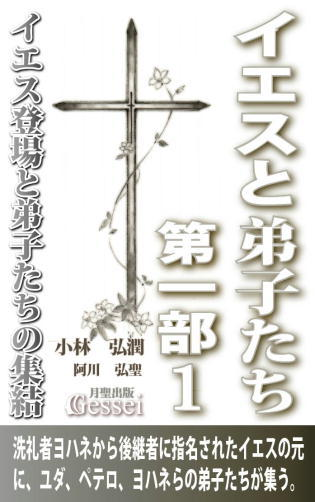 『イエスと弟子たち』は2006年12月に刊行した小説で（聖書の研究書とか、学術的な論考ではありません）、キリスト教の始祖イエス・キリストの生涯のドラマ性と「裏切り」を行うユダの心中を詳細に描いた物語です。聖書研究の成果を踏まえて聖書に描かれたイエスの生涯の枠内はしっかり守りながら、物語としての面白さを十分に取り入れたつもりなので、普通の物語として読んでも面白いという印象を持ってもらえると思います。
刊行部数が少なくまだ世間的には認知されていませんが、この本を最後まで読まれた方からはかなりの高評価をいただいており、「とにかく面白い」「最初から止まらなかった」「２日で読み終えた」「今４回目に入っている」「非常に惚れ込んだ」「名著と言っても過言ではない」「続編が読みたい」などの声が届いたり、「面白くてどこにでも持っていって暇さえあれば読んでいるので、本が傷んでしまった」という理由で２冊目の注文（2940円の本）をしてくれた方すらいたものです。
この本の電子書籍化にあたり、紙の本の初版には入っていない「注と解説」（執筆する際に聖書や資料のどこを引用したのかを明記した注と、小説で描いたエピソードが実際にあった可能性の検討などの解説）を収録しており、「物語としての面白さ」だけでなく「歴史研究の面白さ」も存分に味わってもらえると思います。
洗礼者ヨハネの後継者として独自の活動を開始したイエスの周囲にユダ、ペテロ、ヨハネらの弟子たちが集うが、「救世主宣言」によってエルサレム衆議会に敵視され、パリサイ派や祭司から執拗な妨害を受けるようになる。愛の教えが民衆に受け入れられず失意のイエスの前に現れるマグダラのマリア、保身からイエスを逮捕しようとする大祭司カヤパ、必死の思いで論戦を挑む祭司ボアズ、そして敵たちを背後から操る黒幕の存在......。
「ラザロの復活」によって民衆は再びイエスを熱狂的に支持するが、衆議会はユダを利用してイエスの逮捕に成功し、ピラトの公開裁判で民衆を扇動して十字架刑の判決を出させる。「裏切り」を行ったユダの心中には「過去の体験で刻まれた強い決意」があった。
二千年来の「謎」である、「ユダはなぜイエスを裏切ったのか」「民衆の支持を集めたイエスがなぜ十字架にかけられたのか」という問いに対する一つの答えがここにある。
『イエスと弟子たち第一部』シリーズ構成（全３巻）
第１巻 「序章」「第一章 洗礼」「第二章 説法」「第三章 宣言」「第四章 捕縛」 「第五章 論戦」
第２巻 「第六章 失墜」「第七章 涙」「第八章 過去」「第九章 エルサレム」
第３巻 「第十章 裁判」「第十一章 十字架」「第十二章 イエスとユダ」
第１巻 今から2000年前の中東のイスラエルの地は、地中海世界の覇者であるローマ帝国とその意を受けた一握りの特権階級によって支配されており、人々は異国人支配という屈辱と貧富の格差の拡大による不満の中で日々の生活を送っていた。そうした民衆の不満をベースに圧倒的支持を得ていた洗礼者ヨハネの前にイエスが現れ、彼の実力を見抜いたヨハネはイエスに洗礼を与え、自らの後継者に指名する。
やがてヨハネがエルサレム衆議会の陰謀によって捕縛されると、イエスもまた「救世主宣言」によって衆議会から敵視され、パリサイ派や祭司から執拗な妨害を受けるようになる。イエスは実力者ボアズとの論戦に勝つことで盤石な支持基盤を得たように見えたが......
イエスと弟子たち第一部２ 失意の逃避行からエルサレム凱旋へ
 イエスの教団は徐々に勢力を拡大し、盤石の支持基盤を得たように見えたが、やがて民衆の要求との乖離が顕在化して失意の時を迎える。一時は決死の逃避行を余儀なくされるものの、「ラザロの復活」によって再び民衆はイエスを熱狂的に支持し、過越の祭りを迎えたエルサレムの民衆は彼を歓呼の声で迎える。
イエスの教団は徐々に勢力を拡大し、盤石の支持基盤を得たように見えたが、やがて民衆の要求との乖離が顕在化して失意の時を迎える。一時は決死の逃避行を余儀なくされるものの、「ラザロの復活」によって再び民衆はイエスを熱狂的に支持し、過越の祭りを迎えたエルサレムの民衆は彼を歓呼の声で迎える。
イエスは衆議会の挑戦をことごとくはねのけ、ボアズとの最後の論戦も制したことで民衆の期待は最高潮に達するが、最大の敵・アンナスがその状況を利用してイエスを失脚させる陰謀を巡らす。ユダは幼少時に胸に秘めた強烈な思いからあえてアンナスの誘いに乗り、イエスに一つの決意を促す。
ボアズの真剣な表情を受け止めたユダは、しばらく考えた後で答えた。
「......私の父も祭司を捨てた人です。ですから、あなたの言葉の重みはわかるつもりです」
「祭司を、捨てた？ お前の父というのはひょっとして、シモンのことか」
ユダは今の言葉に驚きながらも、小さく笑顔を浮かべた。
「父をご存じでしたか......。これも何かの縁なのかもしれませんね。仮に私がアンナスの罠にはまったのだとしても、あの人はそれを打ち破って奇跡を起こしてくれます。あの人はそれだけの力を持っているんです。
あの人が逮捕されたり処刑されそうな危機に陥ったとしても、奇跡の力を使えば死ぬことはないはずです。私が裏切り者となっても、それによってあの人が救世主としての力を発揮してくれることの方が、私には大事なのです」
「......そうか、お前は最初からそのつもりで。お前はあの人を心底裏切ろうとしているのではなく、あの人が本当の救世主かどうかを試そうと......」
「あの人は救世主です。それは間違いありません。ただ、あの人はその力を発揮してイスラエルを救おうと本気で思ってはくれない。それでは困るのです」
ボアズはユダの決意の固さを感じながらも、さらに問いかけた。
「聖書には、主なる神を試してはならないという教えがある。お前が本当にあの人を救世主だと思っているのなら、お前は神を試そうとしているのだぞ！」
ユダは躊躇なく答えた。
「私は父に、価値あるものを守るためには命を賭けねばならない、と教えられました。私にとって、聖書の教えよりも父の教えの方が優先されるのです」
ボアズはユダの覚悟の大きさに戦慄し、ただ黙ってユダを見ていた。 ～「第九章 エルサレム」より
イエスと弟子たち第一部３ ユダの裏切りと敵の陰謀、そして十字架へ
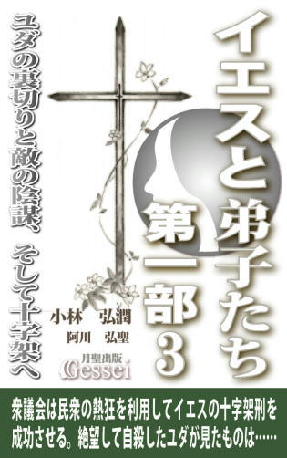 衆議会はユダを利用してイエスを逮捕し、衆議会裁判の場で言質を引き出してイエスを重罪にしようと画策する。裁判でのイエスの態度に激怒したアンナスは総督ピラトの公開裁判で民衆を扇動する陰謀を巡らし、民衆の圧力に抗しきれなくなったピラトはついに十字架刑の判決を出す。
イエスは重犯罪人としてさらし者にされ、激痛の末に十字架上で息絶える。奇跡が起きなかったことに絶望したユダは自ら命を絶つと、地獄と呼ばれる世界に赴いて外界との接触を断とうとする。そこでユダが見たものは......
アンナスの表情から笑みが消えた。イエスはアンナスの方を向いた。
「あなたに言っておきたい。神のお心を小さな人間心で計ろうとしてはならぬ。あなたは神すら自分の思い通りに操れると思っているのかもしれないが、そのようなものは神から見たら小手先の浅知恵にしか過ぎぬ。むしろ神こそが、あなたのそうした心を背後から操っているのだ。あなたは生きているうちに神の大いなる配慮に気づき、それまでの罪を悔い改めねばならない。そうでなければ大変な罪をその身に負うことになる......」
「き、貴様、それが大祭司様に対する口の訊き方か！」
一人の祭司が叫んだが、アンナスを大祭司と呼称して気づかないほど動転しているのが明らかだった。誰も同調する者はいなかった。誰もが目の前にいる手を縄で縛られた男に対し、今まで味わったことのない驚愕と戦慄を覚えていた。
会場が静まり返った中、イエスがさらに言った。
「これはあなた方が神によって与えられた最後のチャンスかもしれぬ。私はあなた方の手にかからずとも、すぐに地上を去らねばならない。もし、あなた方がここでわずかでも私を信じ、私の処刑を思い留まれば、自分たちは救世主を殺したのかもしれぬという不安に苛まれることはないだろう。私を殺すことによる罪の大きさは、あなた方自身が償うだけで済むようなものではない。あなた方の子孫にまでその罰は及んでしまうだろう。そうなってから後悔しても、もう遅いのだ......」
静寂と緊張が会場を覆った。誰もが、自分以外の誰かが次の言葉を発するのを待っていた。
「......死刑じゃ」
アンナスが余裕のない、低い声で言った。 ～「第十章 裁判」より
イエスと弟子たち第二部１ イエス復活と新たな活動の始まり
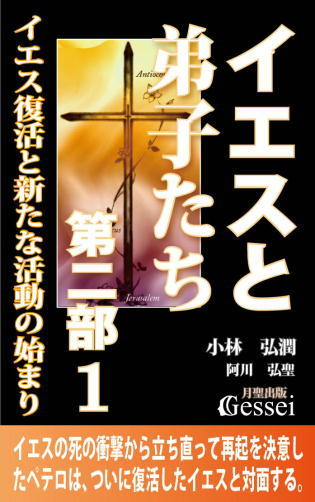 現代の人口の３分の１に相当する20億人以上の信者を擁する世界一の巨大組織・キリスト教は「絶対的リーダーだったイエスが十字架で処刑される」という衝撃的な出来事をきっかけに始まった。しかもそれを始めたイエスの弟子たちは、当時の社会において何の力も持っていない人々だった......。
なぜ何の力もなかったイエスの弟子たちが、過酷な迫害に耐え抜いて教えを広めることができたのか？
一時は消滅寸前だったイエスの教団が、なぜ次々と外の世界に拡張していくようになったのか？
現代のキリスト教が「世界一の宗教」であることは世界中の誰もが認める事実だと思いますが、不思議なことに一般の人だけでなく教会関係者の方でさえ「イエスの死後に弟子たちが教えを広め、キリスト教が世界宗教になる基盤を作ったこと」がごく当たり前の話として認識されている感じがします。
ただ、聖書に書かれた記述を元に当時の状況を冷静に考えた場合、絶対的リーダーだったイエスに頼り切っていた弟子たちにとってイエスの処刑による衝撃と失望は計り知れないものがあったと思うので、そのショックで彼らは散り散りになり、教団は消滅して終わるのが普通の流れだと思います。
ところが、弟子たちはその後結束してイエスの教えを各地に広める行動を起こし、やがて教団はローマ帝国の隅々にまで広がって国教となり、徐々に世界各地に浸透していって最終的に「全世界に数十億の信者を持つ世界一の宗教」になってしまいます。このことは私たちが認識している世界史の中では「史上最大の大逆転劇」ではないかと思います。
なぜイエスと比べて何の力もなかった弟子たちが結束し、過酷な迫害に耐え抜いて教えを広めることができたのか。そして、なぜ一時は消滅寸前だったイエスの教団が勢力を蓄えて外の世界に拡張していくようになったのか。この『イエスと弟子たち第二部』（全10巻予定）ではそうした過程を描いていきたいと思っています。
ローマ帝国の支配下にあったイスラエルの地で独自の教えを説き始めたイエスは、伝統あるユダヤ教を冒涜し民衆を扇動する危険人物としてユダヤを統治するエルサレム衆議会に敵視され、様々な妨害を受ける。そして「奇跡を起こしてイスラエルを解放する王」であることをイエスに期待した民衆たちも、期待に応えないイエスの姿を見て失望する。
過越の祭りにおいて民衆は再びイエスを熱狂的に支持するが、策謀によってヘロデ・アンティパスを操り、洗礼者ヨハネを葬ったアンナスがユダを利用してイエスを逮捕する。そしてピラトの公開裁判で民衆を扇動して十字架刑の判決を出させ、最大の敵を処刑することに成功する。
ペテロは追いつめられた恐怖のあまりイエスを知らないと言ってしまったことを後悔し、自信喪失状態に陥ってしまう。そして、イエスの弟子たちは誰もが精神的支柱を失って虚脱状態となり、教団はいつ分裂してもおかしくない瀬戸際に立たされていた。
『イエスと弟子たち・第二部』シリーズ構成（全10巻予定）
第１巻「第一章 復活」「第二章 始動」
第２巻「第三章 殉教」「第四章 回心」
第３巻「第五章 離脱」「第六章 懇願」
第４巻「第七章 会議」
第５巻「第八章 弁明」
第６巻「第九章 逆十字架」
第７巻「第十章 開戦」前半
第８巻「第十章 開戦」後半
第９巻「第十一章 炎上」
第10巻「第十二章 イエスとペテロ」
第１巻 絶対的リーダーだったイエスを失って分裂寸前だった弟子たちは、生前の師の思いに触れて再起への道を歩もうとする。立ち直ったペテロは、一つずつ課題を克服する中でついに復活したイエスと対面する。ペテロを指導者として誕生したイエスの教団は、やがて磐石な組織体制を築いてエルサレムに定着していく。
ヨセフは周囲を見渡し、皆が聞く姿勢ができているのを確認してうなずいた。
「では話そう。実は私もヨハネ君と同意見で、あの方がご自分の意思をねじ伏せて神の言いなりの人生を送ったとは思えないのだ。いや、こうも思うのだ。むしろ神は、あの方の命を救おうとしておられたのではないか。しかしあの方はそうした神の思いを制止し、罪人として処刑されるという屈辱と苦痛を自らが望まれたのではないだろうか、と」
沈黙の後、ペテロが皆の思いを代弁するようにつぶやいた。
「な、なぜ、そう思われるのですか？」
「......これはあくまでも私の推測にしか過ぎないのだが、あの方はこのイザヤ書の章句を既に読んでいたのではないだろうか。そして、自分の周囲に死の気配が漂い始めた時、ここで語られた人物とご自分の姿を重ね合わせたのではないだろうか」
これを聞いて皆が粛然となった。ヨセフは言葉を続けた。
「あの方は、もし本当に自分がこの人物のような罪人扱いを受けて殺されるだけの人生を歩むとしたら、どうなるかと考えたのではないか。おそらく、そのような死など到底受け入れられないものだったに違いない。
あの方はメシアとしてイスラエルの地をローマから解放してくれる、と民衆から期待されていた。期待が大きいと落胆や失望も大きいから、みじめに殺されるという結果を見て多くの人が憤り、弟子たちも散り散りになって自分のことなど跡形もなく忘れ去られるだけだ、と思うだろう。みじめに殺されて何も残らないという人生など、あの方にとって耐えられない思いだったに違いない......」
それを聞いたペテロは思わず顔を伏せ、胸の内から湧き起こって来るような罪悪感を味わっていた。そしてそれはペテロだけでなく、ほとんどの弟子に共通する感情だった。
巻物を置くと、ヨセフが言った。
「自らを償いの捧げ物にするということは多くの人の罪を背負うということであり、それは自らが死ぬことで多くの人の罪が軽減されるという意味になる。それに気づいてあの方は決意を固めたのではないだろうか。
弟子たちが散り散りになっても、すべての人が自分のことを忘れ去って何も残らなかったとしても、自分が代わりに罰を受けることで多くの人の罪が軽減されるのならそれでいい、と。
いや、むしろ進んで屈辱と苦痛の死を受け入れよう、と......」
沈黙が流れた。そして、あちこちで嗚咽をこらえる様子が見られた。 ～「第一章 復活」より
イエスと弟子たち第二部２ ステファノの殉教、サウロの回心
 イエスの教団に襲いかかる衆議会からの弾圧と迫害。アンナスの罠にはまってステファノが殉教を遂げるが、その死は教団がイスラエルの外に拡張する呼び水となった。そして教団を迫害していたサウロは、内心で律法遵守では心が満たされない葛藤に苦しんでいた。彼はダマスコに向かう途上、荘厳な声で語りかけるイエスの姿を見る。
イエスの教団に襲いかかる衆議会からの弾圧と迫害。アンナスの罠にはまってステファノが殉教を遂げるが、その死は教団がイスラエルの外に拡張する呼び水となった。そして教団を迫害していたサウロは、内心で律法遵守では心が満たされない葛藤に苦しんでいた。彼はダマスコに向かう途上、荘厳な声で語りかけるイエスの姿を見る。
ステファノの反論を聞いたサウロはさらに問いかけた。
「そんな推測でしかない話では我々を納得させることはできない。我々を納得させたいと思うなら、あなたはイエスが本物の救世主であることを証明することだ。それができれば私もあなたの言うことを信じられるし、この尋問を聞いている衆議会議員の方々も納得できると思うが」
「それは証明できるような問題ではなく、一人一人の判断に委ねるしかないと思う。あなたがイエスを救世主と思えなくても、私にはあの方が救世主だと信じられる。そうした一人一人の判断の問題として考えればいいのではないだろうか......」
さらに尋問は進んだが、ステファノが明確に神殿軽視や律法冒涜をしていたという言質を取ることはできなかった。
尋問が一通り終わって裁決に移りそうな雰囲気になり、ヨセフが「どうやらそれほど重い刑になることはなさそうだ」と安堵したその時だった。出席していたアンナスがステファノに向かって語りかけた。
「やれやれ......。異国に住んでいたディアスポラの者は聖書などまったく読んでいないと見える。聖書には、『木にかけられた者は呪われる』とはっきり書いてあるのにな。神に呪われ、民衆から十字架にかけろとまで言われた負け犬のような男に肩入れして何の意味があるのか、まったく理解に苦しむわ」
これを聞いたステファノの表情が変わった。低い声でアンナスに問いかけた。
「今、何と言った？」 ～「第三章 殉教」より
彼がヘレニストの家に押し入って逃げ遅れた幾人かを逮捕した時、華奢な体つきをしたヘレニストの寡婦がいた。サウロは最初にこの寡婦を尋問することにした。それは、あえて同情したくなる相手を最初に選ぶことで、同じディアスポラの者に対して温情をかけようとする自分を叱咤するためだった。
「イエスは救世主を詐称して律法を冒涜した罪人だ。あなたがイエスは罪人だと言って、今後は心を入れ替えて律法を遵守すると誓えば釈放してもいいが、それを言わなければあなたもステファノと同罪になる。私は律法の権威を失墜させ冒涜する人間に対してはどんな者でも容赦しない」
しかし、寡婦の反応はステファノと同じだった。サウロは思わずムキになって寡婦に詰め寄った。
「既に神から律法という救いの道が与えられているのに、お前たちはなぜ律法を大切にしようとしないんだ！ 今は生活の面でもいろいろ大変かもしれないが、律法を大切にして遵守する努力をすれば、お前たちはいずれ報われるようになるのだ。神がそれを約束されているのだから」
すると、寡婦は毅然とした表情でサウロに答えた。
「律法を遵守すればいずれ報われるとは思いません。なぜなら、主イエスの教えを学んだ私たちは既に報われているからです」
この言葉は、言った本人が想像した以上の衝撃をサウロに与えた。
彼はショックのあまり無防備状態になり、自分に注がれた彼女の視線をまともに受けてしまった。その時、サウロにはその寡婦の目と、以前見た自分を憐れむような娼婦の目が二重写しになって見えた。
「あなたも、主イエスの教えに出逢えばそれがわかるはずです」
これを聞いたサウロは反射的に立ち上がり、次の瞬間寡婦に平手打ちを食らわせていた。目を血走らせながら、叫ぶように言った。
「......じゃあお前たちはこうして殴られたり、殺されるような目に遭ってもいいと言うのか。それでも自分たちの心には満足感があり、報われているとでも言うつもりか！」
寡婦は、痛みをこらえながらもサウロに先ほどと同じ視線を向けた。「これが私の答えです」と無言で語っていた。
彼は怒りと憎悪の感情で体を震わせ、心の中でつぶやいた。
「許せない！ こいつらだけは、イエスの弟子たちだけは絶対に許せない......」 ～「第四章 回心」より
イエスと弟子たち第二部３ 異邦人問題、ヤコブ殉教とペテロ投獄
 北方のタルソス、アンティオキアにまで勢力を拡張したイエスの教団に、ユダヤ人ではない異邦人にどれだけ救いの門戸を広げるかという異邦人問題が浮上する。エルサレムではユダヤ人の間で排他的民族意識が充満し、その間隙を縫ってヘロデ・アグリッパによる迫害の手が伸びる。兄ヤコブがアグリッパの手によって殉教したことを知らされたヨハネは......。
北方のタルソス、アンティオキアにまで勢力を拡張したイエスの教団に、ユダヤ人ではない異邦人にどれだけ救いの門戸を広げるかという異邦人問題が浮上する。エルサレムではユダヤ人の間で排他的民族意識が充満し、その間隙を縫ってヘロデ・アグリッパによる迫害の手が伸びる。兄ヤコブがアグリッパの手によって殉教したことを知らされたヨハネは......。
「なぜ反撃して来ないのだ。逃げてばかりでは、既に疲労しているお前はすぐ動きが鈍くなって予の剣に貫かれるだけだ。何を考えているのだ？」
精神的な負担が肉体にも影響して既に疲労困憊していたヤコブは、肩で息をしながらアグリッパに答えた。
「......主イエスは、『剣を取る者は剣に滅びる』と言われた。だから、こんなところで人を傷つけるわけにはいかない」
「なるほどな......。師の教えを守ろうとするその心意気には敬意を表そう。もしお前が最後までその意地を貫き通せば、予は無抵抗の者をなぶり殺しにしたことになってここにいる観衆か、少なくともお前の仲間からは非難を受けることになるわけだ。だが、反撃しなければ殺されるこの状況で、お前のその意地が最後まで持つかな！」
アグリッパはさらに鋭く剣をふるったが、ヤコブは必死の形相でそれをかわした。
既に体力の限界に達していたヤコブは、荒く息をしながら最期の時が近づいてきたことを感じていた。
「俺は、ここで、死ぬのか......」
その時、ヤコブの心に生前のイエスと二人で話した会話がよみがえった。それはサマリヤにいた時に不用意な発言をしてイエスに叱られ、今後感情を害した時に落ち着いて相手の立場を考えることの重要性を教わっていた様子だった。一通りの教えを与えた後、イエスはヤコブにこう付け加えた。
「ヤコブよ、今私が教えたことをヨハネにも教えてやってくれないか。彼も何かあると感情を爆発させて、不用意な争いを引き起こしやすいところがあるからな」
「わかりました、先生」
考えてみると、イエスに言われたことを自分では努力したつもりだったが、ヨハネに対する配慮はしていなかったことに気づいた。
「俺は、主から教えられた一番肝心なことを、ヨハネに教えてやれただろうか......」
この瞬間、ヤコブの体は完全な無防備状態になった。その隙を突いて、アグリッパの剣がヤコブの体を貫いた。 ～「第六章 懇願」より
「剣闘士の試合？」
ヨハネが驚いて聞き返した時、彼らがいる部屋に入ってきた者がいた。
「ヨハネ、その続きは私が話そう」
それはヨハネと同年代のシラスという信者だった。彼は、ヤコブの遺体を引き渡した時に来た衆議会からの使者が、自分たちにさらなる要求を突きつけたことを語った。
「奴らはこういう要求を私たちにしてきたんだ。『この教団の中で、異邦人伝道を指示し、その活動を推進する責任者はすぐに衆議会に出頭せよ。誰も出頭しない場合、全員を共犯とみなして相応の処置を取らせてもらう』と......。どうやら、奴らはその時の試合が多くの観衆の熱狂を誘ったことに味をしめて、もう一度私たちの誰かを生け贄にしようと考えたらしい。今、どうすればいいか皆で話し合っているところだ」
ヨハネは低い声で答えた。
「......そうですか。でも話し合う必要はありませんよ。僕が衆議会に出頭しますから」
ヨハネはすぐ会議が行われている部屋に行き、皆の前で自分が出頭することを志願した。衆議会まで同行しようとするシラスの要請を振り切り、ヨハネは一人で支度を始めた。彼の心の中に、アグリッパ王が兄に剣を突き刺しているイメージが浮かんだ。
「ヘロデ王家の人間は絶対に許さない！ ヘロデ・アグリッパ......。いいだろう、お前の望み通り剣闘士の試合をしてやる。そして、必ずお前と差し違えてやる！」
やがて準備を整えたヨハネが玄関を開け、門を出ようとした時だった。
ヨハネは後ろから誰かに肩をつかまれた。驚いて振り向くと、そこには彼が予想していなかった人物が立っていた。 ～「第六章 懇願」より
イエスと弟子たち第二部４ パウロ再登場、エルサレム会議
 パウロの活躍でアンティオキア教会は飛躍的な発展を遂げるが、異邦人問題を巡ってエルサレム教会との対立が激化し、問題解決のためにペテロ、ヨハネ、パウロが一堂に会したエルサレム会議が開催される。一度は承認された異邦人伝道が覆されたことに反発したパウロは独自の活動を行う決意を固め、シラスと共に地中海世界全域を射程に収めた大伝道旅行を開始する。
パウロの活躍でアンティオキア教会は飛躍的な発展を遂げるが、異邦人問題を巡ってエルサレム教会との対立が激化し、問題解決のためにペテロ、ヨハネ、パウロが一堂に会したエルサレム会議が開催される。一度は承認された異邦人伝道が覆されたことに反発したパウロは独自の活動を行う決意を固め、シラスと共に地中海世界全域を射程に収めた大伝道旅行を開始する。
翌朝、バルナバは教会に出向いたパウロが晴れやかな表情を浮かべていることに気づいた。
「どうやら啓示が下ったようじゃな」
バルナバが問いかけると、パウロはうなずいた。
「私も待ちくたびれていましたからね。やっとこの日が来たか、という気持ちですよ」
彼はこの日の会議で「この機会にエルサレム教会の信者と話し合って異邦人問題に決着をつけたい。そのために自分をエルサレムに派遣して欲しい」という提案をした。彼の提案に皆がうなずき、全員一致でパウロのエルサレム派遣が決まった。さらにパウロに同行する人選をしようと志願者を募ったところ、バルナバが真っ先に手を挙げた。
「バルナバさんはまだ体が癒えていないでしょうから、アンティオキアでゆっくり休んでいて下さい。私と違って若くないんですからね」
パウロはたしなめるように言ったが、バルナバも負けてはいなかった。
「なに、お前さんと一緒に行動すると自分はもう若くないなどと考えるヒマがなくなるから、自分の年齢など既に忘れてしまったよ。もう少しつき合えばかえって若返るのではないかと期待してしまうから、是非入場券を分けてもらいたいと思ってな」
「若返るのを期待してしまうのは、お年を気にしている証拠ですね」
このような熾烈な応酬はあったが何とか平和裡に人選も決まり、パウロとバルナバら数人がエルサレムに使者として派遣されることになった。
その頃、エルサレム教会でも中枢メンバーによる会議が行われていた。立って意見を言っていた使徒ヨハネが突然何かに驚いたような表情を見せ、一時発言が途切れた。彼はすぐに我に返って話を続けたので、会議は何事もなかったように進んだ。
発言を終えて座り直したヨハネに対し、隣にいたシラスが小声で尋ねた。
「何かあったのか、ヨハネ」
ヨハネは嬉しそうな表情で言った。
「来ますね、あの男が......。エルサレムに」
「え？ あの男って、誰のことだ？」
同じ頃、カペナウムの拠点の家にいたペテロは、妻のハンナとマリアの弟アサフと話をしていた。アサフの問いかけに答えていたペテロが突然話をやめ、ぼんやり空中を眺めるような仕草を見せた。それを見たアサフが驚いて尋ねた。
「ど、どうしたんですか、ペテロさん？」
「......あ、いや、何でもない。話の途中にすまない」
すぐ意識を取り戻したペテロが答えると、ハンナがその様子を察した。
「聖霊からの啓示？ どんな内容だったの」
「それが、どうやらエルサレムに行っていいという許可が下りたようだ」
アサフが二人の会話についていけずに戸惑っている中、ハンナはさらに夫に尋ねた。
「何かエルサレムで大事な用でもあるのかしらね」
ペテロは真剣な表情で答えた。
「ああ、久しぶりにあの男がエルサレムに来るようだ」 ～「第七章 会議」より
この話にバルナバが驚き、パウロに尋ねた。
「......つまり、今後はわしと一緒に行くのもご免だというのか？」
「そうです」
はっきり言い切るパウロに冷たささえ感じたが、バルナバは何とか食い下がろうとした。
「お前さんはわしの年齢と体調を気にしているのじゃろうが、わしとしても何とかしたいんじゃよ。世界にはまだ、主の福音を知らない異邦人が数多くいる。彼らに、何とかして福音を伝えたいんじゃ。もし伝道の途中で命が尽きても、一向に構わんと思っておる。どうか、そうした年寄りのささやかな願いをかなえてもらえないだろうか......」
パウロはバルナバの気持ちに一瞬心が動かされたが、そうした気持ちを抑えつけるように答えた。
「そのバルナバさんのお気持ちも尊重したいのですが、途中で何が起こるかわからない以上、私に同行する人間が足手まといになってしまうこともあるんです。例えば、現地の官憲が動いて我々を逮捕しようとした場合、ローマ市民権を持っている私だけなら拘留されずに釈放される可能性が高いですが、そうでない人間と同行した場合はその者だけ長期の拘留となり、私としては行動が制約されてしまう。前回そうした機会がなかったのは単なる幸運で、いつそうしたことになるかもわからないのです」
これを聞いたバルナバは肩を落とした。
「つまり、ローマ市民権を持っていないわしやマルコは、お前さんの足手まといになるしかない、と......」
バルナバの言葉にパウロが「そういうことです」と言おうとした瞬間、部屋の外から声を発した人物がいた。
「それは、ローマ市民権を持っている人間なら、あなたに同行する資格があるということですね？」
パウロ、バルナバ、マルコの三人は驚き、一斉に声が聞こえた方を向いた。
その人物がゆっくり部屋に入ってくると、マルコが目を丸くしながら言った。
「シラスさん......」
「失礼とは思いましたが、話は聞かせてもらいましたよ」
シラスは澄ました顔で言った後、パウロの方を向いた。
「改めて自己紹介させていただきます。私は使徒教令を伝えるためにエルサレム教会から派遣された〝ヤコブから送られてきた者〟の一人であるシラスと申します。パウロさん、私はローマ市民権を持っています。今のあなたの理屈によれば、私はあなたに同行する資格があると思いますが、どうですか？」 ～「第七章 会議」より
イエスと弟子たち第二部５ パウロの大伝道旅行と世界教会構想
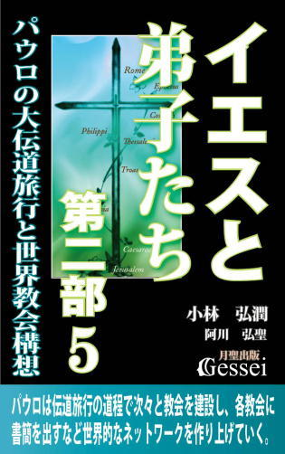 パウロはガラテヤ、フィリピ、テサロニケ、コリント、エフェソと、伝道旅行の道程で次々と独自の教会を建設し、各教会に書簡を出すなど世界的なネットワークを作り上げていく。パウロが思い描くローマやイスパニアをも射程に収めた壮大な世界教会構想にはペテロも驚愕するが、パウロの教会では常に問題が起こっていた。彼はエルサレムで暴行を受けた後投獄されるが、彼の裁判に臨席したアグリッパ二世が「人類の罪は十字架にかけられたキリストが背負った」という贖罪説の問題点をパウロに問い質す。
ここでパウロが一息ついた。抑揚と緊張感のある演説に、会場にいた誰もが息を呑んで聴いていた。ヤソン、アリスタルコ、ガイオの三人も、有無を言わさずパウロの話に引き込まれ、目を見開きながら次の話を待っていた。
「神にとって、キリストとして天から送ったイエスは最愛の息子とも言うべき存在です。アブラハムがひとり子であるイサクを捧げねばならない事態に慟哭したのと同様、神もまたそのひとり子であるイエスを十字架にかけさせる際に大変な慟哭に見舞われたと言えます。しかし神は、それほどの慟哭と苦痛に耐えてイエスを十字架にかけさせたのです。
ではなぜ、神はそれほどの苦痛を伴いながらひとり子のイエスを十字架にかけさせたのか。それは、人類が犯してきた罪を贖うためだったのです。
人類全体の罪を贖うためには、それに見合うほどの対価が必要となります。それはちょうど私たちユダヤの民が、神の救いを得るために毎年大量の犠牲の獣を捧げねばならないのと同じような対価です。神は今まで私たちに、救いを得るためには対価が必要だということを教えてこられました。しかし私たちの神は、自らもまた人類に救いをもたらすための対価を払おうとされた。それがイエスの十字架、それによって流されたキリストの血であり、これはいわば人類の救いのために神御自身が支払った身代金と言えます。
おわかりでしょうか。これが私たちの神なのです。皆様の中には、神とは高いところから一方的に自分たちに命令するだけの存在ではないかとか、毎年自分たちに犠牲を要求するだけで自分からは何もしないではないか、という不満を持ち続けてきた方もいらっしゃるかもしれません。しかし、私たちの神とは実はそうした存在ではないのです。自ら率先して対価を払おうとし、大変な苦痛を覚悟して最愛のひとり子すら十字架にかけさせた。それもひとえに、私たちが犯してきた罪を取り除いて私たちを救いの道に導かれるためなのです。私たちの神とはこれだけ誠実であり、信じるに値する存在なのです。
だからこそ、神を信じたいと常に願っている皆様に私は言いましょう。皆様が信じている神とは、心の底から信じるに値する存在であると。なぜなら、私たちの神とは私たち人間の悲しみや苦しみを常に知っている存在であるからです。神がアブラハムの息子殺しをやめさせたのはなぜか。それは神が、アブラハムの慟哭や悲しみを知っていたからです。そして神御自身もまた、人類の罪を贖うために最愛のひとり子であるイエスが十字架にかけられている姿に、必死に耐えたのです。
イエスの十字架によって、神とはただ威張り散らし、妬み、怒り狂うだけの存在ではなく、私たちが信じるに値する存在であることが明らかにされたのです。だからこそ私たちは神を、そしてそのひとり子であるイエスを心底信じることができるのです」
演説が終わって騒然とした雰囲気の中、アリスタルコが興奮した口調でヤソンに言った。
「......いや、驚いたな。見事に最後まで引き込まれたと言うか、あんなに中身が濃くて退屈しない演説を聴いたのは生まれて初めてだよ。エルサレムの教師の中に、あんなすごい人がいたんだな......」
「......おい、あの教師の名前は何と言ったっけ？」
「ああ、確か、パウロと言ってたな」
「パウロ、か......」
この時、二人の後ろに座っていたガイオが語りかけた。
「おい、これから皆であの人に詳しい話を聞きに行かないか？ こんな機会は二度とないかもしれないからな」
ヤソンは、普段は真面目で冷静なガイオの声に熱気がこもっているのを感じ、「何か大変なことが起こるかもしれない」という予感を覚えた。ヤソン、アリスタルコ、ガイオの三人はすぐにその場を立ち、パウロとシラスがいる場所に向かった。 ～「第八章 弁明」より
ペテロが「アンティオキアを出てからどんなルートでここに来たのか」をパウロに尋ねると、パウロはこれまでの伝道旅行の経緯を二人に説明した。
「アンティオキアからタルソスまで行き、キリキアの峡門からタウロス山脈を越えて高原地帯に入って以前建設していた教会を巡回しました。ピシディアに入った後はガラテヤ地方に進路変更してそこで新たな教会を作り、そこから西に向かってトロアスまで行きました。
トロアスから船でフィリピに行った後でテサロニケ、ベレア、そしてアテネも訪問し、コリントにしばらく滞在し、その後でアジアのエフェソに行った後でこのカイザリヤに来た、という感じです。伝道がうまく行かなかったところもありますが、今あげた中のほとんどの町では教会を作って独自に活動できるほどの信者が集まりましたよ。まだそれぞれの教会は小規模ですが、そうした教会が自己増殖して近隣地域に活動を広げていったら、いずれ大きな勢力になると思いますよ」
しばらくしてペテロが言った。
「いや、すごすぎて言葉が見つからないよ......。私にはとても真似のできないすごい働きをしている、としか言いようがない。小アジア、ギリシャを一通り回って信者を集めたなんて、既に世界中に教会を建てたようなものだからな......。先生も、主イエスもさぞ喜んでいると思うよ」
しかしパウロはペテロの言い方を否定するように言った。
「いえ、世界中に教会を建てたなんてとても言えませんよ。まだ一番肝心なところに行っていないんですから」
「え？」
ペテロは驚いたが、ピリポは冷静な口調でパウロに尋ねた。
「パウロ、お前はさっき啓示があったのでビティニアではなくトロアスに行ったと言っていたが、啓示がある前はニコメディアやビザンティウムを経由してマケドニアに行こうとしていたんじゃないか？」
これを聞いたパウロはにやりと笑って答えた。
「ええ、そうです。ピリポさんは、私が最初どこへ行こうとしていたか、わかったようですね」
これを聞いたピリポは小さくうなずいた。その様子を見たペテロが困惑した顔を見せたので、ピリポはペテロにヒントを出した。
「ペテロさん、パウロはエグナティア街道を進もうとしていたんですよ」
エグナティア街道とはローマがバルカン半島に築いた道路のことで、やがて東端はビザンティウム、西端はアドリア海に接するアポロニアまで拡張されてエーゲ海とアドリア海を結ぶほどの交通路になっていた。さらに、アポロニアからアドリア海を渡ってイタリア半島に上陸すればアッピア街道に入ることもできた。
「......つまり、パウロは最初エグナティア街道を進んだ後でアッピア街道に入り、その先にある都市に行こうとしていたということです」
ここでようやくペテロの心に、一つの都市の名前が浮かんだ。
「ローマ、か......」 ～「第八章 弁明」より
イエスと弟子たち第二部６ 「暴君」ネロの迫害、ペテロの逆十字架
 パウロの動きに呼応する形でヨハネは小アジアのエフェソへ、そしてペテロは世界の中心地であるローマへと赴く。ローマではネロ帝が寛容の政治を掲げて帝国秩序の維持と市民生活向上のための善政を行っていたが、セネカの引退とローマの大火をきっかけに「暴君」への道を歩み始めるようになる。皇妃ポッパエアはネロに対する汚名をそそぐためキリスト教徒に放火犯の罪を着せようとし、逮捕されたペテロは自ら逆十字架にかかることを望む。
パウロの動きに呼応する形でヨハネは小アジアのエフェソへ、そしてペテロは世界の中心地であるローマへと赴く。ローマではネロ帝が寛容の政治を掲げて帝国秩序の維持と市民生活向上のための善政を行っていたが、セネカの引退とローマの大火をきっかけに「暴君」への道を歩み始めるようになる。皇妃ポッパエアはネロに対する汚名をそそぐためキリスト教徒に放火犯の罪を着せようとし、逮捕されたペテロは自ら逆十字架にかかることを望む。
「ローマの大火の知らせを聞いて首都に戻った時、炎が首都を荒れ狂っている様子が予の目に飛び込んできた。その時予は、ローマ全体が炎に包まれて跡形もなく消え去ってしまうのではないか、という恐怖に駆られた。もし、予の治世で多くの先達が積み重ねてきた数々の努力が灰燼に帰してしまったら、一体どう申し開きをすればいいのか......。
そう思った時、この現実から絶対に逃げてはいけないと思った。被災者のため、そしてローマ市民のため、予に出来る限りの精いっぱいのことを必死でやってきたつもりだ。そして、そうした様々な施策は市民たちも満足してくれると思っていた。黄金宮殿の建設にしても、その中の人工湖や自然公園は市民たちにも全面的に開放するのだから、市民たちはきっと『狭苦しくて乱雑な都市の中にホッとする憩いの場ができた。これでようやく人間らしい生活が送れる』と喜んでくれるだろう、と思っていた。しかし、そうではなかった......」
ネロの話を、ポッパエアは黙って聞いていた。ネロはさらに語り続けた。
「これだけ民衆のために努力しても、そうした努力は民衆に伝わることがない。そればかりか、何か悪い噂があるとすぐにそうしたものに飛びついて予に疑念を持つようになる。これでは、今後どんなに民衆のためにと思って努力しても、何一つ報われることなく終わるしかない。
やはり、皇帝というのは永遠に民衆にこき使われるだけの奴隷なのだろうか？ だとしたら母上は、最初から予に恨みを持っていて、予を永遠に民衆の奴隷として苦しませる人生を送らせようと企んでいたに違いない......」
ネロはここで言葉を切った。ポッパエアがなおも黙っていると、ネロはその様子に気づいて表情を改めた。やがて、自分の至らなさを恥じるような口調でつぶやいた。
「......すまなかった。人の上に立つ人間らしくない泣き言を言ってしまったな。こんなことではあなたに『実力ある人間こそが皇帝にふさわしいのです。この程度のことで女々しく泣きわめいてどうしますか！』と叱咤されそうだな......」
懸命に平静を装おうとするネロの姿に、ポッパエアは覚悟を決めた。一呼吸して気持ちを落ち着かせた後、ようやく口を開いた。
「陛下、そうした陛下の孤独とお苦しみを共有できないことを、私はとても残念に思います。ただ、巷間に流布する『あの大火はネロが命令したのだ』という無責任な噂だけでも何とかすれば、多少なりとも陛下のお苦しみも軽減されるのではないかと存じます。そのことについては私どもにお任せいただけますでしょうか」
ネロは意外そうな顔でポッパエアを見た。
「......どうするのだ？」
「大火を起こした真犯人を逮捕し、民衆の前に引き立てて罪を詫びさせるのです。そうすれば民衆も納得し、陛下が被災者対策やローマの再建のために死にもの狂いでご努力されたことを認めるようになるでしょう」
これを聞いたネロの目にかすかな光が戻ってきた。
「大火を起こした犯人が......。それは一体、どんな連中なのだ？」
「......今ティゲリヌスが捜査していますが、逮捕は時間の問題と思います。陛下にはその連中が逮捕された際、彼らに与える罪名の許可をいただきとうございます」
「罪名？」
「はい。彼らに与えるべき罪名は、〝人類全体への憎悪の罪〟です」 ～「第九章 逆十字架」より
「ペテロさん、今すぐローマから出て下さい！」
マルセルスの必死の形相を見て唖然とした顔を浮かべたペテロに対し、マルセルスは荒い息を整えた後で事情を説明した。
「今、ローマ中の拠点の家にネロの近衛兵が向かっているんです！ ネロは、私たちキリスト教徒をローマの大火を起こした放火犯として逮捕し、処分しようとしているようなんです。近衛軍団が動いた以上、ローマにいたらペテロさんまで巻き添えになってしまいます。早くローマを出てコリントやエフェソなど、安全な場所に避難して下さい」
「......大火の放火犯？ なぜそんな嫌疑が......。私たちがそんなことをするはずがないのに、なぜネロ帝は近衛兵を動かしたというんだ？」
「......わかりません。もしかしたら、私たちを嫌っているユダヤ人たちがそう讒訴したことで、放火犯の汚名をそそごうとしたネロがそれに飛び乗ったのかもしれません。でも今は、そうしたことを詮索している場合じゃないんです。この家にもいつ近衛兵がやってくるかわからない以上、すぐにローマを脱出して下さい」
マルセルスの必死の懇願にペテロは事態の深刻さを理解し、すぐに最低限の準備をした。ただ、家を出る前にどうしても確認しておくことがあった。
「マルセルス、私がローマから出たら残されたローマの信者たちはどうなる？ もし、あなたも含めた信者たちがことごとく逮捕されることにでもなったら、私だけ一人で逃げたことになってしまう。私には、そんなことはできない」
真剣な表情を向けたペテロに対し、マルセルスは一度目を伏せた後で答えた。
「......ペテロさん、私は実は、イエス様がゴルゴタの丘で十字架にかけられていた時に、ローマ兵の一人として十字架刑の様子をずっと見ていたんです」
「え？」
驚きの表情を浮かべたペテロに対し、マルセルスは今までずっと言えなかった話を語り始めた。
「私はあの過越の祭りの時、神殿の警備をしていました。祭りの最中で巡礼客がしていた『奇跡を起こして病人を癒す力を持った人がエルサレムに来ている』という話を聞いた時、その人は私の友人を救ってくれた人だとすぐにわかりました。その後、イエス様がユダヤ人の自治組織に逮捕されたという話を聞いた時は驚きましたが、『あんな立派な人ならすぐに釈放されるはず。自分が心配するほどのことはない』と思っていました。
でも、イエス様は十字架刑の判決を出され、私は信じられない光景を見ました。私は、重い十字架を担いでゴルゴタの丘を登ってくるイエス様の姿をこの目で見たのです」
「............」
「でも、その時の私には、イエス様を処刑場から脱出させるだけの力はありませんでした。恩人に対して何もできないなんて、自分はなんて情けない奴なんだろうと、何度も何度も思いました。あの時の情けなさ、悔しさを忘れたことなんて、今まで一日もありませんでした......」
ペテロが何も言えずにいると、マルセルスは泣きそうな顔を向けて言った。
「ペテロさん、私はもう、二度とあんな思いはしたくないんです！ だから、せめてペテロさんには無事にローマを脱出して欲しいんです」 ～「第九章 逆十字架」より
イエスと弟子たち第二部７ ユダヤ戦争開戦、緒戦の奇跡的勝利
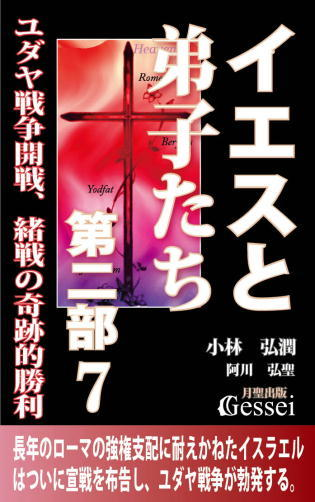 今から二千年前、日本から遠く離れた中東のイスラエルの地で勃発した戦乱・ユダヤ戦争。ローマ帝国の支配下にあったユダヤ人が、ローマの度重なる悪政に耐えかねて起こした反乱だが、当時のイスラエルの社会状況は現代日本の情勢と驚くほど酷似する。
地域や派閥や世代間のいがみ合いや断絶、貧富の格差の固定化によって若者が将来に絶望する状況、そして他地域の民族を排除することで団結しようとする排他的民族主義の高まり......。
なぜユダヤ戦争は起こったのか。そしてなぜ全面戦争への道を突き進んでいったのか。その経緯と人々の心理を分析することは、今後の日本の針路を考える際の不可欠な要素となる。
イエスの死去から40年近くが経過した紀元66年、ローマの強権支配に対する不満を爆発されたイスラエルはローマに宣戦を布告し、ユダヤ戦争が勃発する。破局を回避しようとするアグリッパ二世の懸命の努力にもかかわらず、緒戦の奇跡的な勝利によってイスラエルはローマとの全面戦争への道を突き進んでいく。
ベレニケは珍しくアグリッパの意見に反対するように言った。
「そんな......。ユダヤ人が戦争を望んでいるなんて......」
「もちろん、今のユダヤ人に面と向かって『戦争を望んでいるか』と尋ねても大半の者は『戦争なんて絶対にイヤだ』と答えるだろう。ただ、それは表面上の意識でしかなく、人間という存在は深層心理ではまた別の意識を持っているものだ。
例えば今回の場合、フロルスという共通の敵が現れたことでそれまでいがみ合っていたユダヤ人同士が団結できるようになってきた。人間というのは共通の敵が出現したり、明確な目標ができれば分裂する傾向が弱まって団結できるものだが、そういう機会になると誰もが心の奥底で快感を覚えるのだろう。
ある意味で戦争、その中でも国民全体を巻き込んだ〝総力戦〟というのは、共通の敵を前に多くの人々が団結できる絶好の機会と言えるだろう。戦争になれば、ローマという強大な敵を前にユダヤ人同士がいがみ合っている余裕などなくなるから、団結がより強固になって皆が奮い立つのは間違いない。つまり、予が言いたいのは『ユダヤ人は戦争になることによる悲惨さや苦しみを望んでいる』という意味ではなく『ユダヤ人同士が団結することによる連帯感、それに基づく快感を味わいたいと望んでいる』という意味だ」
これを聞いたベレニケは深刻そうな表情を浮かべた。
「では、ユダヤ人自身がそれを望んでいる以上、戦争への道を止めることはできない、と......」
「いや、そうは言っておらぬよ。団結したい願望を実現する手段は様々にあり、戦争はその中の一手段でしかない。例えば、25年前にあったカリグラ危機の時のユダヤ人は戦争とは別の手段によって団結したい願望を実現することができた。
大事なことは『一見いがみ合っている人々であっても、心の奥底で団結したい願望を持っている』ことを知ることと、『民衆のそうしたエネルギーが戦争という方向に一本化しないよう、別の手段を用意したりエネルギーを分散させる』ことだ。そして、民衆のエネルギーを的確な方向にコントロールできるかどうかに為政者の力量が試される、と言えるかもしれんな」 ～「第十章 開戦」より
エレアザロスは父親の激昂ぶりにひるんだ様子もなく言い返した。
「失礼ですが父上、そうした意見はこのイスラエルに巣くう特権階級の利権を守ろうとする言い訳にしか聞こえません。私が思うに、今のイスラエルは特権階級と一般の人々の社会的格差が大きく、しかもそれが固定化して下層の人間が何の希望も持てない社会になっています。
あなた方のような特権階級は自分たちの利権や地位を守ることで頭がいっぱいで、自分たちより下層の人間のことなど考えようともしない。これでは数で圧倒的に多い一般の人々や下層の人々との間に断絶が起きてしまい、ユダヤ人同士が一致団結することなど不可能になってしまいます。
今のイスラエルは、身分や社会的地位による断絶だけでなく、ガリラヤやサマリヤ、ユダヤという地域における断絶、サドカイ派、パリサイ派、エッセネ派という宗派における断絶など、様々なところで社会が分断されて人々の心がバラバラになっている状況です。このままの状況が推移したら、総督クマヌスの時代にあったようなイスラエル内の内乱が起こってユダヤ人同士の闘争と殺戮という事態になってしまうかもしれません。そんな最悪の事態に陥らないためにも、今こそユダヤ人同士が身分や地域や宗派の違いを超えて一致団結する必要があるのではないでしょうか。少なくとも私には、それこそが神が望まれていることであると思えてなりません」
「つまりお前は、ローマとの戦争に突入して皆が一致団結すれば、神が我らに力を貸してくれると言いたいのか......」
「その通りです」
「では、もし神が力を貸してくれなかったらどうなる？ それはローマとの戦争に負けることを意味し、このイスラエルは今以上に悲惨な状況に置かれることではないのか。お前はそこまで考えているのか？」
エレアザロスは一瞬間を置いた後で答えた。
「もしローマに負けた場合、多くのユダヤ人が悲惨な目に遭うのは間違いないでしょうね......」
アナニアスが「それなら」と言おうとしたが、エレアザロスの次の言葉の方が早かった。
「それでも、内乱が起こって同胞同士の殺戮によって破滅するよりはましだとは思いませんか？」
この言葉にアナニアスは即答できなかった。
「私に言わせれば、ローマに勝つか負けるかということは大した問題ではなく、皆が団結してローマに立ち向かうことこそが重要なのです。その方が、ユダヤ人という民族の存在を世界中に、そして後世の人々にもアピールすることができるのですから」
これを聞いたアナニアスは絶望の思いを抱き、その場でうなだれた。そうした父の様子に構うことなく、息子が穏やかな口調で言った。
「......父上、私はこうした状況を作ってくれた総督フロルスに対してむしろ感謝しているのです。彼のおかげでそれまでいがみ合っていたユダヤ人の中で団結するきっかけが生まれ、多くのユダヤ人の中にローマとの戦争を迎えるための心の準備ができるようになった。あるいは、フロルスという人間がこのイスラエルに総督として派遣されたことも、神の大いなる配慮なのかもしれません」 ～「第十章 開戦」より
イエスと弟子たち第二部８ ウェスパシアヌス登場、ヨセフスの皇帝預言
 ローマとの戦争に反対していた祭司階級の青年・ヨセフスは、不思議な運命に導かれるように反乱軍に身を投じ、前線司令官としてガリラヤに赴任する。彼はヨタパタでローマ軍との死闘を演じた末に敗退するが、捕虜となったヨセフスが語った言葉が将軍ウェスパシアヌス、さらにはローマ帝国の運命すら変えることになる。
ローマとの戦争に反対していた祭司階級の青年・ヨセフスは、不思議な運命に導かれるように反乱軍に身を投じ、前線司令官としてガリラヤに赴任する。彼はヨタパタでローマ軍との死闘を演じた末に敗退するが、捕虜となったヨセフスが語った言葉が将軍ウェスパシアヌス、さらにはローマ帝国の運命すら変えることになる。
ヨセフスはこの会話をした直後「私が質問に答えられなかったことで、ポッパエア様のユダヤ教に対する心証を悪くしてしまったのでは」ということがしばらく気になっていたため、会話の内容そのものの印象が薄れてしまっていた。しかし、改めて会話の内容を思い出した時、ポッパエアが言った「裏切り行為をした人間を偉人として語り伝えている」という言葉がヨセフスの心に強烈な印象を残すようになった。
「確かに、エレミヤがやったことは〝裏切り行為〟と見られてもおかしくないことだ。実際、エレミヤは何度も『バビロニアによって国が滅びる』と言い続けたために、彼に反対する者から常に迫害を受けることになった。
エルサレムが陥落して彼の預言の正しさが証明された後も、そんな不吉な預言をした人間など生き残った有力者の心証を害するのが普通のはずだ。そうである以上、エレミヤはニセ預言者のレッテルを貼られて抹殺されるはずなのに......。なぜ私たちユダヤ人は、〝裏切り行為〟を行った人物を正統な預言者と認め、偉人として語り伝えているのだろう？」
この時ヨセフスの心に、以前アグリッパ王が言っていた言葉が浮かんだ。
「ユダヤ教にはこれと対になるもう一つの要素があると思う。ユダヤ教がここまで続いてきたのは単に好戦的だっただけでなく、相反するように見える二つの要素がバランスよく機能してきたからだ」
ヨセフスはこの瞬間、自分がずっと考え続けてきたことの正体が少し見えたような思いになった。
「そうか！ 亡国の預言をしたのはエレミヤだけではないからだ。そうした要素がユダヤ教の伝統として以前から続いていたからこそ、不吉な預言であっても『これは神の言葉に違いない』と受け入れられる余地がユダヤ人の中にあったのだ。ユダヤ教の中にアモス、ホセア、イザヤ、ミカとつながる亡国の預言者の歴史があったからこそ、エレミヤも〝裏切り者〟にはならず正統な預言者としてユダヤ人に受け入れられたのだ！」
その時、さらにヨセフスの心に浮かんだものがあった。それは以前彼が見た夢に出てきたある言葉で、その言葉の意味をヨセフスはずっと考え続けてきた。彼は「今度こそこの言葉の意味がわかるかもしれない」と思ってその言葉を分析してみたが、答えは出てこなかった。ヨセフスは、ここでまた壁にぶつかるような思いを味わった。 ～「第十章 開戦」より
「ヨセフスよ、今のあなたは相当警戒しているだろうが、それも今のあなたの立場を考えるとやむを得ないだろう。しかし、おそらくあなたは誤解している。あなたは投降したらローマに敵対した責任者として重い処罰を受けると恐れているのだろうが、実際にはそうではないのだ。
あなたがヨタパタで見せたその知略と武勇により、ローマ軍の間では憎まれているというより称賛されており、それは司令官であるウェスパシアヌス閣下も同じだ。これは古い友人の言葉として言うが、ウェスパシアヌス閣下は一人の勇気ある男を救うことを望んでおられるのだ」
この時、ヨセフスの心に一つの言葉が浮かんだ。
「真に徳ある王とは誰か？」
それは以前彼が夢を見た時に出てきた言葉だった。今まで必死に考え続けたにもかかわらず意味がわからなかったこの言葉が、この時彼の心にはっきり浮かんだことにヨセフスは驚愕を覚えた。
そして、次にヨセフスの耳に飛び込んできたのはニカノルのこうした言葉だった。
「ヨセフスよ、あなたはおそらくこう思っているのだろう。『ウェスパシアヌスは私を罠にかけようとしているのではないか。友人であるニカノルを派遣することで自分の警戒心を緩め、投降させた上で処刑するつもりなのではないか』と。しかし私は言おう。閣下はあなたを罠にかけるために友人である自分を遣わすはずがない、と。なぜなら、ウェスパシアヌス閣下とは徳の中でも最も尊ぶべき友情を、背信の手段にするような人物ではないからだ。私はローマ軍の中で、閣下ほど徳のある人物を見たことがない」
その瞬間だった。ヨセフスの心に、それまで断片として点在していた要素が次々につながり、怒濤のような流れを作って彼の体内を駆け巡った。それまでずっと曖昧なままだった夢の意味が明確になり、彼は自分の前に明かされた〝秘儀〟の正体を知って興奮し、そして事の重大さに戦慄した。
様々な感情を整理して息を整えた後、ヨセフスはその場で神に対して声には出さない祈りを捧げた。
「すべてはこの時のため......。なぜユダヤ人が対ケスティウス戦に勝利したのか、なぜ私がローマ軍と戦う道を選んでこのヨタパタに来たのか、その理由がようやくわかりました。
それはあなたが我が魂を選ばれ、今告げられたことをある人物に伝えることが、あなたに課せられた私の義務だったからです。それが明らかになった以上、私は進んでローマ人のもとへ投降して生き長らえます。裏切り者ではなく、あなたの僕として」 ～「第十章 開戦」より
イエスと弟子たち第二部９ ネロの死、ローマの内乱終結と神殿炎上
 ネロの政治からの逃避行動や相次ぐ有力者の粛清にローマ市民は彼を見限り、ネロの転落が決定する。彼の死後のローマ帝国は１年で３人の皇帝が乱立する大混乱時代となり、やがて西方のゲルマニア軍団が権力を奪取するが、西方軍団の支配に反発した東方軍団の有力者が結束して反乱を起こし、ローマの攻略に成功してウェスパシアヌスが皇帝となる。
ネロの政治からの逃避行動や相次ぐ有力者の粛清にローマ市民は彼を見限り、ネロの転落が決定する。彼の死後のローマ帝国は１年で３人の皇帝が乱立する大混乱時代となり、やがて西方のゲルマニア軍団が権力を奪取するが、西方軍団の支配に反発した東方軍団の有力者が結束して反乱を起こし、ローマの攻略に成功してウェスパシアヌスが皇帝となる。
父に代わってエルサレム攻略の司令官となったティトゥスは、ヨセフスの思いに応えて神殿に手をかけることなくユダヤ戦争を終結させようとするが、そこで苛酷な現実に直面して苦悩する。敵味方に大量の犠牲が出る中、ついに神殿に火が放たれ、長きにわたってユダヤ人の心の拠り所だった神殿が炎上する......。
エパフロディトスが無念の表情を浮かべて下を向くと、ネロは穏やかな口調で言った。
「......そうか。お前のおかげで、ポッパエアが最後まで予に献身してくれたことがよくわかった。これでもう、何も思い残すことはない。では、せめて芸術家らしく潔い最期を迎えるとするかな」
そう言ってネロが近くに置いておいた短剣に手を伸ばした時、エパフロディトスが声を出そうとした。その様子に気づいたネロが鋭い声を発した。
「お前たち４人に言っておく。予の後を追って自死することは許さぬ。お前たちは予の分まで長生きし、人生を全うせよ。これはローマ皇帝としての予の最後の命令である。よいな」
機先を制されたことを悟ったエパフロディトスがうなだれると、ネロは静かに言った。
「エパフロディトス、今の悔しさはこれから生き続けることで晴らしてくれ。どんな試練や屈辱に見舞われても、お前のような強靱な人間なら耐えられるだろう。ポッパエアも、お前が自らの人生を全うすることを望んでいると思う。
今になって、予はようやく自分の使命がわかったような気がする。予は、多くの者が犯してきた罪を一身に引き受ける使命を持って生まれてきたのだ。これまでは、なぜ人々が予を悪し様に言うのかわからなかったが、それが予の使命であり役割だったのだ。それが神から与えられた予の使命であるならば、今こそそれを受け入れよう......」
これがネロの最後の言葉になった。紀元68年６月９日、ネロは短剣を喉に刺して自害し、波乱に満ちた30年の生涯を終えた。 ～「第十一章 炎上」より
「今のエルサレムは良識派である伝統勢力は壊滅して過激派や盗賊の巣窟になっているらしく、それによって私たちの先祖が長きにわたって尊重してきた聖なる神殿が彼らに蹂躙されてしまっているようなのです。
その人が命を賭けてまで神殿を守ろうとした以上、私もその人の遺志を受け継いで神殿を守りたい。今の私にできることは、武力による抵抗を行っても勝ち目はないこと、聖なる神殿を守るためにはローマ軍が全面攻撃に入る前に降伏するしかないことを、彼らに訴えることしかないのですから......」
話の中に込められたヨセフスの思いを感じ取ったティトゥスは、その場で決意を固めた。立ち上がってヨセフスの前に出ると、顔を紅潮させて言った。
「あなたの気持ちはよくわかった。私もこの場で約束させてもらうよ。エルサレムに籠城するユダヤ人に対してギリギリまで説得の努力を行い、あなた方が大事にする神殿を絶対に破壊させないことを。それに、武器を持たない一般市民には決して危害を加えてはならない、ということを兵士たちに徹底させるつもりだ」
これを聞いたヨセフスは一瞬驚いた表情を浮かべたが、すぐに頭を下げた。
「ありがとうございます、閣下。ただ、これほどの大変な戦争になってしまった以上、私としてもある程度の犠牲が出ることは仕方がないと思っております。閣下がもし、戦争を早期に終結させるためには神殿の一部を破壊したり占領地を荒らすこともやむを得ないと思われた場合、そうした判断を下されても私は決して閣下を恨むことはございません」
これを聞いたティトゥスは「司令官としての私の立場を考慮してくれているのだな」という思いになり、ますます胸が熱くなってくるのを感じた。 ～「第十一章 炎上」より
イエスと弟子たち第二部10 ペテロの地獄行、イエスとの再会
 今から二千年前、当時の地中海世界を制覇して世界史上稀に見る高度な文明国家として繁栄を謳歌したローマ帝国。そのローマの広大な支配領域の中では中央から遠く離れた辺境の一地域でしかないイスラエルの地で始まった「十字架にかけられて亡くなったイエスという男」を救世主として信奉するキリスト教。
今から二千年前、当時の地中海世界を制覇して世界史上稀に見る高度な文明国家として繁栄を謳歌したローマ帝国。そのローマの広大な支配領域の中では中央から遠く離れた辺境の一地域でしかないイスラエルの地で始まった「十字架にかけられて亡くなったイエスという男」を救世主として信奉するキリスト教。
当初は「ユダヤ人のみが信奉する地域宗教であるユダヤ教」の一分派でしかなかったキリスト教がローマ帝国内で急激な広まりを見せ、やがて様々な動乱や試練を経てローマ帝国を制覇し、ローマが滅んだ後もヨーロッパを支配する普遍宗教として定着しただけでなく、宗教改革というイノベーションを経て世界制覇への道も歩み始め、やがては「全世界に数十億の信者を持つ世界一の宗教」としての地位を不動のものにしていく。
イエスという男を核にして始まったそのキリスト教がどのような道を歩んで現在の地位を獲得するようになったのか。それを小説という形で描いたこの『イエスと弟子たち』シリーズの第二部の最終章である第十二章では、第一部で「イエスの十字架という結末に絶望して自殺する道を選んだあの人物」が再登場し、ペテロをはじめとする様々な人物が彼の元に集まる様を通して「人間にとって救いとは何か」という宗教の核心部分に肉薄していく。
ローマ帝国の支配下にあったイスラエルの地で独自の教えを説いたイエスは、民衆を扇動する危険人物として告発されて十字架上で命を落とす。しかし復活したイエスの姿を見た弟子たちが団結してエルサレムで教団を組織し、様々な迫害に耐えながらイスラエルの外にも進出していく。教団の発展に伴って「異邦人問題」という問題が起きてエルサレム教会とアンティオキア教会の対立が激化するが、その過程でパウロが地中海世界全域を射程に収めた大伝道旅行を敢行したため、キリスト教がローマ帝国中に拡張するという結果をもたらす。
世界の中心地であるローマに赴いたペテロはローマ教会の組織運営構築に尽力するが、ネロ帝の周辺で企てられたローマの大火による秩序不安を解消するための策略の犠牲となり、逆十字架によって殉教する。天界に戻ったペテロは、天使であるラファエルからイエスに会うために必要な課題を呈示される。
ヘロデ・アグリッパ一世死去後のイスラエルの地は徐々に秩序が乱れるようになり、イエスの死去から40年近くが経過した紀元66年、ローマの強権支配に対する不満を爆発させたイスラエルはローマに宣戦を布告し、ユダヤ戦争が勃発する。ユダヤ人がローマに徹底抗戦する道を選んだことでイスラエルの地はローマ軍に蹂躙され、遂に神殿に火が放たれ、長きにわたってユダヤ人の心の拠り所だった神殿が炎上する......。
ユダヤ戦争における神殿炎上までの経緯を見たペテロは、「この結末はユダヤ人が救世主を殺したことによる神の罰なのかもしれない」と苦悩する。ラファエルはペテロにイエスと会うために必要な課題を示し、彼はそれに応えて地獄に赴くことを決意する。
地獄のある村にたどり着いたペテロは、ユダヤ戦争によって生じた住民の間の断絶に苦悩するトビリスと出会い、その経験を糧としてついにイエスとの再会を果たす。
なぜ戦争は起こるのか ユダヤ戦争と現代日本の接点
 『イエスと弟子たち第二部７』で描写した、ユダヤ戦争が勃発した要因としての「貧富の格差の固定化によって若者が将来に絶望する状況」「他地域の民族を排除することで団結しようとする排他的民族主義の高まり」「地域や派閥や世代間のいがみ合いや断絶」という当時のイスラエルの社会情勢は現代の日本にも当てはまる現象で、今の日本の雰囲気は当時のイスラエルにどんどん近くなっていると思います。
『イエスと弟子たち第二部７』で描写した、ユダヤ戦争が勃発した要因としての「貧富の格差の固定化によって若者が将来に絶望する状況」「他地域の民族を排除することで団結しようとする排他的民族主義の高まり」「地域や派閥や世代間のいがみ合いや断絶」という当時のイスラエルの社会情勢は現代の日本にも当てはまる現象で、今の日本の雰囲気は当時のイスラエルにどんどん近くなっていると思います。
ただ、このことは「これからの日本は間違いなくユダヤ戦争のような大戦争を起こす」ということではありません。私としてはむしろ、現代日本が当時のイスラエルと似ているという視点を意識することで、「今後の日本が戦争に向かう流れを阻止することができる」と思っているところがあります。
現代日本に限らずいつの時代もどの地域でも、社会の大半の人が「戦争なんてイヤだ」と思っているものです。それなのに、世界史を見てみるといつの時代のどの地域でも「戦争」は何度も何度も起こってきました。「多くの人がイヤだと思っているにもかかわらず、なぜ戦争は起こるのか」ということを考えることが、「戦争を起こさない」ために重要ではないかと思います。
当時のイスラエルの貧富の格差は現代日本よりも深刻だったことが推測できるので、社会の中で大多数を占める貧困層は「そうした格差を放置する衆議会体制の政策」に相当な不満を持っていたことが推測できます。
貧富の格差が問題なのは、それが固定化すると何のチャンスもない社会になってしまうため、貧困層が生きることに絶望してしまうことにあります。格差の固定化を放置する現体制では絶望するしかない場合、多くの人々は「革命でも起こって体制が変わってくれないか」という意識になるもので、クーデターを起こしたエレアザロスはその民意を巧みにつかんだと言えます。
この「古記録保管所を焼き討ちして借金の証文を消失させる」というやり方は野蛮で暴力的ですが、多くの貧困層はこの「野蛮で暴力的なやり方」を拍手喝采したと思います。野蛮であっても、生きることに絶望していた貧困層から見ればそれは「長年苦しめられてきた借金地獄から解放されただけでなく、格差を放置してきた現政権を崩壊させることで自分たちに希望を与えてくれた行為」だからです。
現代に限らずいつの時代のどの地域でも「暴力は解決にならない」とか「戦争は絶対に起こしてはいけない」という主張がなされ、多くの人はそれに賛同するものです。ただ、それでいて社会が「生きることに絶望する人が増えていながら、体制がそれを放置して変えようとしない」というものになった場合、暴力や戦争という手段が多くの人に歓迎されることがあります。私はこれが「歴史上、暴力革命や戦争が絶えない一番の理由」だと思います。
近代以降の民主主義体制というのはある意味「暴力や戦争を伴わずに政権交代ができるシステム」と言えますが、その民主主義であっても絶対ではないという言い方ができます。というのも「民主主義体制の中で生きることに絶望する人が続出した」という場合、暴力や戦争でそうした体制を変えることが是とされるからです。
～「2 生きることに絶望する人が増えながら体制がそれを放置した場合、暴力や戦争は歓迎される」より
世界最大のベストセラー・聖書の問題点１ ユダは本当に裏切り者か？
 刊行した本が大当たりして「ベストセラー」と呼ばれるようになる部数の目安は「10万部」と言われていますが、世界的に見るとそうした「ベストセラー」の範疇を超えるほどのとてつもない売れ方をした本も存在し、例えば近年の世界的ベストセラー（ミリオンセラー）と言える「ハリー・ポッター」シリーズは世界中で４億5000万部の売上があったと言われています（とはいえ、日本の人気漫画の売上も凄まじいところがあり、「ONE PIECE」は累計３億8000万部の売上があると言われているし、「ゴルゴ13」は２億8000万部、「ドラゴンボール」は２億3000万部の売上があるらしい。数字はウィキペディアより）。
刊行した本が大当たりして「ベストセラー」と呼ばれるようになる部数の目安は「10万部」と言われていますが、世界的に見るとそうした「ベストセラー」の範疇を超えるほどのとてつもない売れ方をした本も存在し、例えば近年の世界的ベストセラー（ミリオンセラー）と言える「ハリー・ポッター」シリーズは世界中で４億5000万部の売上があったと言われています（とはいえ、日本の人気漫画の売上も凄まじいところがあり、「ONE PIECE」は累計３億8000万部の売上があると言われているし、「ゴルゴ13」は２億8000万部、「ドラゴンボール」は２億3000万部の売上があるらしい。数字はウィキペディアより）。
ただ、近年の世界的ベストセラーの象徴である「ハリー・ポッター」であっても（さらには、「ONE PIECE」を筆頭とする日本の人気漫画群が束になっても）かなわない売れ方をした本も存在し、それが「世界一のベストセラーでありロングセラー」と言われているキリスト教の「聖書」だと思います。
聖書というのはある意味「二千年前から発行されている書物」なので正確な累計発行部数を提示するのは不可能なようですが、推定で60億から3880億部の発行部数があると言われています。
聖書（中でも新約聖書）はヨーロッパを中心とするキリスト教圏では以前から「キリスト教圏の中では最大のベストセラー」であり、さらにキリスト教が世界一の宗教になった後は「世界一のベストセラー」としての地位を不動のものにしてきたと言えますが、さらに聖書というのは「千年単位という長い時間の間、多くの人に読まれ続けてきたロングセラー」でもあるため、後世の世界全体に与えた影響力の大きさは凄まじいものがあると思います。
残念ながら、その「影響力」の中には「悪影響」という要素も確実に存在し、その一つに「聖書に登場するある人物を、大した根拠もないのに世界中のキリスト教徒が極悪人と認識して忌み嫌っていること」があげられます。その人物とは言うまでもなくユダ（十二使徒の一人と位置づけられているイスカリオテのユダ）のことで、例えば、戦前から戦後にかけて内村鑑三の「無教会派」と呼ばれる教会に所属したキリスト教徒で、戦前に東京帝国大学教授の職にあっただけでなく、戦後は東大総長すら務めた「この時期の日本におけるトップクラスのインテリ」と言える矢内原忠雄はユダについてこうした論評をしています。
「ユダの罪はイエスを売ったことそのことにある。そのことだけで、彼の罪は客観的にも主観的にも確定せられる。彼の動機の穿鑿や、その後の行動などは、少しも彼の罪を軽減しません。（中略）あとでユダのごとく自ら縊れ死ぬるほどの後悔をしたとて、犯した罪は犯したのです。その事実をいかんともなしえません」
この人のユダ認識を簡単に言うと「ユダがイエスを売るという裏切り行為をしたことは事実で、その罪はユダに同情する人がどんなに弁護しても消し去ることはできない。なぜなら聖書にそう書いてあるからである」というものと言えますが、私はこの論評を読んだ時に「これは多くのキリスト教徒の方が持たれているユダ認識の象徴なのかもしれないな」という思いになったものです。
もしこれを読まれている方にキリスト教徒の方がいらっしゃった場合、この矢内原氏の論評に対して「確かにその通りだ」という賛同や共感の思いを持たれたかもしれませんが、私はこうした認識を持たれているキリスト教徒の方々に対して「それはユダという人に対する明らかな人権侵害ですよ」と言いたい気持ちがあります。
なぜかと言いますと、「ユダがイエスを裏切った」ことは事実とは言い切れないからです。司法の世界では「疑わしきは罰せず」とか「疑わしきは被告人の利益に」と言われることがあり、これは「被告が犯罪を行ったことが証明で確定した事実にならなければ、被告人の尊厳と名誉を守る（無罪にする）のが筋」という意味があると言えます。
この司法の精神に照らして考えれば、「ユダが卑劣な裏切り者だったことが証明で確定した事実にならなければ、ユダの尊厳と名誉を守るのが筋」ということになり、もし「ユダはイエスを卑劣に裏切った」ことが証明できない事柄である場合、ユダという人の尊厳と名誉を守ることを優先させて「裏切り者だという主張は取り下げる」のが筋であるからです（最低限「裏切り者だという断定」をやめて「裏切った可能性もある」という言い方に留めるべきだと思う）。ただ、「ユダは卑劣な裏切り者」という認識が強固に固定してしまった状態でこうした認識の転換をすることは難しいと言えます。
私は、世界中に「ユダは卑劣な裏切り者」という認識がまき散らされて固定化してしまった一因に「新約聖書（かその元になった資料）を書いた人間の意向が働いている」と思っているのですが、さらに言いますとこの「明らかな人権侵害」が起こった要因として、そうした文書を書いた人間に「後世に残る文書を書く際には注意が必要だ」という知識がなかったことが大きい、という印象を感じています。
電子書籍『文書を後世に残す方法１』では「自分が書いた文書を後世に残すための方法論」について触れましたが、実際に「後世に残る」ことになった場合は書いた人間に相応の責任が生じます。その意味で私としては「後世に残る文書を書く際には様々な注意点がある」ことも明確に指摘しておかなければ片手落ちになってしまうと考え、その具体的事例を述べた「聖書の問題点」というシリーズを企画した次第です。参考になれば幸いです。
中高生のための勉強のコツ１
 この『中高生のための勉強のコツ』は2004年に月聖出版刊の紙の本として刊行した同名タイトルを電子書籍化した本です（電子書籍では１と２に分割）。
この『中高生のための勉強のコツ』は2004年に月聖出版刊の紙の本として刊行した同名タイトルを電子書籍化した本です（電子書籍では１と２に分割）。
中学生、高校生、そしてその保護者の方向けに、私なりに考える「どういう勉強をすればテストができるようになり、成績が上がるのか」について示した内容です。世に「勉強法を書いた本」は様々ありますが、長く教育の現場にいて子供たちを教えてきた私としては（小学校教諭、専任家庭教師という仕事を10年以上経験）以前から「表面的なことでなく、なるべく本質的な内容を踏まえた勉強法はできないものか」と思ってきたものです。
「表面的」というのは例えばこういうことです。「どうすれば勉強ができるようになるか。それは教科書を読むことである。問題をたくさん解くことである。先生の話を聞くことである」。これらはむろん大事なことですが、私であれば「ではなぜ教科書を読むと勉強ができるようになるか」ということがわからないと、どうしてもやる気になれないという気持ちになってしまいます。「何のために教科書を読むのか」「教科書を読んだらどういう力がつくのか」ということが納得の行く形で説明されて初めて、「本質的な内容」に近づける。そしてそれが「これならやってみよう」というやる気につながる、というのが私の考え方です。
結局これらの「教科書を読む」「問題を解く」「先生の話を聞く」ことで求められているのは「そこにある知識を頭に入れ、問題を解けるだけの力をつける」ということだと思います。「知識を頭に入れる」ことにおいて大きな比重を占めるのは「覚える」ということですが、人間の頭というのは「覚える」ということが楽にできないようになっています。どんな人でも「数多くの知識を覚える」ためには「それなりの努力」をしなければならないと言えます。
勉強ができるための基本が「努力すること」にあるのは当然ですが、努力をする以上「なるべく無駄なく、効率的にやりたい」という気持ちもまた大事なことです。この本は、そうした「勉強を無駄なく、効率的にやるための方法」について、本質的な内容を踏まえた上で様々に紹介していきたいと思っています。
受験勉強のやり方を教えてもらおうとしても、「塾や家庭教師につく」となると多額のお金がかかりますが、実際はそうしたものに頼らなくても「自分なりのやり方の工夫をする」という意志を持って実行すればできるものです。
この本には「受験勉強に臨む心構え」や「小手先のテクニックではない本質的な勉強のやり方」が様々に盛り込まれているだけでなく、「何の役にも立たず嫌々やるだけ」という受験勉強のイメージを「将来の自分に役立つやり方を身につける機会」という前向きなものに変えるきっかけにもなると思っています。
高校受験、大学受験を控えた中学生、高校生だけでなく、公認会計士や司法書士などの資格試験の受験生や、教えることを仕事にした学校教師、予備校講師、塾講師の方々にとっても参考になる内容が含まれていると思います。
中高生のための勉強のコツ２
 第四章から第六章までを収録した第２巻では、第１巻で紹介した基礎知識をベースにした「試験の問題が解ける」部分に特化した勉強のやり方の具体的解説と、知識を定着させるための武器となる「理解する」という要素を掘り下げて解説しています。勉強をする際に「覚える」だけでなく「理解する」という要素を盛り込むことに成功した場合、学校の勉強や受験勉強に付随していた「無味乾燥でつまらない」というイメージが一変し、「勉強というのはここまで面白くて奥が深いものだったのか」という思いになれると思います。受験生の方々はこの本の内容が理解できれば「受験勉強を自分の人生を豊かにするための機会としてとことん利用する」ことさえ可能になると思います。参考になれば幸いです。
第四章から第六章までを収録した第２巻では、第１巻で紹介した基礎知識をベースにした「試験の問題が解ける」部分に特化した勉強のやり方の具体的解説と、知識を定着させるための武器となる「理解する」という要素を掘り下げて解説しています。勉強をする際に「覚える」だけでなく「理解する」という要素を盛り込むことに成功した場合、学校の勉強や受験勉強に付随していた「無味乾燥でつまらない」というイメージが一変し、「勉強というのはここまで面白くて奥が深いものだったのか」という思いになれると思います。受験生の方々はこの本の内容が理解できれば「受験勉強を自分の人生を豊かにするための機会としてとことん利用する」ことさえ可能になると思います。参考になれば幸いです。
学校の勉強や受験勉強が「試験で点数を取ることが重要視される勉強」である以上、そこから出発した「やり方」や「取り組む姿勢」を考える必要があります。何をやるにしても「ただ何となく」とか「言われた通りにやる」という姿勢で臨むよりも、「何のためにやるのか」という目的を明確にし、「そのためにはどうすればいいのか」ということを常に考えられるかどうかで効率性が違ってきます。
そこであげたいのが「問題が解けるためにどうするか」という視点です（この場合の「問題」とは試験の問題や入試問題ということで、練習問題ではないので注意）。学校の勉強や受験勉強に臨む際には、「試験の問題が解ける」ことを目的に置き、「そのためにはどうすればいいか」という意識を常に持つ必要があると思います。
ここでちょっと断っておきますが、こうした「問題が解けることを目的にする」というやり方は、あくまでも「学校の勉強、受験勉強という特殊な勉強でのやり方」であって、一般的な意味での勉強のやり方とは違うということです。
～「第四章2 学校の勉強、受験勉強に取り組む姿勢......「問題が解ける」ことを目的に置くこと」より
「つながりを強制的につける」と「既存の知識で自然につながる」の違いは、「２つの部品をのりや接着剤でくっつける感じ」と「接合部の凹凸が合っている部品をはめ込んでくっつける感じ」の違いと言えると思います。
例えば、「１」という数字の日本語の読み方は「イチ」ですが、この２つの知識のつながりは「強制的に」つけるしかありません。もし「どうして１の読み方はイチになるんですか？」と質問した子供がいた場合、教師は「そうなっているんだからそのまま覚えなさい」と答えればいいのです。
それに対して、「数学などの難しい問題がわからなかったが、先生の話を聞いてわかった」という場合は、「その問題を解くために必要な知識や公式」と「先生が話したこと」のつながりを強制的につけた、ということではないのです。「解くために必要な知識や公式」が持つ接合部が「先生の話の中の知識や公式」が持つ接合部にぴったり合った、という感触が「わかった！」「理解できた！」という思いになっているのです。
～「第六章2 「理解できるところは覚えなくていい」と思うことで覚えることの負担が軽減できる」より
中高生のための勉強のコツ３ 秘伝編
 この『中高生のための勉強のコツ３ 秘伝編』で紹介しているのは、同タイトルの１と２の内容を踏まえた「学校の勉強、受験勉強のやり方」に関する話ですが、１と２では「高校合格や大学合格を目指す広い読者の方を対象に、心構えや大まかなやり方を紹介した内容」であるのに対し、この本では対象とする読者と方向性をかなり絞り込んで「経済的に厳しい人が難関大学に合格するための勉強法」というコンセプトで企画してみたところがあります（ちなみに、１と２は2004年に刊行した紙の本『中高生のための勉強のコツ』を再編集した内容だが、この３の内容は紙の本としては公開していない完全オリジナルなので注意）。
この『中高生のための勉強のコツ３ 秘伝編』で紹介しているのは、同タイトルの１と２の内容を踏まえた「学校の勉強、受験勉強のやり方」に関する話ですが、１と２では「高校合格や大学合格を目指す広い読者の方を対象に、心構えや大まかなやり方を紹介した内容」であるのに対し、この本では対象とする読者と方向性をかなり絞り込んで「経済的に厳しい人が難関大学に合格するための勉強法」というコンセプトで企画してみたところがあります（ちなみに、１と２は2004年に刊行した紙の本『中高生のための勉強のコツ』を再編集した内容だが、この３の内容は紙の本としては公開していない完全オリジナルなので注意）。
この「難関大学に合格するための勉強法」という言い方に対しては「ホントかよ？」という思いを持たれた方もいらっしゃると思います。ちなみにこれを書いている私の場合、大学は卒業しましたが「難関」というほどでもないですし（横浜国立大学教育学部）、長く教育の現場から遠ざかっている人間なのでこうした言い方をしても説得力は出ないかもしれませんが、この「難関大学に合格する」ことはそれほど難しくなく、「条件さえ満たせば十分可能」と思っています。
その条件とは「『勉強のコツ』１と２の内容を理解して「勉強や人生に対する厳しめの意識」を持っている」ことと「どうしてもこの大学に行きたいという強い気持ちがある」ことです。この「どうしてもこの大学に行きたい」という思いは「特定の大学に行きたい」という思いだけでなく、「将来どうしてもこういう職業に就きたいが、そのためにはこういう大学や専門学校に入っておく必要がある」という思いでもいいと思います（例えば「将来政治家や官僚になりたいが、そのためには中央のトップの大学に入らないといけない」というような状況）。要は「強い必要性の実感を持っているかどうか」ということです。
普通はそうした「難関大学」に入るためには「トップクラスの進学校に通い、さらにはレベルの高い塾や予備校や家庭教師に就かなければならない」という印象になると思います。さらに世間では「相当前から受験勉強を開始し、一切の遊びを断ち切って脇目も振らず猛勉強をしなければそうした大学には入れない」というイメージも根強いと思いますが、個人的には「必ずしもその必要はない」と思っています。私としては「お金をかけることなく独学で、さらに「猛勉強ではなくポイントを押さえた勉強」をするだけで、そうした難関大学に入ることは十分可能だ」と思っています。
ただ、この本で言いたいことは「お金をかけずに独学で、猛勉強をせずに難関大学に入ることは誰でもできる」ということではありません。誤解されるといけないので何度も強調しておきますが、それができるためには条件があり、まずは『勉強のコツ』１と２でも主張しましたように「勉強や人生に対する厳しめの意識を持っている」こと、そして「どうしてもこれをやりたいという強い気持ちがある」ことです。この条件を満たす人であれば、「やむを得ない事情で不登校の状態にある人」とか、「経済的に厳しいのでアルバイトをしなければならず、そのために勉強する時間がない人」であっても、そうした大学に合格することは十分可能だと思っているということです。
その意味で「楽をして難関大学に入りたい」とか「取りあえずいい学歴が欲しいから有名大学に入れれば」という程度の気持ちの人は、最初からこの本に書いていることは身につかないと思ってもらった方がいいと思います。そういう人でも難関大学に入ってしまうことはあるかもしれませんが、そういう人の場合「その後の人生が大変になる」ことは間違いないと思うので、この時点ではっきり言っておきたいと思います。
この本で一番言いたいことは「どうしても行きたい大学があって、そのためにはどんな努力でもできると思っているけど、経済的に厳しいから塾や家庭教師に頼れないし、アルバイトなどをしなければいけなくて勉強する時間がないから無理だ」とあきらめている人に対して「そういう人であっても難関大学に入れる道があることを示す」ことで、そうした「この本のコンセプトや趣旨」を理解してもらえればと思います。
その意味で、この本では主に「経済的に厳しい人」を対象にしていますが、そうした人は大学に入った後で（あるいは現在でも）アルバイトなどの仕事をすることは間違いないと思います。そうした人の参考になるようにと思いまして、この本では仕事術や組織論の話も少し紹介しているのですが、その部分の話は受験生ではない「既に社会人として働いている一般の方」でも参考になるのでは、と思っています（あと、仕事術に関する話の事例として「大リーグのイチロー選手がワールドシリーズに進出できない理由」に関する話も紹介しているので、野球ファンの方にとっても参考になるところがあると思う）。
こういう「難関大学に合格するための勉強法」というような話は、東大とか京大のような「実際に難関大学に合格した人」とか「有名塾講師や予備校講師」が言えば説得力は出ると思いますが、「そうでない人に言われても......」という気持ちになる人も多いと思います。そこで言っておきたいのは、私自身は「大学受験の共通試験（当時の共通一次試験）で普段の模試よりも100点以上高い点数が取れたことで志望大学に現役で合格できたという経験をしている人間であること」です。当時は「本番で急に高い点数が取れた理由」がまったくわからなかったのですが、最近になってそれが明確にわかるようになったものです（そのきっかけは15年８月に『善光寺２』という本を書いたことにあったと思っている）。私の場合「そういう現象が起こるメカニズムを理論化し、すべて理屈で説明できる自信」があるので、そうした意味での説得力は出たのではと思っています（ただ、そうした「理屈」を理解してもらうには、この本だけでなく月聖出版から出ている様々なジャンルの本を読破してもらう必要があることを言っておきたい）。
おそらく、この本を読まれた人の中で実際に「本番で急に高い点数が取れて難関大学に合格できた」という人が出てくると思います。それでいて、私がこの本を出すことを通じてねらっていることは単に「経済的に厳しい人でも難関大学に入れる道があることを示す」というような小さなことではなく、「将来の日本を背負って立つ人材を育てたい」という気持ちも持っていることも付け加えておきたいと思います。参考になれば幸いです。
精神的価値とは何か１ 価値とは何か
 人間という存在は「価値を求める存在」と定義することができます。これは「どんな人間であっても価値を求める根源的欲求を持っており、価値を求めない人間は一人もいない」という意味ですが、そうでありながら「価値」という概念を徹底的に考えたことがある人はほとんどいないと思います。
人間という存在は「価値を求める存在」と定義することができます。これは「どんな人間であっても価値を求める根源的欲求を持っており、価値を求めない人間は一人もいない」という意味ですが、そうでありながら「価値」という概念を徹底的に考えたことがある人はほとんどいないと思います。
この本は2007年５月に月聖出版から刊行した紙の本『精神的価値とは何か』の第一章を電子化して増補加筆した内容ですが（15年１月に「黒田投手広島復帰」の話を加筆）、私はこの本を書いていく中で「価値」という概念を徹底的に分析し、その結果「実践するのは難しいが、少なくとも理論上はどんな状況からでも常に価値を実感する（幸福感に満たされた人生を送る）ことができるかもしれない」という手応えを得ることができたものです。
ただ、こうした「どんな状況からでも常に価値を実感できるやり方」を紹介した内容も含めた『精神的価値とは何か』という本はほとんど売れず、読まれた方からの反応もほとんど届かなかったので、著者として「自分では今まで誰も書いたことがないような画期的な本だと思ったのだけど、そうでもないのかな」という気持ちになっていたものです。
ところが、それから８年の歳月が経つ中で、この本が売れなかった理由が明確にわかるようになったものです。この本の７節では「価値が実感できるやり方を自分のものにすることは、金やダイヤモンドを高いお金を出して買わなくても、次々と自分の力で作ることができることと同じ」という言い方をしていますが、もしこれが事実であれば、そうした内容を理論化したこの本は「価値を無限に作り出せる打ち出の小槌のような本」と変わらないと言えるため、「世間に広がってメジャーになったら世界のバランスが崩れてしまうため、何らかのストップがかかったのだろう」（少なくとも、そうした可能性がある）ということです。
これは電子書籍『善光寺２』で触れた視点ですが、日本の漫画の中で「人間があこがれる特殊能力」は様々に描かれるものの、「お金を無限に作り出せる打ち出の小槌のような能力」はまず描かれないところがあり（ちなみに、『ドラえもん』で描かれた「打ち出の小槌」は「お金を出したらそれ以上の労力が要求される」というまるで夢のない道具という設定になっていたもの）、それは「そういう現実世界のルールとは根本的に合わない能力を物語に登場させたら、リアリティーがなくなって物語が成り立たなくなると判断されるから」と言えると思います。
その意味で、この「価値の打ち出の小槌」とも言えるこの本は、メジャーになったら世界のバランスが崩れてしまうため、「メジャーにならないことが宿命づけられている」と言えると思います（万が一この本がメジャーになってしまった場合、「消費をしなくても価値を実感できる人が増えてしまう」ことになるので日本経済が停滞してしまうことは確実）。
こういう話をしても「何を言っているんだ？」という感じでピンと来ない人がほとんどだと思いますが、「本当にそういうヤバイ内容の本か確かめてみよう」と思われた方に対して一つ言っておきたいのは「この本の内容を理解できたら価値観が変わってしまう」ということです。例えばこれを書いた私自身は「それまで価値を感じていたものに対して価値を感じなくなってしまう」という現象に見舞われたことがあり（ただ、本当に好きなものは変わらず残りますが）、読む前にそうした「リスク」も覚悟していただければと思います（こうして事前に警告した以上、それに対する責任は一切取りませんので）。
この本で書いた話は「まだまだ理論が未熟だったり、発動条件が厳しい」ところがありますが、それでいて「価値を無限に作り出すことは理論的には可能」ということを知っているだけでもまったく違うと思います。それだけの内容を持った本ですので、安易な気持ちで読んでもらうことを防ぐために価格を上げて2500円としてみました（状況次第でさらに上げる可能性もあります）。
『善光寺２』という本にも、この『価値とは何か』と同様に高額の価格にしていますが、それは「リスクもあるヤバイ本ではあるが、知っていると知らないとでは大違いの内容」が含まれているからです。参考になれば幸いです。
精神的価値とは何か２ 現代日本に生きていることの価値の発見
 私はNHK･BSで放送されている「COOL JAPAN」（クールジャパン）という番組をよく見ることがあるのですが、この番組に出演する外国人の方から時おり「日本は夢のような国」という論評が出ることがあります。
私はNHK･BSで放送されている「COOL JAPAN」（クールジャパン）という番組をよく見ることがあるのですが、この番組に出演する外国人の方から時おり「日本は夢のような国」という論評が出ることがあります。
例えば、14年１月12日に放送された「○○放題」というテーマの内容では、 日本によくある「一定の料金を払えば食べ放題・飲み放題になる店」に対して、「外国人がうらやましがっている」とか「こんなことは他のどの国でもできず、夢のような国だ」という論評があったのですが、私はこれを聞いた時に「今までこの視点はまったく気づかなかったな......」という思いになったところがあります。
私は07年に『精神的価値とは何か』という本を刊行した時から「現代日本に生きていることの価値」ということを考えてきた人間ですが、そうした私であっても「食べ放題・飲み放題の店が日本が夢のような国である事例の一つ」という視点はまるで気づかなかったため、つくづく「自分が気づかないところで、こうした事例はいくらでもあるんだな」という思いになったものです。
14年３月16日に放送された「工事」という回では「世界的に見ると日本の工事はきれいで速い」ことも紹介されていたのですが、ドイツの人が言っていた「ドイツだと10倍の時間がかかる」という話が印象的だったものです。
私はそれまで「今の日本の環境の良さや暮らしやすさは近代以降の急速な技術の進歩に大きな要因がある」と思っていたため、「そうした環境の良さは日本だけでなく、欧米などの先進国は皆そうなのだろう」という認識を持っていたものです。
ところが、そうした〝先進国〟に居住されている方の話を聞くと実態は違うようで、例えばドイツに30年在住している川口マーン惠美氏は「ドイツではサービスの悪さが当たり前。年を取ると、ドイツはだんだん住み心地が悪くなっていく」とか「日本は暮らしていくうえでの摩擦が少なく、緊張しないで外を歩けるのがとても嬉しい」とか「ドイツと比べると日本は天国だ」という話をしていますし、同じくドイツに10年以上居住されている方は「新幹線の遅れが１年平均たったの20秒」「東京は大都市のなかではありえないくらい安全」「サービス面、安全面で日本は世界一」という言い方をしていたものです。
こうした日本のすごさは外国人（日本に居住したことがない外国の方）にはあまり認知されていないようで、クールジャパンに出演していたイギリスの人は「日本での生活は魔法のように便利で、こっち（ロンドン）では信じてもらえないこともある」という話をしていたことがあったものです。
ただ、考えてみますとこうした「今の日本の天国ぶり」を一番わかっていないのは、ほかならぬ「今の日本人」と言うことができると思います。どうすれば「今の日本の天国ぶりを実感でき、こういう国に生きていてありがたいと心底思える」ようになれるかと言いますと、その一つが電子書籍『価値とは何か』でも紹介しました「対立概念の提示」という発想です。
対立概念の提示とは「他の何かと比較する」ということですが、例えばクールジャパンに出演している外国人の方とか、ドイツに在住している方が「日本は天国のような国だと主張している」のは「自国という対立概念があることで、それと比較すると日本が天国のように見えるから」という言い方ができると思います。
こうした発想で価値を実感するのは「空間的な対立概念の提示」という言い方ができますが、それに対して私がこの本で使ってみたのが「時間的な対立概念の提示」というやり方です。それは「昔の日本という対立概念を提示することで、今の日本の天国ぶり浮かび上がらせる」ということで、おそらくこれを読まれた方の多くは「今の日本が昔よりも恵まれた環境にあることは間違いなく、実際に自分は天国に生きているのかもしれない」という思いになれると思います。
精神的価値とは何か３ お金で幸せは買えるか
 世間で、お金が絡んだ問題が大きく取り上げられると決まって出てくるのが、「お金で幸せは買えない」とか「お金では決して幸福にはなれない」という話ですが、私はこうした言い方を聞くと「お金そのものが悪」というお金の役割や価値を全否定するような響きを感じます。
世間で、お金が絡んだ問題が大きく取り上げられると決まって出てくるのが、「お金で幸せは買えない」とか「お金では決して幸福にはなれない」という話ですが、私はこうした言い方を聞くと「お金そのものが悪」というお金の役割や価値を全否定するような響きを感じます。
「お金は悪」という発想はいつの時代にもあったと言うことができ、例えば新渡戸稲造の『武士道』には「武士は金銭そのもの、それを儲けもしくは蓄える術を賤しんだ」とか、「（武士の）児童は経済を無視するように養育させられた。経済のことを口にするは悪趣味であると考えられ、各種貨幣の価値を知らざるは善き養育の記号であった」という「お金は悪」の発想に基づいた記述が見られます。
こうした「お金そのものが汚くて卑しく、悪である」という考え方は、不当な金儲けや拝金主義から遠ざかろうとするためにある程度必要なところもあるとは思いますが、実際にはお金というものは「人間や社会にとって必要不可欠」と言えるほど重要な役割を担っているところがあります。
それほど重要なものである「お金」の認識の仕方を冷静な視点がない感情的な憤りから始めてしまった場合、様々な問題や不都合が生じると思います。そのためにも、「一度お金に対する認識を根本的なところから考え直し、冷静な視点を取り入れてお金に対する認識を再構築すること」が大事ではないかと思います。
「お金持ちになったら何をしたいですか？」と聞いてみても「豪邸を建てる」とか「毎日高級料理を食べる」とか、「高級車、自家用飛行機、宝石、高級な服を買う」というような、豪華な買い物をするという答えしか返ってこないと思いますが、こういう使い方だけでは「時間が経てば必ず常態化して実感が得られなくなる」と言えます。
そうした生活をすることへのあこがれを強く持っていた場合は「制限による思いの蓄積」があるのでそこそこの期間は実感が続くと思いますが、それでも長い時間が経てば必ず常態化して実感が得られなくなるものです。
市場経済が急速に進んだある国では「推定建造費約３６０億円で、プールなどの豪華設備に加えてヘリコプターや潜水艇、安全のためのミサイル認識システムや防弾ガラスまで装備した豪華ヨットを建造している大富豪」がいるようで、ここまでスケールが大きくなると「日本で話題になる何とか族の富豪などと比べるとケタが違うから、これはこれで面白いもんだ」という思いになります。
ただ、スケールの大小に関係なく「こういうお金の使い方ではやがて常態化して実感が得られなくなる」という運命が待っているので、私としては「もう少し使い方を考えた方がいいんじゃないかな」と思ってしまいます。
～「11 お金で大事なのは使い方にあり「どう使えば本当に自分のためになるか」を考えること」より
人間関係のコツ１ 人間心理を理解するための基礎知識
 私は子供の頃、人間関係でよく悩んでいました。元来神経質で消極的な性格なので、親との関係、友人関係、学校の教師との関係など、嫌なことやつらいことがあると落ち込み、その度に「どうしてこうなるんだろう」と自分なりに必死に考えるのですが、いかんせん人生経験がわずかしかない身では納得のいく答えや対処法など浮かぶはずもなく、悶々とした思いで過ごすこともよくあったものです。そして時折、一つの疑問を感じるようになりました。
私は子供の頃、人間関係でよく悩んでいました。元来神経質で消極的な性格なので、親との関係、友人関係、学校の教師との関係など、嫌なことやつらいことがあると落ち込み、その度に「どうしてこうなるんだろう」と自分なりに必死に考えるのですが、いかんせん人生経験がわずかしかない身では納得のいく答えや対処法など浮かぶはずもなく、悶々とした思いで過ごすこともよくあったものです。そして時折、一つの疑問を感じるようになりました。
それは、「学校というところは、世の中のことや人間の生き方を教えてくれるはずなのに、どうして人間関係のやり方みたいなものを教えてくれないんだろう」ということです。そうした学校のあり方に対しては、子供心に「学校は、人間関係の勉強などは子供が生きていく中で自然に覚えるもので、ことさら教えるものではないと思っているんだろうな」というぼんやりとした認識がありましたが、周囲の友達を見てみると「皆、それぞれの友達と仲良くうまくやっている」という雰囲気を感じ、「こういうことに悩んでいるのは自分だけなのかな」とよく思ったものです。
成人し、大人になってからは人間関係での悩みはますます深まり、他人と合うのが怖くなったり、電話のベルの音におびえたこともよくありました。そうした中、自分なりに様々な人の話を聞いたり、本を読んだりすることで「人間関係を良くするにはどうすればいいんだろう」ということを考え続けてきました。その過程で気づいたことは「こういうことで悩んでいるのは自分だけじゃないんだな」ということです。
人はともすれば、表面的な人付き合いや建前のやり取りだけで人を判断してしまう傾向があります。一見元気に明るく付き合っているように見える人同士でも、心の奥では様々な苦しみや悩みを抱えていることはなかなか確認できないため、つい「悩んでいるのは自分だけだ」という安直な判断をしてしまうものです。しかし、「表面的な付き合いではわからない人の心の奥の声」というものは、テレビや新聞や本などの様々な媒体によって伝わってくるので、次第次第に「他の人も似たような悩みを持っているんだ」ということがわかってきたものです。
様々な人々の「人付き合いの仕方がわからない」「他人が怖くて仕方がない」というような声に慰められると同時に、「世間で言われる人間関係を良くするやり方は、どうも納得ができない」という思いも膨らんでいったものです。そこで気がついたのですが、世間で教えられるそうした「やり方」の大半は、「ケンカをしないで仲良くしましょう」とか「他人に親切にしましょう」とか「笑顔を大切にしましょう」というような、「学校教育でやるような押しつけ的、命令的なやり方だけですべて解決できる」という発想になっているのでは、ということです。
もちろん、これだけで納得できて「これらを素直に守ったら人間関係はすべて良くなった」という人が大半ならそれでいいのですが、少なくとも私としては「こうしたスローガンの押しつけ的だけで複雑な人間関係が解決できるほど、人間は単純な存在じゃない。もっと別のやり方もできるのではないか」という気がしてなりませんでした。
「スローガンの押しつけだけで解決する」という理想的なものではない、もっと現実的・実践的な人間関係調整のやり方があってもいいのではないか......。こういう思いで書いたのがこの『人間関係のコツ』シリーズです。実際に「現実的・実践的」な内容になっているかどうかはわかりませんが、少なくとも私の中では、今まで自分の頭の中に断片的に点在していた「人間関係調整のやり方」がどんどん整理されてきて、書いていく中で「頭がすごくスッキリしてきた」という感覚を味わったものです。ともあれ、読まれた方にとって何らかの参考になるところがあればと思っています。
（2014年12月時点での補足）この『人間関係のコツ』シリーズ（全５巻予定）は、紙の本として刊行しました『学校では教えない人間関係のコツ』『人間関係のコツ・パート２』『人を信じるとはどういうことか』を電子書籍化した内容で、一部加筆訂正しているところもあります。
『学校では教えない人間関係のコツ』などは11年前に執筆した本ですが、今読み返してみても「古くなったところはほとんどなく、人間関係調整における基礎知識や実践項目としていつの時代も通用する普遍的な項目ばかりだな」という思いになったものです。『情報処理のコツ』シリーズと合わせて、月聖出版の本の中でも土台を作っている部分ですので、「他の本に盛り込んだ様々な考え方の基礎はここにある」ことを感じてもらえればと思っています。
『人間関係のコツ』シリーズ構成（全５巻予定）
第１巻「人間心理を理解するための基礎知識」
第２巻「嫌な人間関係改善のための実践論」
第３巻「罪悪感と恐怖心を克服する考え方」
第４巻「人間理解のため必要な主観的世界という視点」
第５巻「人を信じるとはどういうことか」
第１巻 人間心理の根本から出発した「自分に厳しく他人に寛容に」「期待と失望」「外からの評価と内からの実感」等の人間関係調整のための基礎知識を紹介。
人間関係のコツ２ 嫌な人間関係改善のための実践論
 この『人間関係のコツ２ 嫌な人間関係改善のための実践論』は、電子書籍『人間関係のコツ１ 人間心理を理解するための基礎知識』の続編ですが、2004年から05年にかけて月聖出版刊の紙の本として刊行した『学校では教えない人間関係のコツ』の第五章と六章、さらに『人間関係のコツ・パート２』の第一章と二章をベースにして、加筆訂正した内容になっています。
この『人間関係のコツ２ 嫌な人間関係改善のための実践論』は、電子書籍『人間関係のコツ１ 人間心理を理解するための基礎知識』の続編ですが、2004年から05年にかけて月聖出版刊の紙の本として刊行した『学校では教えない人間関係のコツ』の第五章と六章、さらに『人間関係のコツ・パート２』の第一章と二章をベースにして、加筆訂正した内容になっています。
メインはこの本の副題にも入れました第一章の「嫌な人間関係改善のための実践論」に関する話ですが、当然ながらこれを書いている私自身も人生の中で様々な「嫌な人間関係」に悩まされてきた人間ですので、「自分自身がそうした人間関係をどれだけ改善、克服してきたどうかでこの内容の説得力が決まるな」と思っています。
この章の最後には「個人的に嫌な人間関係を改善してきた体験談」も少し紹介していますが（当事者のプライバシーがあるので簡潔な記述に留めているが）、『人間関係のコツ１』でも強調していますように私の考え方は「お題目やスローガンを前面に出す精神論・理想論的発想ではなく、とことん現実を見つめて冷静に原因や対処法を考える現実的方法論の重視」にあります。
こうした考え方は「原因結果的見方」という言い方もできますが、この本の第四章でも触れていますように、世間では「この一言さえ唱えればどんな人でも、一瞬のうちに幸福になれる（嫌な人間関係が改善する）」というような「魔法的見方」に基づいた発想が多いと思います。そうした「インスタントな人間関係改善の方法論」に比べますと、この本で紹介しています「まずは原因を冷静に分析し、じっくり時間をかけて対処していく」という発想は地味で目立たないとは思いますが、こうした「原因結果的見方」の一番の強みは「時間が経てば経つほどじわじわと効果が出ていく」ことにあると思います。
その意味で、これを読まれている方が本の中で紹介したやり方を実践する際も、まずは「長い目で見て考える」という発想をしていたければ、と思っています。
その「嫌な人間関係が改善するまでの時間」は各人の状況に応じて様々に違うと思いますが（私が最近体験したケースは半年だった）、渦中にいる時は「嫌なこと」であっても、過ぎてしまえば「すべて貴重な体験」に思えるものです。
この本を読まれた方が、今体験している「嫌な人間関係」を後で振り返ってみて、「あの時は大変だったけど、終わってしまえば本当に貴重な体験だったな」と心底思えるようになることを願っています。
人間関係のコツ３ 罪悪感と恐怖心を克服する考え方
 この『人間関係のコツ３ 罪悪感と恐怖心を克服する考え方』は、電子書籍『人間関係のコツ』シリーズの第３弾ですが、2005年に月聖出版刊の紙の本として刊行した『人間関係のコツ・パート２』の第三章から第五章の内容をベースにして、加筆訂正した内容になっています。
この『人間関係のコツ３ 罪悪感と恐怖心を克服する考え方』は、電子書籍『人間関係のコツ』シリーズの第３弾ですが、2005年に月聖出版刊の紙の本として刊行した『人間関係のコツ・パート２』の第三章から第五章の内容をベースにして、加筆訂正した内容になっています。
この内容はそれまでの『人間関係のコツ』シリーズで紹介した基礎知識をベースにして「人間関係の苦しみを根本から解決するための方法論」を意識した内容になっており、第一章の「心の再構築」と第二章の「多様な価値観の認識」に関する話では「それまで作ってきた各人の心を再構築して安定感のあるものに作り替えるための実践論」にまで踏み込んでいるところがあります。
そして第三章の「罪悪感と恐怖心を克服する考え方」では、人間が抱く悪感情の中でもとりわけ克服が難しいと言える「罪悪感」と「恐怖心」を克服するための様々な考え方を提示してみましたが、例えば「罪悪感」という感情は歴史上の様々な人物が悩み、克服のための考え方を必死に模索してきたと言えます（特にキリスト教や仏教などの宗教改革者の中に「自分は大変な罪を犯してきたという罪悪感」に苦しんできた人が多く、例えばパウロや親鸞やルターの書いたものを読んだり生涯を追ってみると「罪悪感に悩み抜き、それを克服したことがエネルギーになっている」ことがよくわかると思う）。
これを書いている私自身も、長い間この「罪悪感」に苦しんできた人間ですが、当時を振り返ってみますと「悩んでいる時は大変だったけど、今思うと本当に貴重な経験だったし、その後で様々な本を書くためのエネルギーの源泉になったな」ということをつくづく思います。『人間関係のコツ２』で触れました「嫌な人間関係」もそうですが、渦中にいる時は大変でありながら、過ぎてしまえば「すべて貴重な体験」に思えると思いますので、この本の内容を参考にして多くの方々に罪悪感を克服して欲しい、と願っています。
そして、この本の最後では「恐怖心」という概念を克服するための考え方も少し提示していますが、この恐怖心という概念は「人間存在の根本」に関わっているために様々な知識を駆使しないと「克服する」ことは難しく、私は「これは数年単位ではなく、数十年程度の時間をかけて追求し続ける必要があるテーマだろうな」と思っています。その意味で、この本で紹介しているのは「ほんの入口の話」でしかありませんが、他の内容も含めて何らかの参考になることは間違いないと思っています。
人間関係のコツ４ 人間理解のため必要な主観的世界という視点
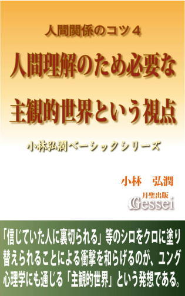 人間が大きな衝撃を受けたり混乱に見舞われるケースとして「それまで隠されていたものが明らかになった」という状況があると言えます。
例えば「浮気の発覚」という問題があります。新聞に掲載される人生相談コーナーでは「パートナーの浮気が発覚したがどうすればいいか」という相談がよく載りますが、そうした相談の中には「パートナーを絶対に許さない」とか「浮気相手を殺してやりたい」というような激しい怒りや憎悪の感情に満ちているものも見かけます。そうなってしまう理由は「パートナーの浮気」を知らされた人が大きな衝撃と混乱に見舞われるから、という言い方ができると思います。
なぜ浮気の発覚がそこまでの衝撃と混乱をもたらすのかと考えてみた場合、「過去の長い間、それまでシロ（パートナーは浮気をしていないという認識）だと判断してきたことが、すべてクロに塗り替えられてしまった」ことが大きいと言えます。
これは「パートナーの浮気」ではなく「親の浮気」が発覚したことがわかった際の子供（50代の主婦の方）が受けた衝撃の大きさが出ている話ですが、実家に帰省した際にタイから届いた手紙を偶然見つけたので調べてみたところ、50年ほど前にその人の父親が単身赴任先のタイで女性をつくって子供ももうけていたことが判明したようです（母親は当時から知っていたらしい）。その方は父親から「世間に迷惑をかけない人間になれ」と説教されて育ってきたこともあって怒りでいっぱいになり、父親に問いつめても「今さらほじくり返しても仕方がない」の一点張りとのことで、妹は高齢の母の気持ちを考えて「そっとしておこう」と言っているものの、「事実を隠してウソを突き通してきた両親が許せない」「父を懲らしめてやりたいという気持ちと、残りの人生が少ない父を許すべきという気持ちがあり、心が乱れ、変になりそうです」という言い方をしていたものです。
普通はこうした浮気の発覚によって一番苦しむのはパートナーの人（このケースではこの人の母親）と言えるので、「父親が許せない」ではなく「両親が許せない」という言い方をしているこの人が相当感情的になっていることが感じられますが、そうした衝撃と混乱は「50年間シロだと思ってきたことがクロに塗り替えられた」ことから生まれているという言い方ができると思います。
こうした「シロがクロに変わったことによって大きな衝撃や混乱に見舞われる現象」は身近なところにも結構あると言えますが、この本では「こうした現象によって生じる人間関係の苦しみ」を少しでも軽減させる考え方を紹介してみたいと思います。それは「主観的世界の自覚」という考え方です。
これは「自分が見ているものは自分の主観的フィルターを通したものでしかなく、最初から偏っているのだと自覚する」という考え方で、端的に言いますと「自分の認識は狭くて偏っているもので、完璧ではないと自覚する」ということです。
新約聖書には「自分を高くするものは低くさせられ、自分を低くするものは高くさせられる」（ルカ伝18・14）という言葉がありますが、面白いことに「自分の認識は狭くて偏っている」という自覚が持てれば「結果として広い認識ができるようになる」と言えるのに対し、逆に「今の自分の認識は完璧だ」としか思えない人の場合「狭い世界の中に閉じこもったままで成長できなくなってしまう」と言えます。
私が使っています「主観的世界」という概念は、世間で言われる「心」という概念に近いのでこれ自体なら理解しやすいと思いますが、それでいて「主観的世界の自覚」という発想は世間ではまったく言われていないと思います。
ただ、この発想を理解できるかできないかの違いは大きく、さらにこうした発想に基づいて自身の価値観や世界観を造り替える「心の再構築」ができるようになりますと（この本の第二章で紹介）、「シロをクロに塗り替えられることによる衝撃や混乱」が最小限に抑えられるようになると思います。参考になれば幸いです。
人間関係のコツ５ 人を信じるとはどういうことか
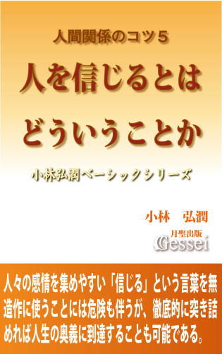 今の日本人に対してはよく「宗教には疎く、他国と比べて無宗教の人が多い」という論評がされます。しかしそれは表面上のことであり、一見無宗教に見える人であっても「実質的な宗教心」は様々なところで持っているものです。
例えば、様々なところで聞かれる「最後まであきらめてはいけない」とか「信じれば奇跡が起こる」という発想は一種の宗教だと思います。特に前者はほとんど〝国是〟とか〝国教〟になってしまった感があり、私はこうした思考形態を「最後まであきらめない教」と呼んでいますが、おそらくこの新興宗教に所属する信者さんは１億人を超えると思います（場合によっては、こういう茶化した言い方に対して「国賊だ！」と糾弾されるかもしれないな、と思ってしまう）。
後者の「信じれば奇跡が起こる」という発想については、個人的に「４年に１度は大きく話題になる風物詩」という印象を感じており、というのも「サッカーワールドカップ（Ｗ杯）に出場した日本代表が敗退しそうになった時に必ず出てくる言葉」と言えるからです。
本文でも書きましたが、2006年のドイツ大会で日本代表が敗退しそうになった際にテレビに出演した解説者の方から「日本代表を信じていますので勝つ確率は100％です！」という話が出ていましたし、2014年ブラジル大会では選手の側から「ミラクルは信じている者にしか訪れないと思っている」とか「奇跡を信じない人には奇跡は起きない」というかなり真面目な発言が出ており、多くの日本人がこうした発言に熱烈に賛同していたものです（この発言は電子書籍『サッカー日本代表を惨敗させた「信じれば奇跡が起こる」の弊害』でも紹介）。
この「信じれば奇跡が起こる」という発想に対して私などは「まさに宗教の発想そのもので、日本人は本当に宗教心篤いんだな」という思いになります。これは皮肉ではなく本心（少なくとも半分程度は）で言っているところがあり、というのも「信じれば奇跡が起こる」という発想を本気で信じている日本人というのはキリスト教の影響を受けた欧米人よりも「宗教心が篤い」ことは間違いないからです（サッカー本でも指摘したが、キリスト教というのは「イエスが十字架で殺される」という厳しい現実を認めることから出発した宗教であり、キリスト教の影響を受けた人は誰でも「信じても奇跡が起きないことがある」という現実感覚を持っていると言えるから）。
ただ、こうした「宗教心」というのはともすれば「現実感覚を失って暴走してしまう」という側面も持っており、それが極端な形で現象化したのが「信じれば奇跡が起こる！」とか「必勝の信念さえあれば勝てる！」という精神論に多くの日本人が支配されて破滅への道を歩んだ「太平洋戦争の敗戦」だと思います。
サッカー日本代表が敗退寸前になる度に「信じれば奇跡が起こる」という声が出て熱狂の渦が巻き起こる状況というのは「また太平洋戦争のような破滅への道を歩んでもおかしくない」ことを意味しますが、今後の悲惨な未来を防ぐためにはこうした発想に対してできるだけ「現実感覚」とか「冷静な分析」を加えることだと思います。
例えば「信じる」という概念がありますが、私は「信じるという言葉は無造作に使うべきではなく、できるだけ慎重に扱った方がいい」と思っている人間です。なぜそう思っているかと言いますと、「信じる」という言葉には「人間の感情を集めて蓄積しやすい特徴」があり、集まったエネルギーが方向性を間違えると暴走しやすい〝危険な言葉〟だからです。
この本で紹介している「人を信じる」という概念に対する詳しい解説を通して「信じるという言葉を無造作に使うことの危険性」だけでなく「人を信じることの奥深さ」を少しでも感じてもらえれば幸いです。
情報処理のコツ１ 本当の頭のよさとは何か
 この本（シリーズ）のタイトルとして使っている「情報処理」という言葉はコンピューター関係の「情報処理」のジャンルのことではなく、もっと広い意味での「情報」や「知識」のことを指します。
この本（シリーズ）のタイトルとして使っている「情報処理」という言葉はコンピューター関係の「情報処理」のジャンルのことではなく、もっと広い意味での「情報」や「知識」のことを指します。
そうした「情報や知識」をどう処理して使いこなすか、ということがこのシリーズのテーマで、言葉を換えますと「勉強（学校の勉強ではなく一般的な意味での勉強）のやり方の紹介」ということでもあります。
こうした「一般的な勉強のやり方」は世間でも様々に語られていますが、そうしたものに対して私としては「知識が断片的で、相互につながりが感じられないものばかり」という印象を持っています。一般的な勉強のやり方の具体論としては、「読書のやり方」「新聞、雑誌の読み方」「インターネットでの情報の集め方」「人の話の聞き方」「考える力のつけ方」などがあげられますが、それぞれの断片的なやり方を述べたものは数多く世に出回っていながら、「これらの知識がつながってすっきり理解できるガイド」のようなものはほとんどないのでは、と思っています。
個人的に、こうした「一般的な勉強のやり方」を紹介する際に真っ先に押さえなければならないことがあると思います。それは「一般的な勉強のやり方は、学校の勉強や受験勉強のやり方とは違う」という視点です。世間にあふれているものを見ると、この視点が押さえられていないだけでなく、「一般的な勉強」と「学校の勉強、受験勉強」の区別すらついていないことが非常に多いと思います。
世間では「学校の勉強ができる＝頭がいい」とか「学校の勉強ができればどんな勉強もできる」というような、「学校の勉強と一般的な勉強を同一視した観念」が無造作に信じられていて、多くの人がそれに影響を受けていると思います。
もちろん、学校の勉強ができることは悪いことでも何でもなく、学校の勉強ができるよう努力することは大事なことではありますが、「学校の勉強と一般的な勉強を同一視する観念を信じることが多くの人の悩みや苦しみを生んでいる」こともまた事実だと思います。
かく言う私も、こうした観念を無造作に信じていた時期が長くあったものです。高校卒業後は大学に進学しましたが、世間ではそこそこ優秀と評価されていた大学だったので「そういう大学に入れた自分はそれなりに頭がいいということだから、かなりの勉強はできるはずだ」と思っていたものです。ところが、大学の勉強は高校までにやっていた受験勉強とは勝手が違ってなかなか理解が進まなかったものです。
当時の私は「大学の勉強が理解できない」という現実にどう対処していいかわからず、何度も途方に暮れたものです。ある時、大学の授業で「指定された本を読んでレポートを書く」という課題が出されたのですが、その本を読もうとしても難しくてまったく進まず、数ページほど読んだところで「なんでわからないんだろう......」と泣きそうになったことを今でも覚えています。
こうした「学校の勉強ができる＝頭がいい」の他にも、世間では様々な観念が信じられています。例えば「記憶力がいい＝頭がいい」とか、「勉強とは、知識をひたすら頭に入れることだ」とか、「難しい本や文章を読み書きできるためには特殊な才能が必要で、そういう人ほど頭がいい」とか、「一度覚えた知識は頭の中に残さねばならない」とか、「本や文章は最初から最後まで順番通りに読むものだ」というようなものです。こうした観念は昔から根深くあるために多くの人が信じているのでしょうが、私はこうした観念は「偏見」だと思います。
こうした「学校の勉強ができること＝頭がいいこと」などの偏見から自由になれた時、「勉強」というものに対するイメージが一変すると思います。少なくとも私の場合、自分なりの「効率的な情報処理のやり方」を作り上げたことでこうした偏見を脱することができ、現在では「勉強とは実に面白く、楽しいものだ」という意識で毎日を過ごすことができています。
大学時代は「自分はなんて頭が悪いんだろう」とさんざん悩んだものでしたが、今は「そんな時代もあったな」という懐かしい気持ちになります。ちなみに今、大学時代はまったく読めなかった難しい本を読めと言われた場合、第二章以降で詳しく紹介する「情報処理のプロセス」を実践することで一時間で読める自信があります（もっとも、その本に一時間かけて読むに足りる内容があればの話だが）。
読まれた方にとって、この本が「一般的な勉強のやり方がすっきり理解できるガイド」となり、さらに「学校の勉強ができること＝頭がいいこと」などの偏見から自由になるきっかけの役割を果たせれば、と思っています。
（2014年12月時点での補足）この『情報処理のコツ』シリーズ（全６巻予定）は、紙の本として刊行しました『情報処理のコツ』『情報処理のコツ・パート２』『情報による支配から離脱する方法』を電子書籍化した内容で、一部加筆訂正しているところもあります。
『人間関係のコツ』シリーズと同様、かなり昔に執筆したにもかかわらず「時代や社会情勢が変わったから通用しなくなった」と思える話はほとんどなく、今後数十年、数百年先の時代になっても役に立つ知識が含まれていると思います。さらにこの内容は『人間関係のコツ』シリーズと合わせて、月聖出版の本の中でも土台を作っている部分ですので、「他の本に盛り込んだ様々な考え方の基礎はここにある」ことを感じてもらえればと思っています。
『情報処理のコツ』シリーズ構成（続編構想もあります）
第１巻「本当の頭のよさとは何か」
第２巻「人はなぜ物語に惹かれるのか」
第３巻「努力とやり方を両立させた基礎的な実践論」
第４巻「事実と解釈を区別することの大切さ」
第５巻「証明とは何か」
第６巻「真実とは何か」
第７巻「拉致問題の分析」
第１巻 「学校の勉強ができなかった自分は頭が悪い」という観念が偏見であることを論証し、大人になっても通用する勉強法や効率的な情報処理のノウハウを紹介。
情報処理のコツ２ 人はなぜ物語に惹かれるのか
 現代社会というものは、的確なノウハウを知らなければ処理がしきれないほどの大量の知識や情報であふれています。世間にあふれている知識や情報をどう受け止めて処理すればいいかという「情報処理」に関する本や文献は様々なものがあると思いますが、表面的な枝葉末節のことばかりを強調したノウハウ本が多く、「本質的なところから入り、基礎ががっちりした安定感があり、かつ奥深いものを含んだ内容」というものはほとんど見かけないと思います。「学校の勉強、受験勉強」ではない「一般的な勉強」というものは短期間で終わるのではなく、一生を通して続くものですから、「人生の早い時期に、大量の情報を効率的に受け止めて処理できるやり方をがっちり固めることができるかどうか」は非常に大きいと思います。
現代社会というものは、的確なノウハウを知らなければ処理がしきれないほどの大量の知識や情報であふれています。世間にあふれている知識や情報をどう受け止めて処理すればいいかという「情報処理」に関する本や文献は様々なものがあると思いますが、表面的な枝葉末節のことばかりを強調したノウハウ本が多く、「本質的なところから入り、基礎ががっちりした安定感があり、かつ奥深いものを含んだ内容」というものはほとんど見かけないと思います。「学校の勉強、受験勉強」ではない「一般的な勉強」というものは短期間で終わるのではなく、一生を通して続くものですから、「人生の早い時期に、大量の情報を効率的に受け止めて処理できるやり方をがっちり固めることができるかどうか」は非常に大きいと思います。
電子書籍『情報処理のコツ１ 本当の頭のよさとは何か』の内容は、現代社会を生き抜くために必要な「効率的な情報処理のやり方」に関する基礎的な話を網羅した内容ですが、こうした基礎を押さえた後で重要なことは「自分を取り巻く世界の開拓をする」ことだと思います。
しかし、そのためにはやみくもに世界の中を突っ走るのではなく、まずは「自分を取り巻く世界がどういう姿をしているのかを知る」という発想が必要だと思います。
こうした「自分を取り巻く世界を知るための、情報媒体の知識と受け止め方」として、『情報処理のコツ１』では「本、新聞、テレビ、人」に関する話を一通り述べてみましたが、現代社会で大きな比重を占める情報としてさらに押さえておく必要があるのは、「物語」というジャンルの情報だと思います。
現代社会で氾濫している数多くの情報の中から、価値ある情報を効率的に集めるためには、この「物語」というものが持つ特性を把握して的確な受け止め方をする必要があります。そこでこの『情報処理のコツ２ 人はなぜ物語に惹かれるのか』では「物語」の特性と受け止め方に関する話を紹介してみたいと思います。
世間によくある「物語論」の本では、事例として引用されるのはたいてい「世界の名作文学」とか「歴史と伝統のある有名古典」に関する話と言えますが、この本では「現代日本の漫画やアニメ作品の引用や紹介」を頻繁に行っています（例えば、『ドラえもん』『人魚の森』『機動戦士ガンダム』など）。こうしたやり方については「私自身が子供時代からそれらの作品に親しんできたから」という事情もありますが、そうした個人的な情緒や感情がなくても「少なくとも後世の世界で物語論を展開する際にレベルの高い物語の事例を出そうとした場合、日本の漫画やアニメには触れざるを得ないだろうな」という思いになります。
これは電子書籍『世界最大のベストセラー・聖書の問題点１』でも触れた視点ですが、私は日本の漫画作品（アニメも含む）というのは「世界史上の様々な傑作文学（物語）の中でも群を抜いてレベルが高く、ノーベル文学賞をゴロゴロ受賞してもおかしくないほどの高レベル」だと思っています。
私としては「多くの人に日本の漫画やアニメのレベルの高さを感じてもらうためにも、今度もさらに具体的な物語論を展開していく必要があるな」という思いを持っています。参考になれば幸いです。
情報処理のコツ３ 努力とやり方を両立させた基礎的な実践論
 この『情報処理のコツ３ 努力とやり方を両立させた基礎的な実践論』は、電子書籍『情報処理のコツ１ 本当の頭のよさとは何か』『情報処理のコツ２ 人はなぜ物語に惹かれるのか』に続く、「情報処理のコツ」シリーズの第３弾になりますが、2006年５月に月聖出版刊の紙の本として刊行した『情報処理のコツ・パート２』の第一章と四章をベースにして、加筆訂正した内容になっています。
この『情報処理のコツ３ 努力とやり方を両立させた基礎的な実践論』は、電子書籍『情報処理のコツ１ 本当の頭のよさとは何か』『情報処理のコツ２ 人はなぜ物語に惹かれるのか』に続く、「情報処理のコツ」シリーズの第３弾になりますが、2006年５月に月聖出版刊の紙の本として刊行した『情報処理のコツ・パート２』の第一章と四章をベースにして、加筆訂正した内容になっています。
内容は、第一章が情報処理を効率的に行うためにも力を発揮する「重要だと判断したところに労力をかける」「労力とやり甲斐のバランス」等の物事に取り組む際の基礎的な実践論に関する話で、第二章がカント哲学における「世界は主観による構成物だと考えることで初めて客観的な認識が成立する」という問題提起に対する分析も含めた「認識論」に関連する話ですが、第一章が「実践」に比重が置かれた話になっているのに対し、第二章は「理論」中心の話になってしまったため、全体を通して一つの流れがつかめるような内容にはなっていないことを最初に断っておきます。
第一章で紹介した実践論の中で中軸になるのが「労力とやり甲斐のバランス」という発想ですが、本文でも書きましたようにこの発想が世間でほとんど語られないことに対して私としてはいつも不思議に思います。
この「労力とやり甲斐のバランス」とは、その物事をやるためにかけた「労力」と、それをやることによって得た「やり甲斐」を比較してみて、「労力以上のやり甲斐が得られるように調整する」ということで、労力よりもやり甲斐の量が大きければ「やる気も出るし、長く続く」と言えますが、労力の量がやり甲斐を超えてしまった（労力過多）場合は「やる気が出ずに挫折しやすくなり、結局続かない」ということです。
この発想は「家庭における家計、会社における経営収支、政治などにおける予算の収支（財政）」における基本的考え方である「収入と支出を比べて、収入が支出より多ければ黒字になって続き、支出の方が収入を超えてしまった場合は赤字になり、結局続かない」こととまったく同じなので、こうした説明の仕方をすれば「当たり前の話だな」と感じてもらえると思います。
ところが、なぜか世間では「やる気を出し、物事を続けるためにはどうすればいいか」という観点においてこの発想がほとんど出てこないので、私としてはいつも「なぜこの考え方が世間でもっと取り上げられないのか、不思議で仕方がない」という思いになります（私がこの発想に明確に気づいたのは2002年頃だが、それから13年以上の年月が経ってもなお世間では「細かな技術論」とか「一面的な精神論」とか「環境によって左右される事柄」が幅をきかせている雰囲気がある）。
あと、第一章の最後では「目標の立て方」に対する個人的考え方も紹介していますが、これも世間の主流とは違った異端的な発想になっていると思うので（世間の主流は「目標を立てないと意欲は出てこない」というものだが、個人的には「無理して目標を立てる必要はない」と思っている）、「こういう世間の主流とは違う意見には面食らったり、まったくピンと来ない方もいらっしゃるかもしれないな」という思いになることもあります。
ただ、情報処理（一般的な勉強）に限らず、人間関係に限らず、私の考え方は「お題目やスローガンや精神論を極力排除し、徹底的に現実を見据えた冷静で合理的な姿勢」から生まれていると思っているので、その点に関しては多くの方々の賛同をいただけるのではないか、とも思っています。
そうした「現実的で冷静な視点」の事例としては、第二章で紹介しました「イエス・キリストを熱心に信仰している情熱的なクリスチャンであっても、同時代同地域に生まれたら99％以上の人は無関心のまま終わるだろう」とか「民主主義とは絶対普遍の政治制度ではない」というような（ある意味シニカルな）指摘があげられると思いますが、こうした発想が他の本の主張にも影響しているところがあり、原始キリスト教やイエスに関しては『イエスと弟子たち』シリーズ、民主主義に関しては電子書籍『社会の学び方・政治経済編２』で詳しい話を展開しているところがあります。
また、この第二章で紹介しました「客観的な認識と判断する際の基準」に関する発想が電子書籍『情報処理のコツ４ 事実と解釈を区別することの大切さ』の内容につながっていたり、「各人は独自の主観的世界を作っている」という発想が電子書籍『人間関係のコツ４ 人間理解のため必要な主観的世界という視点』の話に関連しているので、そうした様々な本の内容とどうつながっているか、というところにも注目していただければと思っています。
どの項目も私自身が様々な経験を通して実践し、理論化していった内容ですので、相応の説得力は込められたと思っています。最初は理解できなくても、長い目で見れば役に立つ話がいくつかあると思いますので、参考にしていただければ幸いです。
情報処理のコツ４ 事実と解釈を区別することの大切さ
 「事実とは限らないこと（解釈）」に対して「事実」という受け止め方をすることを「思い込み」と言いますが、この「思い込みによる弊害」は様々なところで起こっています。「キリスト教会の関係者が卒倒しかけるほどの衝撃を受けた」という事例はそれほど大きな問題ではなく、時には思い込みによって「殺人」や「戦争」という事態が起こってしまうこともあります。
「事実とは限らないこと（解釈）」に対して「事実」という受け止め方をすることを「思い込み」と言いますが、この「思い込みによる弊害」は様々なところで起こっています。「キリスト教会の関係者が卒倒しかけるほどの衝撃を受けた」という事例はそれほど大きな問題ではなく、時には思い込みによって「殺人」や「戦争」という事態が起こってしまうこともあります。
こうした状況に対し、「思い込みによる弊害を防ぐためにどうすればいいか」ということは世間でほとんど言われていないと思います。
私は「事実という概念と解釈という概念を対にして提示する発想」を05年２月に刊行した紙の本『情報処理のコツ』の時から行っているのですが、最初の頃はこの視点が「これだけで本一冊が書けるほどの重要なものになる」とはまったく思っていませんでした。ただ、様々な角度から考えてみますとこの視点には相当奥が深い要素があり、さらに「特殊な世界の発想ではなく、日常生活や人間関係の中でも頻繁に実践する機会がある」という印象を感じています。
「本当かウソか」の認識パターンを当てはめていいケースというのは「答えが一つに確定できる状況」に限られます。例えば「１＋１＝２である」という情報の場合、これは「１＋１」という計算の答えが「２に確定できる」（その他の答えはありえない）状況であるため、「１＋１＝２であるのは本当か？」と聞かれた場合は「本当かウソか」の認識パターンで考える必要があります。それに対して、「答えが一つに確定できずにいくつもの答えが成り立つ状況」で「本当かウソか」の認識パターンを当てはめた場合は問題が生じます。
つまり、情報が「答えが一つに確定できる事実」である場合は「本当だ」か「ウソだ」という二つのどちらかを選ぶという発想をしていいのですが、情報が「答えが一つに確定できない解釈」であった場合は「安直に本当かウソかという認識パターンを当てはめてはいけない」と言えるということです。
事前に「情報の中には複数の答えが成り立つものもあり、その場合は本当かウソかという判断はできない」ということを明確に意識し、「情報が事実か解釈かを区別し、答えが一つに確定できない解釈だと判断したら本当かウソかの認識パターンを当てはめない」という発想をすることです。
～「2 真偽が判断できない情報は「本当かウソか」ではなく「可能性の問題」で考える必要がある」より
情報処理のコツ５ 証明とは何か
 「証明」と言いますと、「数学の教科書に出てくる難解な問題」という堅苦しいイメージが出てくると思うので、「自分たちには関係ない特殊な世界の話」という感じになってしまうと思います。ただ、私としては「証明に関する知識は一般レベルでも絶対に必要で、この知識を知っているかどうかはその人の人生に影響するほどの問題かもしれない」という印象を感じています。
「証明」と言いますと、「数学の教科書に出てくる難解な問題」という堅苦しいイメージが出てくると思うので、「自分たちには関係ない特殊な世界の話」という感じになってしまうと思います。ただ、私としては「証明に関する知識は一般レベルでも絶対に必要で、この知識を知っているかどうかはその人の人生に影響するほどの問題かもしれない」という印象を感じています。
この本の後半では「確定できない事実」という応用的な視点を提示するなど、かなり突っ込んだ説明もしていますが、私は「この内容を本にしてから５年が経つが、特に『確定できない事実』という概念を的確に理解できている人はおそらく一人もいないだろうな」と思っています（というより、私自身も理解できている自信はありません）。
『事実と解釈を区別することの大切さ』もそうですが、この『証明とは何か』の話を電子書籍化した理由は、「この内容を埋もれさせるにはあまりにももったいないので、何とかして多くの人の目に触れさせたい」と思ったからです。著者として「一人でもいいから、深く理解してくれる人が出てくれると嬉しいのだけどな」という思いを持っています。
最初は「学問的・科学的思考」ができていた研究者や科学者であっても、様々な事情によって「学問や科学の仮面をかぶった個人的信仰」を他の人に押しつける傾向に陥ってしまうことはどうしてもあるものです。
既存の宗教における信仰の場合は「実際は〝解釈〟でしかないことを〝確定できない事実〟として処理し、それを安易に一般化したり他の人に押しつける」という傾向があると言えますが、科学の陣営が行う「信仰の押しつけ」の場合は「科学の権威に便乗してごり押しするやり方」と「実際は〝自称証明〟でしかないものを、〝証明〟と偽って信じ込ませようとするやり方」が多いと言えます。
宗教であっても科学であっても、「証明で確定した事実でない限りは解釈（可能性の問題）として考え、可能性がある以上は自分たちが押しつけるのではなく各人の判断に任せるべきだ」という姿勢が大事で、証明ができていないことに対して「確定できない事実というものもあるのだから、自分たちが事実と認定したものは他の人にとっても事実なのだ」とか「これは証明で確定した事実なのだから、すべての人は自分たちの意見に賛同すべきだ」という発想をする人に対しては「それは学問的・科学的態度ではなく信仰の押しつけである」と断言しておきたいと思います。
～「10 自称証明でしかないものを事実と主張するのは科学的態度ではなく「信仰の押しつけ」である」より
情報処理のコツ６ 真実とは何か
 2014年5月、連載漫画「美味しんぼ」における「福島の真実編」というシリーズで描かれた、福島原発事故に対する放射性物質の健康への影響に関する描写が世間で物議を醸したものです。
2014年5月、連載漫画「美味しんぼ」における「福島の真実編」というシリーズで描かれた、福島原発事故に対する放射性物質の健康への影響に関する描写が世間で物議を醸したものです。
世間での批判や抗議に対して漫画の原作者の雁屋哲氏は自身のブログで「私は自分が福島を２年かけて取材をして、しっかりとすくい取った真実をありのままに書くことがどうして批判されなければならないのか分からない」「私は真実しか書けない。自己欺瞞は私の一番嫌う物である」という強硬な反論をしていましたが、それによってこの「美味しんぼ騒動」を巡る議論はさらにエスカレートしていった雰囲気があります。
私は、福島原発事故に対する放射性物質の健康への影響に対して、綿密に調べたわけではありませんが、そうした私であっても明確に断言できることがあります。
それは、原作者の雁屋氏という人は「『自分にとっての事実』と『客観的な事実』の違いがわかっていない」ということです。
雁屋氏の場合はもう一つ「『事実』と『真実』の違いもわかっておらず、両者を的確に使い分ける意識を持っていない」ということも言えます。それはこの人の「真実をありのままに書くことがどうして批判されなければならないのか分からない」という発言から判断できるのですが、私はこの騒動に接していて「雁屋氏に限らず、この『事実と真実の違い』についてはわかっていない人が多いのだろうな」という印象を感じたものです。
「真実」という言葉には、「人々の感情をかきたてて冷静さを失わせてしまうほどのエネルギー」が含まれているところがあり、この言葉を無造作に使ってしまった場合は様々な問題が起きやすいと言えます。その意味で、真実という言葉を分析することは世間で起こる様々な問題の本質を探るためにも重要である、と言っておきたいと思います。
私は雁屋氏の問題というのは、「福島の真実編」とか「私は真実しか書けない」というような、「真実という言葉を無造作に使ってしまったこと」と、「この言葉を無造作に使うと混乱が起こることがわからなったこと」に尽きると思っています。真実という言葉を無造作に使ってしまった場合、この言葉が持つ「絶対的なイメージ」に引っぱられてしまうので、仮に本人が「決めつける意図」を持っていなくても、結果的に「この人は、福島は人が住むべきではないほど危険だと決めつけている」という印象になってしまうのです。
もし雁屋氏が「これはすべての人に通用する事実だ」とか「これこそが唯一絶対の真実だ」という言い方をせず、「あくまでも解釈の一つ」というスタンスの情報発信をしていた場合、抗議や批判はここまで大きくなっていなかったと思います。
～「5 雁屋氏の問題は「真実という言葉を無造作に使うと混乱が起こる」ことがわからなかったことに尽きる」より
情報処理のコツ７ 拉致問題の分析
 2002年９月17日に行われた日朝首脳会談によって国民的話題になった「拉致問題」（北朝鮮による日本人拉致問題）は、その後13年以上の歳月が経過した2015年時点でも未だに解決されていないと言えますが、この『情報処理のコツ７ 拉致問題の分析』では拉致問題を「認識論や情報操作の事例」として扱ってみたいと思っています。
2002年９月17日に行われた日朝首脳会談によって国民的話題になった「拉致問題」（北朝鮮による日本人拉致問題）は、その後13年以上の歳月が経過した2015年時点でも未だに解決されていないと言えますが、この『情報処理のコツ７ 拉致問題の分析』では拉致問題を「認識論や情報操作の事例」として扱ってみたいと思っています。
拉致問題に関しては現在でも時おりマスコミで報じられるのでご存じの方も多いと思いますが、それでいて当時の日朝首脳会談を報じたニュースによって日本中に伝わった「衝撃」をどれだけの人が覚えているかなあ、という思いになります。特に02年９月の時期に「当時の世論の状況が判断できる年齢ではなかった若い人」の場合、こうした話に対しては「北朝鮮が日本人を拉致したことなんて当然なんだから、衝撃なんて受けるの？」というような印象を持たれたかもしれませんが、私としては「若い人だけでなく、当時の報道に接して何らかのショックを受けた人であっても、あの時の〝衝撃〟が既に薄れてしまっている人は少なくないのでは」と思ってしまうところがあります。
そこで、「北朝鮮という国は日本人を平気で拉致するひどい国家だ」という認識を当たり前のように持たれている若い方に対して、こうした話を紹介してみたいと思います。
「北朝鮮は地上の楽園である」
おそらく現時点（2015年現在）の日本人の中で、「この話は本当だ」という判断をされる方はまずいないと思います。しかし、今から50年ほど前の日本では、この情報を「本当だ」と判断した方が少なくなかったようです（推測だが、1960年頃の時期に限れば90％以上の日本人がこの情報を「本当だ」と思っていた可能性もある）。そのことは、1959年から84年にかけて行われた「９万人以上の在日朝鮮人や日本人妻らが北朝鮮に帰った〝北朝鮮帰還事業〟」なるものを日本の大半のマスコミが人道事業として歓迎し、「北朝鮮は本当に素晴らしい国だ」というような報道をしたことに出ています。
02年の日朝首脳会談で北朝鮮が日本人拉致を〝自白〟したことで、それまでの日本人の中にあった北朝鮮に対する「地上の楽園国家」イメージが、「犯罪国家」イメージに激変してしまったと言えますが、私はこの「02年の日朝首脳会談によって日本人の北朝鮮に対するイメージが激変した様子」を思い出す度に「各人の主観によって作ったイメージを安直に事実や真実などと思い込まない方がいい」とか「人間の認識なんていい加減なものだから、一夜にして認識がひっくり返ってしまうようなことは他にもいくらでもあるだろうな」という思いになります。
最近気づいたのは「（02年の日朝首脳会談のような）人々の認識が激変する事件が起きても、時間が経つとその事件が起こる前に抱いていた認識は忘れてしまうものなんだな」ということです。例えばマスコミで拉致問題に関するニュースが流れる際に「それまでの拉致問題の歩み」が紹介されることもありますが、たいていは「まずは02年の日朝首脳会談があり、その後で被害者４人が帰国し、08年には再調査の約束をしたがその後は進展していない」という話になり、「02年以前の話はほとんど紹介されない」というものになると思います。
個人的には以前から「拉致問題というのは人々の認識が激変した典型的な事例だから、報道する側はその部分をクローズアップした方がいいのでは」という思いを持ってきたのですが、考えていく中で「02年以前の話を取り上げようとしない人々の心理」が見えてきたところがあります。
あと、拉致問題（それによる北朝鮮のイメージ）というのは「02年の日朝首脳会談によってシロ（北朝鮮は素晴らしい国で、拉致などするはずがない国）がクロ（平気で日本人を拉致していながらそれを隠蔽してきた犯罪国家）に塗り替えられた事例」と言えますが、こうした事例は国家レベルだけでなく身近なところにも様々にあると言うことができ、例えば電子書籍『人間関係のコツ４ 人間理解のため必要な主観的世界という視点』のまえがきでは「浮気の発覚」という問題を取り上げています。
パートナーや家族の浮気が発覚した場合、「それまでシロだったものがすべてクロに塗り替えられる」ことになるため、当事者の方々は相当な衝撃や混乱に見舞われると言えます。そして一度そうした経験をしてしまった人の場合、心のどこかで「また同じようなことがあるのではないか。自分としてはシロだと思っていることの中でも、ふとしたきっかけで隠されたものが発覚してシロがクロに塗り替えられてしまうのではないか」という不安がくすぶってしまうと思います。
ある意味、「隠されたものが発覚したことでシロがクロに塗り替えられ、関係者が衝撃を受けた」という部分では拉致問題も浮気の発覚も本質は同じだと思うのですが、世間ではこうした視点はまったく言われないと思います。私はこうした「世間で本質が議論されない状況」を以前から不思議に思っていたのですが、少しその理由が見えてきたところがあります。
簡単に言いますと「怖いから」だと思います。拉致問題も浮気の発覚も「それまでシロだと思ってきたものがクロに塗り替えられた」という点では共通していますが、人間社会というのは信頼関係で成り立っているため、それを支える根本的なところで「シロをクロに塗り替えられる」という事態になってしまった場合、社会（さらには人間そのものも）を支える土台が崩壊してしまうことになると言えます。だからこそ、人々はこの「隠されたものが発覚してシロがクロに塗り替えられる」ことを本能的に恐れているのだと思います。
逆に言いますと、この「隠されたものが発覚して秩序が崩壊するのを恐れる」という人々の心理を知ることが「各人の主観的世界を根本から作り直す」だけでなく「社会を根本から変革する」ために必要不可欠な要素になるという言い方もできると思います。参考になれば幸いです。
日本のマスコミの実態１ 報道の受け止め方と権力としてのマスコミ
 日本では「新聞」に対する国民の信頼度が以前から高いと言われています。2005年12月に読売新聞が報道した日米共同世論調査によりますと、「信頼している自国の組織や公共機関は」という質問に対し、「１位は、日本では新聞で64％、米国では軍隊で81％」「ともに2000年以降６年連続で１位だった」という結果が出たようです。
日本では「新聞」に対する国民の信頼度が以前から高いと言われています。2005年12月に読売新聞が報道した日米共同世論調査によりますと、「信頼している自国の組織や公共機関は」という質問に対し、「１位は、日本では新聞で64％、米国では軍隊で81％」「ともに2000年以降６年連続で１位だった」という結果が出たようです。
その後も新聞に対する信頼度は高水準を保ってきた雰囲気があり、朝日新聞問題が起こって「朝日だけでなく新聞全体の信頼性が揺らいだ」後の2014年10月に行われた世論調査であっても「新聞の報道を信頼できる」とする人は80％、「新聞はこれからも必要だ」と考える人は89％、「事実やいろいろな立場の意見などを公平に伝えている」は58％という結果になったようです（それでもこの58％という数字は、「この質問を始めた1991年以来、初めて６割を切った」というものらしい）。
あくまでも個人的な印象ですが、私はこうした「新聞に対する信頼度が以前から高い」という話には違和感を覚えてしまうところがあり、こうした結果に対しては「新聞の実態とはかなり違うのでは」という気持ちになってしまいます。
私はこれでも新聞に対しては並々ならぬ思いを持っていたところがあり、以前は「新聞投書の常連」とか「記事のスクラップブック200冊」という大の新聞ファンだった人間です。そういう人間でありながらこうした「新聞の報道は信頼できるしこれからも必要だと答える人が80％とか90％」という話に対しては、「こういうのは『新聞は堅実で慎重な報道をしている』という昔からあるイメージの影響でしかなく、今の新聞報道の実態とはまるで違うんじゃないか」という気持ちになってしまうところがあります。
ある新聞の信条に「真実を追求する公正な報道、勇気と責任ある言論により、読者の信頼にこたえる」というものがあるようです。世間ではこうした新聞社の方針を受けて「新聞の役割は真実を追求することのはず」という声を聞くこともあるのですが、私はこうした声を聞くと「世間では、こうしたマスコミの宣伝文句を鵜呑みにしてしまう人が結構いるんだな」という思いになります。
この『日本のマスコミの実態』（全２巻）では、まずは個人的に考える「マスコミ報道の受け止め方」に関する話を基礎的な話を紹介し（第１巻）、さらに「朝日新聞問題」「新聞の消費税増税推進報道」「記者クラブ問題」などの話を紹介する中で（第２巻）、新聞を中心とする今のマスコミの実態に迫ってみたいと思っています。
ネットにおけるマスコミ批判の声を聞いていますと、ネットユーザーの中には、日本のマスコミに対して「マスゴミ」と呼称する人が結構いる雰囲気を感じますが、個人的には「マスゴミというのは蔑視表現に近いから、できるだけこの表現は使いたくない」という気持ちを持っています。
代わりに主張したいのが、「日本のマスコミは権力の監視機関ではなく権力集団だ」ということと、「不逮捕特権などの特権を持った特権階級だ」ということです。「マスコミは権力の監視機関」というのは彼らにとって都合のいい宣伝文句でしかなく、「それはマスコミの実態とはまったく違うという認識を持った方がいい」ということも強調したい気持ちがあります（ちなみに「権力集団」とか「特権階級」という表現は蔑視表現ではないつもり。本文にも書いたが、私は「権力」とか「特権」はそれ自体が悪いものだとは思っていないので）。
私としては「新聞の報道に対して70％とか80％くらいの信頼度を持っている」という方が、第２巻の最後まで読まれた後で「新聞に対する信頼度がどれだけ変わったか（上がることはないと思うので、どれだけ下がったか）」を尋ねてみたい気持ちがあります。あるいは、「新聞は十分信頼できる」という認識を持っている方にとってはショッキングな話も入っているかもしれませんが、「肝試し」程度の気持ちで読んでみるのも一興では、と思っています。
日本のマスコミの実態２ 朝日新聞問題と記者クラブ問題
 2014年８月から９月にかけて、朝日新聞による「慰安婦問題の発端になった吉田証言が虚偽だったことを認めたことから起こった問題」と「福島原発事故における吉田調書の報道が批判を浴び、記事撤回と謝罪に追い込まれた問題」が絡み合った「朝日新聞問題」が社会問題化し、中でも「朝日が30年以上、慰安婦問題の誤報（あるいは虚報、捏造）を認めなかった」ことに対しては「世紀の大誤報」とか「マスコミ史上最悪の捏造事件」というような認識さえ持たれて世間の猛反発を浴び、「朝日新聞の廃刊運動」にまで発展していると言えます。
2014年８月から９月にかけて、朝日新聞による「慰安婦問題の発端になった吉田証言が虚偽だったことを認めたことから起こった問題」と「福島原発事故における吉田調書の報道が批判を浴び、記事撤回と謝罪に追い込まれた問題」が絡み合った「朝日新聞問題」が社会問題化し、中でも「朝日が30年以上、慰安婦問題の誤報（あるいは虚報、捏造）を認めなかった」ことに対しては「世紀の大誤報」とか「マスコミ史上最悪の捏造事件」というような認識さえ持たれて世間の猛反発を浴び、「朝日新聞の廃刊運動」にまで発展していると言えます。
私はネットで展開されている「この問題で朝日批判を主張する人々の声」を様々に聞いてみたところがあるのですが、この問題に対しては「朝日だけが問題で他の新聞はそうでもない」という認識を持っている人と「朝日だけでなく新聞業界全体に問題がある」という認識を持っている人に分かれる、という印象を感じたところがあります。
保守の人の中には「悪の朝日ＶＳ正義の産経」というような、単純な二分法的構図でこの問題をとらえている人も結構いると思いますが、個人的な印象としては朝日批判をしている人の中でも数割程度は「新聞業界全体に問題があり、他の全国新聞に朝日を批判する資格はない」という認識を持っている感じがしたものです。
電子書籍『小沢一郎の政治とカネの疑惑と裁判を解明する』の中でも触れていますが、私は朝日新聞問題に対して「これは朝日だけの問題ではなく、今後マスコミ全体の信頼が失墜することになるほんの入口なのかもしれないな」という思いになったところがあります。
というのも、新聞（特に保守系の産経と読売）は小沢氏の政治とカネの疑惑に関して徹底的な偏向報道を繰り返したにもかかわらず、未だにそうした報道に対する訂正や謝罪をしていないからです。こうした「朝日新聞問題に対するマスコミの姿勢を小沢氏の事件に関連づけた論評」は世間でも多少は聞かれたところがあり、例えば「言論人の使命だと？ 陸山会事件のとき、検察リークを一方的に垂れ流し続け、執拗に小沢氏をバッシングしたのは誰なのか？ 胸に手を当てて考えてみろ」とか「朝日・読売・毎日・他新聞は小沢の冤罪報道は如何なんだ。謝罪報道したのか？」という意見を聞いたことがあります。
『小沢一郎の政治とカネの疑惑と裁判を解明する』ではこうした言い方をしてみたものです。
「ふたが開く」のがいつになるかはわかりませんが、「朝日新聞が、慰安婦問題が国際問題に発展するきっかけになった吉田証言が虚偽であることを30年経ってから認めざるを得なくなった」ことを考えますと、「（新聞が小沢氏に対する執拗な偏向報道を繰り返しただけでなく、間違った報道に対する訂正や謝罪をまったくしていないことが）いずれ白日の下に晒される」ことは間違いないと思います。朝日新聞は「30年以上訂正と謝罪をしなかった」ことで、その間積もりに積もった国民の不満が一気に爆発して「朝日の廃刊運動にまで発展している」と言えますが、マスコミの方々（さらには検察や裁判所も）はこの「朝日新聞の教訓」を学んだ方がいいと思います。
この『日本のマスコミの実態２』では、「朝日新聞問題」「新聞の消費税増税推進報道」「記者クラブ問題」等の事例を紹介していく中で、日本のマスコミの実態が「『実質的な不逮捕特権』などの特権を有する排他的な権力集団」であることを示してみたいと思います。
私はマスコミの内情に関する知識を持っている人間ではありませんが、この本は「マスコミの実態をほとんど知らない方が、マスコミの問題に関心を持ってもらうための入門書」として企画したところがあります。私としては、この本が多くの人に広まることでマスコミ改革の動きの一助になればと思っています。
橋下市長・大阪都構想敗北の分析 なぜ橋下氏は無念の敗北の直後に見事な会見ができたのか
 2015年5月17日、大阪の橋下徹市長が率いる地域政党・大阪維新の会、さらには全国政党・維新の党の看板政策である「大阪都構想」（大阪市の解体と特別区への再編）の是非を決める住民投票の投開票が行われた結果、「反対」が70万5585票、「賛成」が69万4844票、賛成票と反対票の差が「たった１万票」（0･8ポイント）という僅差で、大阪都構想は大阪市民の手によって否決されたと言えます。
2015年5月17日、大阪の橋下徹市長が率いる地域政党・大阪維新の会、さらには全国政党・維新の党の看板政策である「大阪都構想」（大阪市の解体と特別区への再編）の是非を決める住民投票の投開票が行われた結果、「反対」が70万5585票、「賛成」が69万4844票、賛成票と反対票の差が「たった１万票」（0･8ポイント）という僅差で、大阪都構想は大阪市民の手によって否決されたと言えます。
この都構想は橋下氏が「府知事時代の2010年から一貫して主張し続け、並々ならぬ情熱を傾けて実現しようとした政策」という言い方ができます。例えば、橋下氏が立ち上げた大阪維新の会は「都構想を実現させるために設立した政党」という言い方ができますし、15年1月に橋下氏が「住民投票で反対多数の場合は政界引退する」と宣言して「背水の陣を敷いた」ことだけで、この政策に対して橋下氏が相当な思い入れを持っていたことが判断できると思います。
私は「橋下氏の記者会見が行われる」という報に接した時に「橋下氏がここで何を語るかは非常に大事だ」という思いになったところがあります。というのも、こうした「全てを賭けた大勝負を挑みながら敗北した」という状況では「その人の本性が出る」ところがあり、この会見においてどういう言動をするかで橋下氏という人物がかなり解明できる、という思いになったからです。
こうした状況で会見に臨んだ橋下氏は会見の冒頭で「大阪市民の皆さん、本当に重要な意思表示をしていただき、ありがとうございます」という市民に対する感謝の言葉を述べた後、「大変重く受け止めます。僕が提案した大阪都構想、受け入れられなかったことで、やっぱり間違っていたということになるんでしょうね」という言い方をしますが、私はこれを聞いただけで唖然としてしまい、NHKが報道した会見の中継を見終わった後は「見事だ......」と唸ってしまったところがあります。
こういう言い方をしますと「どうせこの人は維新の関係者か、以前からの熱心な橋下シンパだろう」と思われるかもしれませんが、私自身は橋下ファンでも支持者でもなんでもなく、橋下氏が掲げる政策に対しても「是々非々の姿勢」で冷静に判断しようと意識している人間です。私が会見の冒頭部分を聞いただけで唖然としてしまった理由は、「人間というのは誰でも、自分がしてきた努力にこだわるものだ」という人間心理における基本知識が頭にあったからです。
橋下氏に限らず人間であれば誰でも「自分がしてきた努力」にこだわるところがあるため、「長期間にわたって必死になって努力してきたことが否定された場合、（少なくとも結果が出た直後の状況では）茫然自失になって何も考えられなくなるか、冷静さを失って感情的になってしまう」のが普通だと思います。
ところが橋下氏は、「５年以上必死に努力してきたことが、ほんのわずかの僅差で否決された」ことが判明してからわずか30分後に会見を開き、その会見の冒頭で「自分の必死の努力を否定したとも言える大阪市民」に対して感謝の言葉を述べただけでなく、「大阪市民の皆さんがおそらく全国で一番政治や行政に精通されている市民」とまで言い切ったところがあり、私はこうした様子を見て「まさかここまで完璧な会見を行うとは......」と唖然としてしまったということです。
その後、私としては橋下氏という人物に対して「無条件に素晴らしいと絶賛したり評価するような気持ち」ではなく、「この人の精神構造はどうなっているんだ？」という好奇心のような意識を持つようになり、世間の報道や多くの人の論評を元に様々に考えてみたところがあります。その結果見えてきたのは「どうやら橋下氏には、都構想実現以上にやりたかったことがあるようだ」ということで、「あるいは、橋下氏は深層心理下でこの結果を望んでいたのかもしれない」とさえ思ったものです。
さらに考える中で「この会見で橋下氏が語った言葉には重大な意味がある」ことが見えてきたのですが、これに明確に気づいた後は「もしこれらのことを橋下氏が事前に計算していたとしたら、この人は想像以上にとんでもない人なのではないか......」とまたもや唖然としてしまったものです。
その言葉の一つは「権力なんてのは使い捨てが一番いい」の言葉で、私はこの言葉の意味に気づいた時に「こうなると、嫌でも橋下氏という人物を評価して英雄視せざるを得ないじゃないか...」という思いにさせられたものです。
というのも、この言葉には日本だけでなく世界各地の多くの人々がいつの時代も苦しめられてきた「権力の固定化と暴走による悲劇」を多少なりとも食い止める可能性を秘めているからです。例えば第二次大戦期のヒトラー支配下のドイツでは「ユダヤ人大量虐殺（ホロコースト）」という人類史上稀に見る凶悪犯罪が起こったと言えますが、ヒトラーによる独裁体制が「当時最も民主的な国」と言われたドイツで生まれたということは「権力の固定化と暴走を防ぐ制度として生まれた民主主義であっても権力の暴走を食い止められなかった」ことを意味すると言えます。
権力というのは厄介なもので、一度その魔力に取り憑かれてしまうと「潔く手放す」ことができなくなってしまうものです（例えば、FIFAのブラッター会長は組織内部の構造的な汚職が発覚した後でも「５選を目指して会長職に立候補する行動」を起こしたが、これによってこの人の「ひたすら権力の座にしがみつこうとする破廉恥ぶり」が全世界に晒されたと言える）。こうした状況で、橋下氏のような「権力に執着しない潔い政治家」を高く評価する世論を巻き起こしてそれが全世界に広がれば、ホロコーストのような「権力の固定化と暴走による悲劇」を多少なりとも抑止できることは間違いないと思います。
この「大阪都構想否決」「橋下氏敗北」に関しては世間でも様々な分析がなされていると思いますが、この本で紹介している話が世間で出ているものと違うのは「これまで橋下氏と共に都構想実現のために必死の努力をしてきた大阪維新の会や維新の党の関係者、さらには橋下氏支持者の方々が未来に希望が持てるような内容になっている」ところだと思います。世間ではやたらと「都構想敗北と橋下氏引退によって大阪維新も維新の党もやがて分裂・解体するだろう」というようなパターン化した観測が飛び交っていますが、私としてはこうした「画一的で低レベルの論評」に反発したい気持ちもあって「こうなったら大阪維新や維新の党を応援するような論評をしてやろうじゃないか！」という思いになったところがあります。
都構想実現という目標を喪失して今後どのような道を歩むべきか迷っている維新関係者の方々にとって、何らかの力になればと思っています。
上西議員除名問題の考察 なぜ橋下市長は上西氏を議員辞職に追い込めなかったのか
 「浪速のエリカ様」とも呼ばれる元維新の党の上西小百合議員が、15年3月13日の衆院本会議を体調不良で欠席したにもかかわらず、翌14、15日と男性秘書と旅行に出かけていた疑惑が週刊誌で報じられますが、この問題に対して橋下徹大阪市長（維新の党最高顧問）は「本会議を欠席して、元気になったから外に出るなんて社会人失格。言語道断だ」などと激しく批判したと言えます（さらに上西氏が12日に自民党議員と都内で会食しただけでなく、飲食店をハシゴしたことに対して橋下氏は「予算案採決前日の行動として問題だ。病気なのに出かけたのは最悪だ」とも言っていたらしい）。
「浪速のエリカ様」とも呼ばれる元維新の党の上西小百合議員が、15年3月13日の衆院本会議を体調不良で欠席したにもかかわらず、翌14、15日と男性秘書と旅行に出かけていた疑惑が週刊誌で報じられますが、この問題に対して橋下徹大阪市長（維新の党最高顧問）は「本会議を欠席して、元気になったから外に出るなんて社会人失格。言語道断だ」などと激しく批判したと言えます（さらに上西氏が12日に自民党議員と都内で会食しただけでなく、飲食店をハシゴしたことに対して橋下氏は「予算案採決前日の行動として問題だ。病気なのに出かけたのは最悪だ」とも言っていたらしい）。
４月３日夜に上西氏の弁明会見に同席した橋下氏は上西氏と協議した際、「１回辞めて、もう１回修業を積んで、次の選挙のときにしっかりやればいい」と議員辞職を勧めたものの、上西氏はそれを拒否したようです。それについて橋下氏は４月４日の街頭演説で「もう国民の税金を、皆さんの所得税を、あんな議員や秘書の給料にあてることを認めるわけにいきません。それを許したら維新の崩壊、消滅につながる」「もう２度と大阪維新の会からは公認しません。もう２度とあの議員とは付き合いません」と語ったようです
上西氏は「法に触れない限りは身分を奪われない」などの理由から議員辞職せず、無所属議員として国会議員を続ける判断をすることになりますが、この「小選挙区で落選しながら比例復活で当選した議員が、党を除名されながらも国会議員として居座る」ことに対してメディアや識者だけでなく、多くの有権者からも批判が殺到したと言えます。
ネットの世論調査では「上西氏は議員辞職した方がいい」と答えた人の割合が91％というような結果も出ており、私も当初はこうした報道や多くの人の意見に影響を受けて「都構想の住民投票を控えた重要な時期に上西氏が議員辞職を選ばなかったことは、この人が橋下氏の人気に便乗しただけで、都構想の成功などどうでもいいと思っていることを天下に示したと言えるな。おそらくこの人は便乗派の典型例として後世に悪名を残すだろう」というような、この人に対する辛辣な認識を持っていたものです。
ところが、そうした認識がネットに書き込まれた一つの意見に接したことで激変してしまったものです。それは「元々、上納金を用意させて立候補者を募ったのが維新の会だろ？ ほとんど、ヤクザの世界だよ。次に出ないつもりなら、任期満了まで居座って当然」という意見で、私はこの中の「上納金を用意させて立候補者を募った」の部分を読んで、12年12月の総選挙の前に盛んに報道された「維新の会は候補者に対する選挙資金の支援を一切しないため、候補者は選挙資金をすべて自腹で出している」の話を思い出し、「これは気がつかなかった......」という思いになったものです。
その後、「維新の党除名後の上西氏の弁明」などに改めて接してみたところ、次第に「上西氏が議員辞職を選ばなかった（選べなかった）理由も少しわかるし、ひょっとしたらこれは上西氏だけでなく、維新の党の国会議員の大半が心の奥底で橋下氏に対して持っている不満の表れなのではないか？」という思いになっていったところがあります。
私は橋下ファンでも何でもなく、橋下氏が実現にこだわっている「大阪都構想」の是非が判断できるほどの知識も持っていない人間ですが、以前から思ってきたことは「この人がやろうとしていることは、平安末期から鎌倉期にかけて活躍したある政治家がやろうとしたこととまったく同じであり、この人は深層心理下でこの政治家に対する強烈な憧れの気持ちを持っているのではないか」ということです。
私としては今後、本格的な橋下徹論を書いてみたいという思いも持っており、この本はそうした構想における「序論」という位置づけでしかありませんが、それでいて世間に様々に出ている橋下徹論に対して一石を投じられるような内容になっていると思います。参考になれば幸いです。
八紘一宇発言問題の考察 八紘一宇の本来の意味は「建国の理念」ではない
 2015年３月16日、自民党の三原じゅん子参議院議員が参院予算委員会の質問で、「ご紹介したいのが、日本が建国以来、大切にしてきた価値観、八紘一宇であります」「八紘一宇の理念のもとに、世界が一つの家族のようにむつみあい、助け合えるような経済、税の仕組みを運用することを確認する崇高な政治的合意文書のようなものを、安倍総理こそが世界中に提案していくべきだと思う」という言い方で、戦前の日本で一世を風靡した「八紘一宇」という言葉を紹介したことが世間で話題になり、様々な議論がなされたと言えます。
2015年３月16日、自民党の三原じゅん子参議院議員が参院予算委員会の質問で、「ご紹介したいのが、日本が建国以来、大切にしてきた価値観、八紘一宇であります」「八紘一宇の理念のもとに、世界が一つの家族のようにむつみあい、助け合えるような経済、税の仕組みを運用することを確認する崇高な政治的合意文書のようなものを、安倍総理こそが世界中に提案していくべきだと思う」という言い方で、戦前の日本で一世を風靡した「八紘一宇」という言葉を紹介したことが世間で話題になり、様々な議論がなされたと言えます。
総じて朝日新聞などの左派系メディアは「八紘一宇は太平洋戦争中、日本の侵略を正当化するための標語として使われていた」という要素を前面に出して批判的トーンで報じたと言えます。
その一方で三原議員の発言を擁護する声や「八紘一宇は侵略思想だと主張する左派系メディアの報道」に反発する声も数多く聞かれたところがあり、例えば（普段は政権与党の自民党を批判することが多い）民主党の馬淵澄夫議員はネット記事でこうした言い方をしています。
「神武天皇は国民のことを「大御宝(おおみたから)」と呼び、国民を幸福にすることこそ為政者の務めと考えていました。以来二千六百年にわたり、この国は覇権ではなく徳をもって治めてこられたことから、我がこと以上に相手を思いやる、即ち「利他の精神」が国民の中に共有されてきたのです。
世界では、征服の歴史によって隷属を求めてきた為政者が常であり、国民を「たから」と称する国は我が国以外にありません。建国以来の精神として徳治がなされてきたのです」
この「八紘一宇発言」に関する批判派と擁護派の言い分を大まかにまとめてみますと、批判派は「三原議員は戦前の日本政府がこの言葉を侵略戦争を正当化するスローガンとして使ったことを認めたくないのだろう。仮にそれを認めていたとしても、八紘一宇という言葉自体に侵略のイメージがこびりついており、それを無視して気軽に使うべきではない」というものになり、擁護派は「戦前の日本がこの言葉を侵略や軍国主義のスローガンとして利用したのは確かだが、だからといってこの言葉が持つ「一つの家、家族のような国を創り為そうという日本の建国の精神」が間違っているわけではない」という論法になると思います。
私は、ブログなどで紹介された三原議員の言い分を読んで「戦前の日本がこの言葉を侵略戦争を正当化するスローガンとして使ったことは重々承知しているな」と感じたので、それに関しては三原議員の姿勢に問題はないと感じたのですが、一方で三原議員や馬淵議員が言っている「八紘一宇の本来の意味は侵略思想でもなんでもなく、国民の幸福を第一に考える日本建国の理念である」という主張には違和感を覚えたところがあります。
ただ、私がこの問題を考えていく中で一番思ったのは「飛鳥時代から奈良時代に成立した日本書紀という書物が後世の日本人に与えた影響力」という観点です。この「1300年間続く日本書紀史観の影響力の凄まじさ」については、電子書籍『日本を千年王国にした女性・持統天皇１』でも簡単に触れましたが、私はこの問題を考えていく中で「さすがに、天皇と並ぶ〝現代まで途切れることなく続いている千年物〟の一つだけあって、日本書紀史観というのは想像を遙かに超えるほどのとてつもない影響力を後世の日本人に与え続けてきたんだな......」と痛感したところがあります。
日本書紀史観の影響力というのは「権力者が行う情報統制や思想統制の力」という側面から考えることもできますが、「日本書紀の編纂者が後の日本人にかけた情報統制のすごさに比べると、現代の北朝鮮とか中国がやっている情報統制とか、今の日本のマスコミがやっている「記者クラブ制度の実態を隠蔽しようとする情報統制」など、子供だましのレベルだな......」という思いになってしまうところがあります。
私としてはこの「八紘一宇発言問題」が、多くの方に「日本書紀史観の影響力の凄まじさ」を考えてもらうきっかけになればと思っています。参考になれば幸いです。
運転免許取得に30万円かかる日本のシステムはおかしい
 日本における車の運転の際に必要な運転免許の保有者数は8101万人と言われており、20歳以上の人口に換算するとで約77％が運転免許を持っているようです。
日本における車の運転の際に必要な運転免許の保有者数は8101万人と言われており、20歳以上の人口に換算するとで約77％が運転免許を持っているようです。
そうした方々の大半は自動車教習所に通うことで免許を取得したと思いますが、2015年現在の教習所に通うための一般的な費用と時間は「約30万円で１～２ヶ月かかる」と言われています。
そこで問いかけてみたいのは「日本で運転免許を取るためにかかる30万円という値段をどう思いますか？」ということです。おそらく多くの方は「高い」という印象を持たれると思いますが、それでも「法外」とか「異常」とまでは思わないのではないかと思います。
ところが、少し視野を広げて他国の状況と比較した場合、この「30万円」という費用に対して「法外」とか「異常」という思いになると思います。というのも、この30万円という額は世界の一部の国の運転免許取得費用と比べてみるとケタ外れに高く、例えばカナダで運転免許を取得する際にかかる費用は「たったの5000円」という話だからです。
次に問題提起したいのは「教習所に通わなくても免許が取れることをご存じでしたか？」ということです。これに関しては多くの人が「そうなの？」とか「知らなかった」という思いになると思いますが、私自身も最近まで「運転免許は教習所に通わなければ取得できない」と思い込んでいたところがあり、「教習所に通わなくても独学と独自の練習で試験を受けて（これを「一発試験」と言うらしい）合格すれば免許は取れる」という現実がわかった時は驚いたところがあります。
その後周囲の様々な人に尋ねてみたところ、「教習所に通わなくても免許は取れる」ことを知っていた人は少なく、しかも「知っていた」と答えた人であっても「一発試験で合格するのは難しい」とか「自分にはできない」という印象を持っていたところがあります。
実際に一発試験での合格率は教習所経由のそれよりも低いと言えますが、それでいて「思っているほど難しくない」という雰囲気があり、例えばネットで調べてみたら「実際に一発試験で運転免許を取得した人の体験談」としてこうした話が載っていたものです。
「実際は一発試験はそれほど難しくなく、私は貸しコースで練習して受験しました。 生まれて初めてハンドルを握ってから１週間強で免許を取っています。かかった費用は試験料と貸しコース代で４万円程度です」
「教習所に通う必要なんて、全くありませんっ！直接試験場へ行って、一発受験で取ればいいだけです。空き地でチョロっと家の車で練習して、仮免許を取ったら助手席に父上に乗ってもらって、チョロっと路上練習すればいいのです。私は、大型二輪、大型二種、大特二種、けん引二種、全て試験場の一発試験を受けて取得しました」
こうした話は「運転免許は教習所に通わないと取れない」とか「一発試験で合格するのは難しい」と思っていた人の大半は驚くと思いますが、私が気になったのは、なぜ「一発試験での合格はそれほど難しくない」ことを多くの人が知らないのかという問題です。
私はこれでも以前は「新聞オタク」と呼ばれてもおかしくないような人間ですが、そうした人間であっても「運転免許は教習所に通わなくても、一発試験で取得することは十分可能」という情報に接したことは皆無だったものです。
改めて調べてみたのですが、新聞やテレビなどのマスコミ情報だけでなく、こうした問題提起を行った文献すらもまったく見つからなかったところがあり、こうしたことから「この問題は、こうした実態が知られたら都合が悪い人たちによる情報統制や情報操作の可能性がある」という思いになったところがあります。
ただ、この本で紹介する話は「運転免許を巡る業界やマスコミ等にある癒着や情報統制を暴いた話」ではなく、「多くの方々にこの問題に関心を持ってもらうための問題提起」として受け止めていただければと思います。私としてはこの本に盛り込んだ話を「世の中に様々にある既得権益を巡る癒着や情報統制の事例の一つ」として考えてもらえれば、という思いを持っています。
また、「格差社会」と言われている今の日本では「運転免許取得を考えているものの、経済的な理由から断念している人」も少なくないと思いますが、そうした方々がこの本を読まれて「これなら自分にも運転免許が取れて、子供とドライブするという夢が実現するかもしれない」という希望を持ってくれたら、という思いも持っています。多くの人の参考になれば幸いです。
イスラム国人質事件をどう見るか１ 自己責任論は人命軽視の危険思想か？
 2015年１月20日、イスラム教スンニ派過激派組織のISIL（いわゆる「イスラム国」）が、湯川遥菜氏と後藤健二氏の身代金要求と殺害警告のビデオ声明を日本政府に向けて発信し、「２億ドル（約236億円）の身代金を支払わなければ、人質は72時間以内に殺害される。交渉など無意味だ」という脅迫を行います。
2015年１月20日、イスラム教スンニ派過激派組織のISIL（いわゆる「イスラム国」）が、湯川遥菜氏と後藤健二氏の身代金要求と殺害警告のビデオ声明を日本政府に向けて発信し、「２億ドル（約236億円）の身代金を支払わなければ、人質は72時間以内に殺害される。交渉など無意味だ」という脅迫を行います。
この２億ドルという法外な要求額は、安倍首相が１月17日にカイロで表明した「ISIL対策を含めた中東における人道支援のために供出する２億ドル」と同額で、ビデオ声明の中に「ISILの女性や子供を殺害し、家を破壊するための支援が１億ドル。ISILと戦う部隊の支援が１億ドル」というような「安倍首相が表明した２億ドルの支援を明確に意識した表現」も入っていたことで、このISILの声明は「中東で敵対するイスラエルとアラブ・イスラム世界の両者から信頼を得てきた日本が、台頭する過激主義の挑戦に真正面から向き合うことになった」とか「いつか日本人がテロの対象になる。多くの人が指摘していた不安がこんなにも早く現実化するとは......」という衝撃的なニュースとなって日本中を席巻します。
予告された72時間以上が経過した１月24日夜、ISILは湯川さんの殺害映像を公開しただけでなく、後藤さん解放の条件を「身代金ではなくヨルダンに拘束されている死刑囚との人質交換」に変更しますが、それによって「人質の一人が残酷に殺害されたことによるショック」だけでなく、「それまでは身代金目当てだと思われていたISILのねらいが判断できないことによる混乱」も生んで、日本中にそれまで経験したことのない不安感や恐怖心が漂うようになったと言えますが、さらに２月１日早朝に流された「後藤さん殺害映像公開」によってそうした不安や恐怖がさらに加速したと言えます。
私が今回の事件の報道や論評に接していて痛感したのは「中東情勢の専門家や日本有数の情報通の識者のような人であっても、ISILのねらいや出方がまるで読めないんだ」ということです。私は中東情勢に関する専門家ではありませんし、外交や情報のプロでもない素人ですが、「この事件は専門家やプロの識者であっても対応できていないと言えるから、素人の意見であっても聞いてもらえる余地は大いにある」という思いになったところがあります。
このISIL事件に関しては様々な問題が世間で議論になりましたが、その一つに、人質事件が起こった際に議論になる「自己責任論」があると思います。ネットの声を聞いていますと、賛否両論真っ二つという雰囲気を感じますが、それでいてこの問題に関する識者の論評に接していますと「自己責任論は人命軽視だ」とか「こういう議論が跋扈する日本の現状は危ない」というような、自己責任論を〝危険思想〟呼ばわりするものが目立っている印象を感じます。
こうした「自己責任論は危険思想」的なムードに影響を受けて、一度「この事件の場合は自己責任だろう」という思いになった人の中で、「あるいは自分の意見は間違っているのかも......」と揺れている人も多いと思いますので、そうした人に対して「一本筋が通る考え方」を提示してみたいと思います。
それは「現実主義」という視点で、この視点を意識して世間に出ている「自己責任に関する様々な意見」に接してみますと、「これは正論」とか「これは理想主義に走っているから問題」というような判断ができるようになると思います。
参考になれば幸いです。
イスラム国人質事件をどう見るか２ 保守とリベラルはどちらが現実的か？
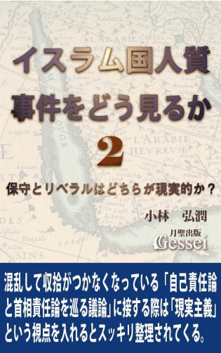 第１巻では、今回のISIL人質事件における世間の議論で話題になった「自己責任論」に対して「現実主義」という視点をベースにした分析を行ってみたものです。私は世間で様々にやり取りされる「自己責任論に関する議論」に接していて、「すごく混乱していて収拾がつかなくなっている雰囲気があるな」と感じたのですが、個人的には「現実主義」という視点を意識しながら世間の議論に接したことで「かなりスッキリ整理できるようになった」という思いになったところがあります。
さらに、この「現実主義」という視点は自己責任論だけでなく、今回のISIL事件に関連して世間で出た様々な意見や論評に対しても「正論かそうではないか」を判断する際に非常に役に立つ、という手応えを感じたものです。
この事件に関しては、保守系のメディアや識者（例えば読売新聞、産経新聞）とリベラル系のメディアや識者（例えば朝日新聞、毎日新聞、ＮＨＫ）から、それぞれの立場に応じた様々な意見が展開されたと言えますが、私はそうしたメディアや識者の主張がどこまで現実的かという視点で考えていく中で「これは予想外の展開だな......」という思いになっていったところがあります。
この本のサブタイトルでは「保守とリベラルはどちらが現実的か？」という言い方をしましたが、言っておきたいのは「理想主義に走ってしまった意見は実現可能性が低いと見なされるので説得力が出ないが、とことん現実を見据えた上での意見なら説得力が出るので、多くの人の賛同も得られるし実現する可能性も高くなる」ということです。
その意味で「保守とリベラルはどちらが現実的か？」という問いかけは「保守とリベラルはどちらが説得力のある主張ができるか？」という意味を含んでいると思います。こうした視点でISIL事件を巡る世間の議論を見ていきますと様々な発見が出てくるので、この本には「今の日本の言論状況を把握するためのヒント」も様々に盛り込まれていると思います。参考になれば幸いです。
文書を後世に残す方法１ 平清盛を800年以上「極悪人」にした平家物語の影響力
 この『文書を後世に残す方法』というタイトルを見て「はあ？」という思いになられた方は多いと思います。
この『文書を後世に残す方法』というタイトルを見て「はあ？」という思いになられた方は多いと思います。
世間に「本の売上を伸ばす方法」とか「ベストセラーを量産するやり方」とか、「電子書籍の売上を５倍、10倍にする方法」とか、ブログの書き方として「こういう書き方をすればブログの閲覧数が倍増する」というようなノウハウは様々にあるものの、それでいて本や文書というものを「後世に残すためのノウハウ」ということなど聞いたことがないと言えるからです。
最近の日本の本（電子書籍ではない、書店に流通している紙の本）の新刊発行点数は毎年約８万点と言われていますが、毎年８万冊ほど新たに刊行される本を書いたり出版する人のほぼ100％が「短期的な視野において売れること」を目的としていると言えます。そのため、「短期的な視野で本が売れるためにはこうすればいい」というノウハウであれば、ニーズがあるためによく聞かれるものの、「本が後世に残るためにはこうすればいい」ということはまったくと言っていいほどニーズがないために、「文書を後世に残す方法」という言い方を聞いても「はあ？」とか「なんだそりゃ？」という印象になってしまうのだと思います。
もちろん、本の売れ方の中でも「ベストセラーとロングセラーの区別」という視点は世間でもあり、「ベストセラーではなくロングセラーを目指す」という発想はよく聞きますが、それでいて「ロングセラーにするためのノウハウ」という話はほとんど聞かないと思います。
私は2004年に自分の著書を出すための「月聖出版」という出版社を作り、10年以上続ける中で紙の本を16冊、電子書籍を40冊ほど刊行してきた人間ですが（2015年１月現在）、出版社を設立した04年の段階では「本を後世に残す」という意識はそれほどなかったものです。
それが、09年頃になって出版活動の方針を検討する中で「こうなったら長期的なスパンで考えて、後世に残すことを前提にした本作りをしていこう」という意識を持つようになったため、それ以来「本や文書を後世に残すためのノウハウ」も考え続けてきたところがあります。
もちろん、「こうやれば必ず本が後世に残る！」と断言できるだけの完璧な理論を構築したわけではありませんが、現時点でも「ひょっとしたら後世に残る可能性もあるんじゃないか」という手応えが感じられるようになってきたため、「取りあえず、これからさらに説得力のある理論にしていくためのたたき台として、現時点で考えている『文書を後世に残すノウハウ』を本にまとめてみよう」という気持ちになった次第です。
ちなみに、「ロングセラー」という言葉を聞いてイメージされるのは「数十年単位」という時間だと思いますが、私が意識している「後世」というのは「数百年単位」（あるいはそれ以上）の時間を指します。毎年８万冊ほど新たに刊行される本の中で「数百年先まで残るような本」などほんのわずかしかないと思いますが（例えば、８万冊の中で100年後に残っている本など100冊に満たないだろうし、これが1000年後になると「１冊残るかどうか」という確率だと思う）、私としては「確率的に考えると非常に低いとは言えるけど、チャレンジしてみる価値はある」と思っているところがあります。
個人的に、この「文書を後世に残す」ためのノウハウはいろいろ考えてきたつもりですが、とにかくこれに関しては世間でまったく語られないため、こうして本にするだけでも試行錯誤の連続だったところがあります（一般に刊行されている文献に「文書を後世に残したい人のための本」とか、「こうすれば誰でも文書を後世に残せる！」というようなものがあれば参考になるのだが、そういう文献など皆無なのでゼロから考えるしかない）。
私としては「せめて今後、この問題を考える際のたたき台のようなものにできれば」という気持ちでいますので、内容に拙いところがあってもどうかお許しいただけたらと思っています（この「先行研究が一切存在しない」ことに関しては「精神的価値」という概念も同じなので、『精神的価値とは何か』シリーズを書く際も試行錯誤の連続だったところがある。これに関しては電子書籍『精神的価値とは何か１ 価値とは何か』に記載）。
本だけでなく、ブログなど様々な文書を書かれている方にとって、何らかの参考になれば幸いです。
小沢一郎と平清盛シリーズ１ 小沢一郎と平清盛
 この『小沢一郎と平清盛』という本は、全盛期の自民党幹事長として権力の頂点を極めながらも自民党を離党し、その後は日本に二大政党制を根付かせようと小選挙区制の導入や93年の細川連立政権、そして09年の民主党政権樹立に尽力した小沢一郎氏と、平安時代末期に栄華を極めて日本史上初の武家政権を樹立したことで知られる平家の棟梁・平清盛の人物評やその生涯を追いながら、「小沢一郎と平清盛の比較論」を展開した内容です。
この『小沢一郎と平清盛』という本は、全盛期の自民党幹事長として権力の頂点を極めながらも自民党を離党し、その後は日本に二大政党制を根付かせようと小選挙区制の導入や93年の細川連立政権、そして09年の民主党政権樹立に尽力した小沢一郎氏と、平安時代末期に栄華を極めて日本史上初の武家政権を樹立したことで知られる平家の棟梁・平清盛の人物評やその生涯を追いながら、「小沢一郎と平清盛の比較論」を展開した内容です。
私が「小沢氏と平清盛には類似点がある」という視点に気づいた最初のきっかけは、政治評論家の故・三宅久之氏が2010年１月のテレビ番組で「平清盛の再来と言われている小沢一郎」と言っていたのを聞いた時です。ただ、これを聞いた時はそれほど気になったわけではなく、他の人物について調べている中で次第に「どうも小沢氏と清盛は似ているのではないか」という気持ちが強くなっていき、本格的に調べていく中で「この二人の類似ぶりは本当に面白い」という気持ちになっていったものです。
ただ、ここで紹介するのは雑学的な「単なる興味本位の人物比較論」ではなく、もっと深い内容になっていると思います。それについて理解してもらうために、「現在の人物と過去の人物の比較論をすることの意味」について述べてみたいと思います。
小沢氏は著書の中でこうした言い方をしています。
「僕自身が歴史に興味を持っていて、どんな問題に対しても過去の歴史の中にヒントを求め、そこから解決策や対応策を考えていく習慣を持っている」
「現在起きている出来事の本質を見抜き、どこに問題があり、どうすれば解決の道があるのかを知るには、自分の頭で考えるよりも、過去の歴史に学ぶ方がずっと具体的だし、ヒントに満ちている」（小沢一郎『小沢主義』集英社インターナショナル136､138頁）
こうした発想は「歴史に学ぶ発想」と言えると思いますが、小沢氏に限らず、世間の大半の人はこの発想を「歴史の出来事に学ぶ」という視点で考えることが多いと思います。
これは言わば「現在の出来事と過去の出来事を比較することは、現在の出来事の本質を見抜くことにつながる」ということになると思いますが、この発想を応用すれば「現在の人物と過去の人物の比較」をすれば「現在の人物の本質を見抜き、その人物が将来どういう道を歩むのか判断することも可能になる」という意味になると思います。
本質的な類似点とは例えば「性格や傾向性の類似」というような要素で、そうしたものが類似していた場合は「人生の歩みそのものも似てくる」と言えます。そして、人物比較論をする際に大事なことは、「現在の人物の未来がどうなるかを考えるために、類似している過去の人物が歩んだ道を参考にすること」であり、数多くの類似点を見つけることにこだわる必要はないというのが私の考え方です。
私はこの二人の類似点を調べていく中で「小沢氏と清盛というのは本当にそっくりだな。なんでこの二人はここまで似ているんだ？」という驚きすら覚えたのですが、さらに調べていく中で「似ているのはこの二人だけではないかも」という気持ちになっていったところがあります。
というのも、「小沢氏に近い政治家」として政権交代後の民主党政権で活躍した松木謙公氏、原口一博氏、細野豪志氏らの言動を調べていく中で「この３人も平安末期に活躍した政治家（いずれも平家一門の人間）にそっくりだ」という思いになり、小沢氏に近い政治家と平家一門を比較する作業をすればするほど、「なんでこんなところまで似ているんだ？」と驚いてしまうような類似点が次々と見つかるようになったからです。
さらに調べた結果「小沢氏に近い政治家と平家一門」だけでなく、「現代で小沢氏に敵対した政治家」と「平安末期に清盛や平家に敵対した政治家」の類似点さえ見つかるようになり、気がついてみると「小沢氏を中心とする現代の政治家と、清盛を中心とする平安末期の政治家」が相当なところまでリンクするような状態になってしまったものです。
もう一つ、この「類似点探し」の効用としては「現在の政治家の本質と将来が見えてくる」だけでなく、「過去の政治家や政治情勢に関する理解が深まり、当時の歴史が面白く感じられるようになる」ことも言っておきたいと思います。一言で言いますと「現在と過去の類似点探しは面白くて仕方がない」ということになりますが、そうした雰囲気をこの「小沢一郎と平清盛シリーズ」から感じ取ってもらえればと思っています。
『小沢一郎と平清盛シリーズ』シリーズ構成（15年１月時点での構想で、変更する可能性あり）
第１巻「小沢一郎と平清盛」
第２巻「松木謙公と平重衡」
第３巻「原口一博と平宗盛」
第４巻「細野豪志と平維盛」
・以下、野田佳彦、橋下徹、石原慎太郎と「かれらに類似する平安末期の政治家」を論じた続編構想もあります。
小沢一郎の政治とカネの疑惑と裁判を解明する
 約20年という長期にわたって政界の中心的存在として居続けただけでなく、2014年の時点でも現役の政治家として精力的な活動を続ける小沢一郎という政治家に対しては、「古い自民党体質を引きずった、権力志向の強い金権政治家」というようなマイナスイメージを持っている人がほとんどだと思います。
約20年という長期にわたって政界の中心的存在として居続けただけでなく、2014年の時点でも現役の政治家として精力的な活動を続ける小沢一郎という政治家に対しては、「古い自民党体質を引きずった、権力志向の強い金権政治家」というようなマイナスイメージを持っている人がほとんどだと思います。
例えば、民主党による政権交代が行われた直後の2009年から10年にかけて、陸山会事件という政治とカネの疑惑によって小沢氏の元秘書３人が検察に逮捕・起訴され、小沢氏自身も検察の強制捜査を受けた様子が大々的に報道された際、マスコミによる世論調査では「小沢氏（当時は民主党幹事長）は疑惑の責任を取って幹事長を辞任するべきだ」と答えた人が70％とか80％に達したこともあったものです。
その後、小沢氏本人は検察審査会が行った強制起訴による裁判で無罪となったものの、元秘書３人には有罪判決が言い渡されてそれが確定したことから、小沢氏に対して「元秘書が有罪ということはやはり小沢氏も違法行為をやっていたに違いない」とか「秘書が有罪になったのに小沢氏が無罪ということは、手下に罪をかぶせて自分は罪を逃れたようなものだ」というような認識を持っている人が多いと思いますが、私は世間のこうした認識は「検察や裁判所の暴走と小沢氏に対するマスコミの偏向報道が大きな影響を与えている」と思っています。
こう言いますと「そんなことを主張する奴はどうせ小沢一郎のシンパだろう」と思われるかもしれませんが、私自身は「昔からの小沢ファン」でも何でもありません。むしろ私の場合、2010年に小沢氏が検察の強制捜査を受けるまでは小沢氏に対し、反小沢急先鋒と言える保守系メディア（特に産経新聞）が報道する「小沢悪人論」を鵜呑みにして「小沢氏という人が権力志向の強い金権政治家であることは間違いない」という認識を持っていたものです。
こうした「小沢氏の政治とカネの疑惑は検察や裁判所の暴走だ」とか「マスコミは小沢氏に対して偏向報道をしている」というような主張をすると小沢シンパと間違われる傾向は世間でもあるようで、例えばジャーナリストの青木理氏は著書でこうした主張をしています。
「最初にお断りしておくが、私たちは民主党の支持者でもなければ、特定の政治家個人を支援する者でもない。これから本稿で検証しようとしていくようなことを記すと、特定の政治意図を持っているかのように受け止められる（もっと直截に言えば小沢一郎のシンパであるかのようなレッテルを貼られてしまう）ことが多くて辟易するのだが、私たちにそのような意図は微塵もない。
余計な話であることを承知の上で記せば、私個人（青木）は小沢という政治家を好まない。ひどく強引に見える振る舞いにせよ、かつて自自公体制下の与党トップの一人として数々の治安法導入の旗ふり役となった経歴にせよ、どちらかといえば嫌悪の対象であり、小沢に過大な期待を寄せているらしき人々の気持ちが理解できない。
ただ、東京地検特捜部が小沢と小沢の周辺に向かって振り上げた捜査の刃は、これまでの検察捜査と比べても明らかにハードルが低く、極めて不当なものであった。しかも、戦後初の本格的政権交代を目前に控えた時期に、政権奪取を窺う野党トップを狙い撃ちするかのように繰り広げられた捜査は、どう考えても常軌を逸していたばかりか、戦後政治の重要局面を歪めてしまったと考えている。いつもながら検察ベッタリの姿勢に終始した大手メディアはともかく、特捜捜査への疑念と不審が相当広く共有されたのは、その何よりの証左だったろう」（青木理「民主党政権を崩壊させた検察権力」 ～青木理、辻惠、宮崎学『政権崩壊 民主党政権とはなんだったのか』角川書店128頁）
私がこの『小沢一郎の政治とカネの疑惑と裁判を解明する』で一番主張したいことは、「マスコミの偏向報道によって作り上げられた小沢氏に対する悪いイメージを取っ払って冷静に考えれば、小沢氏に対する政治とカネの疑惑で小沢氏や元秘書が起訴されて裁判にかけられたことや（元秘書３人に対する）有罪判決は不当であることは誰にでもわかる」ということです。
この本を読まれて、以前の私のように「確かに、自分が今まで抱いていた小沢氏に対する悪いイメージはマスコミの偏向報道によって作られたものかもしれない」という認識を持ってくれる方が一人でも出てくれれば、本書の目的は達成されると思っています。参考になれば幸いです。
日本の官僚支配の実態１ 安倍首相はなぜ解散を決断したのか
 安倍晋三首相は2014年11月18日の記者会見で「消費税率10％への引き上げを１年半先送りすること」を表明し、同時に「国民生活にとって、そして国民経済にとって、重い重い決断をする以上、すみやかに国民に信を問うべきである。そう決心いたしました。今週21日に、衆議院を解散いたします」という言い方で、衆院の解散総選挙も表明します。
安倍晋三首相は2014年11月18日の記者会見で「消費税率10％への引き上げを１年半先送りすること」を表明し、同時に「国民生活にとって、そして国民経済にとって、重い重い決断をする以上、すみやかに国民に信を問うべきである。そう決心いたしました。今週21日に、衆議院を解散いたします」という言い方で、衆院の解散総選挙も表明します。
この安倍氏の解散総選挙の判断については国民から「理由がいまひとつ分からない」とか「内閣支持率が高い今のうちに解散して長期政権につなげたいのだろう」いうような批判的な声が多かった印象があり、産経新聞とＦＮＮが11月22、23両日に実施した世論調査によりますと、首相が衆院の解散を決断したことについては「適切だと思うが22･8％」「適切だと思わないが72･2％」となり、首相が解散の理由に関して消費税の10％への引き上げ先送りを挙げ、「重い決断をする以上速やかに国民に信を問うべき」としたことについては「納得できないが71･7％」という結果だったようです（それでいて、消費税率引き上げ先送りの判断については「評価するが60･6％」だったらしい）。
こうした民意もあって野党やマスコミからは「今回の解散には大義がない」という声が上がっただけでなく、安倍氏の再増税先送りの判断を批判する声も聞かれたものです。例えばフジテレビ解説副委員長の平井文夫氏は、14年11月23日放送のフジテレビ系「新報道2001」でこうした辛辣な批判をしていたものです。
「今回先送りをして、与党も野党もマスコミも国民もみんな喜んでいる。先送りという禁断の果実をみんな食べちゃったんです。甘くておいしいんですよ。世の中、増税が好きな人なんて一人もいないんです。そうは言っても社会保障が必要だから上げましょうと、ずっと議論してやっと２年前に決めたのを、いとも簡単に政権基盤の強い安倍さんが、アベノミクスがうまくいっているって言いながらやったんですよ。政治家って、増税ってなかなかしたくない。できないんですよ」
私自身はこの時の安倍氏が「再増税先送りをする以上、解散総選挙をして民意を問うしかない」と判断したことについては「筋が通っていて大いに賛同できる」と思っていたので（ちなみに私は自民党支持者ではなく、安倍政権にもどちらかと言うと批判的な人間）、「再増税先送りで解散なんて理解できない」という声が多かったことに対してはしばらく考えさせられたのですが、やがて一つの結論に達したところがあります。
それは「どうやら多くの国民は、今の日本という国の実態を〝国民から選ばれた政治家が支配する民主主義国家〟と思っているようだ」ということです。
今回の解散総選挙に対し、様々なメディアや識者から「今回の解散は○○解散だ」という命名論争があり、「今のうち解散」とか「野党殲滅解散」とか「勝てるとき解散」とか「迎合・棚上げ解散」とか「安倍身勝手解散」とか様々なネーミングが聞かれましたが、そうした中で私が「これが一番本質に迫っているのでは」と感じたのが、元総務相の片山善博氏が言っていた「対財務解散」というものです。
それは「財務官僚が消費税10％引き上げを予定通り実行させるための根回しをやっており、安倍首相は財務省（さらには財務省に近い自民党議員）の力を封じるために解散の判断をした」（総選挙に勝って民意の後押しを受ければ、財務省の圧力も封じられるから）という意味ですが、ネットでもこうした「今回の解散は安倍政権対財務省の構図だ」という意見は多少は聞かれたところがあります。
ただ、こうした意見が多数派になっていないことも確かで、「今の日本では政治家より官僚の権力の方が強く、首相や官邸であっても官僚（特に財務省）の力をそう簡単には抑えられない」という実態に気づいている人が多い印象のあるネットユーザーの意見を聞いていても「わかっている人は少数派だな」と感じることがあります。
例えば、「安倍氏は財務省の再増税圧力を抑えるために解散の判断をした」という見方に対して「官邸は財務省をコントロールできないの？」という声が出ていたことがあったのですが、私はこれを読んで「できないんですよ！ 最大の権力者なんだから」と言いたくなったところがあります。
そこでこの『日本の官僚支配の実態』の第１巻では、そうした「今の日本を支配しているのは政治家ではなく官僚で、首相や官邸であっても官僚の権力をそう簡単には抑えられない」という実態が理解できるような話を紹介してみたいと思います。
電子書籍『日本のマスコミの実態』では「マスコミの実態」に迫る話を展開してみましたが、この本では「官僚の実態」、さらには「今の日本の支配構造の実態」に迫るような話を展開してみたいと思っています。参考になれば幸いです。
サッカー日本代表を惨敗させた「信じれば奇跡が起こる」の弊害
 14年６月、ＦＩＦＡサッカーワールドカップ（Ｗ杯）のブラジル大会に５大会連続で出場した日本チームは、欧州のビッグクラブに所属する本田圭佑選手、香川真司選手、長友佑都選手らを擁していたことで「史上最強の布陣」と呼ばれ、さらに日本代表のエース・本田選手が「本気で優勝をねらう」「オレたちはＷ杯で優勝できる」というような「優勝宣言」をしていたため、「今大会の日本代表はこれまでとは何かが違う。大いに期待できる」とか「Ｗ杯でのザック・ジャパンは日本サッカーの歴史を塗り替えるのではないか」という雰囲気が日本中に充満していたと言えます。
14年６月、ＦＩＦＡサッカーワールドカップ（Ｗ杯）のブラジル大会に５大会連続で出場した日本チームは、欧州のビッグクラブに所属する本田圭佑選手、香川真司選手、長友佑都選手らを擁していたことで「史上最強の布陣」と呼ばれ、さらに日本代表のエース・本田選手が「本気で優勝をねらう」「オレたちはＷ杯で優勝できる」というような「優勝宣言」をしていたため、「今大会の日本代表はこれまでとは何かが違う。大いに期待できる」とか「Ｗ杯でのザック・ジャパンは日本サッカーの歴史を塗り替えるのではないか」という雰囲気が日本中に充満していたと言えます。
ところが、フタを開けてみると「コートジボアール戦で逆転負け、ギリシャ戦では一人少ない相手にスコアレスドロー、そしてコロンビア戦では主力をベンチに下げて戦力ダウンした相手に１－４という完敗を喫し、一次リーグで呆気なく敗退する」という結果に終わったため、応援していたサポーターやメディアから落胆や失望の声が相次ぎ、「なぜ史上最強とも呼ばれた日本代表が惨敗したのか？」という問題に関する分析や論評があちこちでなされていると言えます。
これは既に多くの人から指摘されている観点ですが、今回のザック・ジャパンの結果は「８年前の06年に行われたドイツ大会における、ジーコ・ジャパンの結果とそっくり」という言い方ができます。
この「06年のジーコ・ジャパンとの類似」に関して個人的に驚いたのが、コロンビア戦の直前に日本代表選手の何人かが「信じれば奇跡は起きる」という言い方をしていたことです。
この「信じれば奇跡は起きる」発言に私がなぜ驚いたのかと言いますと、06年大会の「第３戦のブラジル戦の直前」にも同じようなことがあったからです。それから８年が経ったブラジル大会でもまったく同じことが繰り返されたことに対して「この教訓はしっかり学んでおかないと、これからも日本人は同じ過ちを何度も何度も繰り返してしまうんじゃないか......」という思いになったところがあります。
日本人であれば「信じれば奇跡が起こる」という考え方に共感したり、賛同している人は多いと思いますので、この本のタイトルにも入れました「信じれば奇跡が起こるの弊害」という表現に対しては、「それでは夢も希望もないじゃないか」と抵抗感を感じたり、反発の意識を持たれた方も多いと思います。
ただ、私がこの本を通して主張したいことは「夢や希望など持つべきではない」ということではなく、「夢や希望をかなえるためには、現実を直視することも必要だ」ということです。多くの人の参考になれば幸いです。
Jesus and his Disciples: beta version
 by Koujun Kobayashi
by Koujun Kobayashi
Contents:
Introduction
Chapter I The Baptism
Chapter II The Sermon
Chapter III The Declaration
Chapter IV The Capture
※『イエスと弟子たち・第一部』の第一～第四章を試験的に英文翻訳したベータ版です。
This book is created by Koujun Kobayashi and Kousei Agawa(in charge of concept and planning).
This book is a beta version. For the translator(Koujun Kobayashi) is a Japanese who is not good at English, there will be many grammatical errors. We were kept to low price this book, so please purchase after understanding of the situation.
From Chapter V to Chapter XII has not been translated yet. If you have a great interested in this novel and can translate it from Japanese into English, please contact us.
月聖出版の本（紙媒体）の紹介
日本を千年王国にした女性・持統天皇
小林弘潤著 税込1470円（192頁)
飛鳥時代にその後千年以上続く天皇、式年遷宮の基礎を造った女帝・持統。織田信長でさえ勝てなかったその強烈な意志の謎を解き明かす。（13年10月刊行）
小沢一郎と平清盛
小林弘潤著 税込1680円（216頁)
武家政権の礎を築いた破壊的改革者・平清盛と比較することで、検察やマスコミ等の旧体制に対して小沢一郎が行おうとしている改革の核心に迫った本。（12年8月刊行）
イエスと弟子たち・第二部中
阿川弘聖・小林弘潤著 税込3990円(上製本 485頁）
広大なローマ帝国中を何度も伝道して回ったパウロのエネルギーの源泉と、帝都ローマに赴いたペテロの前に立ちはだかった「暴君」ネロを描く。（09年12月刊行）
イエスと弟子たち・第二部上
阿川弘聖・小林弘潤著 税込3780円(上製本 436頁）
イエスの十字架後に分裂寸前だった教団がペテロを指導者として結束し、ステファノの殉教やパウロの回心を機に外の世界へ拡張する過程を描く。（08年10月刊行）
イエスと弟子たち
阿川弘聖著 税込2940円(上製本 340頁）
聖書の内容にオリジナルの話を挿入して十字架に向かうイエスの生涯のドラマ性を再現し、裏切りを行うユダの心中や過去まで詳細に描いた物語。（06年11月刊行）
情報による支配から離脱する方法
小林弘潤著 税込2100円（405頁）
情報の受け止め方の基礎知識を元に拉致問題の分析、中国や北朝鮮の情報操作の手法、終戦後のＧＨＱによる情報操作が日本人に与えた影響を解説。（09年4月刊行）
情報処理のコツ・パート２
小林弘潤著 税込1470円（312頁）
情報媒体としての「物語」やヤラセに通じる物語的要素が入った情報の受け止め方、さらにカント哲学に関連する認識論を平易に解き明かした本。（06年5月刊行）
情報処理のコツ
小林弘潤著 税込1050円（234頁）
暗記中心の学校の勉強のやり方を一般の勉強に適応する弊害を指摘し、本、新聞、テレビやマスコミ報道に接する際の効率的な情報処理の仕方を紹介。（05年2月刊行）
社会の学び方・政治経済編
小林弘潤著 税込2520円(558頁）
政治の役割を根本から解き明かし、権力の暴走と民主主義、官と民の役割分担、治安維持と法制化、防衛と情報の重要性等政治の全体像を網羅した本。（08年4月刊行）
社会の学び方・世界史編
小林弘潤著 税込1680円（392頁）
思想の権威化という視点を軸に中国の歴代王朝やイスラム教国家の興亡、キリスト教国家の発展と世界征服への道という世界史の流れを叙述した本。（05年11月刊行）
社会の学び方・日本史編
小林弘潤著 税込1260円（274頁）
古代から鎌倉、戦国、江戸時代までの日本の政治体制の変遷を政治や権力に関する基礎知識から解き明かし、明治以前の日本史の流れを一望する本。（05年6月刊行）
精神的価値とは何か
小林弘潤著 税込1260円(254頁）
お金で換算できない精神的価値という概念を徹底的に分析し、食の向上や平均寿命の上昇等の事例を通じて現代日本の豊かさを浮き彫りにした本。（07年5月刊行）
人を信じるとはどういうことか
小林弘潤著 税込2100円(372頁）
ユングのシャドー理論にも通じる「主観的世界」という発想を通じた人間関係調整の実践論を盛り込み、人を信じることの核心にも踏み込んだ本。（07年10月刊行）
人間関係のコツ・パート２
小林弘潤著 税込1050円（228頁）
人間関係の苦しみを根本から解決するための「権威重視の発想の問題」「心の再構築の必要性」「罪悪感の克服」等の応用的方法論を紹介した本。（05年3月刊行）
学校では教えない人間関係のコツ
小林弘潤著 税込1260円（270頁）
人間関係の苦しみ軽減のために必要な「自分に厳しくの姿勢」「期待と失望の関係」「内からの実感重視の姿勢」等の実践的基礎知識をまとめた本。（04年9月刊行）
中高生のための勉強のコツ
小林弘潤著 税込1260円（270頁）
学校の勉強や受験勉強に取り組む際の「努力とやり方の両立」という心構えと基礎的なやり方を網羅した本。高校受験、大学受験だけでなく資格試験にも応用可能。（04年9月刊行）